Sistema de Control de Orientación
Diapositivas
M.I. Guillermo Ocaña Anaya
Universidad Nacional Autónoma de México
Facultad de Ingeniería
Unidad de Alta Tecnología
Inicio
Información general
- Curso: Sistemas de Control de Orientación
- Optativa de elección para Ingeniería Espacial
- Clave: 1277
- Semestre: 10
- Créditos: 6
- Horas por semana: 3
- Modalidad: Teórica
- Seriación: Ninguna
Objetivo del curso
El alumno analizará el funcionamiento de los sistemas de control de orientación para sistemas espaciales y sus aplicaciones.
¿Sistema de Control de Orientación?


¿Sistema de Control de Orientación?
Presentación
- Intereses académicos
- Intereses profesionales
- Método de titulación
- Aficiones personales

Sobre mí
- Laboratorio de Instrumentación Electrónica de Sistemas Espaciales (LIESE)
- Instituto de Ingeniería, UNAM
- Grupo de Modos Deslizantes
Formación académica
- Ingeniero Eléctrico Electrónico
- Maestría en Ingeniería Eléctrica – Control
Información de contacto
- Correo: guillermoocaan@gmail.com
- LIESE, Edificio P, Facultad de Ingeniería, UNAM

Contenido del curso
- Introducción
- Conceptos generales
- Revisión histórica
- Preliminares
- Marcos de referencia
- Mecánica orbital
- Modelo rotacional
- Modelo cinemático
- Modelo dinámico
- Perturbaciones
- Determinación
- Sensores
- Estimadores estáticos
- Estimadores dinámicos
- Control
- Actuadores
- Error
- Algoritmos de control.
- Generación de par
Antecedentes
- Álgebra lineal
- Cálculo vectorial
- Ecuaciones diferenciales
- Análisis numérico
- Matemáticas avanzadas
- Probabilidad y estadística
- Análisis de sistemas y señales
- Modelado de sistemas físicos
- Diseño digital
- Control automático
- Medio ambiente espacial
- Modelado basado en diseño
- Mecánica orbital
Recomendaciones
- Conocimientos básicos de programación, especialmente en MATLAB/Simulink.
- Conocimientos sobre electrónica básica y manejo de tarjetas de desarrollo distintas a Arduino y ESP32.
- Creación de documentos en LaTeX
Classroom

Formato de entrega
- Los documentos deberán ser entregados en formato PDF mediante Classroom.
- El nombre del archivo deberá seguir el siguiente formato: Tipo_Número_ApellidoNombre.pdf, e.g., Tarea_1_OcanaGuillermo.pdf
- La entrega es individual, incluso si el trabajo es en equipo.
- Es obligatorio utilizar la plantilla en LaTeX que será proporcionada en cada actividad.

Capítulo 1
Introducción
Introducción
Definiciones
▸ Definiciones
Sistema
Es un conjunto de elementos interrelacionados que interactúan entre sí y con su entorno, con el propósito de cumplir una función u objetivo determinado.
Control
Es el proceso mediante el cual se actúa deliberadamente sobre un sistema dinámico para influir en su comportamiento, de modo que éste siga una evolución deseada o alcance un objetivo específico.
Orientación
La orientación de un cuerpo es la relación angular entre una referencia fija al cuerpo y otra referencia.
Sistema de Control de Orientación
Definición
Un sistema de control de orientación es un conjunto de elementos cuyo objetivo es regular la orientación de un cuerpo físico con respecto a una referencia definida, de manera que adquiera una configuración deseada.
¿Qué implica su diseño en sistemas espaciales?
Definición
Un sistema de control de orientación es un conjunto de elementos cuyo objetivo es regular la orientación de un cuerpo físico con respecto a un sistema de referencia definido, de manera que adquiera una orientación deseada o la mantenga de manera estable.
El diseño de este sistema puede seccionarse tres etapas fundamentales, y cada una de ellas responde una pregunta clave.
Modelado (¿Qué?)
El modelado del satélite es la representación matemática y computacional de la dinámica, la cinemática y las características físicas del cuerpo, así como de los elementos de referencia involucrados, que permite definir una orientación relativa a una referencia conocida y predecir su evolución.
Procesamiento (¿Cómo?)
El procesamiento es el conjunto de operaciones matemáticas, lógicas y algorítmicas que transforman las mediciones del sistema y las referencias deseadas en señales de control, de manera que el cuerpo adquiera la orientación deseada.
Instrumentación (¿Con qué?)
La instrumentación comprende los dispositivos físicos encargados de adquirir información relacionada con la orientación actual del cuerpo y de ejecutar las acciones de control calculadas por el sistema de procesamiento, sirviendo como la interfaz entre el modelo teórico y el sistema físico real.
Esta instrumentación se clasifica en tres categorías principales:
Sensor: Es un dispositivo que mide una magnitud física (asociada a un fenómeno físico) y la convierte en una señal proporcional que puede ser interpretada, procesada o registrada.
Actuador: Es un elemento físico encargado de convertir una señal de control en una acción de control que influye en el comportamiento de un sistema dinámico.
Unidad de procesamiento: Es un dispositivo o conjunto de dispositivos encargados de ejecutar la etapa de procesamiento.
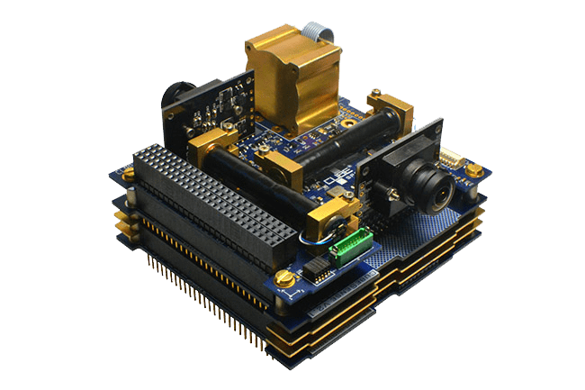
ADCS (Attitude Determination and Control System)
Sistema encargado de determinar y controlar la orientación de un vehículo espacial.
- Attitude es la orientación tridimensional de un vehículo espacial con respecto a un marco de referencia.
- Su propósito es brindarle al vehículo la capacidad de conocer y modificar su orientación.
- Internamente está conformado en dos tareas:
- Determinación: Proceso por el cual se estima la orientación del vehículo relativa a una referencia en tiempo real.
- Control: Conjunto de técnicas dedicadas a mantener y gestionar la orientación del vehículo en una dirección deseada.

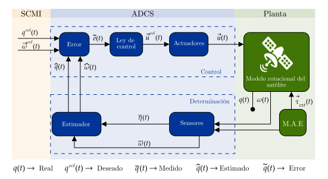
Introducción
Revisión histórica
▸ Revisión histórica
Sputnik 1 (1957)
Lanzamiento: 4 oct 1957 (URSS, R-7)
Lanzado por: Unión Soviética
Propósito/Misión: Primer satélite artificial para transmisión de radio.
Carga útil: Transmisores (20/40 MHz).
Órbita: LEO, 215 × 939 km, inc. 65°.
Instrumentación
- Tipo de apuntamiento: Sin control.
- Instrumentación para control: Ninguna.
- Instrumentación para determinación: Ninguna.
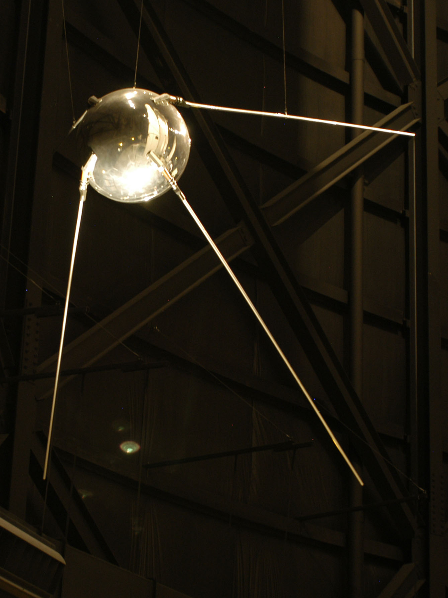
Explorer 1 (1958)
Lanzamiento: 31 ene 1958 (EE.UU., Juno I)
Lanzado por: Estados Unidos
Propósito/Misión: Ciencia espacial (Descubrimiento de los cinturones de Van Allen).
Carga útil: Contador Geiger-Müller, sensor de temperatura.
Órbita: LEO, 358 × 2,550 km, inc. 33.3°.
Instrumentación
- Tipo de apuntamiento: Estabilizado por giro (~750 rpm al lanzamiento).
- Instrumentación para control: Ninguna.
- Instrumentación para determinación: Ninguna.
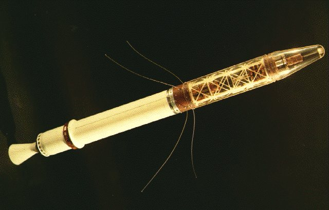
Discoverer-2 (1959)
Lanzamiento: 13 abr 1959 (EE.UU., Thor-Agena A)
Lanzado por: USAF/CIA (CORONA)
Propósito/Misión: Pruebas de plataforma de reconocimiento óptico y cápsula de reentrada.
Carga útil: Cápsula SRV de ensayo; Óptica.
Órbita: LEO polar, ~239 × 346 km, inc. ~89.9°.
Instrumentación
- Tipo de apuntamiento: Control en 3 ejes .
- Instrumentación para control: Propulsor de gas frío (N₂) .
- Instrumentación para determinación: IMU y sensor de horizonte .
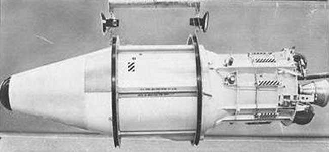
Transit 1A (1959)
Lanzamiento: 17 sep 1959 (EE.UU., Thor-Able)
Lanzado por: EE.UU.
Propósito/Misión: Demostración del sistema de navegación Doppler Transit.
Carga útil: Transmisores de navegación.
Órbita: Fallo en inserción.
Instrumentación
- Tipo de apuntamiento: Estabilizado por giro (~12 rpm).
- Instrumentación para control: Yo-yo .
- Instrumentación para determinación: Ninguno.
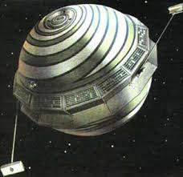
TIROS-1 (1960)
Lanzamiento: 1 abr 1960 (EE.UU., Thor-Able)
Lanzado por: Estados Unidos
Propósito/Misión: Primer satélite meteorológico operativo.
Carga útil: 2 cámaras TV (alta/baja res.), transmisor.
Órbita: LEO, 644 × 654 km, inc. 48°.
Instrumentación
- Tipo de apuntamiento: Estabilizado por giro (~12 rpm).
- Instrumentación para control: Yo-yo.
- Instrumentación para determinación: Sensor solar y de horizonte .
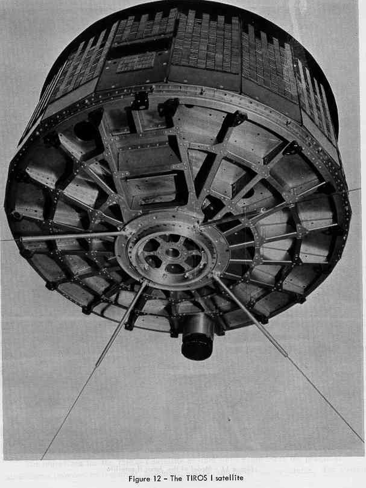
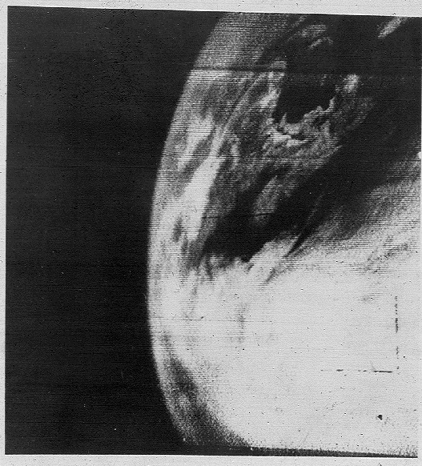
Transit 1B (1960)
Lanzamiento: 13 abr 1960 (EE.UU., Thor-Ablestar)
Lanzado por: APL
Propósito/Misión: Navegación Doppler.
Carga útil: Transmisores de navegación, relojes.
Órbita: LEO polar, ~600 km.
Instrumentación
- Tipo de apuntamiento: Estabilizado por giro (~12 rpm).
- Instrumentación para control: Imanes permanentes .
- Instrumentación para determinación: Sensor solar, magnetómetro .
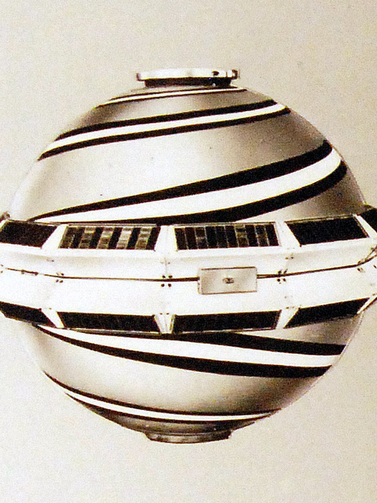
TIROS-2 (1960)
Lanzamiento: 23 nov 1960 (EE.UU., Thor-Delta, LC-17A)
Lanzado por: RCA
Propósito/Misión: Meteorología.
Carga útil: 2 cámaras TV (alta/baja res.), transmisor.
Órbita: LEO, 374 × 394 km, inc. 48.5°.
Instrumentación
- Tipo de apuntamiento: Estabilizado por giro (~12 rpm).
- Instrumentación para control: Propulsores , magnetopares.
- Instrumentación para determinación: Sensor solar y de horizonte.
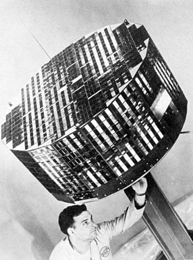
Transit 4B (1961)
Lanzamiento: 15 nov 1961 (EE.UU., Thor-Ablestar)
Lanzado por: APL.
Propósito/Misión: Navegación Doppler (NNSS).
Carga útil: Antenas.
Órbita: LEO polar (~1000 km).
Instrumentación
- Tipo de apuntamiento: Estabilizado por giro.
- Instrumentación para control: Mástil/boom, imanes permanentes.
- Instrumentación para determinación: Sensor solar, magnetómetro.
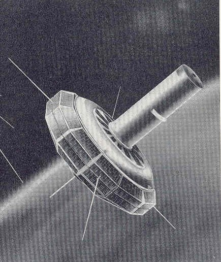
Mariner 4 (1964)
Lanzamiento: 28 nov 1964 (EE.UU., Atlas-Agena D)
Lanzado por: JPL
Propósito/Misión: Sobrevuelo de Marte, estudio de partículas y campos.
Carga útil: Óptica; magnetómetro; detectores de partículas.
Órbita: Heliocéntrica.
Instrumentación
- Tipo de apuntamiento: Control en 3 ejes.
- Instrumentación para control: Propulsores de gas frío N₂; aletas de presión solar auxiliares.
- Instrumentación para determinación: Sensores solares; seguidor de estrellas Canopo; giroscopio.
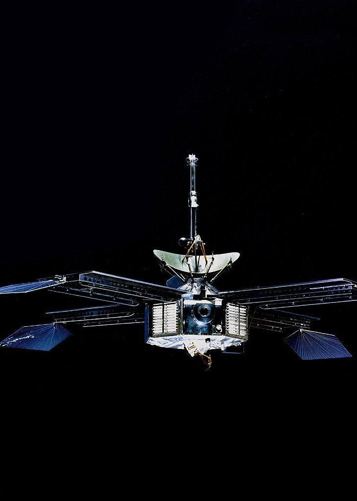
OAO-1 (1966)
Lanzamiento: 8 abr 1966 (EE.UU., Atlas-Agena B)
Lanzado por: NASA
Propósito/Misión: Astronomía ultravioleta/óptica.
Carga útil: Telescopios UV/óptica.
Órbita: LEO (~740 km).
Instrumentación
- Tipo de apuntamiento: Control en 3 ejes.
- Instrumentación para control: ruedas de reacción ; propulsores de respaldo.
- Instrumentación para determinación: Seguidor de estrellas, sensores solares, giroscopio.
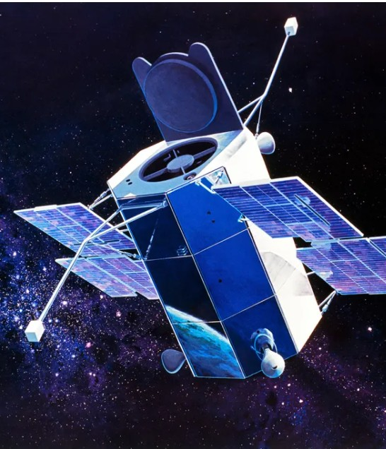
Skylab (1973)
Lanzamiento: 14 may 1973 (EE.UU., Saturn V)
Lanzado por: NASA
Propósito/Misión: Estación orbital para ciencia solar/terrestre y medicina espacial.
Carga útil: Instrumentación científica.
Órbita: LEO, ~434 × 442 km, inc. 50°.
Instrumentación
- Tipo de apuntamiento: Control en 3 ejes.
- Instrumentación para control: Giroscopio de momento controlado (CMG) ; propulsores de respaldo.
- Instrumentación para determinación: Sensores solares; giroscopio; sensores de horizonte.
ATS-6 (1974)
Lanzamiento: 30 may 1974 (EE.UU., Titan III-C)
Lanzado por: NASA
Propósito/Misión: Telecomunicaciones y demostraciones tecnológicas.
Carga útil: Antena parabólica 9.1 m, experimentos de comunicaciones.
Órbita: GEO.
Instrumentación
- Tipo de apuntamiento: Control en 3 ejes.
- Instrumentación para control: Ruedas de reacción; propulsores para desaturación/mantenimiento .
- Instrumentación para determinación: Seguidor de estrellas, sensores solares, sensores de horizonte, giroscopio.
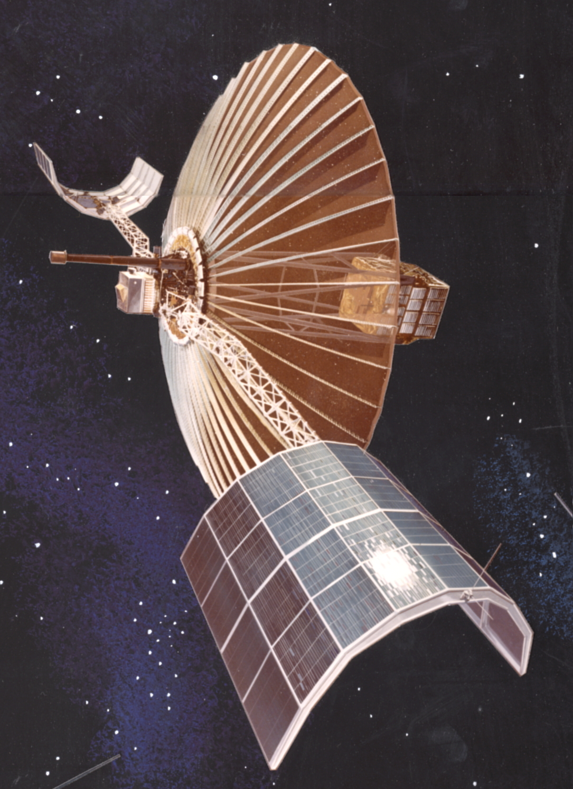
Hubble Space Telescope (1990)
Lanzamiento: 24 abr 1990 (EE.UU., STS-31)
Lanzado por: NASA
Propósito/Misión: Astronomía óptica/UV de alta precisión.
Carga útil: Espejo 2.4 m.
Órbita: LEO, ~547 km, inc. 28.5°.
Instrumentación
- Tipo de apuntamiento: Control en 3 ejes de alta precisión.
- Instrumentación para control: 4 ruedas de reacción; magnetopares; giroscopios.
- Instrumentación para determinación: Fine Guidance Sensors (FGS) .
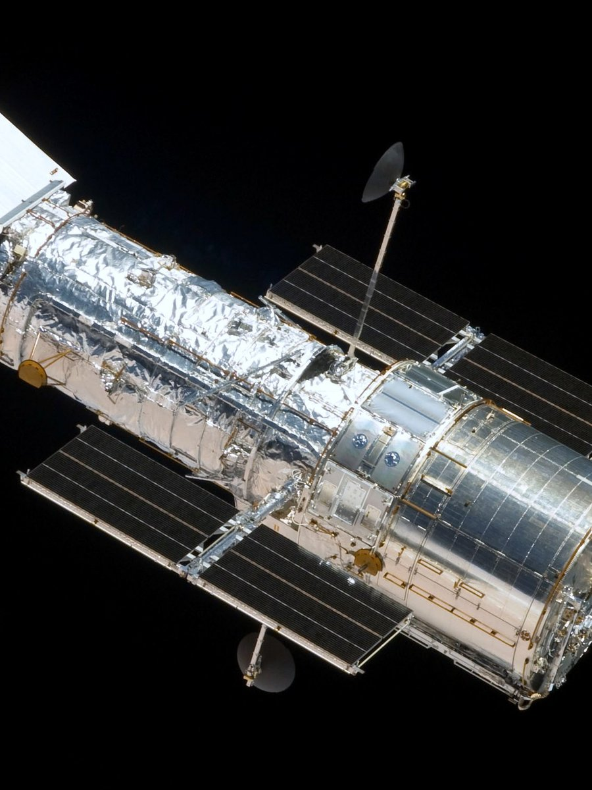
QuakeSat (2003)
Lanzamiento: 30 jun 2003 (Rockot/Briz-KM, Rusia)
Lanzado por: QuakeFinder/Stanford (EE.UU.)
Propósito/Misión: Demostrar detección de señales ULF asociadas a sismos. Primer CubeSat 3U en órbita .
Carga útil: Magnetómetro de inducción en boom telescópico.
Órbita: LEO heliosíncrona, ~821 × 833 km, inc. 98.7°.
Instrumentación
- Tipo de apuntamiento: Estabilización por giro.
- Instrumentación para control: Imanes permanentes, boom.
- Instrumentación para determinación: Ninguno.
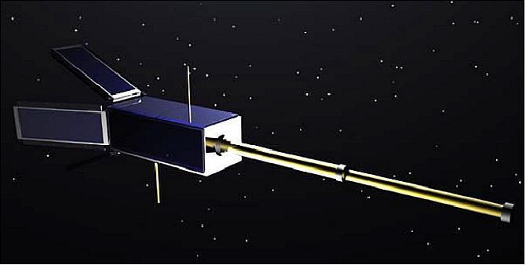
UWE-3 (2013)
Lanzamiento: 21 nov 2013 (Dnepr, Rusia)
Lanzado por: Universidad de Würzburg (Alemania)
Propósito/Misión: Demostración de ADCS miniaturizado y bus modular.
Carga útil: Plataforma tecnológica (ADCS en tiempo real; telecomunicaciones).
Órbita: LEO heliosíncrona, ~559 × 630 km, inc. 97.8°.
Instrumentación
- Tipo de apuntamiento: Control en 3 ejes (demostración en vuelo).
- Instrumentación para control: 6 magnetopares (bobinas distribuidas en paneles), 1 rueda de reacción.
- Instrumentación para determinación: Magnetómetros (9 ejes totales), giroscopios MEMS (3), sensores solares.
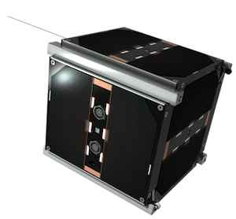
TerraSAR-X (2007)
Lanzamiento: 15 jun 2007 (Alemania, Dnepr)
Lanzado por: Alemania (DLR/Astrium)
Propósito/Misión: Observación por radar X de alta resolución.
Carga útil: Radar SAR banda X.
Órbita: LEO heliosíncrona, ~514 km, inc. 97.44°.
Instrumentación
- Tipo de apuntamiento: Control en 3 ejes.
- Instrumentación para control: Ruedas de reacción, propulsores.
- Instrumentación para determinación: FGS.
Sentinel-2 (2015)
Lanzamiento: 23 jun 2015 (ESA, Vega)
Lanzado por: ESA
Propósito/Misión: Observación multiespectral (vegetación/suelo/agua).
Carga útil: MSI.
Órbita: LEO heliosíncrona, 786 km, inc. 98.6°.
Instrumentación
- Tipo de apuntamiento: Control en 3 ejes.
- Instrumentación para control: Ruedas de reacción.
- Instrumentación para determinación: FGS.
James Webb Space Telescope (JWST) (2021)
Lanzamiento: 25 dic 2021 (Ariane 5)
Lanzado por: NASA/ESA/CSA
Propósito/Misión: Astronomía infrarroja de máxima sensibilidad.
Carga útil: Espejo 6.5 m; NIRCam, FGS.
Órbita: Halo en L2 (~1.5 millones km).
Instrumentación
- Tipo de apuntamiento: Control en 3 ejes.
- Instrumentación para control: Ruedas de reacción, propulsores.
- Instrumentación para determinación: FGS.
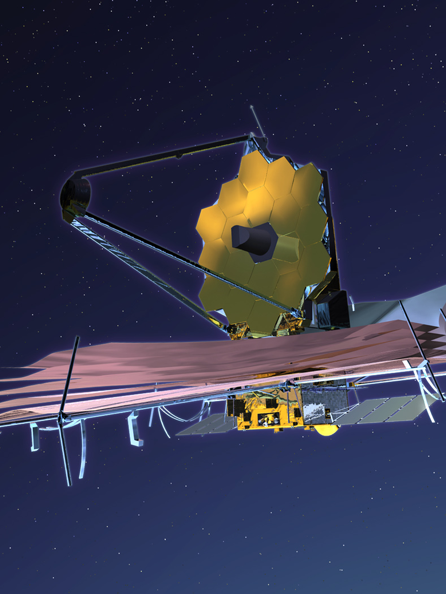
Precisión de apuntamiento
| Nombre | Año | Precisión (°) |
|---|---|---|
| TIROS-2 | 1960 | 1–2 |
| Mariner 4 | 1964 | ≥ 1 |
| OAO-1 | 1966 | 2.8×10⁻⁵ |
| Skylab | 1973 | 0.021 |
| ATS-6 | 1974 | 0.05 |
| Hubble Space Telescope | 1990 | 1.9×10⁻⁶ |
| TerraSAR-X | 2007 | 0.018 |
| James Webb Space Telescope | 2021 | 2.8×10⁻⁷ |
Capítulo 2
Preliminares
Preliminares
Vectores
▸ Repaso de álgebra
Un vector (columna) es una \(n\)-tupla ordenada de números reales:
\[ \vec{v}= \begin{bmatrix} v_1\\ v_2\\ \vdots\\ v_n \end{bmatrix} \in\mathbb{R}^n , \qquad v_i\in\mathbb{R} \]
o de forma equivalente,
\[ \vec{v}\equiv [v_1\quad v_2\quad \dots\quad v_n]^\top. \]
donde \(n\in\mathbb{N}\) y \(\top\) denota transposición. El conjunto de todos los vectores de dimensión \(n\) es el espacio \(\mathbb{R}^n\).
Físicamente nos permiten representar magnitudes vectoriales, e.g., la posición y la velocidad.
Pueden clasificarse como libres o fijos, dependiendo si origen es invariante.
\(v_x\)
\(v_y\)
\(o_x\)
\(v_y\)
Operaciones típicas entre vectores
Sean \(\vec{u},\vec{v}\in\mathbb{R}^n\) y \(\alpha\in\mathbb{R}\):
Suma: \(\vec{u}+\vec{v}=[u_1+v_1,\dots,u_n+v_n]^\top\)
Producto por escalar: \(\alpha\vec{u}=[\alpha u_1,\dots,\alpha u_n]^\top\)
Producto punto:
\[ \begin{aligned} \vec{u}\cdot\vec{v}&=\sum_{i=1}^{n}u_iv_i\\ &=\vec{u}^{\top}\vec{v}\\ &=\|\vec{u}\|\,\|\vec{v}\|\cos\theta \end{aligned} \]
donde \(\theta\) es el ángulo comprendido entre \(\vec{u}\) y \(\vec{v}\) al hacer coincidir sus orígenes.
- Norma Euclidiana: \(\|\vec{u}\|=\sqrt{\vec{u}\cdot\vec{u}}\)
Producto cruz (definición por componentes)
En \(\mathbb{R}^3\), el producto cruz de dos vectores \(\vec{u},\vec{v}\in\mathbb{R}^3\) se define como
\[ \vec{u}\times\vec{v}= \begin{bmatrix} u_2v_3-u_3v_2\\ u_3v_1-u_1v_3\\ u_1v_2-u_2v_1 \end{bmatrix}= \begin{vmatrix} \vec{i} & \vec{j} & \vec{k}\\ u_1 & u_2 & u_3\\ v_1 & v_2 & v_3 \end{vmatrix}, \]
donde \(\{\vec{i},\vec{j},\vec{k}\}\) es la base canónica de \(\mathbb{R}^3\).
Propiedades:
- \(\vec{u}\times\vec{v}=-(\vec{v}\times\vec{u})\)
- \(\vec{u}\times\vec{u}=\vec{0}\)
- \(\vec{u}\cdot(\vec{u}\times\vec{v})=0\)
- \(\vec{u}\times\vec{v}\) es ortogonal (perpendicular) a \(\vec{u}\) y \(\vec{v}\).
- Si \(\vec{u}\) y \(\vec{v}\) son colineales, entonces \(\vec{u}\times\vec{v}=\vec{0}\).
- \(\|\vec{u}\times\vec{v}\|=\|\vec{u}\|\,\|\vec{v}\|\sin\theta.\)
Espacio vectorial (real)
Un espacio vectorial real es una tupla
\[ (\mathcal{V},+,\cdot) \]
donde \(\mathcal{V}\) es un conjunto de vectores reales, \(+:\mathcal{V}\times\mathcal{V}\rightarrow\mathcal{V}\) y \(\cdot:\mathbb{R}\times\mathcal{V}\rightarrow\mathcal{V}\) satisfacen, para todo \(\vec{u},\vec{v},\vec{w}\in\mathcal{V}\) y \(\alpha,\beta\in\mathbb{R}\):
- \(\alpha(\vec{u}+\vec{v})=\alpha\vec{u}+\alpha\vec{v}\).
- \((\alpha+\beta)\vec{u}=\alpha\vec{u}+\beta\vec{u}\).
- \((\alpha\beta)\vec{u}=\alpha(\beta\vec{u})\).
- \(1\cdot\vec{u}=\vec{u}\).
Base
Sea \(\mathcal{V}\) un espacio vectorial real de dimensión \(n\). Un conjunto ordenado
\[ \mathcal{B}=\{\vec{v}_1,\vec{v}_2,\dots,\vec{v}_n\}\subset\mathcal{V} \]
es una base de \(\mathcal{V}\) si:
- Independencia lineal
\[ \alpha_1\vec{v}_1+\cdots+\alpha_n\vec{v}_n=\vec{0} \;\Rightarrow\; \alpha_1=\cdots=\alpha_n=0. \]
- Generación
Todo \(\vec{u}\in\mathcal{V}\) se escribe de forma única como
\[ \vec{u}=\alpha_1\vec{v}_1+\cdots+\alpha_n\vec{v}_n, \qquad \alpha_i\in\mathbb{R}. \]
Nota:
Una combinación lineal es toda expresión
\[ \alpha_1\vec{v}_1+\cdots+\alpha_n\vec{v}_n \]
con \(\alpha_i\in\mathbb{R}\). La independencia lineal de la base implica que ningún vector se expresa como combinación lineal de los demás.
Matrices
Una matriz \(A\in\mathbb{R}^{m\times n}\) es un arreglo rectangular:
\[ A= \begin{bmatrix} a_{11} & \cdots & a_{1n}\\ \vdots & \ddots & \vdots\\ a_{m1} & \cdots & a_{mn} \end{bmatrix}. \]
Operaciones con matrices
Sean \(A,B\in\mathbb{R}^{m\times n}\) y \(\alpha\in\mathbb{R}\):
- Suma: \((A+B)_{ij}=a_{ij}+b_{ij}\).
- Producto por escalar: \((\alpha A)_{ij}=\alpha a_{ij}\).
- Producto matricial: Si \(A\in\mathbb{R}^{m\times p}\) y \(B\in\mathbb{R}^{p\times n}\),
\[ (AB)_{ij}=\sum_{k=1}^{p}a_{ik}b_{kj}, \qquad AB\in\mathbb{R}^{m\times n}. \]
- Transpuesta: \((A^\top)_{ij}=a_{ji}\).
Nota: La notación \((A)_{ij}\) denota el elemento de \(A\) en la fila \(i\) y columna \(j\).
Inversa de una matriz
Sea \(A\in\mathbb{R}^{n\times n}\) (matriz cuadrada). Se dice que \(A\) es invertible si existe \(B\in\mathbb{R}^{n\times n}\) tal que
\[ AB=BA=I_n. \]
Dicha \(B\) es única y se denota \(A^{-1}\).
Equivalencias:
- \(A\) invertible \(\iff \det(A)\neq0 \iff\) las columnas de \(A\) son linealmente independientes.
- \(A\) invertible \(\iff \operatorname{rank}(A)=n\).
Nota:
El determinante de una matriz cuadrada es un escalar asociado que puede interpretarse como una combinación alternada de todos los posibles productos de sus elementos. Por otro lado, el rango de una matriz es el número de sus columnas linealmente independientes. En el caso de matrices cuadradas, el rango de \(A\) es \(n\) si y solo si \(\det(A)\neq0\).
Matrices simétricas y antisimétricas
Sea \(A\in\mathbb{R}^{n\times n}\).
- \(A\) es simétrica si
\[ A^\top=A. \]
Ejemplo:
\[ A= \begin{bmatrix} a & b\\ b & c \end{bmatrix}. \]
- \(A\) es antisimétrica si
\[ A^\top=-A. \]
Ejemplo:
\[ A= \begin{bmatrix} 0 & -a\\ a & 0 \end{bmatrix}. \]
Producto cruz: matriz antisimétrica
Dado \(\vec{u}=[u_1,u_2,u_3]^\top\), se define la matriz antisimétrica
\[ S(\vec{u})= \begin{bmatrix} 0 & -u_3 & u_2\\ u_3 & 0 & -u_1\\ -u_2 & u_1 & 0 \end{bmatrix}. \]
Entonces,
\[ \vec{u}\times\vec{v}=S(\vec{u})\vec{v}. \]
Matrices ortonormales
Sea \(Q\in\mathbb{R}^{n\times n}\).
Decimos que \(Q\) es ortonormal si
\[ Q^\top Q=QQ^\top=I_n. \]
Esto implica:
- Las columnas \(\{\vec{q}_1,\dots,\vec{q}_n\}\) de \(Q\) forman una base ortonormal de \(\mathbb{R}^n\):
\[ \vec{q}_i^\top\vec{q}_j= \begin{cases} 1,&\text{si }i=j,\\ 0,&\text{si }i\neq j. \end{cases} \]
- Cada columna tiene norma \(1\) y distintas columnas son perpendiculares entre sí; en consecuencia, \(|\det(Q)|=1\).
- Consecuencia algebraica: \(Q^{-1}=Q^\top\).
Valores propios
Sea \(A\in\mathbb{R}^{n\times n}\).
Un escalar \(\lambda\in\mathbb{R}\) es un valor propio de \(A\) si existe un vector no nulo \(\vec{v}\in\mathbb{R}^n\) tal que
\[ A\vec{v}=\lambda\vec{v}. \]
Condición equivalente:
\[ \det(A-\lambda I_n)=0. \]
donde \(\det(A-\lambda I_n)\) es el polinomio característico de \(A\).
Vectores propios
Sea \(A\in\mathbb{R}^{n\times n}\).
Si \(\lambda\) es un valor propio de \(A\), entonces todo vector no nulo \(\vec{v}\in\mathbb{R}^n\) que cumple
\[ A\vec{v}=\lambda\vec{v} \]
se denomina vector propio asociado a \(\lambda\).
El conjunto de todos los vectores propios asociados a un mismo \(\lambda\), junto con el vector cero, forma el espacio propio:
\[ E_\lambda=\ker(A-\lambda I_n). \]
Preliminares
Marcos de referencia
▸ Marcos de referencia
Marco de referencia
El marco de referencia \(i\) en \(\mathbb{R}^3\) es la tupla
\[ \ls{i}{\mathcal{F}}=\left(\ls{i}{O},\;\ls{i}{\mathcal{B}}\right), \]
donde:
- \(\ls{i}{O}\in\mathbb{R}^3\) es el origen.
- \(\ls{i}{\mathcal{B}}=\{\ls{i}{\vec{x}},\ls{i}{\vec{y}},\ls{i}{\vec{z}}\}\) es una base ortonormal derecha de \(\mathbb{R}^3\):
\[ \ls{i}{\vec{x}}\cdot\ls{i}{\vec{y}}=0, \qquad \|\ls{i}{\vec{x}}\|=\|\ls{i}{\vec{y}}\|=\|\ls{i}{\vec{z}}\|=1, \qquad \ls{i}{\vec{x}}\times\ls{i}{\vec{y}}=\ls{i}{\vec{z}}. \]
Equivalente matricial:
Si
\[ R=\left[\,\ls{i}{\vec{x}}\;\;\ls{i}{\vec{y}}\;\;\ls{i}{\vec{z}}\,\right], \]
entonces
\[ R^\top R=I_3, \qquad \det(R)=1. \]
Marcos de referencia para satélites
Un marco de referencia provee un sistema cartesiano para expresar coordenadas de vectores en el espacio. Mediante estos, es posible describir la orientación de un cuerpo.
En general, es necesario definir:
- Un marco inercial.
- Un marco sujeto al cuerpo.
- Marcos auxiliares.
Con ello, podemos cuantificar la orientación mediante un parámetro que describa qué tan inclinado está el marco sujeto al cuerpo con respecto a otro marco.
Para un satélite, es común definir los siguientes marcos de referencia:
Marco inercial geocéntrico \(\ls{i}{\mathcal{F}}\)
Centro: \(\ls{i}{O}\) (centro de la Tierra).
Ejes:
- \(\ls{i}{\vec{x}}\): apunta al equinoccio vernal.
- \(\ls{i}{\vec{y}}\): completa la regla de la mano derecha.
- \(\ls{i}{\vec{z}}\): apunta al eje de rotación terrestre.
El adjetivo inercial indica que es un marco de referencia no acelerado (velocidad constante). Este marco inercial es una referencia constante que nos permite medir de forma absoluta la posición y velocidad angular del satélite. Es necesario para aplicar las leyes de la mecánica clásica y describir el movimiento orbital.
Marco perifocal (PQW) \(\ls{p}{\mathcal{F}}\)
Centro: \(\ls{p}{O}\) (centro de la Tierra).
Ejes:
- \(\ls{p}{\vec{x}}\): apunta al perigeo.
- \(\ls{p}{\vec{y}}\): apunta perpendicular a \(\ls{p}{\vec{x}}\) en el plano orbital.
- \(\ls{p}{\vec{z}}\): apunta normal al plano orbital (dirección del momento angular orbital).
Es el marco fundamental de la órbita, directamente relacionado con los elementos orbitales. Se usa para describir trayectorias elípticas y la geometría de la órbita en su plano. También es un marco de referencia inercial.
Marco RSW \(\ls{r}{\mathcal{F}}\)
Centro: \(\ls{r}{O}\) (centro de masa del satélite).
Ejes:
- \(\ls{r}{\vec{x}}\): apunta al cenit (radial, de la Tierra al satélite).
- \(\ls{r}{\vec{y}}\): apunta ortogonal a \(\ls{r}{\vec{x}}\), en dirección de la velocidad \(\vec{v}\) (no necesariamente colineal salvo en órbitas circulares).
- \(\ls{r}{\vec{z}}\): apunta normal al plano orbital.
Su origen está ligado a la posición orbital del satélite; i.e., cambia con el tiempo.
Marco orbital (Local Vertical Local Horizontal) \(\ls{h}{\mathcal{F}}\)
Centro: \(\ls{h}{O}\) (centro de masa del satélite).
Ejes:
- \(\ls{h}{\vec{x}}\): apunta en dirección de la velocidad \(\vec{v}\).
- \(\ls{h}{\vec{y}}\): apunta normal al plano orbital (opuesto al momento angular orbital).
- \(\ls{h}{\vec{z}}\): apunta a nadir (hacia el centro de la Tierra).
También llamado LVLH, es el marco natural para misiones que requieren apuntar instrumentos hacia la Tierra. Sirve como marco de referencia local desde la perspectiva del satélite en órbita.
Marco sujeto al cuerpo \(\ls{b}{\mathcal{F}}\)
Centro: \(\ls{b}{O}\) (centro de masa del satélite).
Ejes:
- \(\ls{b}{\vec{x}}\): definido por la geometría o estructura del satélite.
- \(\ls{b}{\vec{y}}\): definido por la geometría o estructura del satélite.
- \(\ls{b}{\vec{z}}\): definido por la geometría o estructura del satélite.
Es el marco en el que se montan sensores y actuadores. Todos los algoritmos de control de orientación se implementan en este marco porque representa la orientación física real del vehículo espacial.

Preliminares
Matrices de rotación
▸ Matrices de rotación
Matrices de rotación en dos dimensiones
Sea el marco de referencia \(\ls{1}{\mathcal{F}}\) y el marco de referencia \(\ls{2}{\mathcal{F}}\), el cual puede obtenerse al girar el sistema \(\ls{1}{\mathcal{F}}\) sobre el eje \(\ls{1}{\vec{z}}\) en un ángulo \(\theta_1\). Las coordenadas del punto \(p\) en el marco \(\ls{1}{\mathcal{F}}\) son
\[ \ls{1}\vec{p}= \begin{bmatrix} \ls{1}p_x\\ \ls{1}p_y\\ \ls{1}p_z \end{bmatrix} = \begin{bmatrix} r\cos(\theta_2)\\ r\sin(\theta_2)\\ 0 \end{bmatrix} \tag{1}\]
y en el marco \(\ls{2}{\mathcal{F}}\) son
\[ \ls{2}\vec{p}= \begin{bmatrix} \ls{2}p_x\\ \ls{2}p_y\\ \ls{2}p_z \end{bmatrix} = \begin{bmatrix} r\cos(\theta_2-\theta_1)\\ r\sin(\theta_2-\theta_1)\\ 0 \end{bmatrix} \]

Matrices de rotación en dos dimensiones
\[ \ls{2}\vec{p}= \begin{bmatrix} r(\cos\theta_2\cos\theta_1+\sin\theta_2\sin\theta_1)\\ r(\sin\theta_2\cos\theta_1-\cos\theta_2\sin\theta_1)\\ 0 \end{bmatrix} \tag{2}\]
Sustituyendo la expresión anterior se obtiene
\[ \ls{2}\vec{p}= \begin{bmatrix} \ls{1}p_x\cos\theta_1+\ls{1}p_y\sin\theta_1\\ \ls{1}p_y\cos\theta_1-\ls{1}p_x\sin\theta_1\\ 0 \end{bmatrix} \]
La relación entre las coordenadas del punto \(p\) en los marcos \(\ls{1}{\mathcal{F}}\) y \(\ls{2}{\mathcal{F}}\) puede escribirse matricialmente como
\[ \ls{2}\vec{p}= \begin{bmatrix} \cos\theta_1 & \sin\theta_1 & 0\\ -\sin\theta_1 & \cos\theta_1 & 0\\ 0 & 0 & 1 \end{bmatrix} \ls{1}\vec{p} \]
\[ \ls{2}\vec{p} = \ls{2}R_{1} \ls{1}\vec{p} \]
donde
\[ \ls{2}R_{1}= \begin{bmatrix} \cos\theta_1 & \sin\theta_1 & 0\\ -\sin\theta_1 & \cos\theta_1 & 0\\ 0 & 0 & 1 \end{bmatrix} \]
es la matriz de rotación del marco de referencia \(\ls{1}{\mathcal{F}}\) al marco de referencia \(\ls{2}{\mathcal{F}}\).
- La herramienta subyacente para encontrar las componentes de esta matriz es la proyección de vectores en el espacio \(\mathbb{R}^3\).
\[ \ls{2}R_{1}= \begin{bmatrix} \ls{1}\vec{x}\cdot\ls{2}\vec{x} & \ls{1}\vec{y}\cdot\ls{2}\vec{x} & \ls{1}\vec{z}\cdot\ls{2}\vec{x}\\ \ls{1}\vec{x}\cdot\ls{2}\vec{y} & \ls{1}\vec{y}\cdot\ls{2}\vec{y} & \ls{1}\vec{z}\cdot\ls{2}\vec{y}\\ \ls{1}\vec{x}\cdot\ls{2}\vec{z} & \ls{1}\vec{y}\cdot\ls{2}\vec{z} & \ls{1}\vec{z}\cdot\ls{2}\vec{z} \end{bmatrix} \]
- Dado que estamos considerando marcos de referencia con bases ortonormales, la norma de los vectores de las bases es igual a \(1\), es decir,
\[ \|\ls{1}\vec{x}\|=\|\ls{1}\vec{y}\|=\|\ls{1}\vec{z}\|= \|\ls{2}\vec{x}\|=\|\ls{2}\vec{y}\|=\|\ls{2}\vec{z}\|=1. \]
- Entonces, para el ejemplo anterior,
\[ \begin{aligned} \ls{1}\vec{x}\cdot\ls{2}\vec{x} &= \|\ls{1}\vec{x}\|\,\|\ls{2}\vec{x}\|\cos(\theta)=\cos(\theta)\\ \ls{1}\vec{x}\cdot\ls{2}\vec{y} &= \|\ls{1}\vec{x}\|\,\|\ls{2}\vec{y}\|\cos\left(\theta+\frac{\pi}{2}\right)=-\sin(\theta)\\ \ls{1}\vec{x}\cdot\ls{2}\vec{z} &= \|\ls{1}\vec{x}\|\,\|\ls{2}\vec{z}\|\cos\left(\frac{\pi}{2}\right)=0\\ \ls{1}\vec{y}\cdot\ls{2}\vec{x} &= \|\ls{1}\vec{y}\|\,\|\ls{2}\vec{x}\|\cos\left(\theta-\frac{\pi}{2}\right)=\sin(\theta)\\ \ls{1}\vec{y}\cdot\ls{2}\vec{y} &= \|\ls{1}\vec{y}\|\,\|\ls{2}\vec{y}\|\cos(\theta)=\cos(\theta)\\ \ls{1}\vec{y}\cdot\ls{2}\vec{z} &= \|\ls{1}\vec{y}\|\,\|\ls{2}\vec{z}\|\cos\left(\frac{\pi}{2}\right)=0\\ \ls{1}\vec{z}\cdot\ls{2}\vec{x} &= \|\ls{1}\vec{z}\|\,\|\ls{2}\vec{x}\|\cos\left(\frac{\pi}{2}\right)=0\\ \ls{1}\vec{z}\cdot\ls{2}\vec{y} &= \|\ls{1}\vec{z}\|\,\|\ls{2}\vec{y}\|\cos\left(\frac{\pi}{2}\right)=0\\ \ls{1}\vec{z}\cdot\ls{2}\vec{z} &= \|\ls{1}\vec{z}\|\,\|\ls{2}\vec{z}\|\cos(0)=1. \end{aligned} \]
Las matrices de rotación forman un grupo con respecto a la multiplicación matricial. Dicho grupo es conocido como grupo especial ortonormal de orden 3 y se denota como \(SO(3)\), el cual cumple con las siguientes propiedades.
Sea \(R_i\in SO(3)\):
- \(\det(R)=1\).
- \(R^{-1}=R^\top \Rightarrow RR^\top=I\).
- \(R_1R_2\in SO(3)\).
- Las columnas y los renglones de \(R\) tienen norma unitaria y son mutuamente ortogonales entre sí.
Es decir, las columnas de \(R\) forman una base ortonormal derecha en \(\mathbb{R}^3\).
Note además que para la matriz de rotación \(\ls{2}R_1\), cada columna corresponde a las componentes de los vectores de la base \(\ls{1}{\mathcal{F}}\) expresados en la base \(\ls{2}{\mathcal{F}}\) y, viceversa, cada renglón corresponde a las componentes de los vectores de la base \(\ls{2}{\mathcal{F}}\) expresados en la base \(\ls{1}{\mathcal{F}}\).
Matrices de rotación elementales
Las rotaciones sobre los ejes del marco de referencia base (e.g. \(\ls{1}{\mathcal{F}}\) en el ejemplo anterior) se pueden representar mediante las siguientes matrices de rotación elementales:
- Rotación alrededor del eje \(x\):
\[ R_x(\theta)= \begin{bmatrix} 1 & 0 & 0\\ 0 & \cos(\theta) & \sin(\theta)\\ 0 & -\sin(\theta) & \cos(\theta) \end{bmatrix} \]
- Rotación alrededor del eje \(y\):
\[ R_y(\theta)= \begin{bmatrix} \cos(\theta) & 0 & -\sin(\theta)\\ 0 & 1 & 0\\ \sin(\theta) & 0 & \cos(\theta) \end{bmatrix} \]
- Rotación alrededor del eje \(z\):
\[ R_z(\theta)= \begin{bmatrix} \cos(\theta) & \sin(\theta) & 0\\ -\sin(\theta) & \cos(\theta) & 0\\ 0 & 0 & 1 \end{bmatrix} \]
Composición de matrices de rotación
Una rotación general es aquella que no necesariamente está alineada con un eje del marco de referencia. Estas pueden construirse como la composición de varias matrices de rotación.
Matemáticamente, la composición se expresa como un producto de matrices de rotación:
\[ \ls{n}R_0 = \ls{n}R_{n-1} \ls{n-1}R_{n-2} \cdots \ls{2}R_1 \ls{1}R_0 = \prod_{j=0}^{n-1}\ls{j+1}R_j \]
donde cada \(\ls{j+1}R_j\) corresponde a una rotación entre el marco de referencia \(j+1\) y el marco de referencia \(j\).
El orden de multiplicación es esencial: la composición de rotaciones no es conmutativa.
Así, cualquier orientación en el espacio puede obtenerse mediante una secuencia adecuada de rotaciones.
Secuencias de rotaciones elementales
Toda rotación general en \(\mathbb{R}^3\) puede describirse como el producto de tres rotaciones elementales.
Existen 12 posibles secuencias según el orden de los ejes:
\[ ZXZ,\; ZYZ,\; XYX,\; XZX,\; YXY,\; YZY,\; XYZ,\; XZY,\; YXZ,\; YZX,\; ZXY,\; ZYX. \]
- Estas secuencias definen diferentes convenciones de parametrización de la rotación, e.g. ángulos de Euler y ángulos de Tait-Bryan (roll-pitch-yaw).
Relación entre \(\ls{i}{\mathcal{F}}\) y \(\ls{p}{\mathcal{F}}\)

Relación entre \(\ls{i}{\mathcal{F}}\) y \(\ls{p}{\mathcal{F}}\)

Relación entre \(\ls{i}{\mathcal{F}}\) y \(\ls{p}{\mathcal{F}}\)

Relación entre \(\ls{i}{\mathcal{F}}\) y \(\ls{p}{\mathcal{F}}\)

Relación entre \(\ls{i}{\mathcal{F}}\) y \(\ls{p}{\mathcal{F}}\)

Preliminares
Elementos orbitales
▸ Elementos orbitales
Los elementos orbitales (o parámetros keplerianos) son seis variables que permiten describir de manera única la trayectoria de un satélite orbitando alrededor de un cuerpo central.
En particular, los elementos orbitales permiten definir:
- La forma y tamaño de la órbita.
- La orientación de la órbita.
- La posición instantánea del cuerpo en su trayectoria.
Estos seis parámetros son la base del análisis orbital.
\(a,e\)
\(i,\Omega,\omega\)
\(\nu(t)\)
La forma y el tamaño de una órbita se determinan a partir de:
La excentricidad \(e\) mide el grado de deformación de una sección cónica con respecto a una circunferencia. Según el valor de \(e\):
- \(e=0\): órbita circular.
- \(0<e<1\): órbita elíptica.
- \(e=1\): parábola (caso límite de escape).
- \(e>1\): hipérbola (órbita de escape).
En el caso de órbitas elípticas, el semieje mayor \(a\) determina su tamaño.
\[ e=\frac{c}{a}, \qquad c=\sqrt{a^2-b^2} \]
donde \(c\) es la distancia del centro al foco y \(b\) es el semieje menor.


La orientación de la órbita se determina con tres ángulos:
Longitud del nodo ascendente \(\Omega\in[0,2\pi)\): ángulo en el plano de referencia entre la dirección de referencia y la línea de nodos.
Inclinación \(i\in[0,\pi]\): ángulo entre el plano orbital y el plano de referencia.
Argumento del periapsis \(\omega\in[0,2\pi)\): ángulo en el plano orbital entre el nodo ascendente y el periapsis.

La posición instantánea del cuerpo en su órbita se describe con la anomalía verdadera \(\nu(t)\).
La anomalía verdadera \(\nu(t)\) es el ángulo entre el periapsis y la posición actual del satélite, medido en el plano orbital desde el foco donde se encuentra el cuerpo central.
En lugar de \(\nu(t)\), también pueden emplearse otras variables para describir la posición:
- Anomalía excéntrica \(\psi(t)\).
- Anomalía media \(M(t)\).
- La relación entre el marco de referencia inercial \(\ls{i}{\mathcal{F}}\) y el marco perifocal \(\ls{p}{\mathcal{F}}\) está dada por la matriz de rotación
\[ \ls{p}R_i=R_z(\omega)\,R_x(i)\,R_z(\Omega) \tag{3}\]
donde \(R_x(\cdot)\) y \(R_z(\cdot)\) son las matrices de rotación elementales alrededor de los ejes \(x\) y \(z\), respectivamente.
- Mientras que la relación entre el marco perifocal \(\ls{p}{\mathcal{F}}\) y el marco RSW \(\ls{r}{\mathcal{F}}\) está dada por la matriz de rotación
\[ \ls{r}R_p(t)=R_z(\nu(t)) \]
La matriz de rotación \(\ls{p}R_i\) es constante en el tiempo, mientras que la matriz de rotación \(\ls{r}R_p\) varía con el tiempo a medida que cambia la anomalía verdadera \(\nu(t)\).
¿Cómo se calcula \(\nu(t)\)?
Preliminares
El problema de los dos cuerpos
▸ El problema de los dos cuerpos
El problema de los dos cuerpos
El problema de los dos cuerpos consiste en determinar la trayectoria de dos cuerpos que interactúan únicamente entre sí bajo la influencia de la gravedad.
Se asume que ambos cuerpos son representados por masas puntuales y que no existen otras fuerzas actuando sobre ellos.
La solución proporciona las bases para el cálculo de elementos orbitales y la predicción de posiciones futuras.


Sea un marco de referencia inercial \(\ls{i}{\mathcal{F}}\) con origen en el centro de masa del cuerpo central, cuyos ejes están sujetos a una estrella fija en el espacio.
Considere dos partículas de masas \(m_1\) y \(m_2\) que interactúan únicamente entre sí bajo la influencia de la gravedad. Sean \(\ls{i}\vec{r}_1\) y \(\ls{i}\vec{r}_2\) los vectores de posición de los centros de masa \(c_1\) y \(c_2\), respectivamente.
El vector de posición del baricentro \(c_{12}\) (o centro de masa generalizado) del sistema de dos partículas está dado por
\[ \begin{aligned} \ls{i}\vec{r}_c &= \sum_{j=1}^{n}\frac{m_j}{\sum_{k=1}^{n}m_k}\ls{i}\vec{r}_j\\ &= \frac{m_1}{m_1+m_2}\ls{i}\vec{r}_1+ \frac{m_2}{m_1+m_2}\ls{i}\vec{r}_2 \end{aligned} \]
El vector de velocidad absoluta del baricentro \(c_{12}\) está dado por
\[ \ls{i}\vec{v}_c= \frac{m_1}{m_1+m_2}\ls{i}\dot{\vec{r}}_1+ \frac{m_2}{m_1+m_2}\ls{i}\dot{\vec{r}}_2 \]
y, por lo tanto, la aceleración absoluta del baricentro \(c_{12}\) está dada por
\[ \ls{i}\vec{a}_c= \frac{m_1}{m_1+m_2}\ls{i}\ddot{\vec{r}}_1+ \frac{m_2}{m_1+m_2}\ls{i}\ddot{\vec{r}}_2 \tag{4}\]
El vector de posición relativa de \(m_2\) con respecto a \(m_1\) está dado por
\[ \ls{i}\vec{r}_{12} = \ls{i}\vec{r}_2-\ls{i}\vec{r}_1 \]
y su vector unitario es
\[ \ls{i}\hat{r}_{12} = \frac{\ls{i}\vec{r}_{12}}{\|\ls{i}\vec{r}_{12}\|} \]

La partícula \(m_2\) ejerce una fuerza gravitacional sobre la partícula \(m_1\) dada por la ley de gravitación universal de Newton
\[ \ls{i}\vec{f}_{12} = G\frac{m_1m_2}{\|\ls{i}\vec{r}_{12}\|^2}\ls{i}\hat{r}_{12} \]
donde
\[ G=6.67430\times10^{-11}\;\mathrm{m^3\,kg^{-1}\,s^{-2}}. \]
Dada la tercera ley de Newton, la partícula \(m_1\) ejerce una fuerza sobre la partícula \(m_2\) dada por
\[ \ls{i}\vec{f}_{21} = G\frac{m_1m_2}{\|\ls{i}\vec{r}_{12}\|^2}\ls{i}\hat{r}_{12} = -\ls{i}\vec{f}_{12} \]
Por otro lado, la segunda ley de Newton establece que la fuerza total aplicada sobre una partícula es igual a la variación de su momento lineal, es decir,
\[ \ls{i}\vec{f} = \ls{i}\dot{\vec{p}} \]
donde
\[ \ls{i}\vec{p} = m\ls{i}\dot{\vec{r}} \]
es el momento lineal.
Para una partícula con masa constante, la segunda ley de Newton se puede escribir como
\[ \ls{i}\vec{f} = m\ls{i}\ddot{\vec{r}} = m\ls{i}\vec{a}. \]
En nuestro caso, las fuerzas totales que actúan sobre las partículas \(m_1\) y \(m_2\) son
\[ \ls{i}\vec{f}_{21}=m_1\ls{i}\ddot{\vec{r}}_1, \qquad \ls{i}\vec{f}_{12}=m_2\ls{i}\ddot{\vec{r}}_2 \]
Sustituyendo en Ecuación 4 se obtiene
\[ \begin{aligned} \ls{i}\vec{a}_c &= \frac{1}{m_1+m_2} (\ls{i}\vec{f}_{12}+\ls{i}\vec{f}_{21})\\ &= \frac{1}{m_1+m_2} (\ls{i}\vec{f}_{12}-\ls{i}\vec{f}_{12})\\ &=0. \end{aligned} \]
Por lo tanto, el baricentro \(c_{12}\) no acelera, es decir, se mueve en una línea recta con velocidad constante o está en reposo.
Esto implica que el movimiento de las partículas \(m_1\) y \(m_2\) puede analizarse en un marco de referencia inercial con origen en el baricentro \(c_{12}\).
Si ambos cuerpos se aceleran mutuamente bajo la influencia de la gravedad…
¿Por qué hemos colocado el origen de nuestro marco de referencia inercial geocéntrico en el centro de masa de la Tierra?
Dado que \(m_1\gg m_2\), se puede suponer que
\[ \begin{aligned} \ls{i}\vec{r}_c &= \frac{m_1}{m_1+m_2}\ls{i}\vec{r}_1+ \frac{m_2}{m_1+m_2}\ls{i}\vec{r}_2\\ &\approx \ls{i}\vec{r}_1. \end{aligned} \]
Bajo esta suposición, el baricentro \(c_{12}\) coincide con el centro de masa \(c_1\). Con ello, podemos reducir el problema de los dos cuerpos a un problema de un solo cuerpo, donde la partícula \(m_2\) se mueve bajo la influencia de la gravedad ejercida por la partícula \(m_1\), la cual permanece en reposo en el origen del marco de referencia inercial.
A este caso se le conoce como el problema de una fuerza central.

Preliminares
El problema de los dos cuerpos
El problema de una fuerza central
▸ El problema de una fuerza central

Considere el movimiento de la partícula \(m\) bajo la influencia de la gravedad ejercida por la partícula \(m_0\), la cual permanece en reposo en el origen del marco de referencia \(\ls{p}\mathcal{F}\).
El momento angular de la partícula \(m\) con respecto al origen del marco de referencia \(\ls{p}\mathcal{F}\) está dado por
\[ \ls{p}\vec{h} = \ls{p}\vec{r}\times\ls{p}\vec{p} \]
donde \(\ls{p}\vec{r}\) es el vector de posición de \(m\) con respecto al origen del marco de referencia \(\ls{p}\mathcal{F}\) y \(\ls{p}\vec{p}=m\ls{p}\dot{\vec{r}}\) es el momento lineal de \(m\).
La variación del momento angular considerando \(m\) constante está dada por
\[ \begin{aligned} \ls{p}\dot{\vec{h}} &= \ls{p}\dot{\vec{r}}\times\ls{p}\vec{p} + \ls{p}\vec{r}\times\ls{p}\dot{\vec{p}}\\ &= \ls{p}\vec{v}\times m\ls{p}\vec{v} + \ls{p}\vec{r}\times\ls{p}\vec{f}\\ &= \ls{p}\vec{r}\times\ls{p}\vec{f}\\ &= \ls{p}\vec{\tau}. \end{aligned} \]
donde
\[ \ls{p}\vec{\tau} = \ls{p}\vec{r}\times\ls{p}\vec{f} \]
es el par (o momento de fuerza) aplicado sobre \(m\) con respecto al origen del marco de referencia \(\ls{p}\mathcal{F}\).
Dado que la fuerza gravitacional es una fuerza central, es decir, actúa a lo largo de la línea que une a las partículas \(m\) y \(m_0\), esta se puede expresar como
\[ \ls{p}\vec{f} = -G\frac{m_0m}{r^2}\ls{p}\hat{r}. \]
donde
\[ r=\|\ls{p}\vec{r}\|, \qquad \ls{p}\hat{r}=\frac{\ls{p}\vec{r}}{r}. \]
Con ello, el par aplicado sobre \(m\) con respecto al origen del marco de referencia \(\ls{p}\mathcal{F}\) es
\[ \begin{aligned} \ls{p}\vec{\tau} &= \ls{p}\vec{r}\times\ls{p}\vec{f}\\ &= -G\frac{m_0m}{r^2} \ls{p}\vec{r}\times\ls{p}\hat{r}\\ &= 0. \end{aligned} \]
Con ello, la variación del momento angular de \(m\) con respecto al origen del marco de referencia \(\ls{p}\mathcal{F}\) es nula. Es decir, el momento angular de \(m\) es constante en el tiempo.
\[ \begin{aligned} \ls{p}\dot{\vec{h}}&=0\\ \Rightarrow\qquad \ls{p}\vec{h}&=\text{constante}. \end{aligned} \]
Sin embargo, esto cumple únicamente si no existen fuerzas externas no colineales (como la resistencia atmosférica o la influencia gravitacional de otros cuerpos) que actúen sobre \(m\), debido a que estas fuerzas pueden generar un par neto diferente de cero (\(\ls{p}\vec{\tau}\neq0\)).
El vector unitario \(\ls{r}\hat{x}\) puede representarse en coordenadas polares como
\[ \ls{r}\hat{x} = \cos(\nu)\ls{p}\hat{x} + \sin(\nu)\ls{p}\hat{y} \]
donde \(\nu\) es el ángulo entre \(\ls{p}\hat{x}\) y \(\ls{r}\hat{x}\). De manera similar,
\[ \ls{r}\hat{y} = -\sin(\nu)\ls{p}\hat{x} + \cos(\nu)\ls{p}\hat{y}. \]
La derivada de estos vectores unitarios es
\[ \begin{aligned} \ls{r}\dot{\hat{x}} &= \frac{\mathrm{d}\nu}{\mathrm{d}t}\ls{r}\hat{y}\\ \ls{r}\dot{\hat{y}} &= -\frac{\mathrm{d}\nu}{\mathrm{d}t}\ls{r}\hat{x}. \end{aligned} \]
Con ello, el vector de posición en el marco de referencia \(\ls{p}\mathcal{F}\) está dado por
\[ \ls{p}\vec{r} = r\,\ls{r}\hat{x}, \]
mientras que el vector de velocidad es
\[ \ls{p}\vec{v} = \ls{p}\dot{\vec{r}} = \frac{\mathrm{d}r}{\mathrm{d}t}\ls{r}\hat{x} + r\frac{\mathrm{d}\nu}{\mathrm{d}t}\ls{r}\hat{y}. \]
El vector de aceleración es
\[ \begin{aligned} \ls{p}\vec{a} &= \ls{p}\ddot{\vec{r}}\\ &= \left( \frac{\mathrm{d}^2r}{\mathrm{d}t^2} - r\left(\frac{\mathrm{d}\nu}{\mathrm{d}t}\right)^2 \right)\ls{r}\hat{x}\\ &\quad+ \left( 2\frac{\mathrm{d}r}{\mathrm{d}t}\frac{\mathrm{d}\nu}{\mathrm{d}t} + r\frac{\mathrm{d}^2\nu}{\mathrm{d}t^2} \right)\ls{r}\hat{y}. \end{aligned} \tag{5}\]
A partir de aquí en adelante, vamos a considerar que la partícula \(m\) tiene masa unitaria (\(m=1\)), y definiremos a las variables bajo esta consideración como específicas.
La fuerza de atracción gravitacional bajo las anteriores suposiciones es
\[ \begin{aligned} \ls{p}\vec{f} &= \ls{p}\vec{a}\\ &= -G\frac{m_0}{r^2}\ls{r}\hat{x}. \end{aligned} \tag{6}\]
Igualando las componentes de Ecuación 5 y Ecuación 6 se obtiene el sistema de ecuaciones diferenciales
\[ \begin{aligned} \frac{\mathrm{d}^2r}{\mathrm{d}t^2} -r\left(\frac{\mathrm{d}\nu}{\mathrm{d}t}\right)^2 &= -G\frac{m_0}{r^2},\\ 2\frac{\mathrm{d}r}{\mathrm{d}t}\frac{\mathrm{d}\nu}{\mathrm{d}t} +r\frac{\mathrm{d}^2\nu}{\mathrm{d}t^2} &= 0. \end{aligned} \tag{7}\]
Por otro lado, el momento angular específico con respecto al origen del marco de referencia \(\ls{p}\mathcal{F}\) es
\[ \begin{aligned} \ls{p}\vec{h} &= \ls{p}\vec{r}\times\ls{p}\vec{p}\\ &= r\ls{r}\hat{x}\times \left( \frac{\mathrm{d}r}{\mathrm{d}t}\ls{r}\hat{x} + r\frac{\mathrm{d}\nu}{\mathrm{d}t}\ls{r}\hat{y} \right)\\ &= r^2\frac{\mathrm{d}\nu}{\mathrm{d}t} \, \ls{r}\hat{x}\times\ls{r}\hat{y}\\ &= r^2\frac{\mathrm{d}\nu}{\mathrm{d}t}\ls{r}\hat{z}\\ &= \|\ls{p}\vec{h}\|\ls{r}\hat{z}. \end{aligned} \tag{8}\]
Retomando la segunda ecuación de Ecuación 7, se obtiene
\[ \frac{1}{r} \frac{\mathrm{d}}{\mathrm{d}t} \left( r^2\frac{\mathrm{d}\nu}{\mathrm{d}t} \right) = 0. \]
Sustituyendo Ecuación 8 en la ecuación anterior se obtiene
\[ \frac{1}{r} \frac{\mathrm{d}}{\mathrm{d}t} \left( \|\ls{p}\vec{h}\| \right) = 0. \]
lo cual confirma que el momento angular es constante en el tiempo.
Para resolver la primera ecuación de Ecuación 7, se realiza el cambio de variable
\[ r=\frac{1}{u}. \]
Con ello, se obtiene
\[ \begin{aligned} \frac{\mathrm{d}r}{\mathrm{d}t} &= -\frac{1}{u^2}\frac{\mathrm{d}u}{\mathrm{d}t}\\ &= -\frac{1}{u^2} \frac{\partial u}{\partial\nu} \frac{\mathrm{d}\nu}{\mathrm{d}t}. \end{aligned} \]
Sustituyendo Ecuación 8 se obtiene
\[ \begin{aligned} \frac{\mathrm{d}r}{\mathrm{d}t} &= -\frac{1}{u^2} \frac{\partial u}{\partial\nu} \frac{\|\ls{p}\vec{h}\|}{r^2}\\ &= -\|\ls{p}\vec{h}\| \frac{\partial u}{\partial\nu}. \end{aligned} \tag{9}\]
Derivando nuevamente con respecto al tiempo se obtiene
\[ \begin{aligned} \frac{\mathrm{d}^2r}{\mathrm{d}t^2} &= -\frac{\mathrm{d}\|\ls{p}\vec{h}\|}{\mathrm{d}t} \frac{\partial u}{\partial\nu} - \|\ls{p}\vec{h}\| \frac{\mathrm{d}}{\mathrm{d}t} \left( \frac{\partial u}{\partial\nu} \right)\\ &= -\|\ls{p}\vec{h}\| \frac{\partial^2u}{\partial\nu^2} \frac{\mathrm{d}\nu}{\mathrm{d}t}. \end{aligned} \]
Sustituyendo nuevamente Ecuación 8 se obtiene
\[ \begin{aligned} \frac{\mathrm{d}^2r}{\mathrm{d}t^2} &= -\frac{\|\ls{p}\vec{h}\|^2}{r^2} \frac{\partial^2u}{\partial\nu^2}\\ &= -\|\ls{p}\vec{h}\|^2u^2 \frac{\partial^2u}{\partial\nu^2}. \end{aligned} \]
Considere a \(Gm_0=\mu\) como el parámetro gravitacional estándar del cuerpo central.
Sustituyendo las expresiones anteriores en la primera ecuación de Ecuación 7 se obtiene
\[ \begin{aligned} -\|\ls{p}\vec{h}\|^2u^2 \frac{\partial^2u}{\partial\nu^2} - \frac{1}{u} \left( \|\ls{p}\vec{h}\|u^2 \right)^2 &= -\mu u^2,\\ \frac{\partial^2u}{\partial\nu^2}+u &= \frac{\mu}{\|\ls{p}\vec{h}\|^2}. \end{aligned} \]
La solución general de esta ecuación diferencial es
\[ u= \frac{\mu}{\|\ls{p}\vec{h}\|^2} + C\cos(\nu-\nu_0) \tag{10}\]
donde \(C\) y \(\nu_0\) son constantes de integración que se determinan con las condiciones iniciales. Mientras que
\[ \frac{\partial u}{\partial\nu} = -C\sin(\nu-\nu_0). \tag{11}\]
Sea
\[ E=E_c+E_p \]
la energía mecánica específica de la partícula.
La energía cinética específica está dada por
\[ E_c=\frac{1}{2}\|\ls{p}\vec{v}\|^2 \]
y la energía potencial específica es
\[ E_p=-\frac{\mu}{r}. \]
La norma del vector de velocidad se obtiene de la expresión
\[ \|\ls{p}\vec{v}\|^2= \left( \frac{\mathrm{d}r}{\mathrm{d}t} \right)^2+ \left( r\frac{\mathrm{d}\nu}{\mathrm{d}t} \right)^2. \]
Sustituyendo Ecuación 8 y Ecuación 9 se obtiene
\[ \begin{aligned} \|\ls{p}\vec{v}\|^2 &= \left( -\|\ls{p}\vec{h}\| \frac{\partial u}{\partial\nu} \right)^2 + \left( \frac{1}{u} \|\ls{p}\vec{h}\|u^2 \right)^2\\ &= \|\ls{p}\vec{h}\|^2 \left[ \left( \frac{\partial u}{\partial\nu} \right)^2 + u^2 \right]. \end{aligned} \tag{12}\]
Sustituyendo Ecuación 10 y Ecuación 11 en la expresión anterior se obtiene
\[ \begin{aligned} \|\ls{p}\vec{v}\|^2 &= \|\ls{p}\vec{h}\|^2 \left[ C^2\sin^2(\nu-\nu_0) + \left( \frac{\mu}{\|\ls{p}\vec{h}\|^2} + C\cos(\nu-\nu_0) \right)^2 \right]\\ &= \|\ls{p}\vec{h}\|^2C^2 + 2\mu C\cos(\nu-\nu_0) + \frac{\mu^2}{\|\ls{p}\vec{h}\|^2}. \end{aligned} \]
Con ello, la energía mecánica específica es
\[ \begin{aligned} E &= E_c+E_p\\ &= \frac{1}{2} \left( \|\ls{p}\vec{h}\|^2C^2 + 2\mu C\cos(\nu-\nu_0) + \frac{\mu^2}{\|\ls{p}\vec{h}\|^2} \right) - \mu u\\ &= \frac{1}{2} \left( \|\ls{p}\vec{h}\|^2C^2 + 2\mu C\cos(\nu-\nu_0) + \frac{\mu^2}{\|\ls{p}\vec{h}\|^2} \right) - \mu \left( \frac{\mu}{\|\ls{p}\vec{h}\|^2} + C\cos(\nu-\nu_0) \right)\\ &= \frac{1}{2}\|\ls{p}\vec{h}\|^2C^2 - \frac{\mu^2}{2\|\ls{p}\vec{h}\|^2}. \end{aligned} \]
Esto implica que la energía mecánica específica es constante en el tiempo para el caso de una fuerza central y no depende del ángulo \(\nu\).
De la anterior expresión se puede despejar la constante \(C\) como
\[ C= \frac{\mu}{\|\ls{p}\vec{h}\|^2} \sqrt{ 1+ 2E\frac{\|\ls{p}\vec{h}\|^2}{\mu^2} }. \]
Considerando que
\[ e= \sqrt{ 1+ 2E\frac{\|\ls{p}\vec{h}\|^2}{\mu^2} } \]
es la excentricidad de la órbita, la expresión de \(u\) en Ecuación 10 se puede escribir como
\[ u= \frac{\mu}{\|\ls{p}\vec{h}\|^2} \left( 1+e\cos(\nu-\nu_0) \right). \]
Finalmente, la ecuación de la órbita en coordenadas polares es
\[ \begin{aligned} r &= \frac{1}{u} = \frac{\|\ls{p}\vec{h}\|^2/\mu} {1+e\cos(\nu-\nu_0)}\\ &= \frac{p} {1+e\cos(\nu-\nu_0)}. \end{aligned} \tag{13}\]
donde
\[ p=\frac{\|\ls{p}\vec{h}\|^2}{\mu} \]
es el semi-latus rectum de la órbita.
Algunas cuestiones interesantes
¿Qué pasa con la ley de gravitación universal si \(r=0\)?
¿A qué sistema clásico recuerda la ecuación diferencial Ecuación 7?
¿Por qué la energía potencial es siempre negativa?
¿Por qué decimos que la variable \(e\) de la ecuación de la órbita Ecuación 13 es la excentricidad de la órbita?
Preliminares
Secciones cónicas
▸ Secciones cónicas

La ecuación de la órbita Ecuación 13 describe una sección cónica con excentricidad \(e\) en coordenadas polares \((r,\nu)\).
Dependiendo del valor de \(e\), la órbita puede ser:
- Una circunferencia (\(e=0\)).
- Una elipse (\(0\le e<1\)).
- Una parábola (\(e=1\)).
- Una hipérbola (\(e>1\)).
Para este curso, nos enfocaremos únicamente en las órbitas elípticas.
Órbitas elípticas
La órbita elíptica es la más común en mecánica orbital.
El punto de la elipse con \(\nu=0\) se conoce como perigeo y el punto con \(\nu=\pi\) como apogeo.
La distancia desde el foco hasta el perigeo (punto A) puede obtenerse de Ecuación 13 como
\[ r_p=\frac{p}{1+e}. \]
Mientras que la distancia desde el foco hasta el apogeo (punto B) es
\[ r_a=\frac{p}{1-e}. \]
Con ello, el semieje mayor \(a\) está dado por
\[ a=\frac{r_p+r_a}{2} =\frac{p}{1-e^2}. \]

En este sentido, el semi-latus rectum \(p\) puede expresarse en función del semieje mayor \(a\) y la excentricidad \(e\) como
\[ p=a(1-e^2). \]
Adicionalmente, puede interpretarse geométricamente como la distancia desde el foco hasta la elipse cuando \(\nu=\pm\frac{\pi}{2}\).
La distancia focal \(c\) en términos de \(e\) y \(p\) está dada por
\[ c=\frac{ep}{1-e^2}, \]
mientras que el semieje menor \(b\) está dado por
\[ b=\frac{p}{\sqrt{1-e^2}}. \]
La energía mecánica específica en una órbita elíptica está dada por
\[ \begin{aligned} E &= \frac{1}{2}\|\ls{p}\vec{h}\|^2C^2 - \frac{\mu^2}{2\|\ls{p}\vec{h}\|^2}\\ &= \frac{1}{2}\|\ls{p}\vec{h}\|^2 \left( \frac{\mu}{\|\ls{p}\vec{h}\|^2}e \right)^2 - \frac{\mu^2}{2\|\ls{p}\vec{h}\|^2}\\ &= -\frac{\mu^2}{2\|\ls{p}\vec{h}\|^2}(1-e^2)\\ &= -\frac{\mu}{2a}<0. \end{aligned} \]
Esto implica que la energía mecánica específica es negativa en una órbita elíptica.
Por consecuencia,
\[ |E_c|<|E_p|. \]
Relación entre energía y secciones cónicas
De forma general, la relación entre la energía mecánica específica y las diferentes secciones cónicas puede resumirse en
| Sección cónica | \(e\) | \(E\) | Energía dominante |
|---|---|---|---|
| Circunferencia | \(e=0\) | \(E<0\) | Potencial |
| Elipse | \(0<e<1\) | \(E<0\) | Potencial |
| Parábola | \(e=1\) | \(E=0\) | Igual |
| Hipérbola | \(e>1\) | \(E>0\) | Cinética |
Por otro lado, geométricamente puede describirse en términos de \(e\) y \(p\) mediante
| Sección cónica | \(e\) | \(p\) | Descripción |
|---|---|---|---|
| Circunferencia | \(e=0\) | \(p=r\) | Radio constante |
| Elipse | \(0<e<1\) | \(p=a(1-e^2)\) | Órbita cerrada |
| Parábola | \(e=1\) | \(p=2r_p\) | Órbita límite |
| Hipérbola | \(e>1\) | \(p=a(e^2-1)\) | Órbita abierta |
La conclusión de esto es que la forma y el tamaño de la órbita están determinados únicamente por la energía mecánica específica y el momento angular específico.
En otros términos, la forma y el tamaño están determinados por las condiciones iniciales de posición y velocidad, y no por la masa del cuerpo en órbita.
Preliminares
Anomalías y ????????
▸ Anomalías
Hasta ahora, hemos visto la descripción geométrica de las órbitas elípticas, así como su orientación en el espacio. Sin embargo, no hemos visto cómo se mueve un cuerpo a lo largo de su órbita.
Para ello, es necesario introducir el concepto de anomalía.
- Una anomalía es un ángulo que describe la posición de un cuerpo en su órbita en función del tiempo.
- El término anomalía se deriva del griego anomalos, que significa irregular o desviado, haciendo referencia a la naturaleza no uniforme del movimiento orbital.
La anomalía verdadera \(\nu\in[0,2\pi)\) es el ángulo entre el perigeo y la posición actual del cuerpo en su órbita, medido desde el foco de la elipse.
Para calcularla, es necesario introducir un ángulo auxiliar conocido como anomalía excéntrica \(\psi\in[0,2\pi)\).
Para ello, se define un círculo auxiliar de radio \(a\) con centro en el centro de la elipse (línea punteada).
La anomalía excéntrica \(\psi\) es el ángulo entre los segmentos \(OA\) y \(OC\), donde \(O\) es el centro de la elipse, \(A\) es el perigeo y \(C\) es la proyección del cuerpo en el círculo auxiliar.
La relación entre la anomalía verdadera \(\nu\) y la anomalía excéntrica \(\psi\) se construye de la siguiente manera:
Considere
\[ \begin{aligned} c &= m+n,\\ m &= a\cos(\psi),\\ n &= r\cos(\pi-\nu)=-r\cos(\nu). \end{aligned} \]
En consecuencia,
\[ c=a\cos(\psi)-r\cos(\nu)=ae, \]
y considerando \(\nu_0=0\ \mathrm{rad}\),
\[ \begin{aligned} m &= a\cos(\psi)=r\cos(\nu)+ae\\ &=\frac{p\cos\nu}{1+e\cos\nu}+ae\\ &=\frac{a(1-e^2)\cos\nu}{1+e\cos\nu}+ae\\ &=\frac{ae+a\cos\nu}{1+e\cos\nu}. \end{aligned} \]
Por lo tanto,
\[ \begin{aligned} \cos(\nu)&=\frac{\cos(\psi)-e}{1-e\cos(\psi)},\\ \sin(\nu)&=\frac{\sin(\psi)\sqrt{1-e^2}}{1-e\cos(\psi)},\\ \tan(\nu)&=\frac{\sin(\psi)\sqrt{1-e^2}}{\cos(\psi)-e}. \end{aligned} \tag{14}\]
Adicionalmente, la distancia \(r(t)\) puede expresarse en función de la anomalía excéntrica como
\[ \begin{aligned} r(t)&=\frac{p}{1+e\cos(\nu)}\\ &=\frac{a(1-e^2)}{1+e\left(\frac{\cos(\psi)-e}{1-e\cos(\psi)}\right)}\\ &=a(1-e\cos(\psi)). \end{aligned} \tag{15}\]
Sin embargo, aún seguimos sin conocer cómo varía la anomalía excéntrica con el tiempo.
Con tal propósito, considere el diferencial de área barrida por el vector de posición \({}^{p}\vec{r}\) en un intervalo de tiempo \(\Delta t\). Este diferencial de área se define como
\[ \Delta A=\frac{1}{2}r^2\Delta\nu. \]
Dividiendo entre \(\Delta t\) y considerando el límite cuando \(\Delta t\rightarrow0\), se obtiene
\[ \frac{\mathrm{d}A}{\mathrm{d}t} =\frac{1}{2}r^2\frac{\mathrm{d}\nu}{\mathrm{d}t}. \]
Sustituyendo la Ecuación 8 se obtiene
\[ \frac{\mathrm{d}A}{\mathrm{d}t} =\frac{1}{2}\|{}^{p}\vec{h}\|. \]
Dado que \(\|{}^{p}\vec{h}\|\) es constante, al integrar se obtiene
\[ A=A_0+\frac{1}{2}\|{}^{p}\vec{h}\|t, \]
donde \(A_0\) es el área barrida en \(t=0\).
Considerando \(A_0=0\), se tiene que
\[ \frac{A}{t}= \frac{1}{2}\|\ls{p}\vec{h}\|, \tag{16}\]
y, dado que \(\|\ls{p}\vec{h}\|\) es constante, la relación entre el área barrida y el tiempo en órbita es constante. Un resultado interesante es cuando \(t=T\), donde \(T\) es el periodo orbital. En este caso, el área total de la elipse está dada por
\[ A=\pi ab, \]
y por lo tanto,
\[ \begin{split} T & =\frac{2\pi ab}{\|\ls{p}\vec{h}\|}=\frac{2\pi ab}{\sqrt{p\mu}},\\ & =\frac{2\pi a^2\sqrt{1-e^2}}{\sqrt{a(1-e^2)\mu}}=2\pi\sqrt{\frac{a^3}{\mu}}=\frac{2\pi}{\omega_0}, \end{split} \]
donde \(\omega_0=\sqrt{\mu/a^3}\) se conoce como movimiento angular medio.
Con ello, podemos definir la como
\[ M = \omega_0 (t-t_0)+M_0, \tag{17}\]
donde \(t_0\) es la época y \(M_0\) es la anomalía media acumulada en la época \(t_0\). Si se asume que \(t_0=t_p\), donde \(t_p=nT\),\(n \in \mathbb{N}\), entonces \(M_0=0\) (el satélite se encuentra en el perigeo).
En este caso, la anomalía media es
\[ M = \omega_0 (t-t_p), \]
Una interpretación geométrica de la anomalía media es que es el ángulo que barrería un cuerpo si se moviera con velocidad angular constante \(\omega_0\) en una órbita circular de radio \(a\).
Para encontrar una relación entre la anomalía media \(M\) y la anomalía excéntrica \(\psi\), considere lo siguiente: Sea \(S(AFC')\) el área del sector \(AFC'\), y sea \(S(AFC)\) el área del sector \(AFC\). Entonces, siguiendo la ecuación Ecuación 16, se tiene que
\[ \begin{split} \frac{t-t_p}{S(AFC')} & =\frac{T}{\pi ab}. \end{split} \tag{18}\]
Por otro lado, el área del sector \(AFC\) puede calcularse como
\[ \begin{split} S(AFC) & =\frac{\psi}{2\pi}(\pi a^2)-S(OFC),\\ & =\frac{\psi}{2}a^2-\frac{1}{2}ac\sin(\psi),\\. & =\frac{a^2}{2}(\psi - e\sin(\psi)). \end{split} \]
Considerando que
\[ \begin{split} S(AFC') & =\frac{b}{a}S(AFC),\\ & =\frac{b}{a}\cdot\frac{a^2}{2}(\psi - e\sin(\psi)),\\ & =\frac{ab}{2}(\psi - e\sin(\psi)), \end{split} \]
Sustituyendo en Ecuación 18 se obtiene
\[ \begin{split} \frac{t-t_0}{\frac{ab}{2}(\psi - e\sin(\psi))} & =\frac{T}{\pi ab},\\ \Rightarrow \quad t-t_0 & = \frac{T}{2\pi}(\psi - e\sin(\psi)),\\ \Rightarrow \quad M & = \psi - e\sin(\psi). \end{split} \]
La última ecuación se conoce como Ecuación de Kepler.
Preliminares
Propagación de órbita
▸ Propagación de órbita
Planteamiento del problema
La propagación de órbita es el proceso de determinar la posición y la velocidad futura (o pasada) de un cuerpo en órbita. El problema puede plantearse de forma general de la siguiente manera:
Problema 2.1
Dadas los elementos orbitales \({a(t),e(t),\omega(t),i(t),\Omega(t),M(t)}\) en el tiempo \(t_0\), determinar los vectores de posición \(\ls{i}\vec{r}(t)\) y velocidad \(\ls{i}\vec{v}(t)\) en el tiempo \(t\).
Para resolver el Problema 2.1 para nuestro curso, haremos la siguiente suposición:
Suposición 2.1
La órbita es elíptica y está gobernada únicamente por la fuerza de atracción central.
Bajo la Suposición 2.1, se entiende que
- Los elementos orbitales no varían con el tiempo, excepto la anomalía media \(M(t)\).
Esto nos remite a lo visto en anteriores diapositivas.
El primer paso para resolver el Problema 2.1 es determinar la anomalía excéntrica \(\psi(t)\) en el instante \(t\). Para ello, hacemos uso de la ecuación de Kepler:
\[ M(t) = \psi(t) - e\sin(\psi(t)), \tag{19}\]
Sustituyendo Ecuación 17 en Ecuación 19 se obtiene
\[ \psi(t) - e\sin(\psi(t))-M(t) = 0, \]
donde \(\omega_0=\sqrt{\mu/a^3}\).
Definiendo la función real
\[ g(\uppsi,t) = \uppsi - e\sin(\uppsi) - M(t) \tag{20}\]
El objetivo es encontrar la raíz de la función \(g(\uppsi^\star,t)\)=0, que corresponde a la anomalía excéntrica \(\psi(t)\) en el instante \(t\) (\(\uppsi^\star=\psi(t)\)). Esto puede lograrse mediante métodos numéricos clásicos.
Para conocer las componentes del vector de posición \(\ls{p}\vec{r}(t)\), partimos de su descomposición en coordenadas polares
\[ \ls{p}\vec{r}(t) = \begin{bmatrix} r(t)\cos(\nu(t)) \\ r(t)\sin(\nu(t)) \\ 0 \end{bmatrix}. \tag{21}\]
Sustituyendo Ecuación 15 y Ecuación 14 se obtiene
\[ \ls{p}\vec{r}(t) = a\begin{bmatrix} \cos(\psi(t))-e \\ \sqrt{1-e^2}\sin(\psi(t)) \\ 0 \end{bmatrix}. \tag{22}\]
Para calcular el vector de velocidad \(\ls{p}\vec{v}(t)\), podemos derivar el vector de posición \(\ls{p}\vec{r}(t)\) con respecto al tiempo
\[ \ls{p}\vec{v}(t) = \frac{\text{d}\ls{p}\vec{r}(t)}{\text{d}t} = \frac{\partial\ls{p}\vec{r}(t)}{\partial \psi(t)}\cdot\frac{\text{d}\psi(t)}{\text{d}t}. \]
Derivando Ecuación 19 se obtiene
\[ \frac{\text{d}\psi(t)}{\text{d}t} = \frac{\omega_0}{1-e\cos(\psi(t))}. \]
Derivando \(\ls{p}\vec{r}(t)\) se obtiene
\[ \frac{\partial\ls{p}\vec{r}(t)}{\partial\psi(t)} = a\begin{bmatrix} -\sin(\psi(t)) \\ \sqrt{1-e^2}\cos(\psi(t)) \\ 0 \end{bmatrix}. \]
Por lo tanto, el vector de velocidad es
\[ \ls{p}\vec{v}(t) = \frac{a\omega_0}{1-e\cos(\psi(t))}\begin{bmatrix} -\sin(\psi(t)) \\ \sqrt{1-e^2}\cos(\psi(t)) \\ 0 \end{bmatrix}. \tag{23}\]
Finalmente, para obtener los vectores de posición y velocidad en el marco de referencia inercial geocéntrico \(\ls{i}\vec{r}(t)\) y \(\ls{i}\vec{v}(t)\), es necesario realizar una transformación de coordenadas desde el marco \(\ls{p}\mathcal{F}\) al \(\ls{i}\mathcal{F}\). Esto se logra mediante la matriz de rotación \(\ls{i}R_p=\ls{p}R_i^\top\) definida en Ecuación 3.
\[ \begin{split} \ls{i}\vec{r}(t) & = \ls{i}R_p\ls{p}\vec{r}(t), \\ \ls{i}\vec{v}(t) & = \ls{i}R_p\ls{p}\vec{v}(t). \end{split} \]
Al conjunto de vectores \(\{\ls{i}\vec{r}(t),\ls{i}\vec{v}(t)\}\) para un conjunto finito de instantes de tiempo \(\{t_0,t_1,\ldots,t_n\}\) se le denomina efemérides.
Los pasos para resolver el Problema 2.1 bajo la Suposición 2.1 pueden resumirse en el siguiente algoritmo:
Algoritmo 1: Propagador Kepleriano
Entrada: \(a,e,\omega,i,\Omega,t_0,M_0,t\)
Salida: \(\ls{i}\vec{r}(t),\ls{i}\vec{v}(t)\)
- Calcular \(\omega_0=2\pi/T\).
- Calcular \(M(t)\) mediante Ecuación 17.
- Encontrar la raíz \(\uppsi^\star\) de Ecuación 20 y asignar \(\psi(t)=\uppsi^\star\).
- Calcular \(\ls{p}\vec{r}(t)\) mediante Ecuación 21.
- Calcular \(\ls{p}\vec{v}(t)\) mediante Ecuación 23.
- Calcular \(\ls{i}R_p\) mediante Ecuación 3.
- Calcular \(\ls{i}\vec{r}(t)=\ls{i}R_p\ls{p}\vec{r}(t)\).
- Calcular \(\ls{i}\vec{v}(t)=\ls{i}R_p\ls{p}\vec{v}(t)\).
A este tipo de algoritmos se les conoce como propagadores. En específico, al propagador descrito por el Algoritmo 1 se le denomina propagador kepleriano.
Preliminares
Marcos de referencia auxiliares
▸ Marcos de referencia auxiliares
Como se mencionó anteriormente, para relacionar el marco \(\ls{p}\mathcal{F}\) y el marco \(\ls{r}\mathcal{F}\) es necesario conocer la anomalía verdadera \(\nu(t)\), dado que
\[ \ls{r}R_p(t)=R_z(\nu(t)). \]
Para conocer \(\nu(t)\), es necesario calcular la anomalía excéntrica \(\psi(t)\), que puede obtenerse de la misma forma que en el problema de propagación de órbita. Una vez conocida \(\psi(t)\), la anomalía verdadera \(\nu(t)\) puede obtenerse mediante Ecuación 14, de tal modo que
\[ \nu(t) = \tan^{-1}\left(\frac{\sin(\psi(t))\sqrt{1-e^2}}{\cos(\psi(t))-e}\right). \]
Debido a que la función \(\tan^{-1}(\cdot)\) tiene un rango de \((-\pi/2,\pi/2)\), es necesario considerar el cuadrante en el que se encuentra \(\nu(t)\) para obtener el valor correcto. Por ello , es recomendable utilizar la función \(\text{atan2}(y,x)\), que considera el cuadrante correcto, de modo que
\[ \nu(t) = \text{atan2}\left(\sin(\psi(t))\sqrt{1-e^2},\cos(\psi(t))-e\right). \]
donde \(\text{atan2}(y,x)\) se define como
\[ \text{atan2}(y,x) = \begin{cases} \tan^{-1}(y/x), & x>0,\\ \tan^{-1}(y/x)+\pi, & x<0,y\geq 0,\\ \tan^{-1}(y/x)-\pi, & x<0,y<0,\\ +\pi/2, & x=0,y>0,\\ -\pi/2, & x=0,y<0,\\ \text{indefinido}, & x=0,y=0. \end{cases} \]
Finalmente, para relacionar el marco \(\ls{r}\mathcal{F}\) con el marco de referencia orbital \(\ls{h}\mathcal{F}\), podemos construir la matriz de rotación
\[ \ls{h}R_r = R_z\left(\frac{\pi}{2}\right)R_y\left(-\frac{\pi}{2}\right). \]
Con ello, la matriz de rotación desde el marco \(\ls{i}\mathcal{F}\) al marco \(\ls{h}\mathcal{F}\) está dada por
\[ \begin{split} \ls{h}R_i(t) & = \ls{h}R_r\ls{r}R_p(t)\ls{p}R_i,\\ & = R_z\left(\frac{\pi}{2}\right)R_y\left(-\frac{\pi}{2}\right)R_z(\nu(t))R_z(\omega)R_x(i)R_z(\Omega). \end{split} \]
Ahora…
Algunos datos antes de pasar de tema
- El marco de referencia RSW debe su nombre dada la dirección de sus ejes en inglés:
- Radial: Apunta desde el centro del cuerpo central hacia el satélite.
- S (Along-track): Apunta en la dirección de la velocidad del satélite, es tangente a la órbita.
- W (Cross-track): Apunta perpendicularmente al plano orbital, siguiendo la regla de la mano derecha.
El análisis que hicimos la sección de mecánica orbital se realizó bajo la suposición de los cuerpos son puntuales. En la práctica, los cuerpos tienen una distribución de masa que puede afectar la órbita. Sin embargo, para las escalas de órbita que vimos hasta este punto del curso, la suposición de cuerpos puntuales es suficientemente precisa.
Existe otra forma más de describir la órbita, y es mediante los coeficientes de Lagrange. Estos coeficientes permiten calcular la posición y velocidad en función de las condiciones iniciales.
Capítulo 3
Ecuaciones de movimiento de cuerpo rígido
Ecuaciones de movimiento de cuerpo rígido
Ecuaciones de movimiento de cuerpo rígido
Modelo cinemático
▸ Modelo cinemático
Teorema de rotación de Euler
▸▸ Teorema de rotación de Euler
Teorema de rotación de Euler
Rotando una esfera de forma arbitraria alrededor de su centro, siempre es posible encontrar un diámetro cuya posición tras la rotación es igual que la inicial.
Teorema de rotación de Euler
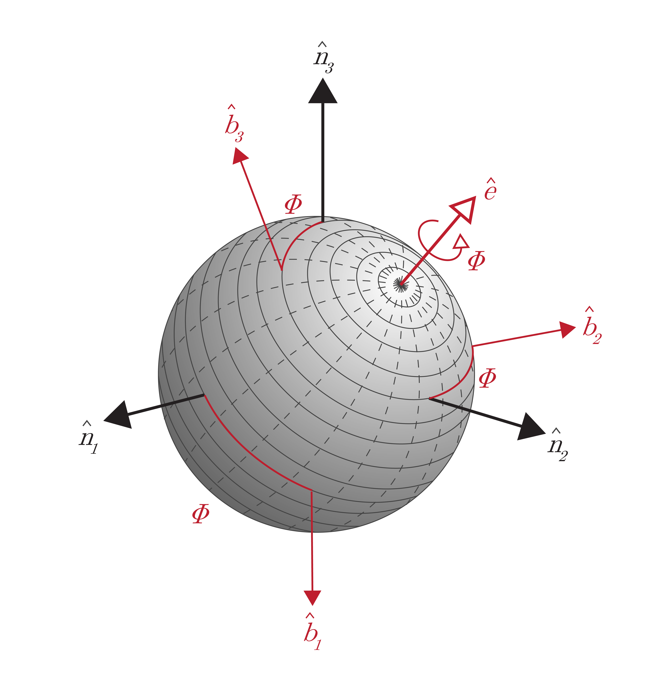
Teorema de rotación de Euler
Cualquier rotación en el espacio tridimensional puede ser representada como una única rotación alrededor de un eje principal.
Algebricamente, implica que cualquier matriz de rotación \(R\) satisface:
\[ \hat{e}= R \hat{e}. \]
Esto significa que \(\hat{e}\) es un vector propio de \(R\) con valor propio \(\lambda_e=1\).
Teorema de rotación de Euler
Podemos hacer uso del par (\(\hat{e},\theta\)) para introducir el siguiente concepto
Velocidad angular
La velocidad angular \(\vec{\omega}\) es un vector que apunta en la dirección del eje de rotación \(\hat{e}\) y cuya magnitud es igual a la tasa de variación del ángulo de rotación \(\theta\):
\[ \vec{\omega} = \dot{\theta} \hat{e}. \]
En este sentido, cualquier punto sobre el cuerpo rígido que gira al rededor del eje \(\hat{e}\) con velocidad angular \(\vec{\omega}\). Dicho punto experimenta una velocidad lineal \(\vec{v}\) dada por:
\[ \vec{v} = \vec{\omega} \times \vec{r}, \]
donde \(\vec{r}\) es el vector de posición del punto con respecto al origen del marco de referencia base.
Derivadas de vectores en rotación
Considere el vector \(\ls{i}\vec{u}(t)\) expresado en el marco de referencia inercial \(\ls{i}\mathcal{F}\), sujeto a un cuerpo rígido en movimiento. El cuerpo rígido es mostrado en dos instantes de tiempo diferentes. En el tiempo \(t\), el cuerpo rígido se encuentra en una orientación distinta a la del tiempo \(t+\Delta t\). Esto mismo aplica para el vector \(\ls{i}\vec{u}\), manteniendo su magnitud pero cambiando su dirección.
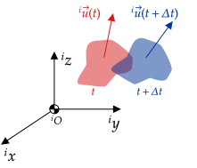
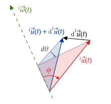
Estudiando el fenómeno cuando \(\Delta t \to 0\) podemos llegar a la Figura de la izquierda. El ángulo de rotación \(\text{d}\theta\) del vector \(\ls{i}\vec{u}\) se mide en un plano perpendicular al vector de velocidad angular \(\ls{i}\vec{\omega}\). La diferencia entre \(\ls{i}\vec{u}(t)\) y \(\ls{i}\vec{u}(t+\text{d}t)\) puede expresarse, utilizando la ecuación de longitud de arco, como:
\[ \text{d}(\ls{i}\vec{u}) = \left[\|\ls{i}\vec{u}(t)\|\sin(\phi)\text{d}\theta\right]\hat{n}, \]
donde \(\hat{n}\) es un vector unitario perpendicular a ambos, \(\ls{i}\vec{u}\) y \(\ls{i}\vec{\omega}\), y \(\phi\) es el ángulo entre \(\ls{i}\vec{u}\) y \(\ls{i}\vec{\omega}\). Por definición
\[ \text{d}\theta = \|\ls{i}\vec{\omega}\|\text{d}t. \]
Sustituyendo en la ecuación anterior se tiene:
\[ \text{d}(\ls{i}\vec{u}) = \left[\|\ls{i}\vec{u}(t)\|\sin(\phi)\|\ls{i}\vec{\omega}\|\text{d}t\right]\hat{n}. \]
Dividiendo entre \(\text{d}t\) se obtiene
\[ \frac{\text{d}}{\text{d}t}(\ls{i}\vec{u}) = \left[\|\ls{i}\vec{\omega}\|\|\ls{i}\vec{u}(t)\|\sin(\phi)\right]\hat{n}. \]
Utilizando la definición de producto cruz, se puede reescribir la ecuación anterior como:
\[ \frac{\text{d}}{\text{d}t}(\ls{i}\vec{u}) = \ls{i}\vec{\omega} \times \ls{i}\vec{u}. \tag{24}\]
Derivada de una matriz de rotación
Considere un marco de referencia móvil \(\ls{b}\mathcal{F}\) sujeto al cuerpo rígido que gira con respecto a un marco inercial \(\ls{h}\mathcal{F}\) con una velocidad angular \(\ls{h}\vec{\omega}\). La orientación del marco móvil con respecto al inercial está dada por la matriz de rotación \(\ls{h}R_b\). La matriz de rotación está compuesta por tres vectores unitarios ortonormales que definen las direcciones de los ejes del marco móvil expresados en el marco inercial:
\[ \ls{h}R_b = \begin{bmatrix} \ls{h}\hat{x}_b & \ls{h}\hat{y}_b & \ls{h}\hat{z}_b \end{bmatrix}. \]
Dada la Ecuación 24, la derivada de cada uno de los vectores unitarios que componen la matriz de rotación está dada por:
\[ \frac{\text{d}}{\text{d}t}(\ls{h}\hat{x}_b) = \ls{h}\vec{\omega} \times \ls{h}\hat{x}_b, \quad \frac{\text{d}}{\text{d}t}(\ls{h}\hat{y}_b) = \ls{h}\vec{\omega} \times \ls{h}\hat{y}_b, \quad \frac{\text{d}}{\text{d}t}(\ls{h}\hat{z}_b) = \ls{h}\vec{\omega} \times \ls{h}\hat{z}_b. \tag{25}\]
Derivada de una matriz de rotación
La derivada de la matriz de rotación está dada por:
\[ \frac{\text{d}}{\text{d}t}(\ls{h}R_b) = \begin{bmatrix} \frac{\text{d}}{\text{d}t}(\ls{h}\hat{x}_b) & \frac{\text{d}}{\text{d}t}(\ls{h}\hat{y}_b) & \frac{\text{d}}{\text{d}t}(\ls{h}\hat{z}_b) \end{bmatrix}. \]
Sustituyendo la Ecuación 25 en la ecuación anterior se tiene:
\[ \frac{\text{d}}{\text{d}t}(\ls{h}R_b) = \begin{bmatrix} \ls{h}\vec{\omega} \times \ls{h}\hat{x}_b & \ls{h}\vec{\omega} \times \ls{h}\hat{y}_b & \ls{h}\vec{\omega} \times \ls{h}\hat{z}_b \end{bmatrix}. \]
Utilizando la expresión matricial del producto cruz, la ecuación anterior puede reescribirse como:
\[ \begin{split} \frac{\text{d}}{\text{d}t}(\ls{h}R_b) & = \begin{bmatrix} S(\ls{h}\vec{\omega})\ls{h}\hat{x}_b & S(\ls{h}\vec{\omega})\ls{h}\hat{y}_b & S(\ls{h}\vec{\omega})\ls{h}\hat{z}_b \end{bmatrix} \\ & =S(\ls{h}\vec{\omega}) \begin{bmatrix} \ls{h}\hat{x}_b & \ls{h}\hat{y}_b & \ls{h}\hat{z}_b \end{bmatrix} \\ & = S(\ls{h}\vec{\omega}) \ls{h}R_b, \end{split} \]
Derivada de una matriz de rotación
Para complementar la notación, es conveniente indicar mayor información sobre la velocidad angular. En este caso, la velocidad angular \(\ls{h}\vec{\omega}_{h,b}\) es la velocidad angular del marco móvil \(\ls{b}\mathcal{F}\) con respecto al marco inercial \(\ls{h}\mathcal{F}\), expresada en el marco inercial \(\ls{h}\mathcal{F}\). Por lo tanto, la derivada de la matriz de rotación queda:
\[ \frac{\text{d}}{\text{d}t}(\ls{h}R_b) = S(\ls{h}\vec{\omega}_{h,b}) \ls{h}R_b. \]
Por conveniencia para el futuro, es común expresar la velocidad angular en el marco móvil \(\ls{b}\mathcal{F}\). La relación entre ambas velocidades angulares está dada por:
\[ \ls{h}\vec{\omega}_{h,b} = \ls{h}R_b \ls{b}\vec{\omega}_{h,b}. \]
Sustituyendo en la Ecuación 25 se tiene:
\[ \frac{\text{d}}{\text{d}t}(\ls{h}R_b) = S(\ls{h}R_b \ls{b}\vec{\omega}_{h,b}) \ls{h}R_b. \]
Utilizando la propiedad del producto cruz \(S(AB) = A S(B) A^T\), se puede reescribir la ecuación anterior como:
\[ \frac{\text{d}}{\text{d}t}(\ls{h}R_b) = \ls{h}R_b \: S(\ls{b}\vec{\omega}_{h,b}). \]
Transponiendo ambos lados de la ecuación se obtiene:
\[ \frac{\text{d}}{\text{d}t}(\ls{b}R_h) = -S(\ls{b}\vec{\omega}_{h,b}) \ls{b}R_h. \tag{26}\]
A la Ecuación 26 se le conoce como modelo cinemático rotacional de un cuerpo rígido.
- La cinemática se refiere al estudio del movimiento de los cuerpos sin considerar las fuerzas que lo causan.
- Las soluciones de la ecuación diferencial Ecuación 26 proporcionan la orientación del cuerpo rígido en función del tiempo. Es decir, obtenemos \(\ls{b}R_h(t)\) para cada instante de tiempo \(t\).
- Sin embargo, la representación de la ecuación Ecuación 26 no es única, ya que existen múltiples formas de describir la orientación de un cuerpo rígido en el espacio tridimensional.
Modelo cinemático
Ángulos de Euler
▸▸ Ángulos de Euler
- Hasta ahora, hemos utilizado matrices de rotación para describir la orientación de un cuerpo rígido en el espacio tridimensional. Sin embargo, existen otras formas de representar la orientación, cada una con sus propias ventajas y desventajas. La primera, y más intuitiva, es mediante el uso de ángulos de Euler.
- La idea detrás de los ángulos de Euler es describir la orientación de un cuerpo rígido mediante una secuencia de tres rotaciones alrededor de ejes específicos. Estas rotaciones se realizan en un orden particular, y cada una de ellas se define mediante un ángulo. Los tres ángulos resultantes se denominan ángulos de Euler.
- Como estudiamos anteriormente, existen 12 secuencias de rotaciones elementales que para representar cualquier rotación en el espacio tridimensional. O dicho en otras palabras, existen 12 conjuntos diferentes de ángulos de Euler.
Sin embargo, en la práctica solo se utilizan dos de estas secuencias debido a su popularidad y aplicabilidad en diversas áreas. Estas secuencias son:
Convención de Euler (ZXZ):
- Rotación inicial \(\phi\) alrededor del eje \(\ls{h}z\).
- Rotación \(\theta\) alrededor del nuevo eje \(\ls{1}x\).
- Rotación final \(\psi\) alrededor del nuevo eje \(\ls{2}z\).
\[ \ls{b}R_h=R_z(\psi)R_x(\theta)R_z(\phi). \]
Ángulos de Tait-Bryan (ZYX): También llamados Roll-Pitch-Yaw en aeronáutica:
- Rotación \(\phi\) (roll) alrededor del eje \(\ls{h}x\).
- Rotación \(\theta\) (pitch) alrededor del nuevo eje \(\ls{1}y\).
- Rotación \(\psi\) (yaw) alrededor del nuevo eje \(\ls{2}z\).
Común en robótica, aeronáutica y sistemas de navegación.
\[ \ls{b}R_h=R_z(\psi)R_y(\theta)R_x(\phi). \tag{27}\]
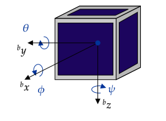
Debido a la aplicación que estamos estudiando, pondremos especial atención a los ángulos de Tait-Bryan a lo largo del curso. Partiendo de la Ecuación 27, se obtiene:
\[ \ls{b}\dot{R}_h=\dot{R}_z(\psi)R_y(\theta)R_x(\phi)+R_z(\psi)\dot{R}_y(\theta)R_x(\phi)+R_z(\psi)R_y(\theta)\dot{R}_x(\phi). \]
Utilizando el modelo cinemático de cada rotación elemental sabemos que
\[ \begin{aligned} \dot{R}_z(\psi) & =-S(\ls{b}\omega_{2,b})R_z(\psi) & & \dot{R}_y(\theta)=-S(\ls{2}\omega_{1,2})R_y(\theta) & & \dot{R}_x(\phi)=-S(\ls{1}\omega_{h,1})R_x(\phi). \\ \ls{b}\omega_{2,b} & =\ls{b}z\cdot\dot{\psi} & & \ls{2}\omega_{1,2}=\ls{2}y\cdot\dot{\theta} & & \ls{1}\omega_{h,1}=\ls{1}x\cdot\dot{\phi}. \end{aligned} \]
Sustituyendo obtenemos:
\[ \begin{split} \ls{b}\dot{R}_h & =-S(\ls{b}z\cdot\dot{\psi})R_z(\psi)R_y(\theta)R_x(\phi)-R_z(\psi)S(\ls{2}y\cdot\dot{\theta})R_y(\theta)R_x(\phi)-R_z(\psi)R_y(\theta)S(\ls{1}x\cdot\dot{\phi})R_x(\phi) \\ \end{split} \]
Multiplicando por \(\ls{h}R_b\) obtenemos:
\[ \begin{split} \ls{b}\dot{R}_h \ls{h}R_b & =-S(\ls{b}z\cdot\dot{\psi})-R_z(\psi)S(\ls{2}y\cdot\dot{\theta})R_z^\top(\psi)-R_z(\psi)R_y(\theta)S(\ls{h}x\cdot\dot{\phi})R_y^{\top}(\theta)R_z^\top(\psi) \\ & =-S(\ls{b}z\cdot\dot{\psi})-S(R_z(\psi)\ls{2}y\cdot\dot{\theta})-S(R_z(\psi)R_y(\theta)\ls{1}x\cdot\dot{\phi}) \\ \end{split} \tag{28}\]
El lado derecho de la anterior ecuación puede ser reescrito mediante la Ecuación 25 como:
\[ \begin{split} \ls{b}\dot{R}_h \ls{h}R_b & =-S(\ls{b}\omega_{h,b}) \end{split} \]
Por otro lado, del lado derecho tenemos
\[ \begin{split} R_z(\psi)\ls{2}y=\begin{bmatrix} \cos(\psi) & \sin(\psi) & 0 \\ -\sin(\psi) & \cos(\psi) & 0 \\ 0 & 0 & 1 \\ \end{bmatrix}\begin{bmatrix} 0 \\1\\0 \end{bmatrix}, \\ =\begin{bmatrix} \sin(\psi) \\ \cos(\psi) \\ 0 \end{bmatrix}. \\ R_z(\psi)R_y(\theta)\ls{1}x=\begin{bmatrix} \cos(\psi) & \sin(\psi) & 0 \\ -\sin(\psi) & \cos(\psi) & 0 \\ 0 & 0 & 1 \\ \end{bmatrix}\begin{bmatrix} \cos(\theta) & 0 & -\sin(\theta) \\ 0 & 1 & 0 \\ \sin(\theta) & 0 & \cos(\theta) \end{bmatrix}\begin{bmatrix} 1 \\0\\0 \end{bmatrix}, \\ =\begin{bmatrix} \cos(\psi)\cos(\theta) & \sin(\psi) & -\cos(\psi)\sin(\theta) \\ -\sin(\psi)\cos(\theta) & \cos(\psi) & \sin(\psi)\sin(\theta) \\ \sin(\theta) & 0 & \cos(\theta) \end{bmatrix}\begin{bmatrix} 1 \\0\\0 \end{bmatrix}, \\ =\begin{bmatrix} \cos(\psi)\cos(\theta) \\ -\sin(\psi)\cos(\theta) \\ \sin(\theta) \end{bmatrix} \\ \end{split} \]
Sustituyendo las anteriores ecuaciones en la Ecuación 28 obtenemos:
\[ \begin{split} S(\ls{b}\omega_{h,b}) & =S\left(\begin{bmatrix} 0 \\0\\1 \end{bmatrix}\right)\cdot \dot{\psi}-S\left(\begin{bmatrix} \sin(\psi) \\ \cos(\psi) \\ 0 \end{bmatrix}\right)\cdot \dot{\theta}-S\left(\begin{bmatrix} \cos(\psi)\cos(\theta) \\ -\sin(\psi)\cos(\theta) \\ \sin(\theta) \end{bmatrix}\right)\cdot \dot{\phi}, \\ \end{split} \]
lo cual implica que
\[ \begin{split} \ls{b}\omega_{h,b} & =\begin{bmatrix} \cos(\psi)\cos(\theta) & \sin(\psi) & 0 \\ -\sin(\psi)\cos(\theta) & \cos(\psi) & 0 \\ \sin(\theta) & 0 & 1 \end{bmatrix}\begin{bmatrix} \dot{\phi} \\ \dot{\theta} \\ \dot{\psi} \end{bmatrix}. \\ \end{split} \]
Multiplicando por su inversa obtenemos
\[ \begin{bmatrix} \dot{\phi} \\ \dot{\theta} \\ \dot{\psi} \end{bmatrix}= \begin{bmatrix} \cos(\psi)\sec(\theta) & -\sin(\psi)\sec(\theta) & 0 \\ \sin(\psi) & \cos(\psi) & 0 \\ -\cos(\psi)\tan(\theta) & \sin(\psi)\tan(\theta) & 1 \end{bmatrix}\ls{b}\omega_{h,b}. \tag{29}\]
La Ecuación 29 es el modelo cinemático de un cuerpo rígido utilizando los ángulos de Tait-Bryan. ¿Qué pasa cuando \(\theta=\frac{\pi}{2}\)?
Gimbal-lock

- El bloqueo de cardán (gimbal-lock) es una condición de singularidad en la Ecuación 29, que se produce cuando \(\theta=\frac{\pi}{2}\).
- Físicamente, esto significa que la rotación en el eje \(\ls{2}z\) es igual a la rotación en el eje \(\ls{h}x\).
- Esto provoca que sea imposible aplicar una rotación independiente alrededor de los tres ejes, reduciendo los grados de libertad del sistema de rotación de tres a dos.
- Para evitar el gimbal-lock, se utilizan otras representaciones de orientación, como las matrices de rotación.
- Esto se puede ver con mayor claridad al momento de buscar la trasformación de una matriz de rotación a su equivalente en ángulos de Tait-Bryan.
Si desarrollamos la Ecuación 29 obtenemos:
\[ \begin{split} \ls{b}R_{h} & = \begin{bmatrix} \cos\psi\,\cos\theta & \sin\phi\,\sin\theta\,\cos\psi + \cos\phi\,\sin\psi & \sin\phi\,\sin\psi - \cos\phi\,\sin\theta\,\cos\psi \\[4pt] -\sin\psi\,\cos\theta & -\sin\phi\,\sin\psi\,\sin\theta + \cos\phi\,\cos\psi & \sin\phi\,\cos\psi + \cos\phi\,\sin\psi\,\sin\theta \\[4pt] \sin\theta & -\sin\phi\,\cos\theta & \cos\phi\,\cos\theta \end{bmatrix} \\ & =\begin{bmatrix} r_{11} & r_{12} & r_{13} \\ r_{21} & r_{22} & r_{23} \\ r_{31} & r_{32} & r_{33} \end{bmatrix} \end{split} \]
Para obtener \(\theta\) consideramos
\[ \begin{split} \sin(\theta) & = r_{31} \\ \cos(\theta) & = \pm\sqrt{1-r^{2}_{31}} \\ \tan(\theta) & = \frac{r_{31}}{\pm\sqrt{1-r^{2}_{31}}} \\ \theta & = \text{atan2}(r_{31},\pm\sqrt{1-r^{2}_{31}}) \end{split} \]
Dependiendo el signo de la raíz cuadrada obtenemos dos soluciones para el angulo \(\theta\).
En el caso de que \(\cos(\theta)>0\):
\[ \psi=\text{atan2}(-r_{21},r_{11}),\qquad \phi=\text{atan2}(-r_{32},r_{33}). \]
En el caso de que \(\cos(\theta)<0\):
\[ \psi=\text{atan2}(r_{21},-r_{11}),\qquad \phi=\text{atan2}(r_{32},-r_{33}). \]
Si \(\theta=\pi/2\), entonces
\[ \ls{b}R_{h}=\begin{bmatrix} 0 & \sin(\phi+\psi) & -\cos(\phi+\psi) \\ 0 & \cos(\phi+\psi) & \sin(\phi+\psi) \\ 1 & 0 & 0 \end{bmatrix} \qquad \phi+\psi=\text{atan2}(r_{12},r_{22}). \]
Si \(\theta=-\pi/2\), entonces
\[ \ls{b}R_{h}=\begin{bmatrix} 0 & -\sin(\phi-\psi) & \cos(\phi-\psi) \\ 0 & \cos(\phi-\psi) & \sin(\phi-\psi) \\ -1 & 0 & 0 \end{bmatrix} \qquad \phi-\psi=\text{atan2}(-r_{12},r_{22}). \]
En estos dos últimos casos se obtienen conjuntos infinitos de soluciones para \(\phi\) y \(\psi\). Esto es debido a la singularidad generada por el gimbal-lock. Por todos los problemas al implementar este algoritmos, se suele preferir utilizar otra parametrización, como lo son los …
Modelo cinemático
Cuaterniones
▸▸ Cuaterniones
Considere el número complejo
\[ z=a+\mathbf{i}b \]
Podemos interpretar a este número como un vector en el plano complejo. La norma y el ángulo de \(z\) con respecto al eje real puede ser obtenidos de la siguiente manera:
\[ \begin{split} |z| & = \sqrt{a^{2}+b^{2}} \\ \theta & = \text{atan2}(b,a). \end{split} \]
Si consideramos que \(|z|=1\), entonces
\[ z=\cos(\theta)+\mathbf{i}\sin(\theta). \]
Otra forma de representar este numero complejo es utilizando la notación exponencial:
\[ z=e^{\mathbf{i}\theta}. \]
Observe que la notación exponencial contiene la misma información que una matriz de rotación en dos dimensiones, i.e.,
\[ \ls{b}R_{h}=\begin{bmatrix} \cos(\theta) & -\sin(\theta) \\ \sin(\theta) & \cos(\theta) \end{bmatrix} \qquad \Leftrightarrow \qquad e^{\mathbf{i}\theta}=\cos(\theta)+\mathbf{i}\sin(\theta). \]
Por lo tanto, un número complejo es una forma de parametrizar una rotación en dos dimensiones.
- De hecho, la notación exponencial satisface la ley de composición de rotaciones: e{_{1}}e{i{2}}=e^{({1}+_{2})}.
- Por lógica, es común pensar que para llevar esta idea para representar rotaciones en tres dimensiones \((z=a+\mathbf{i}b+\mathbf{j}c)\), hace falta agregar una dimensión al número complejo. Sin embargo, debido a que la base axiomática de los complejos no se mantenían en tres dimensiones, este problema no era tan sencillo.
- Sir William Rowan Hamilton (1805–1865) descubrió que no solamente tenía que agregarse una dimensión al número complejo para mantener la base axiomática de los complejos, sino que era necesario agregar una cuarta dimensión (\(z=a+\mathbf{i}b+\mathbf{j}c+\mathbf{k}d\)).
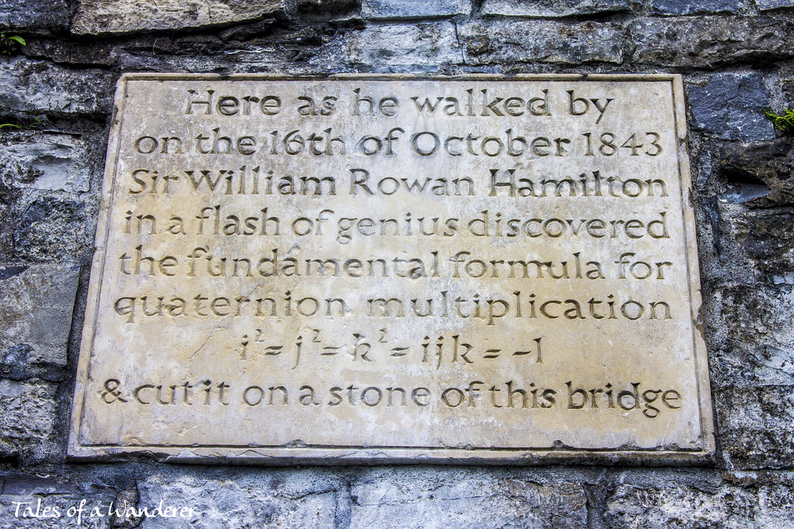
- A este tipo de números complejos se les llama cuaterniones, y satisfacen el siguiente conjunto de axiomas:
\[ \begin{split} \mathbf{i}^2 & =\mathbf{j}^2=\mathbf{k}^2=\mathbf{i}\mathbf{j}\mathbf{k}=-1 \\ \mathbf{i}\mathbf{j} & =\mathbf{k} \\ \mathbf{j}\mathbf{k} & =\mathbf{i} \\ \mathbf{k}\mathbf{i} & =\mathbf{j} \\ \mathbf{j}\mathbf{i} & =-\mathbf{k} \\ \mathbf{k}\mathbf{j} & =-\mathbf{i} \\ \mathbf{i}\mathbf{k} & =-\mathbf{j} \end{split} \tag{30}\]
- Bajo esta definición la base axiomática de los complejos se mantiene en cuatro dimensiones en su mayor parte. Sin embargo, el precio a pagar es la conmutatividad en su multiplicación (e.g, \(\mathbf{ij}\neq \mathbf{ji}\)).
El espacio de los cuaterniones se define como
\[ \mathbb{H}=\{\mathbf{q}=q_0+\mathbf{i}q_1+\mathbf{j}q_2+\mathbf{k}q_3 \mid q_0,q_1,q_2,q_3\in\mathbb{R} \mid \mathbf{i},\mathbf{j},\mathbf{k} \text{ satisfacen la base axiomática}\} \]
donde - \(q_0\) es la parte real. - \(\mathbf{i}q_1+\mathbf{j}q_2+\mathbf{k}q_3\) es la parte vectorial.
Operaciones básicas
Considere dos cuaterniones \(\mathbf{q}=q_0+\mathbf{i}q_1+\mathbf{j}q_2+\mathbf{k}q_3\) y \(\mathbf{p}=p_0+\mathbf{i}p_1+\mathbf{j}p_2+\mathbf{k}p_3\).
- Aditividad \(\mathbf{q}+\mathbf{p}=(q_0+p_0)+\mathbf{i}(q_1+p_1)+\mathbf{j}(q_2+p_2)+\mathbf{k}(q_3+p_3)\).
- Norma \(\|\mathbf{q}\|=\sqrt{q_0^2+q_1^2+q_2^2+q_3^2}\).
- Conjugado \(\mathbf{q}^{\star}=q_0-\mathbf{i}q_1-\mathbf{j}q_2-\mathbf{k}q_3\).
- Producto \(\mathbf{q} \mathbf{p} = (q_0+\mathbf{i}q_1+\mathbf{j}q_2+\mathbf{k}q_3)(p_0+\mathbf{i}p_1+\mathbf{j}p_2+\mathbf{k}p_3)= (q_0p_0-q_1p_1-q_2p_2-q_3p_3)+\mathbf{i}(q_0p_1+q_1p_0+q_2p_3-q_3p_2)+\mathbf{j}(q_0p_2-q_1p_3+q_2p_0+q_3p_1)+\mathbf{k}(q_0p_3+q_1p_2-q_2p_1+q_3p_0)\).
- Inverso \(\mathbf{q}^{-1}=\mathbf{q}^{\star}/\|\mathbf{q}\|^2\), \(qq^{-1}=q^{-1}q=1\).
Una forma más práctica de representar este tipo de números es retomando la idea de que un número complejo \(z\in \mathbb{C}\) puede representarse como un vector en el plano, i.e.
\[ \mathbb{C} \cong \mathbb{R}^{2} \]
El caso de los cuaterniones
\[ \mathbb{H} \cong \mathbb{R}^{4} \]
En dicho caso, podemos su forma congruente en \(\mathbb{R}^4\) tiene como estructura
\[ \begin{split} \mathbf{q} & =\begin{bmatrix} q_0 \\q_1\\q_2\\q_3 \end{bmatrix}, \\ & =\begin{bmatrix} q_0 \\\vec{q} \end{bmatrix}, \\ \end{split} \]
donde \(\vec{q}=[q_1 \quad q_2 \quad q_3]^\top\) es la parte vectorial del cuaternión. En este sentido, el conjunto \(\{\mathbf{i,j,k}\}\) puede interpretarse como una base \(\{\hat{i},\hat{j},\hat{k}\}\) del espacio vectorial que contiene a todo \(\vec{q}\) posible.
Bajo esta notación, las operaciones básicas de los cuaterniones pueden definirse como
- Aditividad: \(\mathbf{q}+\mathbf{p}=[q_0+p_0, \: (\vec{q}+\vec{p})^\top]^\top\).
- Norma: \(\|\mathbf{q}\|=\sqrt{q_0^2+\|\vec{q}\|^2}\).
- Conjugado: \(\mathbf{q}^{\star}=[q_0, \; -\vec{q}^{\top}]^{\top}\).
- Inverso: \(\mathbf{q}^{-1}=\mathbf{q}^{\star}/\|\mathbf{q}\|^2\), \(q \otimes q^{-1}=q^{-1}\otimes q=1\).
El producto de cuaterniones puede interpretarse mediante el producto matricial
\[ \begin{split} \mathbf{q}\otimes \mathbf{p} & = \begin{bmatrix} q_0 & -q_1 & -q_2 & -q_3 \\ q_1 & q_0 & -q_3 & q_2 \\ q_2 & q_3 & q_0 & -q_1 \\ q_3 & -q_2 & q_1 & q_0 \end{bmatrix}\begin{bmatrix} p_0 \\p_1\\p_2\\p_3 \end{bmatrix}, \\ & = \begin{bmatrix} q_0p_0-\vec{q}^\top \vec{p} \\ p_0\vec{q}+(q_0 \mathbb{I}+S(\vec{q}))\vec{p} \\ \end{bmatrix}, \\ & =\begin{bmatrix} q_0 & -\vec{q}^{\top} \\ \vec{q} & (q_0 \mathbb{I}+S(\vec{q})) \end{bmatrix} \mathbf{p} \end{split} \]
Ahora, ¿Cómo usamos esto para representar rotaciones?
Para introducir el problema, considere una hipersuperficie en los números complejos dada por
\[ \mathbb{C}_1 = \{\, z \in \mathbb{C} \mid \|z\| = 1 \,\}. \]
El conjunto \(\mathbb{C}_1\) es una variedad de dimensión 1 (geométricamente, un círculo en el plano complejo). Todo número complejo \(z \in \mathbb{C}_1\) puede expresarse mediante la notación exponencial como
\[ z = e^{\mathbf{i}\theta}, \qquad \theta \in \mathbb{R}. \]
Considere ahora el caso de rotación en dos dimensiones estudiado al introducir las matrices de rotación (Ecuaciones Ecuación 1 y Ecuación 2). En aquel caso se tenía:
\[ \ls{1}\vec{p} = \begin{bmatrix} \ls{1}p_x \\ \ls{1}p_y \end{bmatrix} = \begin{bmatrix} r\cos(\theta_2) \\ r\sin(\theta_2) \end{bmatrix}, \qquad \ls{2}\vec{p} = \begin{bmatrix} r\cos(\theta_2 - \theta_1) \\ r\sin(\theta_2 - \theta_1) \end{bmatrix}. \]
Su forma congruente en el plano complejo es:
\[ \ls{1}\vec{p} = r e^{\mathbf{i}\theta_2}, \qquad \ls{2}\vec{p} = r e^{\mathbf{i}(\theta_2 - \theta_1)} = r e^{\mathbf{i}\theta_2} e^{-\mathbf{i}\theta_1} = e^{-\mathbf{i}\theta_1}\ls{1}\vec{p}. \]
Por lo tanto, el factor \(e^{-\mathbf{i}\theta_1}\) es congruente con una matriz de rotación \(R(\theta_1) \in SO(2)\).
De forma análoga, considere ahora la hipersuperficie en los cuaterniones:
\[ \mathbb{H}_1 = \{\, q \in \mathbb{H} \mid \|q\| = 1 \,\}. \]
El conjunto \(\mathbb{H}_1\) es una variedad de dimensión 3 (una 3-esfera embebida en \(\mathbb{R}^4\)). A los elementos que conforman \(\mathbb{H}_1\) se les llama cuaterniones unitarios. La idea para representar rotaciones tridimensionales consiste en parametrizar todo cuaternión unitario \(q \in \mathbb{H}_1\) mediante el Teorema de Rotación de Euler:
\[ q = \begin{bmatrix} q_0 \\ \vec{q} \end{bmatrix} = \begin{bmatrix} \cos(-\theta/2) \\ \sin(-\theta/2)\,\vec{u} \end{bmatrix}, \]
donde \(\vec{u}\) es el eje unitario de rotación y \(\theta\) el ángulo de rotación definido en dicho teorema.
Una consideración importante en \(\mathbb{H}_1\) es que \(\mathbf{q}^{\star}=\mathbf{q}^{-1}\).
No obstante, debido a la perdida en la conmutatividad de los cuaterniones, no podemos aplicar la rotación a un vector \(\vec{p} \in \mathbb{R}^3\) de la misma forma que lo hicimos con las matrices de rotación en el plano complejo.
Rotación de vectores con cuaterniones
Para ello, buscamos una expresión equivalente a
\[ \ls{b}\vec{p} = \ls{b}R_h \ls{h}\vec{p}, \]
donde \(\vec{p}\in \mathbb{R}^3\) y \(\ls{b} R_h \in SO(3)\). Considere la siguiente operación
\[ \ls{b}\mathbf{p}=\ls{b}\mathbf{q}_h \otimes \ls{h}\mathbf{p} \otimes \ls{b}\mathbf{q}_h^{\star} \tag{31}\]
donde \(\ls{b}\mathbf{q}_h \in \mathbb{H}_1\) y \(\ls{b}\mathbf{p}, \ls{h}\mathbf{p} \in \mathbb{H}\) son cuaterniones puros construidos de la siguiente manera:
\[ \ls{b}\mathbf{p}= \begin{bmatrix} 0 \\ \ls{b}\vec{p} \end{bmatrix}, \qquad \ls{h}\mathbf{p}= \begin{bmatrix} 0 \\ \ls{h}\vec{p} \end{bmatrix}. \]
Sustituyendo en la Ecuación 31 se tiene:
\[ \ls{b}\mathbf{p}=\begin{bmatrix} 0 & 0 \\ 0 & (q_0^2-\vec{q}^\top \vec{q})\mathbb{I}+2q_0S(\vec{q})+2\vec{q}\vec{q}^\top \\ \end{bmatrix}\ls{h}\mathbf{p} \]
\[ \Rightarrow \; \ls{b}R_h=(q_0^2-\vec{q}^\top \vec{q})\mathbb{I}+2q_0S(\vec{q})+2\vec{q}\vec{q}^\top \tag{32}\]
Otras operaciones equivalentes
Otra propiedad de las matrices de rotación que es importante estudiar es la composición de estas, i.e.
\[ \ls{n}R_0=\Pi_{i=1}^a \ls{i}R_{i-1}. \]
En \(\mathbb{H}_1\), esta propiedad se puede expresar de la siguiente manera:
\[ \ls{n}\mathbf{q}_0=\bigotimes_{i=1}^a \ls{i}\mathbf{q}_{i-1}. \]
Por ejemplo, para la rotación del marco de referencia \(\ls{i}\mathcal{F}\) al marco inercial \(\ls{b}\mathcal{F}\) se tiene:
\[ \ls{b}\mathbf{q}_i=\ls{b}\mathbf{q}_{h} \otimes \ls{h}\mathbf{q}_{r} \otimes \ls{r}\mathbf{q}_{p} \otimes \ls{p}\mathbf{q}_{i}. \]
Por otro lado, la operación equivalente a la transpuesta de una matriz de rotación \(\ls{b}R_h^\top=\ls{h}R_b\) se puede expresar de la siguiente manera:
\[ \begin{split} \ls{h}\mathbf{q}_b & =\ls{b}\mathbf{q}_h^{-1} \\ & =\ls{b}\mathbf{q}_h^{\star} \end{split} \]
Matriz de rotación a cuaternión
Desarrollando la Ecuación 32 se tiene:
\[ \begin{split} \ls{b}R_h & = \begin{bmatrix} 2q_0^2 - 1 + 2q_1^2 & 2q_1q_2 - 2q_0q_3 & 2q_1q_3 + 2q_0q_2 \\[4pt] 2q_1q_2 + 2q_0q_3 & 2q_0^2 - 1 + 2q_2^2 & 2q_2q_3 - 2q_0q_1 \\[4pt] 2q_1q_3 - 2q_0q_2 & 2q_2q_3 + 2q_0q_1 & 2q_0^2 - 1 + 2q_3^2 \end{bmatrix} \\ & = \begin{bmatrix} r_{11} & r_{12} & r_{13} \\ r_{21} & r_{22} & r_{23} \\ r_{31} & r_{32} & r_{33} \end{bmatrix} \end{split} \]
Para transformar una matriz de rotación \(\ls{b}R_h\) a cuaternión considere los siguientes casos:
Caso 1: \(t = \mathrm{tr}(\ls{b}R_h) = r_{11} + r_{22} + r_{33} > 0\):
\[ \begin{aligned} q_0 & = \tfrac{1}{2}\sqrt{1 + t}, \\ q_1 & = \dfrac{r_{32} - r_{23}}{4q_0}, \\ q_2 & = \dfrac{r_{13} - r_{31}}{4q_0}, \\ q_3 & = \dfrac{r_{21} - r_{12}}{4q_0}. \end{aligned} \]
Caso 2: \(t \le 0 \text{ y } r_{11} \text{ es el mayor elemento diagonal}:\)
\[ \begin{aligned} q_1 & = \tfrac{1}{2}\sqrt{1 + r_{11} - r_{22} - r_{33}}, \\ q_0 & = \dfrac{r_{32} - r_{23}}{4q_1}, \\ q_2 & = \dfrac{r_{12} + r_{21}}{4q_1}, \\ q_3 & = \dfrac{r_{13} + r_{31}}{4q_1}. \end{aligned} \]
Caso 3: \(t \le 0 \text{ y } r_{22} \text{ es el mayor elemento diagonal}:\)
\[ \begin{aligned} q_2 & = \tfrac{1}{2}\sqrt{1 - r_{11} + r_{22} - r_{33}}, \\ q_0 & = \dfrac{r_{13} - r_{31}}{4q_2}, \\ q_1 & = \dfrac{r_{12} + r_{21}}{4q_2}, \\ q_3 & = \dfrac{r_{23} + r_{32}}{4q_2}. \end{aligned} \]
Caso 4: \(t \le 0 \text{ y } r_{33} \text{ es el mayor elemento diagonal}:\)
\[ \begin{aligned} q_3 & = \tfrac{1}{2}\sqrt{1 - r_{11} - r_{22} + r_{33}}, \\ q_0 & = \dfrac{r_{21} - r_{12}}{4q_3}, \\ q_1 & = \dfrac{r_{13} + r_{31}}{4q_3}, \\ q_2 & = \dfrac{r_{23} + r_{32}}{4q_3}. \end{aligned} \]
En principio, dada la congruencia entre \(SO(3)\) y \(\mathbb{H}_1\), el cuaternión obtenido por este algoritmo en un cuaternión unitario. Sin embargo, en la práctica, se recomienda normalizar debido a la perdida de precisión numérica que se pueda tener en el proceso.
\[ \mathbf{q} \rightarrow \frac{\mathbf{q}}{\|\mathbf{q}\|} \]
Este proceso no cambia la orientación, dado que \(\mathbf{q}\) y \(k\mathbf{q}, k>0\) representan la misma orientación.
Una propiedad importante que tienen los cuaterniones frente a la parametrización por ángulos de Euler es la siguiente. Reemplace \(\mathbf{q}\) por \(-\mathbf{q}\) en Ecuación 32:
\[ \begin{split} & \:((-q_0)^2-(-\vec{q})^\top(- \vec{q}))\mathbb{I}+2(-q_0)S((-\vec{q}))+2(-\vec{q})(-\vec{q})^\top, \\ & =(q_0^2-\vec{q}^\top \vec{q})\mathbb{I}+2q_0S(\vec{q})+2\vec{q}\vec{q}^\top, \\ & =\ls{b}R_h. \end{split} \]
- Esto quiere decir que tanto \(\mathbf{q}\) como \(-\mathbf{q}\) representan la misma orientación \(\ls{b}R_h\).
- En termino de espacios, se dice que \(\mathbb{H}_1\) tiene doble recubrimiento sobre \(SO(3)\), lo cual puede entenderse como una propiedad de redundancia.
- Esto, junto con la ausencia de singularidades, es la principal ventaja de la parametrización por cuaterniones frente a la parametrización por ángulos de Euler.
Modelo cinemático con cuaterniones
Sean \(\ls{b}\mathbf{q}_h(t)\) y \(\ls{b}\mathbf{q}_h(t+\Delta t)\) cuaterniones unitarios que representan la orientación de marco de referencia \(\ls{b}\mathcal{F}\) con respecto al marco inercial \(\ls{h}\mathcal{F}\) en el tiempo \(t\) y \(t+\Delta t\) respectivamente. Sea un cuaternión incremental
\[ \mathbf{p}=\begin{bmatrix} \cos(-\frac{\Delta \theta}{2}) \\ \sin(-\frac{\Delta \theta}{2})\hat{u} \end{bmatrix} \]
tal que
\[ \ls{b}\mathbf{q}_h(t+\Delta t)= \mathbf{p} \otimes \ls{b}\mathbf{q}_h(t). \tag{33}\]
Para \(\Delta \theta \rightarrow 0\), \(\mathbf{p}\) puede aproximarse a
\[ \mathbf{p}=\begin{bmatrix} 1 \\ -\frac{\Delta \theta}{2}\hat{u} \end{bmatrix} \]
Desarrollando Ecuación 33 obtenemos:
\[ \ls{b}\mathbf{q}_h(t+\Delta t)= \begin{bmatrix} q_0+\frac{\Delta \theta }{2}\hat{u}^{\top}\vec{q} \\ -q_0\frac{\Delta \theta }{2}\hat{u}+(\mathbb{I}-\frac{\Delta \theta }{2} S(\hat{u}))\vec{q} \end{bmatrix}. \]
Restando \(\ls{b}\mathbf{q}_h(t)\) y dividiendo sobre \(\Delta t\) obtenemos:
\[ \begin{split} \frac{\ls{b}\mathbf{q}_h(t+\Delta t)-\ls{b}\mathbf{q}_h(t)}{\Delta t}=\frac{1}{2}\begin{bmatrix} \frac{\Delta \theta }{\Delta t}\hat{u}^{\top}\vec{q} \\ -q_0\frac{\Delta \theta }{\Delta t}\hat{u}-\frac{\Delta \theta }{\Delta t} S(\hat{u})\vec{q} \end{bmatrix} \end{split} \]
Aplicando el límite \(\Delta t\rightarrow 0\) en ambos lados, se tiene:
\[ \begin{split} \lim_{\Delta t\rightarrow 0}\frac{\ls{b}\mathbf{q}_h(t+\Delta t)-\ls{b}\mathbf{q}_h(t)}{\Delta t}=\frac{1}{2}\begin{bmatrix} \ls{b}\omega_{h,b}^{\top}\vec{q} \\ -q_0\ls{b}\omega_{h,b}-S(\ls{b}\omega_{h,b})\vec{q} \end{bmatrix} \end{split} \]
Esto implica que
\[ \ls{b}\dot{\mathbf{q}}_h(t)=-\frac{1}{2}\ls{b}\boldsymbol{\omega}_{h,b} \otimes \ls{b}\mathbf{q}_h, \]
donde \(\ls{b}\boldsymbol{\omega}_{h,b}\) es un cuaternión puro con parte vectorial \(\ls{b}\vec{\omega}_{h,b}\).
La Ecuación 38 es el modelo cinemático de un cuerpo rígido utilizando cuaterniones.
Resumen
Describimos 4 forma de parametrizar la orientación de un cuerpo rígido en el espacio tridimensional:
- Matrices de rotación.
- Ángulos de Euler.
- Cuaterniones.
- Eje principal - ángulo.
Además, hemos descrito el modelo cinemático de un cuerpo rígido mediante dichas parametrizaciones.
- Matrices de rotación
\[ \ls{b}\dot{R}_h=-S(\ls{b}\vec{\omega}_{h,b}) \ls{h}R_b. \]
- Ángulos de Euler ( Convención de Tait-Bryan)
\[ \begin{bmatrix} \dot{\phi} \\ \dot{\theta} \\ \dot{\psi} \end{bmatrix}= \begin{bmatrix} \cos(\psi)\sec(\theta) & -\sin(\psi)\sec(\theta) & 0 \\ \sin(\psi) & \cos(\psi) & 0 \\ -\cos(\psi)\tan(\theta) & \sin(\psi)\tan(\theta) & 1 \end{bmatrix}\ls{b}\omega_{h,b}. \]
- Cuaterniones
\[ \ls{b}\dot{\mathbf{q}}_h(t)=-\frac{1}{2}\ls{b}\boldsymbol{\omega}_{h,b} \otimes \ls{b}\mathbf{q}_h, \]
| Aspecto | \(\mathbf{R}\in SO(3)\) | \(\bar{q}=[q_0\;\vec{q}^\top]^\top \in\mathbb{H}_1\) | \(\phi,\theta,\psi \in [-\pi,\pi]\) |
|---|---|---|---|
| Grados de libertad | 3 (9 elementos, 6 restricciones) | 3 (4 elementos, 1 restricción) | 3 o 2 si \(\theta = \pm90^\circ\). |
| Singularidades | Ninguna | Ninguna | Sí, a \(\theta = \pm90^\circ\) (gimbal lock). |
| Continuidad | Continua y global. | Continua y global (salvo \(q \leftrightarrow -q\)). | Discontinua: saltos en \(\pm\pi\). |
| Complejidad de composición | Multiplicación matricial (27 mult, 18 sum). | Producto cuaternión (16 mult, 12 sum). | No directa; requiere transformación. |
| Estabilidad numérica | Buena, pero requiere ortogonalización periódica. | Excelente; basta normalizar \(\|\bar{q}\|=1\). | Propensa a errores cerca de singularidades. |
| Conversión entre marcos | Directa | Directa | Indirecta |
| Ventajas principales | Forma lineal; ejes explícitos | Sin singularidades, estable, eficiente | Intuitivos para interpretación física |
| Desventajas principales | Redundante, costosa de mantener ortogonal | Difícil de interpretar | Singularidades |
| Recomendado para | Modelos geométricos y validación numérica. | Simulación, estimación y control en tiempo real. | Interfaz de usuario, telemetría en estación terrena. |
Ecuaciones de movimiento de cuerpo rígido
Modelo dinámico
▸ Modelo dinámico
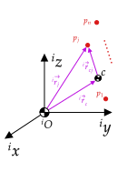
Para derivar el modelo dinámico rotacional de un cuerpo rígido necesitamos extender el concepto de momento angular. Para ello, considere el sistema de \(a\) partículas \(\{p_1,...,p_a\}\) de la Figura. Todas las partículas tienen masa \(m_j\) constante. El vector de posición del baricentro del sistema puede calcularse como:
\[ \ls{i}\vec{r}_c = \frac{1}{m}\sum_{j=1}^a m_j\ls{i}\vec{r}_j, \]
donde \(m_j\) es la masa de la partícula \(j\), \(m=\sum_{j=1}^a m_j\) es la masa total del sistema y \(\ls{i}\vec{r}_j\) es el vector de posición de dicha partícula.
\[ \ls{i}\vec{p} = \sum_{j=1}^a\ls{i}\vec{p}_j=\sum_{j=1}^a m_j\ls{i}\vec{v}_j, \tag{34}\]
donde \(\ls{i}\vec{v}_j\) es la velocidad de la partícula \(j\).
Derivando Ecuación 34 obtenemos:
\[ \ls{i}\dot{\vec{p}} = \sum_{j=1}^a m_j\ls{i}\dot{\vec{v}}_j = m\ls{i}\dot{\vec{v}}_c=\ls{i}f, \]
donde \(f\) es el vector de fuerza total externa que actúa sobre el sistema. De forma similar, el momento angular total del sistema puede calcularse como:
\[ \ls{i}\vec{h} = \sum_{j=1}^a \ls{i}\vec{r}_j\times\ls{i}\vec{p}_j=\sum_{j=1}^a m_j\ls{i}\vec{r}_j\times\ls{i}\vec{v}_j. \tag{35}\]
Del diagrama podemos deducir que
\[ \begin{split} \ls{i}\vec{r}_j & =\ls{i}\vec{r}_c+\ls{i}\vec{r}_{cj}, \\ \ls{i}\vec{v}_j & =\ls{i}\dot{\vec{r}}_j, \\ & =\ls{i}\dot{\vec{r}}_c+\ls{i}\dot{\vec{r}}_{cj}, \\ & =\ls{i}\vec{v}_c+\ls{i}\vec{v}_{cj}, \end{split} \]
Sustituyendo en la Ecuación 35 obtenemos:
\[ \ls{i}\vec{h} = \sum_{j=1}^a m_j(\ls{i}\vec{r}_c+\ls{i}\vec{r}_{cj}) \times (\ls{i}\vec{v}_c+\ls{i}\vec{v}_{cj}), \]
Desarrollando
\[ \begin{split} \ls{i}\vec{h} & = m \ls{i}\vec{r}_c\times\ls{i}\vec{v}_c \\ & + \sum_{j=1}^a \ls{i}\vec{r}_{c} \times (m_j\ls{i}\vec{v}_{cj}) \\ & + \sum_{j=1}^a (m_j\ls{i}\vec{r}_{cj}) \times \ls{i}\vec{v}_{c} \\ & + \sum_{j=1}^a m_j\ls{i}\vec{r}_{cj} \times \ls{i}\vec{v}_{cj}, \end{split} \]
Retomando la definición de baricentro
\[ \begin{split} \sum_{j=1}^a m_j \ls{i}\vec{r}_{cj} & =\sum_{j=1}^a m_j\ls{i}\vec{r}_j-m_j\ls{i}\vec{r}_c \\ & =\left(\sum_{j=1}^a m_j\ls{i}\vec{r}_j\right)-m\ls{i}\vec{r}_c \\ & = m\ls{i}\vec{r}_c-m\ls{i}\vec{r}_c=0. \end{split} \]
Por lo tanto
\[ \begin{split} \ls{i}\vec{h} & = m \ls{i}\vec{r}_c\times\ls{i}\vec{v}_c+ \sum_{j=1}^a m_j\ls{i}\vec{r}_{cj} \times \ls{i}\vec{v}_{cj}, \\ & = \ls{i}\vec{h}_0+\ls{i}\vec{h}_s \\ \end{split} \]
donde \(\ls{i}\vec{h}_0\) es el momento angular debido al movimiento traslacional del sistema y \(\ls{i}\vec{h}_s\) es el momento angular rotacional relativo a \(C\).
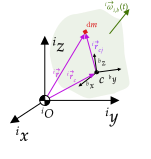
Ahora, considere el cuerpo rígido mostrado en la Figura. Este cuerpo puede ser considerado como un sistema de \(n\) partículas con masa \(\text{d}m_j\). En este caso, el baricentro \(C\) del sistema es el centro de masa del cuerpo y el origen del marco de referencia sujeto al cuerpo \(\ls{b}\mathcal{F}\). Bajo lo anterior, el momento angular \(\ls{i}\vec{h}_s\) puede expresarse como:
\[ \begin{split} \ls{i}\vec{h}_s & = \sum_{j=1}^a \ls{i}\vec{r}_{cj} \times (\text{d}m_j\ls{i}\vec{v}_{cj}), \\ & =\int_m \ls{i}\vec{r} \times \ls{i}\vec{v}\;\text{d}m \end{split} \]
donde \(\ls{i}\vec{r}\) es el vector de posición relativo de cada partícula y \(\ls{i}\vec{v}\) es la velocidad relativa de la partícula de masa \(\text{d}m\).
Del Teorema de Rotación de Euler sabemos que
\[ \begin{split} \ls{i}\vec{v} & = \ls{i}\vec{\omega}_{i,b} \times \ls{i}\vec{r}. \\ \end{split} \]
Por lo tanto
\[ \begin{split} \ls{i}\vec{h}_s & = \int_m \ls{i}\vec{r} \times \ls{i}\vec{\omega}_{i,b} \times \ls{i}\vec{r} \; \text{d}m \\ \end{split} \]
El producto cruz de tres vectores satisface la siguiente igualdad:
\[ \begin{split} \ls{i}\vec{a} \times \ls{i}\vec{b} \times \ls{i}\vec{c} & = (\vec{a}^\top \vec{c} )\vec{b} -\vec{c}(a^\top \vec{b}). \\ \end{split} \]
Entonces
\[ \begin{split} \ls{i}\vec{h}_s & = \int_m \left[ \|\ls{i}r\|^2 \ls{i}\vec{\omega}_{i,b} - \ls{i}\vec{r}\ls{i}\vec{r}^\top \ls{i}\vec{\omega}_{i,b}\right] \; \text{d}m \\ \end{split} \]
Adicionalmente, podemos expresar el diferencial de masa como:
\[ \text{d}m=\rho_i(\ls{i}\vec{r})\text{d}V, \]
donde \(\rho_i\) es función que describe la densidad del cuerpo en el punto \(\ls{i}\vec{r}\) y \(\text{d}V\) es un diferencial de volumen. Por lo tanto
\[ \begin{split} \ls{i}\vec{h}_s & = \left[ \int_V \rho_i(\ls{i}\vec{r}) \left[\|\ls{i}r\|^2 \mathbb{I} - \ls{i}\vec{r}\ls{i}\vec{r}^\top\right] \; \text{d}V \right]\ls{i}\vec{\omega}_{i,b} \\ & =J_i(t)\ls{i}\vec{\omega}_{i,b}, \end{split} \]
donde \(J_i(t)\) es el tensor de inercia del cuerpo visto desde el marco de referencia \(\ls{i}\mathcal{F}\). La dependencia temporal de \(J_i(t)\) se debe a que el vector \(\ls{i}\vec{r}(t)\) depende del tiempo. Debido a ello, el momento angular del cuerpo rígido es:
\[ \ls{i}\vec{h} = m \ls{i}\vec{r}_c\times\ls{i}\vec{v}_c+ J_i(t)\ls{i}\vec{\omega}_{i,b}.\\ \]
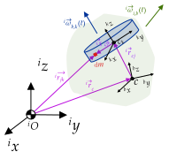
Una extensión del resultado anterior ocurre cuando se analiza el momento angular de un cuerpo rígido que contienen dispositivos internos que almacenan momento angular, como el que se muestra en la Figura. Metodológicamente, el análisis es bastante similar al anterior (pueden consultarlo en las notas adicionales).
Cada dispositivo tiene un marco de referencia propio \(\ls{k} \mathcal{F}\) sujeto a su estructura, y gira a una velocidad \(\ls{i}\vec{\omega}_{b,k}\) con respecto al marco de referencia \(\ls{b} \mathcal{F}\) representado en el marco \(\ls{i} \mathcal{F}\).
El momento angular en este caso es:
\[ \begin{split} \ls{i}\vec{h} & = \ls{i}\vec{h}_0+\ls{i}\vec{h}_s+\ls{i}\vec{h}_{w}, \\ & =m \ls{i}\vec{r}_c\times\ls{i}\vec{v}_c+ J_i(t)\ls{i}\vec{\omega}_{i,b} \\ & + \ls{i}R_b\sum_{j=1}^a J_{b,j}(t)\ls{b}\vec{\omega}_{b,j}. \end{split} \tag{36}\]
donde \(J_{b,j}(t)\) es el tensor de inercia del dispositivo \(j\) visto del marco de referencia \(\ls{b} \mathcal{F}\) y \(a\) es el número de dispositivos.
Tensor de inercia
▸▸ Tensor de inercia
El tensor de inercia
\[ \begin{split} J_i(t) = \int_V \rho_i(\ls{i}\vec{r}) \left[\|\ls{i}r\|^2 \mathbb{I} - \ls{i}\vec{r}\ls{i}\vec{r}^\top\right] \; \text{d}V, \end{split} \]
describe cómo se distribuye la masa de un cuerpo con respecto a su centro de masa y cómo esa distribución contribuye a la resistencia del cuerpo a cambiar su estado rotacional. Una noción intuitiva sobre lo anterior es la siguiente:
- La masa más alejada del eje de giro ofrece una mayor resistencia.
- La masa mas cercana al eje de giro ofrece una menor resistencia.
Esto puede observarse con mayor detalle al desarrollar el tensor de inercia. Considere que \(\ls{i}\vec{r}=[\ls{i}r_x \: \ls{i}r_y \: \ls{i}r_z]^\top\). Entonces
\[ \begin{split} J_i(t) & = \int_V \rho_i(\ls{i}\vec{r}) \left[(\ls{i}r_x^2+\ls{i}r_y^2+\ls{i}r_z^2) \mathbb{I} - \begin{bmatrix} \ls{i}r_x^2 & \ls{i}r_x\ls{i}r_y & \ls{i}r_x\ls{i}r_z \\ \ls{i}r_x\ls{i}r_y & \ls{i}r_y^2 & \ls{i}r_y\ls{i}r_z \\ \ls{i}r_x\ls{i}r_z & \ls{i}r_y\ls{i}r_z & \ls{i}r_z^2 \end{bmatrix}\right] \; \text{d}V, \\ & =\int_V \rho_i(\ls{i}\vec{r}) \begin{bmatrix} \ls{i}r_y^2+\ls{i}r_z^2 & -\ls{i}r_x\ls{i}r_y & -\ls{i}r_x\ls{i}r_z \\ -\ls{i}r_x\ls{i}r_y & \ls{i}r_x^2+\ls{i}r_z^2 & -\ls{i}r_y\ls{i}r_z \\ -\ls{i}r_x\ls{i}r_z & -\ls{i}r_y\ls{i}r_z & \ls{i}r_x^2+\ls{i}r_y^2 \end{bmatrix} \; \text{d}V, \end{split} \]
\[ \begin{split} J_i(t) & = \begin{bmatrix} J_{xx}(t) & J_{xy}(t) & J_{xz}(t) \\ J_{xy}(t) & J_{yy}(t) & J_{yz}(t) \\ J_{xz}(t) & J_{yz}(t) & J_{zz}(t) \end{bmatrix}, \end{split} \]
donde a los elementos de la diagonal principal
\[ \begin{split} J_{xx}(t) & = \int_V \rho_i(\ls{i}\vec{r}) (\ls{i}r_y^2+\ls{i}r_z^2 )\; \text{d}V, \qquad J_{yy}(t) = \int_V \rho_i(\ls{i}\vec{r}) (\ls{i}r_x^2+\ls{i}r_z^2) \; \text{d}V, \qquad J_{zz}(t) = \int_V \rho_i(\ls{i}\vec{r}) (\ls{i}r_x^2+\ls{i}r_y^2) \; \text{d}V, \\ \end{split} \]
se les conoce como momentos de inercia, mientras que a los elementos fuera de la diagonal principal
\[ \begin{split} J_{xy}(t) & = -\int_V \rho_i(\ls{i}\vec{r}) \ls{i}r_x\ls{i}r_y \; \text{d}V, \qquad J_{xz}(t) = -\int_V \rho_i(\ls{i}\vec{r}) \ls{i}r_x\ls{i}r_z \; \text{d}V, \qquad J_{yz}(t) = -\int_V \rho_i(\ls{i}\vec{r}) \ls{i}r_y\ls{i}r_z \; \text{d}V, \\ \end{split} \]
se les conoce como productos de inercia.
Debido a que \(J_i(t)\) depende de \(\ls{i}\vec{r}(t)\), se necesita estrictamente conocer el vector de posición de cada partícula que conforma el cuerpo rígido para calcularlo. Para simplificar esto, considere lo siguiente:
\[ \begin{split} J_i(t) & = \int_V \rho_i(\ls{i}\vec{r}(t)) \left[\|\ls{i}r(t)\|^2 \mathbb{I} - \ls{i}\vec{r}(t)\ls{i}\vec{r}^\top(t)\right] \; \text{d}V, \\ & =\int_V \rho_i(\ls{i}R_b(t)\ls{b}\vec{r}) \left[\|\ls{i}R_b(t)\ls{b}r\|^2 \mathbb{I} - \ls{i}R_b(t)\ls{b}\vec{r}\left(\ls{i}R_b(t)\ls{b}\vec{r}\right)^\top\right] \; \text{d}V, \\ & =\int_V \rho_b(\ls{b}\vec{r}) \left[\|\ls{b}r\|^2 \ls{i}R_b(t)\ls{b}R_i(t) - \ls{i}R_b(t)\ls{b}\vec{r}\ls{b}\vec{r}^\top\ls{b}R_i(t)\right] \; \text{d}V, \\ & =\ls{i}R_b(t)\left[\int_V \rho_b(\ls{b}\vec{r}) \left[\|\ls{b}r\|^2 \mathbb{I} - \ls{b}\vec{r}\ls{b}\vec{r}^\top\right] \; \text{d}V\right]\ls{b}R_i(t), \\ & =\ls{i}R_b(t)I_b\ls{b}R_i(t). \end{split} \]
donde \(\rho_b\) representa la densidad del cuerpo en la posición \(\ls{b}\vec{r}\), \(I_b\) es el tensor de inercia del cuerpo \(b\) visto desde el marco de referencia \(\ls{b}\mathcal{F}\). Debido a que estamos considerando un cuerpo rígido, \(I_b\) es constante con el tiempo.
En el marco de referencia \(\ls{b}\mathcal{F}\)
\[ \begin{split} I_b & = \begin{bmatrix} J_{xx} & J_{xy} & J_{xz} \\ J_{xy} & J_{yy} & J_{yz} \\ J_{xz} & J_{yz} & J_{zz} \end{bmatrix}, \end{split} \]
\[ \begin{split} J_{xx} & = \int_V \rho_b(\ls{b}\vec{r}) (\ls{b}r_y^2+\ls{b}r_z^2)\; \text{d}V, \qquad J_{yy} = \int_V \rho_b(\ls{b}\vec{r}) (\ls{b}r_x^2+\ls{b}r_z^2) \; \text{d}V, \qquad J_{zz} = \int_V \rho_b(\ls{b}\vec{r}) (\ls{b}r_x^2+\ls{b}r_y^2 )\; \text{d}V, \\ \end{split} \]
\[ \begin{split} J_{xy} & = -\int_V \rho_b(\ls{b}\vec{r}) \ls{b}r_x\ls{b}r_y \; \text{d}V, \qquad J_{xz} = -\int_V \rho_b(\ls{b}\vec{r}) \ls{b}r_x\ls{b}r_z \; \text{d}V, \qquad J_{yz} = -\int_V \rho_b(\ls{b}\vec{r}) \ls{b}r_y\ls{b}r_z \; \text{d}V, \\ \end{split} \]
Ejemplo - Prisma rectangular
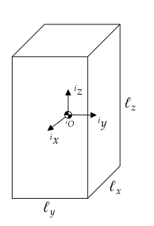
El tensor de inercia de una prisma rectangular con
- Distribución de masa uniforme \((\rho_b(\ls{b}\vec{r})=\rho)\)
- Longitud en \(\ls{b}x\) igual a \(\ell_x\).
- Longitud en \(\ls{b}y\) igual a \(\ell_y\).
- Longitud en \(\ls{b}z\) igual a \(\ell_z\).
Dada la geometría del prisma, el diferencial de volumen puede expresarse como:
\[ \begin{split} \text{d}V & = \text{d}\ls{b}r_z\text{d}\ls{b}r_y\text{d}\ls{b}r_x. \\ \end{split} \]
Momentos de inercia
\[ \begin{split} J_{xx} & = \int_V \rho_b(\ls{b}\vec{r})( \ls{b}r_y^2+\ls{b}r_z^2 )\; \text{d}V, \\ & =\int_{-\frac{\ell_x}{2}}^{\frac{\ell_x}{2}}\int_{-\frac{\ell_y}{2}}^{\frac{\ell_y}{2}}\int_{-\frac{\ell_z}{2}}^{\frac{\ell_z}{2}} (\ls{b}r_y^2+\ls{b}r_z^2) \text{d}\ls{b}r_z\text{d}\ls{b}r_y\text{d}\ls{b}r_x, \\ & =\frac{1}{12}\rho (\ell_x\ell_y\ell_z)(\ell_y^2+\ell_z^2), \\ & =\frac{1}{12}m(\ell_y^2+\ell_z^2), \\ J_{yy} & =\frac{1}{12}m(\ell_x^2+\ell_z^2), \\ J_{zz} & =\frac{1}{12}m(\ell_x^2+\ell_y^2). \end{split} \]
Productos de inercia
\[ \begin{split} J_{xy} & = -\int_V \rho_b(\ls{b}\vec{r}) \ls{b}r_x\ls{b}r_y \; \text{d}V, \\ & =-\int_{-\frac{\ell_x}{2}}^{\frac{\ell_x}{2}}\int_{-\frac{\ell_y}{2}}^{\frac{\ell_y}{2}}\int_{-\frac{\ell_z}{2}}^{\frac{\ell_z}{2}} (\ls{b}r_x\ls{b}r_y) \text{d}\ls{b}r_z\text{d}\ls{b}r_y\text{d}\ls{b}r_x, \\ & =0, \\ J_{xz} & =0, \\ J_{yz} & =0. \end{split} \]
Tensor de inercia
\[ \begin{split} I_b = \frac{1}{12}m \begin{bmatrix} \ell_y^2+\ell_z^2 & 0 & 0 \\ 0 & \ell_x^2+\ell_z^2 & 0 \\ 0 & 0 & \ell_x^2+\ell_y^2 \end{bmatrix}. \end{split} \]
Modelo dinámico de un cuerpo rígido
▸▸ Modelo dinámico de un cuerpo rígido
- En pocas palabras, el modelo dinámico nos dice el porqué un cuerpo rígido se mueve. En un sentido físico, nos dice cómo evoluciona el momento angular del cuerpo en función de los pares externos que actúan sobre el cuerpo.
- Para un cuerpo rígido, esto es equivalente a modelar el cambio de la velocidad angular del cuerpo con respecto a un marco de referencia inercial.
- Un detalle importante antes de deducir el modelo dinámico es que \(\ls{i}\dot{\vec{h}}(t)\neq \ls{i}R_b(t)\ls{b}\dot{\vec{h}}(t)\). Esto de debe a que la matriz \(\ls{i}R_b(t)\) cambia con el tiempo.
- Este último detalle es el porqué se usa el marco de referencia inercial.
Para encontrar el modelo dinámico podemos comenzar derivando Ecuación 36:
\[ \begin{split} \ls{i}\dot{\vec{h}}(t) & = \ls{i}\dot{\vec{h}}_0(t) + \ls{i}\dot{\vec{h}}_s(t) + \ls{i}\dot{\vec{h}}_w(t), \\ & =m \ls{i}\dot{\vec{r}}_c(t)\times\ls{i}\vec{v}_c(t)+m \ls{i}\vec{r}_c(t)\times\ls{i}\dot{\vec{v}}_c(t)+ \ls{i}\dot{R}_b(t)I_b\ls{b}R_i(t)\ls{i}\vec{\omega}_{i,b}(t)+ \ls{i}R_b(t)I_b\ls{b}\dot{R}_i(t)\ls{i}\vec{\omega}_{i,b}(t) \\ & +\ls{i}R_b(t)I_b\ls{b}R_i(t)\ls{i}\dot{\vec{\omega}}_{i,b}(t)+\ls{i}\dot{\vec{h}}_w(t). \end{split} \]
De aquí, el primer término \(m \ls{i}\dot{\vec{r}}_c(t)\times\ls{i}\vec{v}_c(t)=0\), mientras que
\[ \ls{i}R_b(t)I_b\ls{b}\dot{R}_i(t)\ls{i}\vec{\omega}_{i,b}(t)=-\ls{i}R_b(t)I_b\ls{i}S(\ls{b}\vec{\omega}_{i,b}(t))\ls{b}R_i(t)\ls{i}\vec{\omega}_{i,b}(t)=-\ls{i}R_b(t)I_b\ls{i}S(\ls{b}\vec{\omega}_{i,b}(t))\ls{b}\vec{\omega}_{i,b}(t)=0. \]
Por lo tanto:
\[ \begin{split} \ls{i}\dot{\vec{h}}(t) & =\ls{i}\vec{r}_c(t)\times\ls{i}\vec{f}(t)+ S(\ls{i}\vec{\omega}_{i,b}(t))\ls{i}R_b(t)I_b\ls{b}\vec{\omega}_{i,b}(t)+\ls{i}R_b(t)I_b\ls{b}\dot{\vec{\omega}}_{i,b}(t)+\ls{i}\dot{\vec{h}}_w(t). \end{split} \]
De la definición de par, sabemos que
\[ \ls{i}\vec{\tau}_c(t)=\ls{i}\dot{\vec{h}}(t). \]
y multiplicando por \(\ls{b}R_i(t)\):
\[ \begin{split} \ls{b}\vec{\tau}_c(t) & =\ls{b}\vec{r}_c(t)\times\ls{b}\vec{f}_{c}(t)+ S(\ls{b}\vec{\omega}_{i,b}(t))I_b\ls{b}\vec{\omega}_{i,b}(t)+I_b\ls{b}\dot{\vec{\omega}}_{i,b}(t)+\ls{b}R_i(t)\ls{i}\dot{\vec{h}}_w(t). \end{split} \]
Reordenando la ecuación anterior se obtiene:
\[ \begin{split} I_b\ls{b}\dot{\vec{\omega}}_{i,b}(t) & =-S(\ls{b}\vec{\omega}_{i,b}(t))I_b\ls{b}\vec{\omega}_{i,b}(t)+\ls{b}\vec{\tau}_c(t)-\ls{b}\vec{r}_c(t)\times\ls{b}\vec{f}_{c}(t)-\ls{b}R_i(t)\ls{i}\dot{\vec{h}}_w(t). \end{split} \tag{37}\]
donde
- \(-S(\ls{b}\vec{\omega}_{i,b}(t))I_b\ls{b}\vec{\omega}_{i,b}(t)\) es el par giroscópico. Modela la conservación de la cantidad de momento angular.
- \(\ls{b}\vec{\tau}_c(t)\) es la suma de pares externos aplicados desde el centro de masa del cuerpo rígido. .
- \(-\ls{b}\vec{r}_c(t)\times\ls{b}\vec{f}_{c}(t)\) es la suma de pares externos aplicados desde el centro del marco de referencia inercial.
- \(-\ls{b}R_i(t)\ls{i}\dot{\vec{h}}_w(t)\) es la suma de pares internos generados por cambios en el momento angular de dispositivos internos.
La Ecuación 37 se conoce como modelo dinámico inercial de un cuerpo rígido. Sin embargo, el modelo dinámico aún no se encuentra en función de variables de estado de nuestro interés.
La velocidad angular \(\ls{i}\vec{\omega}_{i,b}(t)\) puede descomponerse de la siguiente manera:
\[ \begin{split} \ls{i}\vec{\omega}_{i,b}(t) & =\ls{i}\vec{\omega}_{i,h}(t)+\ls{i}\vec{\omega}_{h,b}(t) \end{split} \]
donde \(\ls{i}\vec{\omega}_{i,h}(t)\) es la velocidad angular relativa al marco de referencia inercial y \(\ls{i}\vec{\omega}_{h,b}(t)\) es la velocidad angular relativa al marco de referencia intermedio \(\ls{h}\mathcal{F}\).
La derivada queda expresada como:
\[ \begin{split} \ls{i}\dot{\vec{\omega}}_{i,b}(t) & =\ls{i}\dot{\vec{\omega}}_{i,h}(t)+\ls{i}\dot{\vec{\omega}}_{h,b}(t) \end{split} \]
También sabemos que
\[ \begin{split} \ls{i}\vec{\omega}_{h,b}(t) & =\ls{i}R_b(t)\ls{b}\vec{\omega}_{h,b}(t), \\ \ls{i}\dot{\vec{\omega}}_{h,b}(t) & =\ls{i}\dot{R}_b(t)\ls{b}\vec{\omega}_{h,b}(t)+\ls{i}R_b(t)\ls{b}\dot{\vec{\omega}}_{h,b}(t), \\ & =S(\ls{i}\omega_{i,b})\ls{i}R_b(t)\ls{b}\vec{\omega}_{h,b}(t)+\ls{i}R_b(t)\ls{b}\dot{\vec{\omega}}_{h,b}(t) \end{split} \]
Sustituyendo y transformando al marco de referencia \(\ls{b}\mathcal{F}\):
\[ \begin{split} \ls{b}\dot{\vec{\omega}}_{i,b}(t) & =\ls{b}R_i (t)\ls{i}\dot{\vec{\omega}}_{i,b}(t), \\ & =\ls{b}R_i (t)\ls{i}\dot{\vec{\omega}}_{i,h}(t)+S(\ls{b}\omega_{i,b})\ls{b}\vec{\omega}_{h,b}(t)+\ls{b}\dot{\vec{\omega}}_{h,b}(t). \end{split} \]
Dado que \(S(\ls{b}\omega_{i,b})\ls{b}\vec{\omega}_{h,b}(t)=S(\ls{b}R_i (t)\ls{i}\vec{\omega}_{i,h}(t)+\ls{b}\vec{\omega}_{h,b})\ls{b}\vec{\omega}_{h,b}(t)=S(\ls{b}R_i (t)\ls{i}\vec{\omega}_{i,h}(t))\ls{b}\vec{\omega}_{h,b}(t)\), entonces
\[ \begin{split} \ls{b}\dot{\vec{\omega}}_{i,b}(t) & =\ls{b}R_i (t)\ls{i}\dot{\vec{\omega}}_{i,h}(t)+S(\ls{b}R_i (t)\ls{i}\vec{\omega}_{i,h}(t))\ls{b}\vec{\omega}_{h,b}(t)+\ls{b}\dot{\vec{\omega}}_{h,b}(t). \end{split} \tag{38}\]
Sustituyendo \(\ls{b}\vec{\omega}_{i,b}(t)\) y \(\ls{b}\dot{\vec{\omega}}_{i,b}(t)\) en la Ecuación 37, obtenemos:
\[ \begin{split} & I_b(\ls{b}R_i (t)\ls{i}\dot{\vec{\omega}}_{i,h}(t)+S(\ls{b}R_i (t)\ls{i}\vec{\omega}_{i,h}(t))\ls{b}\vec{\omega}_{h,b}(t)+\ls{b}\dot{\vec{\omega}}_{h,b}(t)) \\ & =-S(\ls{b}R_i (t)\ls{i}\vec{\omega}_{i,h}(t)+\ls{b}\vec{\omega}_{h,b}(t))I_b(\ls{b}R_i (t)\ls{i}\vec{\omega}_{i,h}(t)+\ls{b}\vec{\omega}_{h,b}(t)) \\ & +\ls{b}\vec{\tau}_c(t)-\ls{b}\vec{r}_c(t)\times\ls{b}\vec{f}_{c}(t)-\ls{b}\dot{\vec{h}}_w(t). \end{split} \]
Reordenando los términos tenemos
\[ \begin{split} I_b\ls{b}\dot{\vec{\omega}}_{h,b}(t)= & -S(\ls{b}R_i (t)\ls{i}\vec{\omega}_{i,h}(t)+\ls{b}\vec{\omega}_{h,b}(t))I_b(\ls{b}R_i (t)\ls{i}\vec{\omega}_{i,h}(t)+\ls{b}\vec{\omega}_{h,b}(t)) \\ & -I_b\ls{b}R_i (t)\ls{i}\dot{\vec{\omega}}_{i,h}(t)-I_bS(\ls{b}R_i (t)\ls{i}\vec{\omega}_{i,h}(t))\ls{b}\vec{\omega}_{h,b}(t)+\ls{b}\vec{\tau}_c(t)-\ls{b}\vec{r}_c(t)\times\ls{b}\vec{f}_{c}(t)-\ls{b}R_i(t)\ls{i}\dot{\vec{h}}_w(t). \end{split} \tag{39}\]
- La Ecuación 39 es el modelo dinámico en el marco de referencia del cuerpo rígido. Este modelo es importante por dos motivos:
- Utiliza como variable de estado la velocidad angular en el marco de referencia de un cuerpo rígido \(\ls{b}\dot{\vec{\omega}}_{h,b}(t)\). Esta variables puede ser medida físicamente por sensores dentro del cuerpo.
- Nos permite identificar con claridad la influencia del movimiento traslacional sobre la orientación del cuerpo rígido (\(\ls{i}\vec{\omega}_{i,h}(t)\), \(\ls{i}\dot{\vec{\omega}}_{i,h}(t)\),\(\ls{b}\vec{r}_c\), \(\ls{b}\vec{f}_{c}\)).
Finalmente, lo último que nos falta es describir es la influencia que tiene el momento angular de dispositivos internos en la dinámica del cuerpo rígido. Para ello, retomemos:
\[ \ls{i}\vec{h}_w(t)=\ls{i}R_b(t)\sum_{j=1}^a J_{b,j}(t)\ls{b}\vec{\omega}_{b,j}(t). \]
Derivando obtenemos:
\[ \ls{i}\dot{\vec{h}}_w(t)=\sum_{j=1}^a \left[\ls{i}\dot{R}_b(t) J_{b,j}(t)\ls{b}\vec{\omega}_{b,j}(t)+\ls{i}R_b(t) \dot{J}_{b,j}(t)\ls{b}\vec{\omega}_{b,j}(t)+\ls{i}R_b(t) J_{b,j}(t)\ls{b}\dot{\vec{\omega}}_{b,j}(t)\right]. \]
De aquí sabemos que
\[ \ls{i}\dot{R}_b(t)=\ls{i}R_b(t) S(\ls{b}\vec{\omega}_{i,b}(t)). \]
y
\[ \begin{split} J_{b,j}(t) & =\ls{b}R_j(t)I_j\ls{j}R_b(t), \\ \dot{J}_{b,j}(t)\ls{b}\vec{\omega}_{b,j}(t) & =\ls{b}R_j(t)S(\ls{b}\vec{\omega}_{b,j}(t))I_j\ls{j}\vec{\omega}_{b,j}(t). \end{split} \]
Sustituyendo y transformando al marco de referencia \(\ls{b}\mathcal{F}\):
\[ \begin{split} \ls{b}R_i \ls{i}\dot{\vec{h}}_w(t)=\sum_{j=1}^{a} \left[ S(\ls{b}\vec{\omega}_{i,b}(t))\ls{b}R_j(t)I_j\ls{j}\vec{\omega}_{b,j}(t)+\ls{b}R_j(t)S(\ls{j}\vec{\omega}_{b,j}(t))I_j\ls{j}\vec{\omega}_{b,j}(t)+\ls{b}R_j(t)I_j\ls{j}\dot{\vec{\omega}}_{b,j}(t)\right]. \end{split} \]
Con ello, la Ecuación 39 se transforma en:
\[ \begin{split} I_b\ls{b}\dot{\vec{\omega}}_{h,b}(t)= & -S(\ls{b}R_i (t)\ls{i}\vec{\omega}_{i,h}(t)+\ls{b}\vec{\omega}_{h,b}(t))\left(I_b(\ls{b}R_i (t)\ls{i}\vec{\omega}_{i,h}(t)+\ls{b}\vec{\omega}_{h,b}(t))+\sum_{j=1}^{a}\ls{b}R_j(t)I_j\ls{j}\vec{\omega}_{b,j}(t)\right) \\ & -I_b\ls{b}R_i (t)\ls{i}\dot{\vec{\omega}}_{i,h}(t)-I_bS(\ls{b}R_i (t)\ls{i}\vec{\omega}_{i,h}(t))\ls{b}\vec{\omega}_{h,b}(t)+\ls{b}\vec{\tau}_c(t)-\ls{b}\vec{r}_c(t)\times\ls{b}\vec{f}_{c}(t) \\ & -\sum_{j=1}^{a}\ls{b}R_j(t)S(\ls{j}\vec{\omega}_{b,j}(t))I_j\ls{j}\vec{\omega}_{b,j}(t)-\sum_{j=1}^{a} \ls{b}R_j(t)I_j\ls{j}\dot{\vec{\omega}}_{b,j}(t). \end{split} \tag{40}\]
Ecuaciones de movimiento de cuerpo rígido
Modelo rotacional de un satélite
▸ Modelo rotacional de un satélite
El movimiento rotacional de un satélite puede describirse mediante dos modelos:
- Modelo dinámico rotacional: Nos dice el porqué del movimiento, i.e., la trayectoria a lo largo del tiempo de la velocidad angular del satélite debido a pares de distinta naturaleza.
- Modelo cinemático rotacional: Dicta cómo es el movimiento, i.e., la trayectoria a lo largo del tiempo de la variable de parametrización que se utiliza para describir el movimiento.
Por ejemplo, si decidimos trabajar con cuaterniones, el modelo rotacional del satélite se compone de las Ecuaciones Ecuación 38 y Ecuación 40,
\[ \begin{split} I_b\ls{b}\dot{\vec{\omega}}_{h,b}(t)= & -S(\ls{b}R_i (t)\ls{i}\vec{\omega}_{i,h}(t)+\ls{b}\vec{\omega}_{h,b}(t))\left(I_b(\ls{b}R_i (t)\ls{i}\vec{\omega}_{i,h}(t)+\ls{b}\vec{\omega}_{h,b}(t))+\sum_{j=1}^{a}\ls{b}R_j(t)I_j\ls{j}\vec{\omega}_{b,j}(t)\right) \\ & -I_b\ls{b}R_i (t)\ls{i}\dot{\vec{\omega}}_{i,h}(t)-I_bS(\ls{b}R_i (t)\ls{i}\vec{\omega}_{i,h}(t))\ls{b}\vec{\omega}_{h,b}(t)+\ls{b}\vec{\tau}_c(t)-\ls{b}\vec{r}_c(t)\times\ls{b}\vec{f}_{c}(t) \\ & -\sum_{j=1}^{a}\ls{b}R_j(t)S(\ls{j}\vec{\omega}_{b,j}(t))I_j\ls{j}\vec{\omega}_{b,j}(t)-\sum_{j=1}^{a} \ls{b}R_j(t)I_j\ls{j}\dot{\vec{\omega}}_{b,j}(t) \end{split} \tag{41}\]
\[ \ls{b}\dot{\mathbf{q}}_h(t)=-\frac{1}{2}\ls{b}\boldsymbol{\omega}_{h,b} \otimes \ls{b}\mathbf{q}_h, \]
Antes de que decidamos pasar a mejor vida, vamos a darle un sentido físico a cada termino de la Ecuación 41.
| Símbolo | Descripción |
|---|---|
| \(I_b\) | Tensor de inercia del cuerpo principal del satélite, expresado en el marco \(b\). |
| \(I_j\) | Tensor de inercia del actuador \(j\), expresado en su propio marco \(j\). |
| \(a\) | Número total de elementos internos rotacionales. |
| \(^{b}\vec{\omega}_{h,b}(t)\) | Velocidad angular del cuerpo \(b\) con respecto al marco orbital \(h\), expresada en \(b\); también como cuaternión puro \(^{b}\boldsymbol{\omega}_{h,b} = [0,\;^{b}\vec{\omega}_{h,b}]\). |
| \(^{i}\vec{\omega}_{i,h}(t)\) | Velocidad angular del marco inercial \(i\) con respecto al marco \(h\), expresada en \(i\) (Se construye usando las salidas del propagador). |
| \(^{j}\vec{\omega}_{b,j}(t)\) | Velocidad angular relativa entre el cuerpo \(b\) y el actuador \(j\), expresada en el marco \(j\). En un sentido físico, es la velocidad angular del actuador \(j\). Esta velocidad se medir utilizando instrumentos dentro del cuerpo o, si tenemos control sobre ella, asignándola directamente. |
| \(^{b}\vec{r}_c(t)\) | Vector de posición desde el origen del marco \(i\) al centro de masa del cuerpo. |
| \(^{b}\vec{f}(t)\) | Fuerza externa aplicada en centro de masa del cuerpo, expresada en \(b\). |
| \(^{b}R_i(t)\) | Matriz de rotación del marco inercial \(i\) al marco del cuerpo \(b\). |
| \(^{b}R_j(t)\) | Matriz de rotación del marco del actuador \(j\) al marco del cuerpo \(b\). |
| \(S(\,\cdot\,)\) | Operador que construye la matriz antisimétrica: \(S(\vec{x})\vec{y} = \vec{x} \times \vec{y}\). |
Ahora, para estudiar las entradas del modelo dinámico, considere la siguiente notación:
\[ \begin{split} I_b\ls{b}\dot{\vec{\omega}}_{h,b}(t) & =\vec{\tau}_\alpha(t)+\vec{\tau}_\beta(t)+\vec{\tau}_\gamma(t)+\vec{\tau}_\delta(t)+\vec{\tau}_\epsilon(t)+\vec{\tau}_\zeta(t)+\vec{\tau}_\eta(t). \end{split} \]
donde
- \(\vec{\tau}_\alpha(t)=-S(\ls{b}R_i (t)\ls{i}\vec{\omega}_{i,h}(t)+\ls{b}\vec{\omega}_{h,b}(t))\left(I_b(\ls{b}R_i (t)\ls{i}\vec{\omega}_{i,h}(t)+\ls{b}\vec{\omega}_{h,b}(t))+\sum_{j=1}^{a}\ls{b}R_j(t)I_j\ls{j}\vec{\omega}_{b,j}(t)\right)\).
- \(\vec{\tau}_\beta(t)=-I_b\ls{b}R_i (t)\ls{i}\dot{\vec{\omega}}_{i,h}(t)\).
- \(\vec{\tau}_\gamma(t)=-I_bS(\ls{b}R_i (t)\ls{i}\vec{\omega}_{i,h}(t))\ls{b}\vec{\omega}_{h,b}(t)\).
- \(\vec{\tau}_\delta(t)=\ls{b}\vec{\tau}_c(t)\).
- \(\vec{\tau}_\epsilon(t)=-\ls{b}\vec{r}_c(t)\times\ls{b}\vec{f}_{c}(t)\).
- \(\vec{\tau}_\zeta(t)=-\sum_{j=1}^{a}\ls{b}R_j(t)S(\ls{j}\vec{\omega}_{b,j}(t))I_j\ls{j}\vec{\omega}_{b,j}(t)\).
- \(\vec{\tau}_\eta(t)=-\sum_{j=1}^{a} \ls{b}R_j(t)I_j\ls{j}\dot{\vec{\omega}}_{b,j}(t)\).
| Par | Interpretación física |
|---|---|
| \(\vec{\tau}_\alpha(t)\) | Par giroscópico total. Representa los pares relacionados con la conservación de la cantidad de momento angular total del satélite. Es un término responsable de la precesión. |
| \(\vec{\tau}_\beta(t)\) | Efecto de la aceleración angular del marco inercial. Introduce la influencia de la aceleración angular orbital sobre la actitud del satélite. Para órbitas circulares, este par es nulo. |
| \(\vec{\tau}_\gamma(t)\) | Término de transporte cinemático. Es un par ficticio que aparece al describir la dinámica en un marco no estático (en nuestro caso, el marco \(h\)). A este fenómeno se le conoce como efectos de Coriolis. |
| \(\vec{\tau}_\delta(t)\) | Par externo. Suma de los pares externos aplicados al satélite desde su centro de masa, expresado en \(b\). Se deben principalmente a fuerza externas de naturaleza no mecánica, e.g. magnetismo, arrastre atmosférico, presión solar, etc. Dichos pares pueden considerarse como perturbaciones o pares de control. |
| \(\vec{\tau}_\epsilon(t)\) | Par debido a fuerzas externas aplicadas en el centro de masa. Representa pares originados por fuerzas sobre centro de masa del satélite desde el origen del marco \(i\). Para el caso del problema de una fuerza central, este par es nulo. Otras fuerzas, como la atracción a otros cuerpos, afectan desde este término. |
| \(\vec{\tau}_\zeta(t)\) | Par giroscópico de los elementos internos. Muy similar al par giroscópico total. Cada actuador genera un par de reacción sobre el cuerpo al rotar. |
| \(\vec{\tau}_\eta(t)\) | Par por aceleración de los elementos internos. Par debido a la aceleración angular de los elementos internos. |
Algunos detalles importantes
- Algunos términos del modelo dinámico no fueron simplificados para hacer énfasis en que es necesario tener un orden sobre la operación. Por ejemplo
- \(\ls{b}R_i (t)\ls{i}\vec{\omega}_{i,h}\) implica que primero se calcula \(\ls{i}\vec{\omega}_{i,h}\) y luego se multiplica por \(\ls{b}R_i (t)\).
- \(\ls{b}R_i (t)\ls{i}\dot{\vec{\omega}}_{i,h}\) implica que primero se calcula la derivada \(\ls{i}\dot{\vec{\omega}}_{i,h}\) y luego se multiplica por \(\ls{b}R_i (t)\).
- \(\ls{j}\vec{\omega}_{b,j}(t)\) es la velocidad de rotación se los elementos internos. Se mide o se asigna, y finalmente se multiplica por la matriz de rotación.
- \(I_b\) e \(I_j\) no cambian con el tiempo.
- \(\ls{b}R_j\) puede o no cambiar con el tiempo dependiendo el comportamiento del actuador.
- \(\ls{i}\vec{\omega}_{i,h}\) y \(\ls{i}\dot{\vec{\omega}}_{i,h}\) pueden calcularse mediante el teorema de rotaciones de Euler utilizando las efemérides orbitales. Recuerda que y dado que los tres vectores son ortogonales, aplicando el producto cruz por la izquierda con \(\ls{i}\vec{r}_c(t)\) se tiene
\[ \ls{i}\vec{\omega}_{i,h}(t) = \frac{\ls{i}\vec{r}_c(t) \times \ls{i}\vec{v}_c(t)} {\|\ls{i}\vec{r}_c(t)\|^2}. \qquad \ls{i}\dot{\vec{\omega}}_{i,h}(t) = \frac{\ls{i}\vec{r}_c(t) \times \ls{i}\dot{\vec{v}}_c(t)} {\|\ls{i}\vec{r}_c(t)\|^2}. \] —
Ecuaciones de movimiento de cuerpo rígido
Perturbaciones
▸ Perturbaciones
Una perturbación es cualquier fuerza o par no deseado que altera el movimiento nominal de un sistema físico. En el contexto de un satélite, se trata de efectos externos o internos que desvían su orientación o su trayectoria con respecto a lo que se espera bajo condiciones ideales.
- Durante la operación de un satélite, incluso en ausencia de maniobras de control, actúan múltiples fuerzas externas e internas que generan pares sobre el cuerpo.
- Aunque cada perturbación es pequeña, su efecto acumulado provoca variaciones graduales en la orientación (drift) y puede degradar el desempeño de sensores, antenas, paneles solares e incluso el ADCS si no se compensa adecuadamente.
- Algunos de los efectos a largo plaza son:
- Acumulación gradual de error en la orientación debido a pares no compensados.
- Incremento en el consumo de energía del sistema de control.
- Saturación de actuadores y pérdida de control en misiones sin capacidad de descarga de momento angular.
- Tendencia del satélite a orientarse hacia configuraciones naturales estables, determinadas por la distribución de masa y las perturbaciones dominantes.
Perturbaciones externas:
- Gradiente gravitatorio (\(\ls{b}\vec{\tau}_g\))
- Arrastre aerodinámico (\(\ls{b}\vec{\tau}_a\))
- Presión de radiación solar (\(\ls{b}\vec{\tau}_s\))
- Campo magnético terrestre (\(\ls{b}\vec{\tau}_m\))
Estos afectan al modelo dinámico rotacional desde el par de entradas externas, i.e.
\[ \begin{split} \ls{b}\vec{\tau}_{c} & = \ls{b}\vec{\tau}_{per} + \ls{b}\vec{\tau}_{ctr} \\ \ls{b}\vec{\tau}_{per} & = \ls{b}\vec{\tau}_{g} + \ls{b}\vec{\tau}_{a} + \ls{b}\vec{\tau}_{s} + \ls{b}\vec{\tau}_{m} \end{split} \]
donde \(\ls{b}\vec{\tau}_{c}\) es el par debido a fuerzas externas, \(\ls{b}\vec{\tau}_{per}\) es el par de perturbaciones y \(\ls{b}\vec{\tau}_{ctr}\) es la componente de control.
Perturbaciones internas:
- Incertidumbre en el centro de masa.
- Desajuste de los propulsores.
- Líquidos.
- Dispositivos rotativos.
- Choque térmico.
Los efectos de estas perturbaciones pueden observarse al extender el modelo dinámico rotacional si consideramos al satélite como un cuerpo flexible o si asumimos un cambio suficientemente lento en el tensor de inercia, lo cual es una suposición coherente para un satélite tradicional.
Gradiente gravitatorio
La fuerza gravitacional que experimenta cada partícula que componen el cuerpo es distinta y depende de su posición absoluta \(\ls{i}\vec{r}_j\). Este gradiente de la fuerza gravitacional a lo largo del satélite provoca un par sobre el satélite.
El par \(^b\vec{\tau}_g\) puede aproximarse mediante
\[ \begin{split} ^b\vec{\tau}_g=\frac{3\mu}{\|\:^{b}\vec{r}_c\|^5}\:^{b}\vec{r}_c \times I_s\:^{b}\vec{r}_c \end{split} \tag{42}\]
donde:
- \(\:^{b}\vec{r}_c\) es el vector de posición del centro de masa relativo al origen del marco de referencia inercial \(i\), representado en el marco de referencia \(b\).
- \(\mu=3.986\times 10^{14} m^3s^{-2}\) es el parámetro gravitacional estándar.
El desglose de la Ecuación 42 es muy similar al desglose que hicimos para el tensor de inercia.
Arrastre aerodinámico
Par debido al desplazamiento del satélite dentro de la atmósfera. La fuerza \(\ls{b}\vec{f}_a\) puede aproximarse como
\[ \begin{split} \ls{b}\vec{f}_a & =-\frac{1}{2}\rho C_d A_r \|\ls{b}\vec{v}_{rel}\|\ls{b}\vec{v}_{rel} \\ \ls{b}\vec{v}_{rel} & =\ls{b}\vec{v}_a-\ls{b}\vec{v}_{atm}. \\ \end{split} \]
donde:
- \(\ls{b}\vec{v}_a\) es la velocidad del centro de presión atmosférica.
- \(\ls{b}\vec{v}_{atm}\) es la velocidad local del aire.
- \(\rho (\ls{b}\vec{r}_c)\) es la densidad de la atmósfera.
- \(C_d\) es el coeficiente de arrastre aerodinámico del satélite.
- \(A_r\) es el área de la superficie en dirección al vector de velocidad.
- \(\ls{b}\vec{r}_a\) es un vector que apunta desde el centro de masa del satélite hasta el centro de presión atmosférica.
El par \(^b\vec{\tau}_a\) está dado por
\[ \begin{split} \ls{b}\vec{\tau}_a=\ls{b}\vec{r}_a \times \ls{b}\vec{f}_a \end{split} \]
- El centro de presión es el punto donde se puede considerar concentrada la resultante de todas las presiones que actúan sobre el cuerpo debidas a un fluido. En nuestro caso, ese fluido es la atmósfera. Este puede calcularse como la siguiente integral sobre la superficie del satélite:
- Por otro lado y a forma de ejemplo, para calcular el área de la superficie \(A_r\) se utiliza la siguiente expresión:
\[ \begin{split} A_r & =A_{r,x}+A_{r,y}+A_{r,z}, \\ & =A_x\max(0, \|\ls{b}\hat{v}_a^T\ls{b}\hat{n}_x\|)+A_y\max(0, \|\ls{b}\hat{v}_a^T\ls{b}\hat{n}_y\|)+A_z\max(0, \|\ls{b}\hat{v}_a^T\ls{b}\hat{n}_z\|). \end{split} \]
donde \(A_x\), \(A_y\) y \(A_z\) son las areas de la superficie en la dirección \(x\), \(y\) y \(z\) respectivamente.
- Sin embargo, este análisis no es exacto, sobre todo para satélites con geometría compleja. Por ello, se opta por hacer análisis aerodinámicos o técnicas derivadas de la mecánica de fluidos.
Presión de radiación solar
Par provocado por la radiación reflejada por las superficies iluminadas del satélite, e.g., paneles solares. La fuerza \(\ls{b}\vec{f}_s\) puede aproximarse como:
\[ \ls{b}\vec{f}_s = -\,\frac{E_\odot}{c}\,(1+q)\,A_s\,\ls{b}\hat{r}_{rel,s} \]
donde:
- \(E_\odot = 1371 [\mathrm{W/m^2}]\) es la constante de radiación solar .
- \(c = 3\times10^{8} [\mathrm{m/s}]\) es la velocidad de la luz.
- \(A_s\) es el área de la superficie de incidencia.
- \(q\) es el coeficiente de reflexión de la superficie (\(q=0\): absorción total; \(q=1\): reflexión perfecta).
- \(\ls{b}\hat{r}_{rel,s}\) es el vector unitario que apunta desde el Sol hacia el centro de presión solar, expresado en \(b\).
El par generado por la fuerza de radiación solar está dado por:
\[ \ls{b}\vec{\tau}_s = \ls{b}\vec{r}_s \times \ls{b}\vec{f}_s, \]
donde:
- \(\ls{b}\vec{r}_s\) es el vector que apunta desde el centro de masa del satélite hacia el centro de presión solar.
- \(\ls{b}\vec{f}_s\) es la fuerza de radiación expresada en el marco del cuerpo, con dirección opuesta al flujo solar.
Tanto el vector \(\ls{b}\vec{r}_s\) como el área \(A_s\) pueden calcularse de la misma manera que el caso del par por arrastre aerodinámico, reemplazando los parámetros correspondientes (\(\ls{b}\hat{v}_a \rightarrow \ls{b}\hat{r}_{rel,s}\)).
Par magnético
Par generado por la interacción entre el campo magnético de la Tierra y el dipolo magnético residual del satélite. El par \(\ls{b}\vec{\tau}_m\) puede aproximarse como:
\[ \ls{b}\vec{\tau}_m = \ls{b}\vec{m}_s \times \ls{b}\vec{b}_c \]
donde:
- \(\ls{b}\vec{m}_s\) es el vector del momento dipolar magnético del satélite (A·m\(^2\)), originado por materiales magnéticos residuales.
- \(\ls{b}\vec{b}_c\) es el vector del campo magnético terrestre en la posición del satélite, expresado en el marco del cuerpo.
- El dipolo magnético residual es un elemento magnético general que se forma de mediante el campo magnético de los elementos internos del satélite que no son utilizados para tareas de control (e.g. motores, baterías, etc). Este dipolo magnético tiene asociado un campo magnético residual \(\ls{b}\vec{b}_s\). Dicho campo magnético nos dice como se manifiesta el magnetismo dentro del satélite (es un simil al rol que tiene el vector de posición en la definición de par).
- Por otro lado, el momento dipolar magnético residual describe la dirección y la intensidad (o fuerza) que tienen el campo magnético (es un simil al rol que tiene el vector de fuerza en la definición de par).
- En la práctica, estos dos vectores se obtienen de manera experimental al provocar el mayor campo magnético dentro del satélite mediante el encendido o la integración de todos los elementos residuales en bancos de pruebas dedicados (Jaulas Helmholtz)
- Por otro lado, el campo magnético terrestre puede obtenerse de manera experimental mediante sensores dedicados, o mediante modelos del campo magnético terrestre, como lo son Campo Geomagnético de Referencia Internacional (IGRF, por sus siglas en inglés) y el Modelo Magnético Mundial (WMM, por sus siglas en inglés). Dichos modelos te entregan el campo magnético terrestre en la posición del satélite en el marco de referencia inercial (\(\ls{i}\vec{b}_c\)).
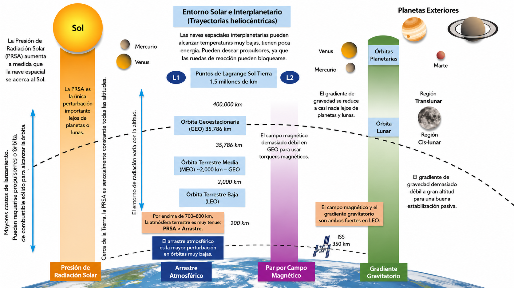
Capítulo 4
Determinación
Determinación
Determinación de la orientación
Definición
Proceso por el cual se cuantifica la orientación de un cuerpo relativa a un marco de referencia inercial en tiempo real mediante la lectura de sensores.
Este proceso se plantea matemáticamente mediante el siguiente problema de optimización:
Problema
Dado el conjunto de vectores unitarios conocidos en el marco del cuerpo \(\{\:^b\hat{v}_1,⋯,\:^b\hat{v}_n\}\), y el mismo conjunto de vectores representados en un marco inercial \(\{\:^iv_1,⋯,\:^iv_n\}\), determinar la mejor \(\tilde{f}(\cdot)\) tal que \[ \:^i\hat{v}_j\approx \tilde{f}(\:^b\hat{v}_j) \]
Por ejemplo:
- Matrices de rotación: \(\tilde{f}(\:^b\hat{v}_j)=\:^{b}\hat{R}_i\:^b\hat{v}_j\).
- Cuaterniones: \(\tilde{f}(\:^b\hat{v}_j)= \hat{\mathbf{q}} \otimes\:^b\hat{\mathbf{v}}_j^\top \otimes \hat{\mathbf{q}}^{*}\).
Las preguntas fundamentales son:
- ¿Cómo se obtiene el conjunto de vectores \(\{\hat{v}_1,⋯,\hat{v}_n\}\) en ambos marcos de referencia?
- ¿Cómo determinar la función \(\tilde{f}(\cdot)\) que mejor aproxima la relación entre ambos conjuntos de vectores?
Determinación
Conceptos matemáticos
▸ Conceptos matemáticos
Campo vectorial
Definición
Sea \(\mathcal{X}\) un espacio vectorial. Un campo vectorial es un mapeo que asigna a cada punto \(x \in \mathcal{X}\) un vector en el espacio tangente a \(\mathcal{X}\) en ese punto:
\[ f: \mathcal{X} \rightarrow T\mathcal{X}, \quad x \mapsto f(x) \]
Caso particular
\[ X \subset \mathbb{R}^n, f: \mathbb{R}^n \rightarrow \mathbb{R}^n, \quad x \mapsto f(x) \]
- A cada punto del espacio se le asigna una dirección y magnitud
- Describe cómo “fluye” el espacio en cada punto
- Puede visualizarse como un campo de flechas sobre \(\mathcal{X}\)
Ejemplo
- Campo magnético
- Campo gravitacional
Variables de estado y vector de estado
Variables de estado $x_i$ Son un conjunto mínimo de variables que describen completamente la condición interna de un sistema en un instante dado.
Vector de estado $x$ Es la agrupación de las variables de estado en forma vectorial:
\[ x\td = \begin{bmatrix} x_1\td \\ x_2\td \\ \vdots \\ x_n\td \end{bmatrix} \]
- El conocimiento de \(x(t_0)\) y de las entradas futuras determina completamente la evolución del sistema
- Las variables de estado no son únicas (distintas elecciones pueden describir el mismo sistema)
- Deben ser independientes y suficientes (no redundantes)
- Su elección afecta la forma del modelo, no la física del sistema
Espacio de Estados
Espacio de estados
El espacio de estados es el conjunto \(\mathcal{X}\) de todos los valores posibles del vector de estado:
\[ \mathcal{X} = \{x \in \mathcal{X}_1 \times \mathcal{X}_2 \times \cdots \times \mathcal{X}_n : x \text{ es un vector de estado admisible}\} \]
El término “admisible” se refiere a que el vector de estado debe cumplir ciertas restricciones físicas o de modelado (por ejemplo, restricciones de energía, límites de velocidad, etc.) para ser considerado válido.
Ecuaciones de estado
La dinámica del sistema (evolución del sistema) se describe mediante un sistema de ecuaciones diferenciales:
\[ \dot{x}\td = f\big(x\td ,\, u\td ,\, t\big) \]
dichas ecuaciones diferenciales se obtienen a partir de analizar las restricciones y las leyes físicas que rigen el sistema (por ejemplo, leyes de Newton, leyes de Maxwell, etc.) y representan cómo el vector de estado evoluciona en el tiempo bajo la influencia de las entradas $u$.
- El vector de estado \(x\td\) evoluciona temporalmente como una trayectoria en \(\mathcal{X}\).
- La función \(f\) define un campo vectorial sobre \(\mathcal{X}\) y depende del modelo físico del sistema.
- La entrada \(u\td\) modifica la dinámica definida por las condiciones iniciales \(x(t_0)\).
- En su mayoría de los casos, no se dispone de soluciones analíticas del sistema de ecuaciones diferenciales.
Ejemplo: Sistema masa-resorte-amortiguador
\[ m\ddot{q}\td + c\dot{q}\td + k q\td = u\td \]
donde $q$ es la posición del bloque, \(m\) es la masa, \(c\) es el coeficiente de amortiguamiento, \(k\) es la constante del resorte y $u$ es la fuerza externa aplicada al bloque.
Definición de variables de estado
\[ x_1\td = q\td , \quad x_2\td = \dot{q}\td , \quad x\td = \begin{bmatrix} x_1\td \\ x_2\td \end{bmatrix} \]
Modelo en espacio de estados
\[ \dot{x}_1\td = x_2\td \]
\[ \dot{x}_2\td = -\frac{k}{m}x_1\td - \frac{c}{m}x_2\td + \frac{1}{m}u\td \]
Campo vectorial
\[ \begin{split} \dot{x}\td = f(x\td , u\td ) & = \begin{bmatrix} x_2 \\ -\frac{k}{m}x_1 - \frac{c}{m}x_2 + \frac{1}{m}u \end{bmatrix} \\ & = \begin{bmatrix} 0 & 1 \\ -\frac{k}{m} & -\frac{c}{m} \end{bmatrix} \begin{bmatrix} x_1 \\ x_2 \end{bmatrix} + \begin{bmatrix} 0 \\ \frac{1}{m} \end{bmatrix} u\td \end{split} \]
Sistemas lineales
Definición Un sistema es lineal si su dinámica puede escribirse como:
\[ \dot{x}\td = A\td \,x\td + B\td \,u\td \]
donde \(A \in \mathbb{R}^{n \times n}\) y \(B \in \mathbb{R}^{n \times m}\) son matrices constantes.
Caso invariante en el tiempo
\[ \dot{x}\td = A\,x\td + B\,u\td \]
Caso autónomo (\(u\td = 0\))
\[ \dot{x}\td = A\,x\td \]
- El campo vectorial es una transformación lineal en \(x\)
- En el caso autónomo, la dinámica está completamente determinada por la matriz \(A\) y las condiciones iniciales \(x(t_0)\)
- Las trayectorias dependen de los valores propios de \(A\)
- Muchos sistemas no lineales se aproximan localmente por uno lineal (lo veremos más adelante).
Por ejemplo, para el sistema masa–resorte–amortiguador, el campo vectorial es lineal con
\[ \begin{split} A & = \begin{bmatrix} 0 & 1 \\ -\frac{k}{m} & -\frac{c}{m} \end{bmatrix}, \qquad B = \begin{bmatrix} 0 \\ \frac{1}{m} \end{bmatrix} \end{split} \]
Valores propios de A
\[ \lambda_{1,2} = \frac{-c \pm \sqrt{c^2 - 4mk}}{2m} \]
Solución (caso autónomo \(u\td =0\))
\[ x\td = e^{At}x(0) \]
donde
\[ e^{At} = I + At + \frac{A^2 t^2}{2!} + \frac{A^3 t^3}{3!} + \cdots \]
En términos de la variable física $q$:
\[ q\td = C_1 e^{\lambda_1 t} + C_2 e^{\lambda_2 t} \]
donde \(C_1\) y \(C_2\) son constantes determinadas por las condiciones iniciales \(x(0)\).
Ecuación de medición
Modelo completo
Un sistema dinámico se describe mediante:
\[ \dot{x}\td = f\big(x\td ,\, u\td ,\, t\big) \]
\[ y\td = h\big(x\td ,\, u\td ,\, t\big) \]
Ecuación de medición
- La salida \(y\td \in \mathcal{Y}\) representa las variables observables (medibles) del sistema, donde \(\mathcal{Y}\) es el espacio de mediciones.
- La función \(h(\cdot)\) relaciona el estado con las mediciones
Caso lineal
\[ y\td = Cx\td + Du\td \]
donde \(C \in \mathbb{R}^{p \times n}\) y \(D \in \mathbb{R}^{p \times m}\)
- No todas las variables de estado son directamente medibles.
- La medición es una proyección del estado.
- La forma de \(C\) determina qué información del estado es accesible.
- En la práctica, las mediciones suelen incluir ruido (\(y\td = h(x\td , u\td , t) + w\td\)).
- La forma de \(h\) depende de la instrumentación utilizada.
Por ejemplo, para el sistema masa–resorte–amortiguador, si sólo se mide la posición $q$, entonces la ecuación de medición es:
\[ y\td = x_1\td \]
o en forma matricial:
\[ y\td = \begin{bmatrix} 1 & 0 \end{bmatrix} x\td \]
Si se mide la posición y la velocidad, entonces la ecuación de medición es:
\[ y\td = \begin{bmatrix} 1 & 0 \\ 0 & 1 \end{bmatrix} x\td \]
Sistema en diferencias
Un sistema dinámico en tiempo discreto se describe mediante:
\[ x_{k+1} = f(x_k,\, u_k,\, k) \]
\[ y_k = h(x_k,\, u_k,\, k) \]
Caso lineal
\[ x_{k+1} = A x_k + B u_k \]
\[ y_k = C x_k + D u_k \]
- El estado evoluciona en instantes discretos \(k\)
- La dinámica se describe mediante ecuaciones en diferencias
- Es la forma natural para implementación digital
- Se obtiene mediante métodos de discretización (ej. retenedor de orden cero con paso \(T_s\), discretización de Euler, etc.)
Modelo rotacional en espacio de estados
Considere el modelo rotacional del satélite en coordenadas orbitales:
\[ \begin{split} I_b\ls{b}\dot{\vec{\omega}}_{h,b}\td = & -S(\ls{b}\vec{\omega}_{h,b}\td )(I_b\ls{b}\vec{\omega}_{h,b}\td +\ls{b}\vec{h}_{w}\td )-I_b\ls{b}R_i \td \ls{i}\dot{\vec{\omega}}_{i,h}\td \\ & -I_bS(\ls{b}R_i \td \ls{i}\vec{\omega}_{i,h}\td )\ls{b}\vec{\omega}_{h,b}\td +\ls{b}\vec{\tau}_c\td -\ls{b}\vec{r}_c\td \times\ls{b}\vec{f}_{c}\td -\ls{b}\vec{\tau}_{int}\td , \\ \ls{b}\dot{\mathbf{q}}_i\td = & -\frac{1}{2}\ls{b}\boldsymbol{\omega}_{h,b} \otimes \ls{b}\mathbf{q}_i, \end{split} \]
\[ \dot{x}\td =f(x\td ,u\td ), \]
donde
\[ \begin{split} x\td & =\begin{bmatrix} \ls{b}\vec{\omega}_{h,b}\td \\ \ls{b}\mathbf{q}_h\td \end{bmatrix} \in \mathbb{R}^{3} \times \mathbb{H}_1 \\ u\td & =\ls{b}\vec{\tau}_c\td -\ls{b}\vec{\tau}_{w}\td -\ls{b}R_i \td \ls{i}\dot{\vec{\omega}}_{i,h}\td -\ls{b}\vec{r}_c\td \times\ls{b}\vec{f}_{c}\td , \quad u\td \in \mathbb{R}^{3} \\ \end{split} \]
\[ \begin{split} f(x\td ,u\td ) & =\begin{bmatrix} \ls{b}\dot{\vec{\omega}}_{h,b}\td \\ \ls{b}\dot{\mathbf{q}}_h\td \end{bmatrix}=\begin{bmatrix} -I_b^{-1}S(\ls{b}\vec{\omega}_{h,b}\td )(I_b\ls{b}\vec{\omega}_{h,b}\td +\ls{b}\vec{h}_{w}\td )-S(\ls{b}R_i \td \ls{i}\vec{\omega}_{i,h}\td )\ls{b}\vec{\omega}_{h,b}\td +I_b^{-1}u\td \\ -\frac{1}{2}\ls{b}\boldsymbol{\omega}_{i,b} \otimes \ls{b}\mathbf{q}_i \end{bmatrix} \end{split} \]
Problema de optimización
Definición
Un problema de optimización consiste en encontrar una variable \(x\) que minimiza (o maximiza) una función objetivo:
\[ \min_{x \in \mathcal{X}} \; f(x), \Rightarrow f: \mathcal{X} \rightarrow \mathbb{R} \]
Problema con restricciones
\[ \begin{aligned} \min_{x \in \mathcal{X}} \quad & f(x) \\ \text{sujeto a} \quad & g_i(x) \leq 0, , \Rightarrow g: \mathcal{X} \rightarrow \mathbb{R}, \quad i=1,\dots,m \\ & h_j(x) = 0, , \Rightarrow h: \mathcal{X} \rightarrow \mathbb{R},\quad j=1,\dots,p \end{aligned} \]
donde:
\(x\): variable de decisión
\(f(x)\): función objetivo
\(g_i(x)\): restricciones de desigualdad
\(h_j(x)\): restricciones de igualdad
\(\mathcal{X}\): conjunto factible
Se busca el mejor \(x\) dentro del conjunto factible.
El conjunto factible está constituido por todos los valores \(x \in \mathcal{X}\) que satisfacen por las restricciones.
El óptimo puede no ser único o incluso no existir.
Optimización sin restricciones
Problema
\[ \min_{x \in \mathcal{X}} \; f(x) \]
Condición necesaria de optimalidad
Si \(x^\ast\) es un mínimo local y \(f\) es diferenciable:
\[ \nabla f(x^\ast)= [\partial f(x^\ast) / \partial x_i ]_{i=1}^{n}] = 0 \]
Condiciones de segundo orden
- \(\nabla^2 f(x^\ast) \succ 0\) \(\Rightarrow\) mínimo local
- \(\nabla^2 f(x^\ast) \prec 0\) \(\Rightarrow\) máximo local
- \(\nabla^2 f(x^\ast)\) indefinida \(\Rightarrow\) punto silla
Observación
- Estas condiciones son locales. Es decir, garantizan optimalidad sólo en una vecindad de \(x^\ast\).
- No garantizan un mínimo global.
- Para garantizar el optimo global, se deben cumplir las condiciones de KKT. (Esto no lo veremos en este curso, pero es importante mencionarlo).
Optimización con restricciones de igualdad
Problema
\[ \min_{x \in \mathcal{X}} \; f(x) \quad \text{sujeto a} \quad h(x) = 0 \]
Necesitamos incorporar la restricción en la función objetivo mediante el Lagrangiano:
\[ \mathcal{L}(x,\lambda) = f(x) + \lambda\, h(x) \]
Condiciones necesarias de optimalidad
\[ \nabla_x \mathcal{L}(x^{*},\lambda) = 0 \]
\[ h(x^{*}) = 0 \]
En el óptimo, los gradientes son dependientes:
\[ \nabla f(x^{*}) = -\lambda \nabla h(x^{*}) \]
Los multiplicadores de Lagrange \(\lambda\) representan la sensibilidad del óptimo a cambios en la restricción. Estos no se asignan arbitrariamente, sino que se determinan como parte de la solución del problema de optimización.
Función de Costo
Definición La función de costo \(J(x)\) cuantifica qué tan “buena” es una solución \(x\) en un problema de optimización:
\[ \min_x \; J(x) \]
Estructura típica
\[ J(x) = \sum_{i=1}^{N} \ell_i(x) \]
donde \(\ell_i(x)\) mide la contribución de cada dato o condición.
- \(J(x)\) mide discrepancia entre modelo y datos
- Minimizar \(J\) equivale a encontrar el mejor ajuste
- La forma de \(J\) define qué se considera “error”.
- La elección de \(J\) no es única. Diferentes costos producen soluciones distintas.
Ejemplo
Problema Dado un conjunto de \(n\) estados y salidas \(x_i, y_i \in \mathbb{R}\), y la función de medición \(\bar{y}_i= \alpha_1 x_i + \alpha_2\), se busca resolver el siguiente problema de optimización:
donde:
\[ \min_{\alpha_1,\alpha_2} \; J(\alpha_1,\alpha_2) = \sum_{i=1}^{n} (y_i - \bar{y}_i)^2 = \sum_{i=1}^{n} (y_i - \alpha_1 x_i - \alpha_2)^2 \]
donde \(\alpha_1,\alpha_2 \in \mathbb{R}\).
Condiciones de optimalidad
\[ \frac{\partial J}{\partial \alpha_1} = 0, \quad \frac{\partial J}{\partial \alpha_2} = 0 \]
Sistema resultante
\[ \begin{aligned} \left(\sum x_i^2\right)\alpha_1 + \left(\sum x_i\right)\alpha_2 & = \sum x_i y_i \\ \left(\sum x_i\right)\alpha_1 + n \alpha_2 & = \sum y_i \end{aligned} \]
\[ \begin{bmatrix} \sum x_i^2 & \sum x_i \\ \sum x_i & n \end{bmatrix} \begin{bmatrix} \alpha_1 \\ \alpha_2 \end{bmatrix} = \begin{bmatrix} \sum x_i y_i \\ \sum y_i \end{bmatrix} \]
\[ \begin{bmatrix} \alpha_1 \\ \alpha_2 \end{bmatrix} = \frac{1}{n\sum x_i^2 - (\sum x_i)^2} \begin{bmatrix} n & -\sum x_i \\ -\sum x_i & \sum x_i^2 \end{bmatrix} \begin{bmatrix} \sum x_i y_i \\ \sum y_i \end{bmatrix} =\begin{bmatrix} \frac{n\sum x_i y_i - \sum x_i \sum y_i}{n\sum x_i^2 - (\sum x_i)^2} \\ \frac{\sum x_i^2 \sum y_i - \sum x_i \sum x_i y_i}{n\sum x_i^2 - (\sum x_i)^2} \end{bmatrix} \]
Otra forma de resolver el mismo problema es la siguiente. Agrupamos los datos en forma matricial:
\[ \underbrace{ \begin{bmatrix} x_1 & 1 \\ x_2 & 1 \\ \vdots & \vdots \\ x_n & 1 \end{bmatrix}}_{A\in \mathbb{R}^{n \times 2}} \underbrace{ \begin{bmatrix} \alpha_1 \\ \alpha_2 \end{bmatrix}}_{\alpha \in \mathbb{R}^2} = \underbrace{ \begin{bmatrix} y_1 \\ y_2 \\ \vdots \\ y_n \end{bmatrix}}_{b \in \mathbb{R}^n} \]
Solución
\[ \begin{split} A\alpha & = b \\ A^\top A \alpha & = A^\top b \\ \alpha & = (A^\top A)^{-1} A^\top b \\ \alpha & = A^\dagger b \end{split} \]
donde
\[ \begin{split} A^\dagger & = (A^\top A)^{-1} A^\top=\frac{1}{n\sum x_i^2 - (\sum x_i)^2} \begin{bmatrix} n & -\sum x_i \\ -\sum x_i & \sum x_i^2 \end{bmatrix} \begin{bmatrix} x_1 & x_2 & \cdots & x_n \\ 1 & 1 & \cdots & 1 \end{bmatrix} \\ \alpha = A^\dagger b & =\frac{1}{n\sum x_i^2 - (\sum x_i)^2} \begin{bmatrix} n & -\sum x_i \\ -\sum x_i & \sum x_i^2 \end{bmatrix} \begin{bmatrix} \sum x_i y_i \\ \sum y_i \end{bmatrix} =\begin{bmatrix} \frac{n\sum x_i y_i - \sum x_i \sum y_i}{n\sum x_i^2 - (\sum x_i)^2} \\ \frac{\sum x_i^2 \sum y_i - \sum x_i \sum x_i y_i}{n\sum x_i^2 - (\sum x_i)^2} \end{bmatrix} \end{split} \]
Pseudoinversa de Moore-Penrose
Definición Dada una matriz \(A \in \mathbb{R}^{m \times n}\), su pseudoinversa \(A^\dagger\) es la matriz que satisface:
\[ AA^\dagger A = A, \quad A^\dagger AA^\dagger = A^\dagger \]
\[ (AA^\dagger)^\top = AA^\dagger, \quad (A^\dagger A)^\top = A^\dagger A \]
- \(A^\dagger\) existe para cualquier matriz \(A\)
- Generaliza la inversa cuando \(A\) no es cuadrada o no es invertible
- Proporciona la mejor solución a \(Ax \approx b\) en el sentido de mínimos cuadrados.
Caso particular
\[ A^\dagger = (A^\top A)^{-1} A^\top \quad (\text{si } A \text{ tiene rango columna completo}) \]
Forma cuadrática
Definición Una forma cuadrática es una función de la forma:
\[ V(x) = x^\top Q x \]
donde \(V: \mathbb{R}^n \rightarrow \mathbb{R}\), \(x \in \mathbb{R}^n\) y \(Q = Q^\top\in \mathbb{R}^{n \times n}\).
Ejemplo
Sea:
\[ Q = \begin{bmatrix} 2 & -1 & 0 \\ -1 & 3 & 1 \\ 0 & 1 & 2 \end{bmatrix}, \quad x = \begin{bmatrix} x_1 \\ x_2 \\ x_3 \end{bmatrix} \]
\[ V(x) = x^\top Q x \]
\[ V(x) = 2x_1^2 + 3x_2^2 + 2x_3^2 - 2x_1 x_2 + 2x_2 x_3 \]
Cotas
\[ \lambda_{\min} \|x\|^2 \leq x^\top Q x \leq \lambda_{\max} \|x\|^2 \]
donde:
- \(\lambda_{\min}\): menor valor propio de \(Q\)
- \(\lambda_{\max}\): mayor valor propio de \(Q\)
Definiciones
\(Q \succ 0\) (positiva definida): \[ x^\top Q x > 0 \quad \forall x \neq 0 \] Esto es equivalente a que todos los valores propios de \(Q\) sean positivos.
\(Q \succeq 0\) (semidefinida positiva): \[ x^\top Q x \geq 0 \quad \forall x \neq 0 \] Los valores propios de \(Q\) sean no negativos (positivos o cero).
\(Q \prec 0\) (negativa definida) \[ x^\top Q x < 0 \quad \forall x \neq 0 \]
Los valores propios de \(Q\) deben ser negativos.
\(Q \preceq 0\) (semidefinida negativa) \[ x^\top Q x \leq 0 \quad \forall x \neq 0 \] Los valores propios de \(Q\) deben ser no positivos (negativos o cero).
\(Q\) indefinida: toma valores positivos y negativos
Función de Costo cuadrática
Problema Se define una función de costo como:
\[ J(x) = \|Ax - b\|^2 \]
Expansión
\[ J(x) = (Ax - b)^\top (Ax - b) \]
\[ J(x) = x^\top A^\top A x - 2 b^\top A x + b^\top b \]
Forma cuadrática
\[ J(x) = x^\top Q x + q^\top x + r \]
donde:
\[ Q = A^\top A, \quad q = -2A^\top b, \quad r = b^\top b \]
Convexidad
- \(J(x)\) es convexa si \(Q \succeq 0\)
- \(J(x)\) es estrictamente convexa si \(Q \succ 0\)
Consecuencia
- Si \(Q \succ 0\) \(\Rightarrow\) existe un único mínimo global
Determinación
Sensores
▸ Sensores
Definición
Un sensor es un dispositivo que mide una magnitud física (generada por un fenómeno físico) y la convierte en una señal proporcional que puede ser interpretada, procesada o registrada.
- También se les conoce como transductores, pero este término es más general y abarca dispositivos que convierten cualquier tipo de energía en otra.
- Comúnmente los sensores convierten una magnitud física en una señal eléctrica (sea analogíca o digital), debido a que las señales eléctricas son fáciles de transmitir, procesar y almacenar.
- Por otro lado, es común que los sensores incluyan circuitos electrónicos adicionales para amplificar, filtrar o acondicionar la señal generada.
- Se pueden clasificar como absolutos o relativos, dependiendo de si miden una magnitud con respecto a un punto de referencia fijo o a otro valor variable.
- Algunos ejemplos de sensores son
- Ópticos: cámaras, fotodiodos, fotoceldas.
- Inerciales: acelerómetros, giroscopios.
- Magnéticos: magnetómetros.
- Térmicos: termopares.
- De presión: barómetros, manómetros.
- De proximidad: sensores ultrasónicos, sensores infrarrojos.
- De flujo: anemómetros, medidores de caudal.
- De posición: potenciómetros, encoders.
- De fuerza: celdas de carga.
- De luz: fotómetros.
- De sonido: micrófonos.
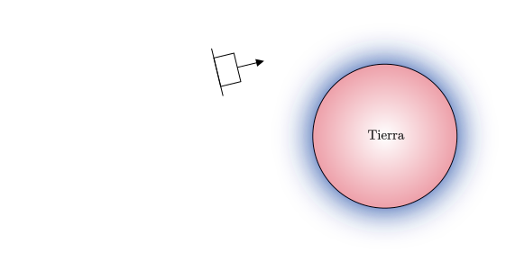
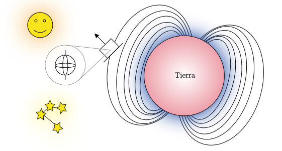
Para el caso de satélites, los sensores más comunes para la determinación de orientación son:
- Sensores solares
- Sensores de horizonte
- Cámaras de estrellas (Seguidor de estrellas-)
- Magnetómetros
- Giroscopios (IMU)
Otros sensores que pueden ser utilizados son:
- Acelerómetros (IMU)
- Sensores GPS
Pero su implementación requiere consideraciones adicionales sobre el satélite y la órbita.
Sensor solar
- El sensor solar determina la dirección del Sol con respecto al centro de masa del satélite.
- Es una referencia absoluta de orientación, ya que la posición del Sol en el espacio inercial se conoce con gran precisión y puede tomarse como referencia.
- Opera midiendo la intensidad de la radiación solar incidente sobre una o más superficies sensibles (fotodiodos o celdas solares).
- Existen de dos tipos:
- Sensor solar grueso (CSS): baja resolución (1–5°).
- Sensor solar fino (FSS): alta resolución (0.01–0.1°).
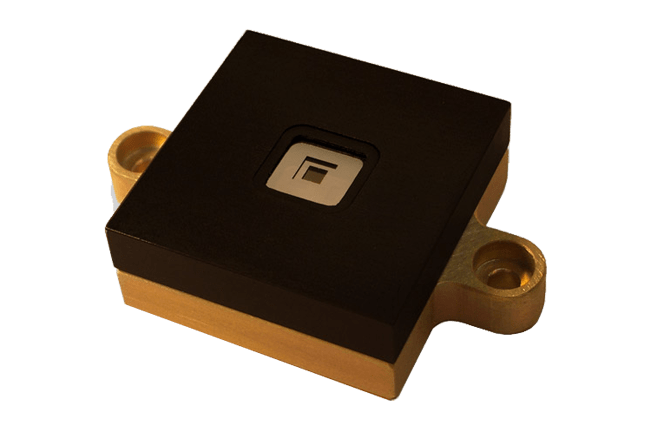
Sensor solar
- Magnitud física: irradiancia solar.
- Fenómeno: incidencia de radiación electromagnética proveniente del Sol.
- Variable derivada: dirección del vector que apunta al Sol desde el centro de masa del satélite en coordenadas del cuerpo:
\[ \:^b\hat{r}_{\odot} = \begin{bmatrix} r_x \\ r_y \\ r_z \end{bmatrix} \] donde \(\:^b\hat{r}_{\odot}\) es el vector unitario que apunta desde el centro de masa del satélite hacia el Sol, expresado en el marco del cuerpo \(b\).
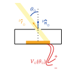
Constitución física
- Superficie sensible (celda) (1 o varios por módulo).
- Diafragma o máscara para limitar el campo visual (FOV).
- Electrónica de acondicionamiento (corriente–voltaje).
- Conversor A/D y salida digital.
Modelo matemático
\[ V_\odot(\theta_\odot) = k_\odot\,E_\odot \,\max(0,\, \cos(\theta_\odot)). \]
y
\[ \cos(\theta_\odot) = \:^b\hat{n}_\odot ^\top \:^b\hat{r}_{\odot} \]
donde \(V_\odot\) es el voltaje de salida del sensor, \(k_\odot\) es una constante de sensibilidad en \(V m^2/W\) , \(E_\odot=1361 \text{W}/\text{m}^2\) es la irradiancia solar y \(\:^b\hat{n}_\odot\) es el vector unitario normal a la superficie sensible del sensor.
- Por sí solo, un sensor solar con una única celda no es capaz de determinar la dirección del Sol en tres dimensiones, ya que sólo mide la proyección del vector solar sobre la normal de la celda.
- El conjunto de vectores \(\ls{b}\hat{r}_\odot\) para un único ángulo \(\theta_\odot\) forma un cono alrededor de la normal de la celda \((\cos(\theta_\odot) = \:^b\hat{n}_\odot ^\top \:^b\hat{r}_{\odot} )\).
- Una solución común es colocar en la superficie del satélite sensores solares en diferentes posiciones y orientaciones, de modo que al menos tres de ellos puedan detectar la radiación solar en cualquier orientación del satélite. Geométricamente, esto se puede interpretar como la intersección tres conos, lo cual define un punto único en el espacio.
En este caso, el procedimiento para determinar la dirección del Sol es el siguiente. Considere los voltajes generados por los tras sensores solares:
\[ \begin{split} V_{\odot_1} & = k_\odot\,E_\odot \,\max(0,\, \:^b\hat{n}_{\odot_1} ^\top \:^b\hat{r}_{\odot} ) \\ V_{\odot_2} & = k_\odot\,E_\odot \,\max(0,\, \:^b\hat{n}_{\odot_2} ^\top \:^b\hat{r}_{\odot} ) \\ V_{\odot_3} & = k_\odot\,E_\odot \,\max(0,\, \:^b\hat{n}_{\odot_3} ^\top \:^b\hat{r}_{\odot} ) \end{split} \]
En el caso de que los tres sensores detecten la radiación solar, se puede escribir el siguiente sistema de ecuaciones:
\[ V_\odot=\begin{bmatrix} V_{\odot_1} \\ V_{\odot_2} \\ V_{\odot_3} \end{bmatrix} = k_\odot\,E_\odot \, N \:^b\hat{r}_{\odot} \]
donde \[ N = \begin{bmatrix} \:^b\hat{n}_{\odot_1} ^\top\\ \:^b\hat{n}_{\odot_2} ^\top\\ \:^b\hat{n}_{\odot_3} ^\top \end{bmatrix} \]
Por diseño podemos asegurar que la matriz \(N\) es invertible, por lo que la dirección del Sol se puede calcular como:
\[ \:^b\hat{r}_{\odot} = \frac{N^{-1}}{k_\odot\,E_\odot} V_\odot \]
Ejemplo: Considera que se tienen tres sensores solares con \(k_\odot\,E_\odot = 1\), los cuales tienen las siguientes orientaciones y voltajes medidos:
\[ {}^{b}\hat{n}_1 = \begin{bmatrix} 0.707 \\ 0.707 \\ 0 \end{bmatrix}, \quad {}^{b}\hat{n}_2 = \begin{bmatrix} 0 \\ 0.707 \\ 0.707 \end{bmatrix}, \quad {}^{b}\hat{n}_3 = \begin{bmatrix} 0.707 \\ 0 \\ 0.707 \end{bmatrix} \]
\[ V_\odot=\begin{bmatrix} V_{\odot 1} \\ V_{\odot 2} \\ V_{\odot 3} \end{bmatrix} = \begin{bmatrix} 0.849 \\ 0.599 \\ 0.881 \end{bmatrix} \]
\[ N = \begin{bmatrix} 0.707 & 0.707 & 0 \\ 0 & 0.707 & 0.707 \\ 0.707 & 0 & 0.707 \end{bmatrix} \]
\[ N^{-1} = \begin{bmatrix} 0.707 & -0.707 & 0.707 \\ 0.707 & 0.707 & -0.707 \\ -0.707 & 0.707 & 0.707 \end{bmatrix} \]
Entonces, la dirección del Sol se calcula como:
\[ {}^{b}\hat{r}_\odot = \frac{1}{k_\odot\,E_\odot} N^{-1}V_\odot \approx \begin{bmatrix} 0.8 \\ 0.4 \\ 0.447 \end{bmatrix} \]
- Un enforque más utilizado (pero más caro) es emplear sensores solares con múltiples celdas dispuestas en una configuración específica (por ejemplo, en forma de cruz).
- Esto permite estimar la dirección del Sol con un solo sensor, ya que cada celda mide la proyección del vector solar en suficientes direcciones.
- En este caso, el procedimiento para determinar la dirección del Sol es el siguiente. Considere un sensor solar con cuatro celdas dispuestas en forma de cruz, cuyos vectores normales cuyos voltajes se muestran en la Figura. \[ \begin{split} r_x= & \frac{V_{R}-V_{L}}{V_{R}+V_{L}}, \qquad r_y= \frac{V_{U}-V_{D}}{V_{U}+V_{D}}, \\ ^{b}\hat{r}_\odot= & \frac{1}{\sqrt{r_x^2+r_y^2+1}}\begin{bmatrix} r_x \\ r_y \\ 1 \end{bmatrix} \end{split} \]
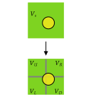
- Para obtener la dirección del Sol en el marco inercial, es necesario conocer la posición del Sol en dicho marco.
- Esto se puede lograr mediante efemérides solares o modelos astronómicos que proporcionan la posición del Sol en función del tiempo.
- Una vez que se tiene la posición del Sol en el marco inercial, se puede comparar con la dirección medida por el sensor solar para determinar la orientación del satélite.
\[ \:^i\hat{r}_{\odot} = \frac{\:^i\vec{r}_{s} - \:^i\vec{r}_{c}}{\|\:^i\vec{r}_{s} - \:^i\vec{r}_{c}\|} \]
donde \(\:^i\vec{r}_{s}\) es la posición del Sol desde el origen del marco de referencia inercia representado en el marco inercial y \(\:^i\vec{r}_{c}\) es la posición del centro de masa del satélite en el mismo marco.
Algunas consideraciones importantes sobre los sensores solares:
- Requieren una línea de visión directa al Sol para funcionar correctamente. Es decir, dependiendo de la tecnología utilizada, la irradiación debe ser detectada por un conjunto mínimo de sensores para no perder la referencia.
- Existen sensores con más de cuatro celdas, lo cual mejora la precisión y robustez del sistema. Eso da pie al concepto de FSS.
- Algunas condiciones particulares, como la presencia de eclipses o captación del albedo, puede afectar la precisión o disponibilidad de la medición.
- La calibración del sensor es crucial para asegurar mediciones precisas. Esto incluye la calibración de la sensibilidad de las celdas y la alineación de los sensores en el satélite, así como el voltaje de offset de las celdas.
- De igual forma, estos sensores tienen perdidas en su linealidad cuando la incidencia de la radiación solar está muy cerca del límite del campo visual (FOV).
Sensor de horizonte
- Un sensor de horizonte determina la dirección del centro de la Tierra con respecto al centro de masa del satélite.
- Es una referencia absoluta de orientación, ya que la posición del centro terrestre en el marco inercial se conoce con gran precisión (para nuestro caso, es el origen del marco inercial).
- Opera detectando el contraste de radiancia entre la Tierra (fuente infrarroja intensa) y el espacio profundo (radiancia casi nula), permitiendo identificar el borde del horizonte terrestre.
- Existen dos tipos principales:
Sensor de horizonte infrarrojo (IR): mide la radiancia térmica emitida por la Tierra; es el más común y confiable en órbitas bajas (LEO). Precisión típica: \(0.05^{\circ}\) a \(0.2^{\circ}\).
Sensor de horizonte óptico: detecta el contraste en luz visible; útil para órbitas altas o satélites alejados del entorno terrestre. Precisión típica: \(0.1^{\circ}\) a \(1^{\circ}\).
- La variable de salida es la dirección del vector unitario hacia el centro de la Tierra:
\[ \:^b\hat{r}_\oplus = \begin{bmatrix} r_x \\ r_y \\ r_z \end{bmatrix} \]
Constitución física
- Sensor óptico o infrarrojo con campo de visión (FOV) limitado (\(80^{\circ}\) para infrarrojo y \(20^{\circ}\) para ópticos).
- Sistema óptico (lentes o espejos) que proyecta la imagen terrestre sobre un detector.
- Electrónica de acondicionamiento.
Principio de funcionamiento
- La Tierra emite radiación IR mientras el espacio profundo presenta radiancia casi nula.
- El sensor detecta el horizonte terrestre al realizar un análisis sobre los pixeles que conforman la imagen captada y considerando la altitud del satélite.
- Esto nos entrega un conjunto de vectores unitarios \(\hat{u}_i\) que apuntan al horizonte
- Este conjunto de vectores se procesan para obtener un vector \(\:^b\hat{r}_\oplus\) hacia el centro de la Tierra.
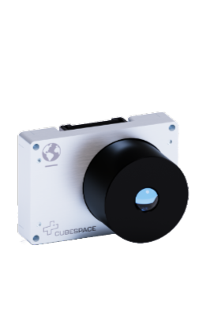
Considere el conjunto de \(n\) vectores unitarios \(\hat{u}_i\) que apuntan al horizonte terrestre. Todos estos vectores satisfacen la siguiente relación:
\[ \hat{u}_i ^\top \:^b\hat{r}_\oplus= \cos(\beta) \]
donde \(\beta\) es el ángulo entre el vector hacia el centro de la Tierra y los vectores hacia el horizonte.
\[ \beta=\pi/2 - \alpha, \qquad \alpha = \arcsin\left(\frac{r_E}{r_E + h}\right)=\arcsin\left(\frac{r_E}{\|\vec{r}_c\|}\right) \]
Podemos agrupar estas ecuaciones en forma matricial:
\[ U= \begin{bmatrix} \hat{u}_1^\top \\ \hat{u}_2^\top \\ \vdots \\ \hat{u}_n^\top \end{bmatrix} \Rightarrow U\:^b\hat{r}_\oplus = \begin{bmatrix} \cos(\beta) \\ \cos(\beta) \\ \vdots \\ \cos(\beta) \end{bmatrix} =\vec{C}_\beta. \]
Utilizando la pseudoinversa de Moore-Penrose, obtenemos
\[ \begin{split} \:^b\hat{r}_\oplus & = (U^\top U)^{-1} U^\top \vec{C}_\beta=U^{\dagger} \vec{C}_\beta \end{split} \]
Para ello, es necesario que el conjunto de vectores \(\hat{u}_i\) sea suficientemente diverso para garantizar que la matriz \(U\) tenga rango completo (es decir, rango 3), lo cual se logra al detectar el horizonte en al menos 3 diferentes direcciones.
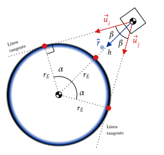
Ejemplo:
\[ \beta = 30^\circ \quad \Rightarrow \quad \cos(\beta) = 0.866 \]
Vectores de horizonte:
\[ \hat{u}_1 = \begin{bmatrix} 0.5 \\ 0 \\ 0.866 \end{bmatrix}, \quad \hat{u}_2 = \begin{bmatrix} 0 \\ 0.5 \\ 0.866 \end{bmatrix}, \quad \hat{u}_3 = \begin{bmatrix} -0.5 \\ 0 \\ 0.866 \end{bmatrix} \]
\[ U = \begin{bmatrix} 0.5 & 0 & 0.866 \\ 0 & 0.5 & 0.866 \\ -0.5 & 0 & 0.866 \end{bmatrix}, \quad \vec{C}_\beta = \begin{bmatrix} 0.866 \\ 0.866 \\ 0.866 \end{bmatrix} \]
\[ ^b\hat{r}_\oplus = (U^\top U)^{-1} U^\top \vec{C}_\beta \]
\[ U^\top U = \begin{bmatrix} 0.5 & 0 & 0 \\ 0 & 0.25 & 0.433 \\ 0 & 0.433 & 2.25 \end{bmatrix} \]
\[ U^\top \vec{C}_\beta = \begin{bmatrix} 0 \\ 0.433 \\ 2.25 \end{bmatrix} \]
\[ ^b\hat{r}_\oplus= \begin{bmatrix} 0.5 & 0 & 0 \\ 0 & 0.25 & 0.433 \\ 0 & 0.433 & 2.25 \end{bmatrix}^{-1}\begin{bmatrix} 0 \\ 0.433 \\ 2.25 \end{bmatrix} \approx \begin{bmatrix} 0 \\ 0 \\ 1 \end{bmatrix} \]
Algunas consideraciones sobre los sensores de horizonte:
- Requieren que la Tierra esté dentro del campo visual; no operan en eclipses ni en órbitas muy altas.
- Los sensores infrarrojos ofrecen mejor disponibilidad en las órbitas típicas.
- La precisión depende de la resolución angular del detector y del procesamiento del borde del horizonte.
- Algunas fuentes de error o ruido comunes incluyen nubosidad, variación de radiancia, reflejos solares o distorsión óptica.
- En LEO, proporcionan una referencia muy estable para orientación nadir, complementando sensores solares y magnetómetros debido a su FOV.
Seguidor de estrellas
- Una seguidor de estrellas determina la orientación del satélite al identificar las posiciones de las estrellas visibles en su FOV.
- Es la referencia absoluta más precisa disponible para la orientación de un vehículo espacial.
- Opera capturando imágenes de la bóveda celeste y comparando las posiciones aparentes de las estrellas con un catálogo estelar almacenado.
- Precisión típica de \(1\) a \(10\) arcsec (\(0.0003^{\circ}\) a \(0.003^{\circ}\)).
- También conocido como cámara de estrellas.
- La variable de salida es un conjunto de vectores \(n\) unitarios \(^{b}\hat{r}_{\bigstar_j}\) que apuntan los centroides de diferentes estrellas desde el centro de masa del satélite.
\[ \left\{ ^{b}\hat{r}_{\bigstar_1},^{b}\hat{r}_{\bigstar_2},\dots, ^{b}\hat{r}_{\bigstar_{n-1}},^{b}\hat{r}_{\bigstar_n} \right\} \]
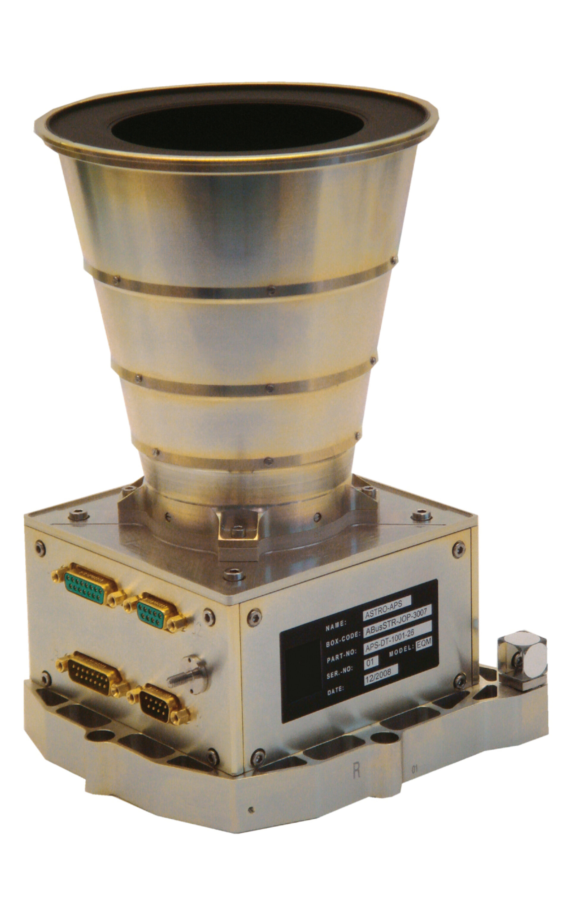
Constitución física
- Sistema óptico de alta calidad (lentes o telescopio pequeño).
- Filtros para reducir luz parásita (e.g. luz solar, albedo).
- Procesador interno para reconocimiento estelar y cálculo de orientación.
Principio de funcionamiento
- Captura una imagen de la bóveda celeste en su FOV.
- Detecta los centroides de las estrellas visibles en la imagen.
- Calcula los vectores de dirección de los centroides en el marco del cuerpo \(\:^b\hat{r}_{\bigstar_j}\).
- Los compara con los vectores conocidos del catálogo de estrellas \(\:^i\hat{r}_{\bigstar_i}\).
Rendimiento y operación
- Tasa de actualización: \(1\)–\(10\) Hz dependiendo del FOV y exposición.
- FOV: comúnmente \(5^{\circ}\)–\(20^{\circ}\).
- Sensibilidad: comúnmente estrellas de magnitud \(>5\).
Algunas consideraciones sobre las cámaras de estrellas:
- Proporcionan la referencia absoluta más precisa de orientación.
- Su desempeño depende de distribución de las estrellas en el FOV.
- Requieren procesamiento intensivo y algoritmos robustos de identificación.
- Sufre de los siguientes problemas:
- Movimiento propio de las estrellas (muy lento, pero puede afectar la identificación).
- Paralaje (desplazamiento aparente de las estrellas debido a la posición del satélite).
- Aberración (desplazamiento aparente de las estrellas debido a la velocidad del satélite).
- En órbitas LEO, el albedo pueden reducir su desempeño.
- Debido a su bajo FOV, se emplean junto con sensores solares y magnetómetros para asegurar redundancia y operación continua.
Catálogo de estrellas
Magnetómetro
- Un magnetómetro mide el vector de campo magnético local (comúnmente en Gauss).
- En el caso del ADCS, permite medir el vector magnético terrestre en coordenadas del cuerpo.
- Es una referencia absoluta de orientación, ya que el campo magnético terrestre se conoce en el marco inercial a través de modelos.
- Existen varios tipos de magnetómetros. Para el caso de satélites pequeños, los más comunes son los magnetómetros MEMS.
- La variable de salida es el vector de campo magnético en el marco del cuerpo:
\[ ^b\hat{B} = \begin{bmatrix} B_x \\ B_y \\ B_z \end{bmatrix} \]
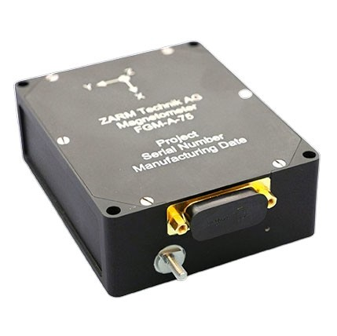
Constitución física (MEMS)
- Bobina conductora integrada sobre una masa móvil, inducida con una corriente conocida.
- Placa fija inferior para detección capacitiva del desplazamiento.
- Amplificadores y convertidor analógico-digital.
Principio de funcionamiento
- Se genera la fuerza de Lorentz:
\[ \vec{F} =\vec{I} \times \:^b\vec{B} \]
- Esta fuerza genera un par sobre la masa móvil, lo cual genera un cambio de capacitancia \[\Delta C\].
- El cambio de capacitancia es proporcional a la componente del campo magnético medida:
\[ \Delta C \propto I\,|B| \]
- Las tres componentes se obtienen mediante tres sensores ortogonales.
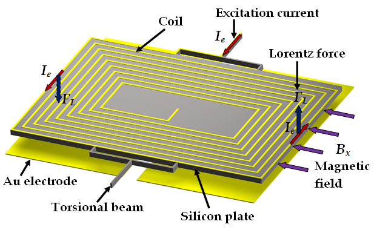
Medición
En la práctica, el sensor sufre distorciones que afectan la medición:
\[ ^b\breve{B} = A^{-1}\: ^b\vec{B} + \vec{b} + \vec{\xi} \]
donde \(A\) es la matriz de correlación entre ejes, \(\vec{b}\) es un vector de sesgo, \(\vec{\xi}\) es el ruido y \(^b\breve{B}\) es el vector de campo crudo medido por el sensor.
Tipos de distorsión
- Núcleo duro: causada por materiales permanentemente magnetizados (imanes, motores, magnepares). Esto provoca el sesgo \(\vec{b}_\text{bias}\).
- Núcleo suave: causada por materiales ferromagnéticos que distorsionan el flujo del campo sin generar su propio campo. Esto provoca una deformación del vector medido, lo cual se represeta mediante la matriz de correlación \(A\).
La calibración del magnetómetro busca estimar y compensar estos efectos para mejorar la precisión de la medición.
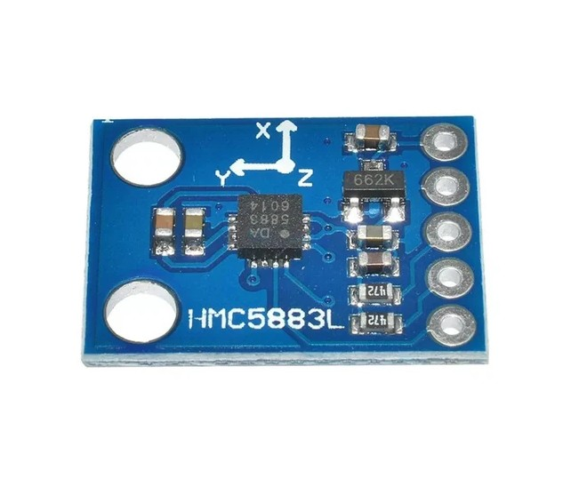
Calibración:
- Recolección de datos: girar el magnetómetro en varias orientaciones para obtener múltiples mediciones del campo magnético. Por ejemplo, en teléfonos móviles, esto se hace moviendo el sensor en forma de 8.
- Estimación del sesgo: calcular el centroide de las mediciones para estimar el sesgo \(\vec{b}\).
- Estimación de la matriz de correlación: ajustar una elipse a las mediciones corregidas por el sesgo para estimar la matriz \(A\). Con ello se busca que las mediciones formen una esfera perfecta.
- Compensación: aplicar la corrección a las mediciones futuras usando los parámetros estimados:
\[ ^b\vec{B} = A(\: ^b \breve{B} - \vec{b}) \]
Un indicador clave para evaluar la calidad de la calibración es que la norma del vector medido después de la calibración debe ser constante y cercana a la magnitud del campo magnético terrestre en la posición local. Existen varias herramientas para esto, como lo es magcal en MATLAB.
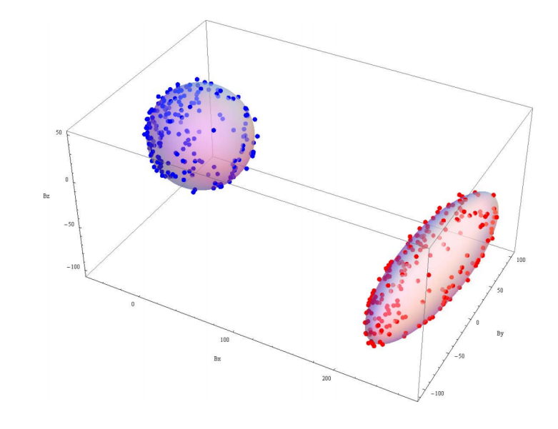
¿Cómo se obtienen \(A\) y \(\vec{b}\)?
Partiendo del modelo de medición
\[ ^b\vec{B} = A\: (^b\breve{B} - \vec{b}) \]
La norma del vector de campo magnético debe ser constante e igual a la magnitud del campo magnético terrestre \(B_0\) en la posición local.
\[ \|\,^b\vec{B}\| = B_0 \]
De esto sabemos que
\[ \begin{split} B_0^2 & = \:^{b}B^{\top} \:^{b}B = (A\: (^b\breve{B} - \vec{b}))^\top (A\: (^b\breve{B} - \vec{b})) = (^b\breve{B} - \vec{b})^\top A^\top A (^b\breve{B} - \vec{b}) = (^b\breve{B} - \vec{b})^\top M (^b\breve{B} - \vec{b}) \end{split} \]
Esta última ecuación es una forma cuadrática que representa una elipse en el espacio de las mediciones crudas, donde \(M = A^\top A \succeq 0\) es una matriz simétrica positiva semi definida que describe la forma de la elipse, y \(\vec{b}\) es el centro de la elipse. Con ello, podemos plantear el siguiente problema de optimización para estimar \(M\) y \(\vec{b}\):
\[ \begin{split} \min_{M, \vec{b}, B_0} & \sum_{i=1}^N \left( (^b\breve{B}_i - \vec{b})^\top M (^b\breve{B}_i - \vec{b}) - B_0^2 \right) \\ \text{s.a. } & M \succeq 0 \end{split} \]
Esto puede resolverse utilizando técnicas de optimización convexa, como la programación semidefinida (SDP) o métodos algebraicos como la descomposición de valores singulares (SVD).
Procesamiento y obtención del vector de referencia
En el marco del cuerpo:
\[ ^b\vec{B} = \:^bR_i\,^i\vec{B} \]
donde \(^i\hat{B}\) se obtiene del modelo geomagnético a partir de la posición orbital y el tiempo:
\[ ^i\vec{B} = f_\text{MG}(\,^i\vec{r}_c,\, t) \]
Los modelos más utilizados son
Con ello, los valores medidos se normalizan:
\[ ^b\hat{B} = \frac{^b\vec{B}}{\|\,^b\vec{B}\|} \]
El vector inercial correspondiente se calcula a partir del modelo geomagnético:
\[ ^i\hat{B} = \frac{^i\vec{B}}{\|\,^i\vec{B}\|} \]
Salida de los modelos geomagnéticos
- \(X\): componente norte geográfico.
- \(Y\): componente este.
- \(Z\): componente vertical hacia abajo.
- \(F = \|B\|\): intensidad total del campo
- \(H = \sqrt{X^2 + Y^2}\): componente horizontal
- \(D = \tan^{-1}(Y/X)\): Declinación: ángulo entre el norte geográfico y la proyección horizontal de \(B\)
- \(I = \tan^{-1}(Z/H)\): Inclinación: ángulo entre \(B\) y el plano horizontal (positivo hacia abajo)
Algunas consideraciones adicionales:
- La mayoría de sensores tienen un rango de medición suficiente para captar el campo magnético terrestre.
- Son los sensores más utilizados para orientación y control en LEO, debido a su bajo costo.
- Pueden sufrir interferencias magnéticas internas debido a los elementos del satélite que generen campo magnético.
- Pueden ser útiles para control de orientación mediante el uso de magnetopares.
Giroscopio
- El giroscopio mide la velocidad angular de un cuerpo con respecto a una referencia inercial. Por lo mismo, también se le clasifica como una unidad de medición inercial (IMU, por sus siglas en inglés).
- Se considera como un sensor relativo, ya que mide cambios en la orientación a lo largo del tiempo.
- La variable de salida es el vector de velocidad angular del marco de referencia del cuerpo con respecto al marco inercial, representado en el marco del cuerpo:
\[ ^b\vec{\omega}_{i,b} = \begin{bmatrix} \omega_x \\ \omega_y \\ \omega_z \end{bmatrix} \]
Tipos principales:
- Mecánicos (satélites grandes, alta precisión).
- Optoelectrónicos.
- MEMS (satélites pequeños).
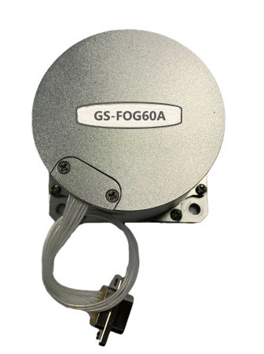
Constitución física (MEMS)
- Microestructura de silicio con una masa suspendida por microvigas elásticas.
- Actuadores electrostáticos generan una vibración controlada a frecuencia conocida.
- Sensores capacitivos detectan los desplazamientos laterales inducidos por la rotación.
Principio de funcionamiento
- Se genera una fuerza de Coriolis:
\[ \vec{F}_C = 2\,m\,(\vec{v} \times \vec{\omega}) \]
donde \(\vec{v}\) es la velocidad de vibración de la masa y \(\vec{\omega}\) es la velocidad angular del cuerpo. - El cambio de capacitancia es proporcional a la velocidad angular.
\[ \Delta C \propto \omega \]
Las tres componentes de la velocidad angular se obtienen mediante tres estructuras ortogonales.
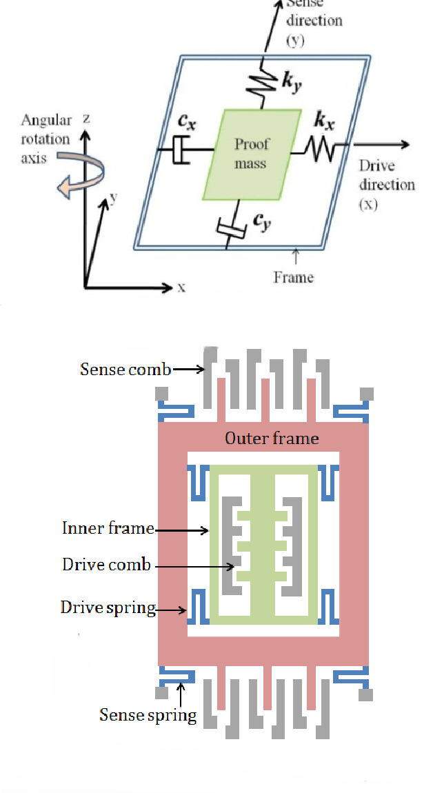
Medición
\[ ^b\breve{\omega}_{i,b} = \ls{b}\vec{\omega}_{i,b} + \vec{b}_g + \vec{\xi}_g \]
donde:
- \(^b\breve{\vec{\omega}}\): medición cruda,
- \(\vec{b}_g\): sesgo del giroscopio,
- \(\vec{\xi}_g\): ruido aleatorio.
La principal complejidad de un giroscopio radica en que el sesgo \(\vec{b}_g\) puede variar con el tiempo. A este fenómeno se le conoce como drift, y es provocado por factores como temperatura, vibraciones y envejecimiento del sensor. Esto puede generar errores acumulativos en la estimación de la orientación si no se compensa adecuadamente.
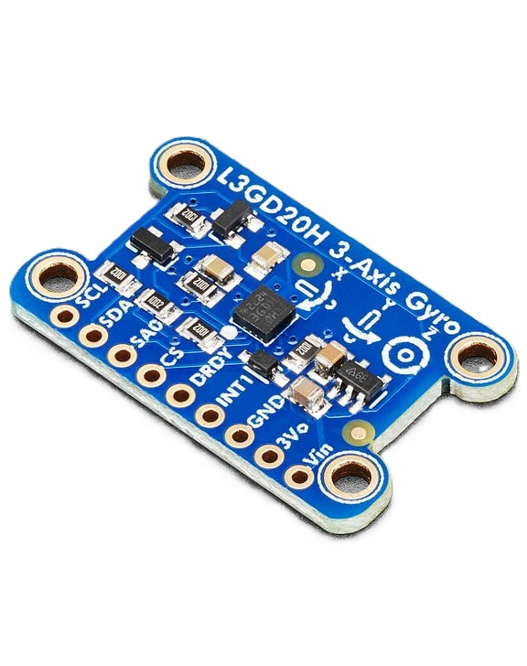
Una forma de modelar la evolución del sesgo es mediante un proceso estocástico:
\[ \dot{\vec{b}}_g\td = \vec{\xi}_b\td \]
donde \(\vec{\xi}_b\td\) es ruido blanco gaussiano. A este enfoque se le conoce como modelo de caminata aleatoria del sesgo (random walk).
Calibración estática
- Colocar el sensor en reposo y realizar el siguiente procedimiento por cada eje.
\[ \begin{align*} b & \approx \frac{1}{n} \sum_{i=1}^{n} \breve{\omega}_i \\ \bar{\omega} & = \breve{\omega} - b \end{align*} \]
donde \(n\) es el número de muestras tomadas en reposo. Este sensgo puede ser utilizado como condición inicial para la determinación del sesgo dinámico en vuelo.
Compensación en vuelo
- Para estimar el sesgo dinámico \(\vec{b}_g\td\), podemos hacer uso de un observador de estados utilizando como modelo el modelo de caminata aleatoria.
Algunas consideraciones adicionales:
- Los giroscopios MEMS son económicos y compactos, pero tienen mayor ruido y sesgo que los giroscopios mecánicos u ópticos.
- El ruido y sesgo del giroscopio se acumulan con el tiempo, lo que puede llevar a errores significativos en la orientación si no se corrige.
- Requieren calibración periódica para minimizar el impacto del sesgo.
- Debido a la relación matemática entre la posición angular y la velocidad angular, se podría pensar que los giroscopios son suficientes para determinar la orientación. Sin embargo, debido a la acumulación de errores, es necesario combinarlos con sensores absolutos en un filtro de estimación para obtener una orientación precisa y estable a lo largo del tiempo.
- Como se verá mas adelante, la medición de los giroscopios no se utiliza directamente para la determinación de orientación, sino que se emplea en conjunto con otros sensores para mejorar la calidad de la determinación.
Comparativa
| Sensor | Precisión | Descripción |
|---|---|---|
| Magnetómetros | \(1 [^{\circ}] - 5000 [km]\), $ 5 [^{\circ}] - 200 [km]$ | Altura relativa al nivel del mar. Medición del vector de campo magnético. No están recomendados para alturas mayores a \(6000 [km]\) |
| Sensor de horizonte | $0.05 [^{\circ}] - 2 [^{\circ}] $ | Sensores infrarrojos que detectan la diferencia de temperatura entre el cuerpo celeste y el espacio profundo. |
| Cámara de estrellas | \(3\times 10^{-4} [^{\circ}] - 3\times 10^{-3} [^{\circ}]\) | Detecta el patrón de un conjunto de estrellas y lo compara con una base de datos. Costosos. FOV limitado. |
| Sensor solar | \(0.01[^{\circ}]-5[^{\circ}]\) | Detectan el ángulo de incidencia de la radiación solar mediante fotoceldas. Bajo costo. Necesario un conjunto mínimo irradiado para su funcionamiento. |
| Giroscopios | Error de integración acumulativo. Requieren una calibración constante debido al sesgo dinámico. |
- En este punto, hemos visto cómo obtener mediciones de vectores de referencia en el marco del cuerpo (\(^b\hat{v}_j\)) y en el marco inercial (\(^i\hat{v}_j\)) mediante sensores absolutos.
- Sensor solar: \(\:^b\hat{r}_{\odot}\) y \(\:^i\hat{r}_{\odot}\)\(\:^i\hat{s}\) (vector que apunta al Sol).
- Sensor de horizonte: \(\:^b\hat{r}_\oplus\) y \(\:^i\hat{r}_\oplus\) (vector que apunta al centro de la Tierra).
- Seguidor de estrellas: \(\:^b\hat{r}_{\bigstar,k}\) y \(\:^i\hat{r}_{\bigstar,k}\) (centroides de las estrellas).
- Magnetómetro: \(\:^b\hat{B}\) y \(\:^i\hat{B}\) (vector de campo magnético terrestre).
- Ahora la pregunta es: ¿cómo utilizamos estos vectores para determinar la orientación del satélite?
- Retomando el problema de determinación, se busca la matriz de rotación o el cuaternión que mejor alinee ambos conjuntos de vectores.
- Existen dos enfoques principales:
- Algoritmos estáticos: determinan la orientación instantánea a partir de observaciones vectoriales en un instante dado .
- Algoritmos dinámicos: estiman la orientación a lo largo del tiempo mediante un modelo dinámico y correcciones basadas en nuevas mediciones.
- A continuación, se describen los algoritmos más comunes en cada categoría.
Determinación
Algoritmos de determinación estáticos
▸ Algoritmos de determinación estáticos
Algoritmos de determinación estáticos
- Estiman la orientación instantánea utilizando mediciones disponibles en un único instante.
- No requieren propagar estados previos ni modelar la dinámica rotacional del sistema.
- Emplean pares de vectores conocidos en marcos inercial y cuerpo para inferir la rotación entre ambos sistemas de referencia.
- Su desempeño depende de la precisión de los sensores y de la geometría entre los vectores observados.
- Son comúnmente utilizados para inicialización o como parte de esquemas de estimación más complejos.
TRIAD
▸▸ TRIAD
Idea general
El método TRIAD (TRI-Axial Attitude Determination) es un algoritmo geométrico que estima la orientación del satélite utilizando únicamente dos pares de vectores conocidos:
\[ \{\,^i\hat{v}_1,\, ^b\hat{v}_1\,\}, \quad \{\,^i\hat{v}_2,\, ^b\hat{v}_2\,\}. \]
A partir de ellos se construyen dos bases ortonormales (tríadas), una en el marco inercial y otra en el marco del cuerpo.
- Las tríadas son formadas por los vectores originales y sus productos cruzados, de forma que se garantice ortogonalidad.
- La matriz de rotación estimada \(^{b}\hat{R}_i\) se obtiene al alinear la tríada del cuerpo con la tríada inercial.
Construcción de las tríadas
Dado el conocimiento de dos vectores unitarios \(\,^i\hat{v}_1\), \(\,^i\hat{v}_2\) en el marco inercial y sus mediciones \(\,^b\hat{v}_1\), \(\,^b\hat{v}_2\) en el marco del cuerpo, se construyen las siguientes bases ortonormales:
\[ \begin{aligned} ^i\hat{t}_1 & = \,^i\hat{v}_1, & \quad ^b\hat{t}_1 & = \,^b\hat{v}_1, \\[4pt] ^i\hat{t}_2 & = \frac{\,^i\hat{v}_1 \times \,^i\hat{v}_2}{\|\,^i\hat{v}_1 \times \,^i\hat{v}_2\|}, & \quad ^b\hat{t}_2 & = \frac{\,^b\hat{v}_1 \times \,^b\hat{v}_2}{\|\,^b\hat{v}_1 \times \,^b\hat{v}_2\|}, \\[4pt] ^i\hat{t}_3 & = \,^i\hat{t}_1 \times \,^i\hat{t}_2, & \quad ^b\hat{t}_3 & = \,^b\hat{t}_1 \times \,^b\hat{t}_2. \end{aligned} \]
- Cada conjunto \(\{\,^i\hat{t}_1,\,^i\hat{t}_2,\,^i\hat{t}_3\}\) y \(\{\,^b\hat{t}_1,\,^b\hat{t}_2,\,^b\hat{t}_3\}\) constituye una base ortonormal.
- La relación entre ambas bases está dada por la matriz de rotación buscada.
\[ \begin{bmatrix} ^b\hat{t}_1 & ^b\hat{t}_2 & ^b\hat{t}_3 \end{bmatrix} = \:^b\hat{R}_i \begin{bmatrix} ^i\hat{t}_1 & ^i\hat{t}_2 & ^i\hat{t}_3 \end{bmatrix}. \]
Multiplicando ambos lados por la transpuesta de la base inercial:
\[ \begin{bmatrix} ^b\hat{t}_1 & ^b\hat{t}_2 & ^b\hat{t}_3 \end{bmatrix}\begin{bmatrix} ^i\hat{t}_1 & ^i\hat{t}_2 & ^i\hat{t}_3 \end{bmatrix}^{\top} = \:^b\hat{R}_i \begin{bmatrix} ^i\hat{t}_1 & ^i\hat{t}_2 & ^i\hat{t}_3 \end{bmatrix}\begin{bmatrix} ^i\hat{t}_1 & ^i\hat{t}_2 & ^i\hat{t}_3 \end{bmatrix}^{\top}. \]
Dado que la base inercial es ortonormal, se cumple que:
\[ \begin{bmatrix} ^i\hat{t}_1 & ^i\hat{t}_2 & ^i\hat{t}_3 \end{bmatrix}\begin{bmatrix} ^i\hat{t}_1 & ^i\hat{t}_2 & ^i\hat{t}_3 \end{bmatrix}^{\top} = \mathbb{I}. \]
Por la matriz de rotación estimada \(\:^b\hat{R}_i\) se obtiene mediante:
\[ \:^b\hat{R}_i = \begin{bmatrix} ^b\hat{t}_1 & ^b\hat{t}_2 & ^b\hat{t}_3 \end{bmatrix} \begin{bmatrix} ^i\hat{t}_1 & ^i\hat{t}_2 & ^i\hat{t}_3 \end{bmatrix}^\top. \]
Ventajas y limitaciones
- [\(+\)] Implementación simple y bajo costo computacional.
- [\(+\)] Adecuado para inicialización de algoritmos más sofisticados.
- [\(-\)] Bastante sensible al ruido en las mediciones en comparación a otros algoritmos.
- [\(-\)] Requiere exactamente dos vectores de referencia; no aprovecha información adicional si está disponible ni permite ponderar la influecia de cada uno de los vectores.
Algoritmo 1
Entrada: \(\:^i\hat{v}_1\td,\:^i\hat{v}_2\td,\:^b\hat{v}_1\td,\:^b\hat{v}_2\td\)
Salida: \(\:^b\hat{R}_i\)
Construir la tríada inercial:
\[ \:^i\hat{t}_1=\:^i\hat{v}_1,\qquad \:^i\hat{t}_2= \frac{\:^i\hat{v}_1\times\:^i\hat{v}_2} {\left\|\:^i\hat{v}_1\times\:^i\hat{v}_2\right\|}, \qquad \:^i\hat{t}_3=\:^i\hat{t}_1\times\:^i\hat{t}_2 \]
Construir la tríada del cuerpo:
\[ \:^b\hat{t}_1=\:^b\hat{v}_1,\qquad \:^b\hat{t}_2= \frac{\:^b\hat{v}_1\times\:^b\hat{v}_2} {\left\|\:^b\hat{v}_1\times\:^b\hat{v}_2\right\|}, \qquad \:^b\hat{t}_3=\:^b\hat{t}_1\times\:^b\hat{t}_2 \]
Calcular la matriz de orientación:
\[ \:^b\hat{R}_i= \begin{bmatrix} \:^b\hat{t}_1 & \:^b\hat{t}_2 & \:^b\hat{t}_3 \end{bmatrix} \begin{bmatrix} \:^i\hat{t}_1 & \:^i\hat{t}_2 & \:^i\hat{t}_3 \end{bmatrix}^{\top} \]
Ejemplo:
Considere la triada en el marco inercial:
\[ ^i\hat{r}_\oplus=^i\hat{t}_1= \begin{bmatrix} 1 \\0\\0 \end{bmatrix}, \quad ^i\hat{r}_\odot=^i\hat{t}_2= \frac{1}{\sqrt{2}} \begin{bmatrix} 1 \\1\\0 \end{bmatrix}, \quad ^i\hat{t}_3= \begin{bmatrix} 0 \\0\\1 \end{bmatrix} \]
Suponga que las mediciones en el marco cuerpo son:
\[ ^b\hat{r}_\oplus=\:^b\hat{t}_1= \frac{1}{\sqrt{2}} \begin{bmatrix} 1 \\1\\0 \end{bmatrix}, \quad ^b\hat{r}_\odot=\:^b\hat{t}_2= \begin{bmatrix} 0 \\1\\0 \end{bmatrix}, \quad ^b\hat{t}_3= \begin{bmatrix} 0 \\0\\1 \end{bmatrix} \]
Entonces:
\[ ^b\hat{R}_i= \begin{bmatrix} \frac{1}{\sqrt{2}} & 0 & 0 \\ \frac{1}{\sqrt{2}} & 1 & 0 \\ 0 & 0 & 1 \end{bmatrix} \begin{bmatrix} 1 & \frac{1}{\sqrt{2}} & 0 \\ 0 & \frac{1}{\sqrt{2}} & 0 \\ 0 & 0 & 1 \end{bmatrix}^\top \]
\[ = \begin{bmatrix} \frac{\sqrt{2}}{2} & -\frac{\sqrt{2}}{2} & 0 \\ \frac{\sqrt{2}}{2} & \frac{\sqrt{2}}{2} & 0 \\ 0 & 0 & 1 \end{bmatrix} \]
\[ \Rightarrow \text{rotación de }45^\circ \text{ alrededor del eje } z \]
Problema de Wahba
▸▸ Problema de Wahba
El problema de Wahba es un enfoque analítico u óptimo para la determinación de la orientación del satélite. Fue formulado por Grace Wahba en 1965 y busca encontrar la matriz de rotación que minimice el error entre un conjunto de vectores de referencia conocidos en el marco inercial y sus mediciones en el marco del cuerpo. Es una forma formal de plantear el problema de determinación de orientación.
Formulación del problema
Encontrar la matriz de rotación \(\:^{b}\hat{R}_i\) tal que
\[ \begin{split} & \min_{\:^{b}\hat{R}_i} J(\:^{b}\hat{R}_i), \\ \text{s.t}\quad & \:^{b}\hat{R}_i \in SO(3), \end{split} \]
donde \(J\) es una función de costo cuadrática:
\[ J(\:^{b}\hat{R}_i)=\frac{1}{2}\sum_{j=1}^{n}a_j\|\:^b\hat{v}_j-\:^{b}\hat{R}_i\:^i\hat{v}_j\|^2, \]
\(^i\hat{v}_j\), \(j=\{1,⋯,n\}\) son los vectores de referencia en el marco inercial, y \(^b\hat{v}_j\) son los vectores medidos en el marco del cuerpo y \(\sum_{j}a_j=1\) son coeficientes de ponderación.
- TRIAD es una solución particular del problema de Wahba con \(n=2\) y \(a_1=a_2=0.5\).
- La condición \(\sum_{j}a_j=1\) asegura que la función de costo sea convexa y tenga un mínimo global.
Formulación de Davenport
El problema de Wahba es un problema de optimización no lineal con restricciones debido a la naturaleza de las matrices de rotación. Sin embargo, se puede reformular para facilitar su solución. Considere la función de costo
\[ \begin{split} J(\:^{b}\hat{R}_i) & = \frac{1}{2}\sum_{j=1}^{n}a_j\|\:^b\hat{v}_j-\:^{b}\hat{R}_i\:^i\hat{v}_j\|^2 \\ & = \frac{1}{2}\sum_{j=1}^{n}a_j(\:^b\hat{v}_j-\:^{b}\hat{R}_i\:^i\hat{v}_j)^\top(\:^b\hat{v}_j-\:^{b}\hat{R}_i\:^i\hat{v}_j), \\ & = \frac{1}{2}\sum_{j=1}^{n}a_j\left(\:^b\hat{v}_j^\top\:^b\hat{v}_j - 2\:^b\hat{v}_j^\top\:^{b}\hat{R}_i\:^i\hat{v}_j + \:^i\hat{v}_j^\top\:^{b}\hat{R}_i^\top\:^{b}\hat{R}_i\:^i\hat{v}_j \right), \\ & = \frac{1}{2}\sum_{j=1}^{n}a_j\left(2 - 2\:^b\hat{v}_j^\top\:^{b}\hat{R}_i\:^i\hat{v}_j \right) \\ & = \sum_{j=1}^{n}a_j\left(1 - \:^b\hat{v}_j^\top\:^{b}\hat{R}_i\:^i\hat{v}_j \right), \\ & = 1 - \sum_{j=1}^{n}a_j\:^b\hat{v}_j^\top\:^{b}\hat{R}_i\:^i\hat{v}_j \\ \end{split} \]
Al parametrizar la matriz de rotación mediante un cuaternión unitario \(\:^{b}\hat{R}_i(^b\hat{\mathbf{q}}_i)= (q_0^2-\vec{q}^\top \vec{q})I+2q_0S(\vec{q})+2\vec{q}\vec{q}^\top\) y realizar manipulaciones algebraicas (norma de Frobenius y propiedades de la traza), esta función puede reescribirse como una forma cuadrática:
\[ \begin{split} J(\:^{b}\hat{\mathbf{q}}_h) & = 1 - \sum_{j=1}^{n}a_j\:^b\hat{v}_j^\top\:^{b}\hat{R}_i(\:^b\hat{\mathbf{q}}_i)\:^i\hat{v}_j , \\ & = 1 - \:^b\hat{\mathbf{q}}_i^{\top} K \:^b\hat{\mathbf{q}}_i, \end{split} \]
donde \(K\) es la matriz de Davenport:
\[ K= \begin{bmatrix} \sigma & z^\top \\ z & Q-\sigma I \end{bmatrix} \succ 0 \]
con:
\[ D=\sum_{j=1}^{n} a_j\,{}^b\hat{v}_j\:^i\hat{v}_j^\top \]
\[ Q=D+D^\top \qquad \sigma=\text{tr}(D) \]
\[ z= \begin{bmatrix} D_{23}-D_{32} \\ D_{31}-D_{13} \\ D_{12}-D_{21} \end{bmatrix} \]
Dado a que \(K\) es una matriz simétrica definida positiva, \(g( \:^b\hat{\mathbf{q}}_i) = \:^b\hat{\mathbf{q}}_i^{\top} K \:^b\hat{\mathbf{q}}_i > 0\). Con ello,
\[ \begin{split} J(\:^{b}\hat{\mathbf{q}}_i) & = 1 - g( \:^b\hat{\mathbf{q}}_i), \\ \min_{\:^b\hat{R}_i \in SO(3)} J(\:^{b}\hat{R}_i) & \Leftrightarrow \max_{\|\:^b\hat{\mathbf{q}}_i\|=1} g( \:^b\hat{\mathbf{q}}_i). \end{split} \]
Por lo tanto, el problema de Wahba puede reformularse como la maximización de una función cuadrática de un cuaternión unitario \(\:^b\hat{\mathbf{q}}_i\) que representa la rotación \(\:^b\hat{R}_i\). Esta reformulación es conocida como la formulación de Davenport.
Formulación de Davenport
Encontrar el cuaternión unitario \(\:^b\hat{\mathbf{q}}_i\) tal que
\[ \begin{split} & \max_{\:^b\hat{\mathbf{q}}_i} g(\:^b\hat{\mathbf{q}}_i), \\ \text{s.t}\quad & \:^b\hat{\mathbf{q}}_i \in \mathbb{H}_1, \end{split} \]
donde \(g\) es una función cuadrática definida como:
\[ g(\:^b\hat{\mathbf{q}}_i) = \:^b\hat{\mathbf{q}}_i^{\top} K \:^b\hat{\mathbf{q}}_i, \]
y \(K\) es una matriz simétrica de \(4\times4\) construida a partir de los vectores de referencia y sus mediciones.
QUEST
▸▸ QUEST
Idea general
QUEST (QUaternion ESTimator) es un algoritmo computacionalmente eficiente que nos permite encontrar la solución al problema de Wahba explotando la forlación de Devenport. Se aprovecha del siguiente hecho:
\[ \:^b\hat{\mathbf{q}}_i^{\top} K \:^b\hat{\mathbf{q}}_i \leq \lambda_{\max}(K) \|\:^b\hat{\mathbf{q}}_i\|^2 = \lambda_{\max}(K), \]
Entonces, el cuaternión que maximiza \(g(\:^b\hat{\mathbf{q}}_i)\) es el vector propio asociado al mayor valor propio de la matriz \(K\), es decir,
\[ K \:^b\hat{\mathbf{q}}_i = \lambda_{\max}(K) \:^b\hat{\mathbf{q}}_i. \]
Esto convierte el problema de optimización no lineal con restricciones en un problema de álgebra lineal, concretamente a buscar el valor propio máximo de \(K\).
- Si bien el problema ahora es más sencillo, aún requiere resolver un polinomio de grado cuatro para encontrar \(\lambda_{\max}(K)\), lo cual no es una tarea trivial.
- En 1981, Malcolm D. Shuster propuso el algoritmo QUEST, donde el principal aporte fue derivar una expresión analítica del polinomio característico de \(K\) utilizando el teorema de Caley-Hamilton (Toda matriz satisface su polinomio característico) la cual podia resolverse mediante métodos numéricos sencillos.
Algoritmo 2: QUEST
Entrada: \(\:^i\hat{v}_j\td,\:^b\hat{v}_j\td,a_j\)
Salida: \(\:^b\hat{\mathbf q}_h\)
Para cada instante de tiempo \(t\).
Construir la matriz de Davenport \(K\).
Formar el polinomio característico.
\[ f(\lambda) = \lambda^4 -(a+b)\lambda^2 -c\lambda +(ab+c\sigma-d) = 0 \]
donde
\[ a=\sigma^2-\kappa, \qquad b=\sigma^2+z^\top z, \qquad c=\Delta+z^\top Qz, \qquad d=z^\top Q^2z, \qquad \kappa=\operatorname{tr}\left(\operatorname{adj}(Q)\right), \qquad \Delta=\det(Q). \]
Obtener \(\lambda_{\max}\) mediante Newton–Raphson.
\[ \lambda_{k+1} = \lambda_k - \frac{f(\lambda_k)} {f'(\lambda_k)} \]
con \(\lambda_0=1\).
Encontrar \(\vec{p}\) resolviendo
\[ \left[ (\lambda_{\max}+\sigma)I-Q \right] \vec{p} = z \]
Calcular
\[ \:^b\hat{\mathbf q}_i = \frac{1} {\sqrt{1+\vec{p}^{\top}\vec{p}}} \begin{bmatrix} 1\\ -\vec{p} \end{bmatrix} \]
- Un detalle importante es que la raíz del polinomio característico que se obtiene mediante Newton-Rhapson puede no ser el valor propio máximo, ya que esta depende de las condiciones iniciales. Sin embargo, en la práctica, se ha observado que el valor propio máximo de \(K\) suele ser cercano a 1, por lo que la elección de \(\lambda_0=1\) es algo razonable.
- QUEST evita el uso directo de matrices de rotación y trabaja con cuaterniones para mejorar la estabilidad numérica.
- Reduce el problema de Wahba a la búsqueda del valor propio máximo de una matriz simétrica de \(4\times4\).
- Aunque el algoritmo es más complejo que TRIAD, ofrece una solución óptima en el sentido de mínimos cuadrados, lo que le brida cierto grado de robustez frente al ruido en las mediciones.
Ventajas y limitaciones
- [\(+\)] Solución óptima en el sentido de mínimos cuadrados.
- [\(+\)] Mayor estabilidad numérica que métodos matriciales directos.
- [\(-\)] Requiere resolución o estimación del mayor valor propio de \(K\).
- [\(-\)] Mayor costo computacional que TRIAD.
- Existen otros algoritmos estáticos para la resolución del problema de Wahba, como el método SVD o ESOQ. Sin embargo, TRIAD y QUEST son los más comunes en aplicaciones prácticas debido a su balance entre simplicidad y precisión.
- Un caso particular para aplicaciones en Tierra es utilizar un acelerómetro para medir el vector de gravedad local como referencia inercial, junto con el vector de campo magnético terrestre medido por un magnetómetro. Con ello, podemos determinar los ángulos de Tait-Bryan. \[ \begin{split} \phi & = \text{atan2}(\bar{a}_y, \bar{a}_z) \\ \theta & = \text{atan2}(-\bar{a}_x, \sqrt{\bar{a}_y^2 + \bar{a}_z^2}) \\ \psi & = \text{atan2}(- \cos(\theta)\bar{B}_x - \sin(\theta)\bar{B}_z, \sin(\phi)\sin(\theta)\bar{B}_x + \cos(\phi)\bar{B}_y - \sin(\phi)\cos(\theta)\bar{B}_z) - d \end{split} \]
donde \(d\) es un ángulo de declinación magnética. - Todos los algoritmos de determinación estáticos son susceptibles al ruido de medición.
Determinación
Algoritmos de determinación dinámicos
▸ Algoritmos de determinación dinámicos
Los algoritmos de determinación estática, como TRIAD y QUEST, estiman de forma instantánea la orientación a partir de mediciones vectoriales, resolviendo el problema de Wahba:
\[ ^b\hat{R}_i=\arg\min_{R \in SO(3)} J(R) \]
Aunque estos métodos ofrecen soluciones optimas y de baja complejidad computacional, cada estimación se realiza de manera independiente, por lo que presentan limitaciones importantes:
- No consideran la evolución temporal del sistema.
- Su desempeño depende únicamente de las mediciones instantáneas.
- Son susceptibles a ruido y errores en las mediciones.
Los algoritmos de determinación dinámica incorporan el modelo para propagar la orientación en el tiempo:
\[ \begin{align*} x_{k} & =f(x_{k-1},u_{k-1}), \\ y_{k} & =h(x_{k}), \end{align*} \]
permitiendo combinar la predicción del modelo con mediciones ruidosas para obtener estimaciones recursivas más robustas y consistentes. Comúnmente, a este proceso también se le conoce como estimación.
Estructura general
Todo algoritmo de determinación dinámica sigue dos etapas:
Predicción
A partir del modelo dinámico se obtiene una predicción del estado:
\[ \begin{align*} \hat{x}_k^- & =f_k(\hat{x}_{k-1}^+,u_{k-1}) \\ \hat{y}_k^- & =h_k(\hat{x}_k^-) \end{align*} \]
donde \(\hat{x}_{k-1}^+\) es la estimación del estado en el instante de tiempo \(k-1\), \(\hat{x}_k^-\) es la predicción del estado en el instante \(k\) y \(\hat{y}_k^-\) es la predicción de las mediciones asociada a dicha predicción.
Corrección
Una vez obtenida la predicción, se corrige utilizando las mediciones reales \(y_k\):
\[ \hat{x}_k^+=\mathcal{K}_k(\hat{x}_k^-, \hat{y}_k^- ,y_k) \]
donde \(\mathcal{K}(\cdot)\) es una función de corrección que combina la predicción con las mediciones para obtener una nueva estimación \(\hat{x}_k^+\) del estado en el instante \(k\).
Filtro complementario
▸▸ Filtro complementario
El filtro complementario implementa la estructura de predicción-corrección mediante una combinación lineal entre la estimación obtenida a partir del modelo dinámico y una medición instantánea del estado.
Considere el modelo discreto:
\[ x_k=f_k(x_{k-1},u_{k-1}) \]
y se asume que el estado se mide completamente. La etapa de predicción está dada por:
\[ \hat{x}_k^-= f_k(\hat{x}_{k-1}^+,u_{k-1}) \]
donde \(\hat{x}_k^-\) representa la predicción del estado en el instante \(k\). Posteriormente, esta predicción se corrige utilizando la medición:
\[ \hat{x}_k^+ =\alpha \hat{x}_k^-+(1-\alpha)x_{y,k} \]
donde \(\alpha\in[0,1]\) define el peso asignado a la predicción y a la medición. La restricción de \(\alpha\) asegura que la corrección sea una combinación convexa entre la predicción y la medición, lo que ayuda a mantener la estabilidad del filtro. La idea del filtro complementario viene desde el estudio de sistemas en el dominio de la frecuencia. Para sistemas continuos, la función de transferencia de un filtro complementario es del tipo:
\[ \hat{X}(s) = \frac{\alpha s}{s + \alpha} X_{lf}(s) + \frac{\alpha}{s + \alpha} X_{hf}(s) \]
donde \(X_{lf}(s)\) y \(X_{hf}(s)\) son las transformadas de Laplace de las señales de baja y alta frecuencia, respectivamente.
Considere que la orientación se parametriza mediante ángulos de Tait-Bryan::
\[ x\td = \begin{bmatrix} \ls{b}\phi_i\td \\ \ls{b}\theta_i\td \\ \ls{b}\psi_i\td \end{bmatrix} \]
La formulación clásica del filtro complementario es la siguiente:
\[ \begin{align*} \dot{\omega}\td & \approx 0, \\ \dot{x}\td & =\omega \td , \end{align*} \]
donde \(\omega\td =\ls{b}\vec{\omega}_{i,b}\td\). Y se asume que se mide \(x_{y}\td\) mediante un algoritmo de determinación estático (por ejemplo, QUEST) y que \(\omega_{y}\td\) es la velocidad angular medida por el giroscopio.
Se tienen dos suposiciones importantes:
- La aceleración angular es cero. Esto implica que no actúan pares externos sobre el satélite, lo cual es una suposición fuerte pero puede ser razonable en ciertas condiciones.
- La variación de cada uno de los ángulos de Tait-Bryan es igual a la velocidad angular medida por el giroscopio. Esto no corresponde con el modelo cinemático de esta parametrización, pero es una aproximación común en la práctica para simplificar el diseño del filtro complementario.
Bajo las suposiciones anteriores, podemos asumir que \(\omega\td\) es una entrada del modelo cinemático. Esto nos permite propagar la orientación utilizando las velocidades angulares medidas por el giroscopio, es decir,
\[ \dot{x}\td \approx \omega_{y}\td \]
Para implementar el filtro complementario, se discretiza el modelo dinámico utilizando un método de integración numérica, por ejemplo (método de Euler):
\[ \dot{x}(t_{k-1}) \approx \frac{x_k - x_{k-1}}{\Delta t_k} \qquad \Leftrightarrow \qquad x_k = x_{k-1} + \dot{x}(t_{k-1}) \Delta t_k \]
donde \(\Delta t_k = t_k-t_{k-1}\). Entonces, la etapa de predicción se realiza propagando la orientación estimada:
\[ \hat{x}_k^- = \hat{x}_{k-1}^+ + \omega_{y,k-1} \Delta t_k \]
Posteriormente, esta predicción se corrige utilizando la orientación estimada mediante algoritmos estáticos en el instante \(k\):
\[ \hat{x}_k^+ = \alpha \hat{x}_k^- + (1-\alpha) x_{y,k} \]
Algoritmo 3: Filtro complementario
Entrada: \(\hat{x}_{k-1}^{+}\), \(\omega_{y,k}\), \(x_{y,k}\), \(\Delta t_k\), \(\alpha\)
Salida: \(\hat{x}_{k}^{+}\)
Inicialización: Obtener \(\hat{x}_0^+=x_{y,0}\) y medir \(\omega_{y,0}\).
Para cada instante de tiempo \(t_k\):
Medir la velocidad angular mediante el giroscopio:
\[ \omega_{y,k} \]
Obtener una estimación instantánea de la orientación mediante un algoritmo estático:
\[ x_{y,k} \]
Propagar la orientación utilizando integración de Euler:
\[ \hat{x}_k^-= \hat{x}_{k-1}^{+} + \omega_{y,k-1}\Delta t_k \]
Corregir la predicción mediante una combinación lineal:
\[ \hat{x}_k^+= \alpha\hat{x}_k^- + (1-\alpha)x_{y,k} \]
- En el caso de utilizar TRIAD o QUEST como algoritmo de determinación estático, debemos de transformar su salida a los ángulos de Tait-Bryan para obtener \(x_{y,k}\).
Una forma más precisa de implementar el filtro complementario es considerar el modelo cinemático de los ángulos de Tait-Bryan:
\[ \dot{x}\td= \begin{bmatrix} \dot{\phi}\td \\ \dot{\theta}\td \\ \dot{\psi}\td \end{bmatrix} = \begin{bmatrix} \cos(\psi)\sec(\theta) & -\sin(\psi)\sec(\theta) & 0 \\ \sin(\psi) & \cos(\psi) & 0 \\ -\cos(\psi)\tan(\theta) & \sin(\psi)\tan(\theta) & 1 \end{bmatrix} \omega_y\td = T(x\td)\omega_y\td, \]
Para implementar el filtro complementario, el modelo continuo se discretiza utilizando el método de Euler:
\[ \dot{x}(t_{k-1}) \approx \frac{x_k-x_{k-1}}{\Delta t_k} \qquad \Leftrightarrow \qquad x_k=x_{k-1}+\dot{x}(t_{k-1})\Delta t_k \]
donde \(\Delta t_k=t_k-t_{k-1}\).
Entonces, la etapa de predicción está dada por:
\[ \hat{x}_k^-= \hat{x}_{k-1}^+ + T(\hat{x}_{k-1}^+)\omega_{y,k-1}\Delta t_k \]
Posteriormente, la corrección se realiza mediante:
\[ \hat{x}_k^+= \alpha\hat{x}_k^-+ (1-\alpha)x_{y,k} \]
Algoritmo 3: Filtro complementario
Entrada: \(\hat{x}_{k-1}^{+}\), \(\omega_{y,k}\), \(x_{y,k}\), \(\Delta t_k\), \(\alpha\)
Salida: \(\hat{x}_{k}^{+}\)
Inicialización: Obtener \(\hat{x}_0^+=x_{y,0}\) y medir \(\omega_{y,0}\).
Para cada instante de tiempo \(t_k\):
Medir la velocidad angular mediante el giroscopio:
\[ \omega_{y,k} \]
Obtener una estimación instantánea de la orientación mediante un algoritmo estático:
\[ x_{y,k} \]
Propagar la orientación utilizando integración de Euler:
\[ \hat{x}_k^-= \hat{x}_{k-1}^{+} + T(\hat{x}_{k-1}^{+}) \omega_{y,k-1} \Delta t_k \]
Corregir la predicción mediante una combinación lineal:
\[ \hat{x}_k^+= \alpha\hat{x}_k^- + (1-\alpha)x_{y,k} \]
El filtro complementario representa una primera aproximación a los algoritmos de determinación dinámica, ya que combina propagación mediante un modelo cinemático y corrección a partir de mediciones absolutas.
Ventajas y limitaciones
- [\(+\)] Implementación simple y bajo costo computacional.
- [\(+\)] Integra naturalmente información proveniente de múltiples sensores.
- [\(-\)] La ganancia \(\alpha\) se selecciona de forma empírica.
- [\(-\)] No considera explícitamente en el modelo dinámico.
- [\(-\)] No considera explícitamente el ruido en las mediciones.
- [\(-\)] Su desempeño puede degradarse ante cambios en la calidad de las mediciones.
- [\(-\)] Unicamente filtra la orientación, no la velocidad angular.
Para diseñar filtros capaces de ajustar automáticamente la corrección en función de la incertidumbre del modelo y de las mediciones, es necesario introducir algunos conceptos fundamentales.
Variables aleatorias
▸▸ Probabilidad
Una variable aleatoria es una función que asigna un valor numérico a cada resultado posible de un experimento aleatorio:
\[ X:\Omega\rightarrow\mathbb{R} \]
donde \(\Omega\) representa el espacio muestral. Cuando un fenómeno requiere múltiples variables para describirse, se define un vector aleatorio:
\[ \vec{X}= \begin{bmatrix} X_1 \\ X_2 \\ \vdots \\ X_n \end{bmatrix} \]
cuyos componentes también son variables aleatorias. Las variables aleatorias pueden ser discretas o continuas, dependiendo de si su conjunto de valores posibles es finito o infinito.
Ejemplo
Por ejemplo, para problemas de determinación de orientación, un posible vector aleatorio es:
\[ ^b\mathbf{q}_i= \begin{bmatrix} q_0 \\ q_1 \\ q_2 \\ q_3 \end{bmatrix} \]
donde cada componente del cuaternión puede modelarse como una variable aleatoria debido a incertidumbres en el sistema y en las mediciones.
Probabilidad
La probabilidad cuantifica la posibilidad de ocurrencia de un evento aleatorio.
Sea \(A\subseteq\Omega\) un evento dentro del espacio muestral \(\Omega\), entonces:
\[ p(A)\in[0,1] \]
donde \(p(A)=0\) indica que el evento es imposible, mientras que \(p(A)=1\) indica que el evento ocurre con certeza.
Para una variable aleatoria discreta \(X\), la probabilidad puede describirse mediante una función de masa:
\[ p(X=x_i) \]
donde \(x\) son los valores posibles de \(X\). Para un vector aleatorio discreto \(\vec{X}\), la probabilidad se describe mediante una función de probabilidad conjunta:
\[ p(\vec{X}=\vec{x}) \]
donde \(\vec{x}\) representa un vector específico de valores posibles para \(\vec{X}\). Para variables aleatorias continuas, la probabilidad se describe mediante una función de densidad:
[ f_X(x) ]
Media
El valor esperado o media de una variable aleatoria representa su valor promedio ponderado por su distribución de probabilidad. Para una variable aleatoria escalar \(X\), el valor esperado se define como:
\[ E[X]=\sum_{i=1}^{n}x_ip(X=x_i)=\mu_X \]
donde \(x_i\) son los valores posibles de la variable aleatoria. De forma análoga, para un vector aleatorio \(\vec{X}\):
\[ E[\vec{X}]= \begin{bmatrix} E[X_1] \\ E[X_2] \\ \vdots \\ E[X_n] \end{bmatrix} \]
Importante
En problemas de estimación, esta media suele utilizarse como estimación del estado:
\[ ^{b}\hat{\mathbf{q}}_i=\begin{bmatrix} E[q_0] \\ E[q_1] \\ E[q_2] \\ E[q_3] \end{bmatrix} \]
Varianza
La varianza mide qué tan dispersa se encuentra una variable aleatoria respecto a su valor esperado:
\[ \text{Var}[X] = \sum_{i=1}^{n}(x_i-\mu_X)^2p(X=x_i) \]
Un valor pequeño de varianza indica que los valores de la variable tienden a concentrarse cerca de su media, mientras que una varianza grande indica mayor incertidumbre.
La desviación estándar se define como:
\[ \sigma_X=\sqrt{\text{Var}[X]} \]
y representa la dispersión de la variable en las mismas unidades de \(X\).
La covarianza mide cómo dos variables aleatorias cambian conjuntamente:
\[ \text{Cov}[X,Y] = \sum_{i=1}^{n} (x_i-\mu_X)(y_i-\mu_Y)p(X=x_i,Y=y_i) \]
Si la covarianza es positiva, ambas variables tienden a variar en el mismo sentido; si es negativa, tienden a variar en sentidos opuestos; y si es cero, no existe una relación entre ellas.
La varianza de un vector aleatorio se define como:
\[ \text{Var}[\vec{X}] = E\left[ (\vec{X}-E[\vec{X}])(\vec{X}-E[\vec{X}])^\top \right] \]
\[ = \begin{bmatrix} \text{Var}[X_1] & \text{Cov}[X_1,X_2] & \cdots & \text{Cov}[X_1,X_n] \\ \text{Cov}[X_2,X_1] & \text{Var}[X_2] & \cdots & \text{Cov}[X_2,X_n] \\ \vdots & \vdots & \ddots & \vdots \\ \text{Cov}[X_n,X_1] & \text{Cov}[X_n,X_2] & \cdots & \text{Var}[X_n] \end{bmatrix} \]
De forma general, para dos vectores aleatorios \(\vec{X}\) y \(\vec{Y}\):
\[ \text{Cov}[\vec{X},\vec{Y}] = E\left[ (\vec{X}-E[\vec{X}])(\vec{Y}-E[\vec{Y}])^T \right] \]
Importante
En problemas de estimación, la varianza o covarianza suele utilizarse para cuantificar la incertidumbre asociada al error de estimación:
\[ P=\text{Var}[\hat{x}_i-x_i] = E\left[ (\hat{x}_i-x_i)(\hat{x}_i-x_i)^\top \right]= \begin{bmatrix} \text{Var}[x_1] & \text{Cov}[x_1,x_2] & \cdots & \text{Cov}[x_1,x_n] \\ \text{Cov}[x_2,x_1] & \text{Var}[x_2] & \cdots & \text{Cov}[x_2,x_n] \\ \vdots & \vdots & \ddots & \vdots \\ \text{Cov}[x_n,x_1] & \text{Cov}[x_n,x_2] & \cdots & \text{Var}[x_n] \end{bmatrix} \]
Probabilidad condicional
La probabilidad condicional cuantifica la probabilidad de un evento \(A\) dado que el evento \(B\) se presentó:
\[ p(A|B) \]
Para variables aleatorias:
\[ p(X=x|Y=y) \]
representa la probabilidad de \(X\) tome el valor \(x\) dado que se observó que \(Y\) tomó el valor \(y\). Bajo esta definición, los conceptos de media y varianza también pueden ser condicionales:
\[ E[X|Y=y] = \sum_{i=1}^{n}x_ip(X=x_i|Y=y), \quad \text{Var}[X|Y=y] = \sum_{i=1}^{n}(x_i-E[X|Y=y])^2p(X=x_i|Y=y) \]
Interpretación en estimación dinámica
En problemas de estimación recursiva, el estado actual se estima utilizando información disponible del sistema:
\[ p(x_k \mid y_k, x_{k-1}) \]
donde:
- \(x_{k-1}\): información proveniente de estados anteriores.
- \(y_k\): nuevas mediciones disponibles.
Esto permite actualizar continuamente la estimación del estado conforme evoluciona el sistema.
Distribución normal
Hasta ahora se utilizaron variables aleatorias discretas para introducir los conceptos básicos de probabilidad. Sin embargo, en problemas de estimación continua suele asumirse que las variables aleatorias siguen una distribución normal.
Para una variable aleatoria escalar:
\[ X\sim \mathcal{N}(\mu_X,\sigma_X^2) \]
su función de densidad está dada por:
\[ f_X(x)= \frac{1}{\sqrt{2\pi\sigma_X^2}} \exp\left( -\frac{(x-\mu_X)^2}{2\sigma_X^2} \right) \]
Para un vector aleatorio:
\[ \vec{X}\sim \mathcal{N}(E[\vec{X}],P) \]
su función de densidad conjunta está dada por:
\[ f_{\vec{X}}(\vec{x})= \frac{1}{\sqrt{(2\pi)^n\det(P)}} \exp\left( -\frac{1}{2} (\vec{x}-E[\vec{X}])^\top P^{-1} (\vec{x}-E[\vec{X}]) \right) \]
En sistemas reales, los modelos dinámicos y las mediciones no son perfectos debido a perturbaciones externas, errores de modelado e incertidumbre instrumental.
El modelo dinámico puede representarse como:
\[ x_k=f(x_{k-1},u_{k-1},\zeta_{k-1}) \]
donde \(\zeta_k \in \mathbb{R}^n\) representa el ruido de proceso asociado a incertidumbres en el modelo dinámico en el instante \(t_k\).
De forma similar, el modelo de medición puede escribirse como:
\[ y_k=h(x_k,\xi_k) \]
donde \(\xi_k\in \mathbb{R}^m\) representa el ruido asociado a la medición en el instante \(t_k\).
Ruido
El ruido en problemas de estimación suelen agruparse en dos categorías.
Ruido de medición \(\;\xi_k\)
- Ruido electrónico
- Resolución finita del sensor
- Perturbaciones térmicas o ambientales
- Errores instantáneos de medición
Se modela mediante:
\[ \xi_k\sim\mathcal{N}(0,R_k) \]
Ruido de proceso \(\;\zeta_k\)
- Dinámicas no modeladas
- Incertidumbre paramétrica
- Perturbaciones externas
- Errores de discretización o integración numérica
Se modela mediante:
\[ \zeta_k\sim\mathcal{N}(0,Q_k) \]
Las matrices \(Q \in \mathbb{R}^{n \times n}\) y \(R \in \mathbb{R}^{m \times m}\) son la varianza de \(\zeta_k\) y \(\xi_k\), respectivamente.
¿Por qué modelar el ruido como una distribución normal?
El teorema central del límite establece que la suma de múltiples variables aleatorias independientes con media y varianza finita tiende a seguir una distribución normal, incluso si cada una de ellas no sigue una distribución gaussiana.
En sistemas reales, el ruido de proceso y de medición suele ser resultado de múltiples fuentes pequeñas e independientes, como las que se mencionaron anteriormente. Por lo tanto, es razonable modelar el ruido como una variable aleatoria con distribución normal, ya que esta suposición se justifica por el teorema central del límite.
Por esta razón, frecuentemente se modela el ruido como:
\[ \zeta_k\sim\mathcal{N}(0,Q_k) \]
\[ \xi_k\sim\mathcal{N}(0,R_k) \]
La media se asume cero porque los errores sistemáticos idealmente han sido calibrados o modelados por separado. Adicionalmente, se suele asumir que el ruido satisface las siguientes propiedades:
\[ \text{Cov}[\zeta_k, \zeta_j]=Q\,\delta_{kj}, \qquad \text{Cov}[\xi_k v_j]=R\,\delta_{kj}, \quad \text{Cov}[\zeta_k, \xi_j]=0 \forall k,j \]
\[ \delta_{kj}= \begin{cases} 1, & k=j \\ 0, & k\neq j \end{cases} \]
donde \(\delta_{kj}\) es la delta de Kronecker. Esto implica que el ruido es no correlacionado en el tiempo y entre sí. A este tipo de ruido se le conoce como ruido blanco. Asimismo, se suele asumir que \(R\) y \(Q\) son matrices constantes, aunque en la práctica puede varias en cada instante de tiempo.
Estimación óptima lineal
Considere un vector aleatorio de estado \(x_k\) y un vector aleatorio de medición \(y_k\) que describen un proceso estocástico (aleatorio). El objetivo es estimar la media condicional del estado a partir de las mediciones disponibles:
\[ \hat{x}_k=\hat{E}[x_k\mid y_0,\dots,y_k] \]
Si se restringe el estimador a una forma lineal, se propone:
\[ \hat{x}_k= a_k+D_k y_k \tag{43}\]
donde \(a_k \in \mathbb{R}^{n}\) y \(D_k \in \mathbb{R}^{n \times m}\) son parámetros constantes en el instante de tiempo \(t_k\). Para decir que Ecuación 43 es óptimo, debe resolver el siguiente problema de optimización:
\[ \min_{a_k,D_k} Tr(P_k) \]
donde \(P_k\) es la varianza del error de estimación:
\[ P_k= E\left[ (\hat{x}_k-x_k)(\hat{x}_k-x_k)^\top \mid y_0,\dots,y_k \right] \]
de lo cual
\[ Tr(P_k)=\sum_{i=1}^{n}E\left[ (\hat{x}_{k,i}-x_{k,i})^2 \mid y_0,\dots,y_k \right] \]
Es decir, se busca minimizar el error cuadrático medio de la estimación.
Filtro de Kalman
▸▸ Filtro de Kalman
En 1960, Rudolf E. Kalman propuso una solución recursiva al problema de optimización de estimación lineal para sistemas estocásticos lineales.
\[ \begin{split} x_k & =A_{k-1}x_{k-1}+B_{k-1}u_{k-1}+\zeta_{k-1} \\ y_k & =C_kx_k+\xi_k \end{split} \]
donde \(\zeta_k\) y \(\xi_k\) es ruido blanco gaussiano con covarianzas \(Q\) y \(R\), respectivamente. Además, se asume que el estado inicial \(x_0\) es una variable aleatoria con distribución normal:
\[ x_0\sim\mathcal{N}(\hat{x}_0,P_0), \quad \text{Cov}[x_0 \zeta_0^\top]=0, \quad \text{Cov}[x_0 \xi_0^\top]=0 \]
La estimación se actualiza recursivamente mediante dos etapas: predicción y corrección.
\[ \hat{x}_{k-1}^{+} \rightarrow \hat{x}_{k}^{-} \rightarrow \hat{x}_{k}^{+} \]
Con ello, el estimador lineal óptimo toma en cada instante de tiempo \(t_k\) la forma
\[ \hat{x}_k=a_k+D_k y_k \Rightarrow \hat{x}_k^+=\hat{x}_k^-+K_k(y_k-C_k\hat{x}_k^-) \]
donde \(K_k\) es la ganancia de Kalman. Al algoritmo de estimación que calcula \(K_k\) e implementa esta actualización de forma recursiva se le conoce como filtro de Kalman.
Algoritmo 4: Filtro de Kalman
Entrada: \(\hat{x}_{k-1}^{+}\), \(P_{k-1}^{+}\), \(u_{k-1}\), \(y_k\), \(A_{k-1}\), \(B_{k-1}\), \(C_k\), \(Q\), \(R\)
Salida: \(\hat{x}_k^{+}\), \(P_k^{+}\)
Inicialización: \(\hat{x}_0^{+}\), \(P_0^{+}\)
Para cada instante de tiempo \(t_k\):
Predicción del estado:
\[ \hat{x}_k^{-} = A_{k-1}\hat{x}_{k-1}^{+} + B_{k-1}u_{k-1} \]
Predicción de la matriz de covarianza:
\[ P_k^{-} = A_{k-1} P_{k-1}^{+} A_{k-1}^{\top} + Q \]
Calcular el residuo:
\[ r_k = y_k - C_k\hat{x}_k^{-} \]
Calcular la ganancia de Kalman:
\[ K_k = P_k^{-} C_k^{\top} \left( C_k P_k^{-} C_k^{\top} + R \right)^{-1} \]
Corregir el estado:
\[ \hat{x}_k^{+} = \hat{x}_k^{-} + K_kr_k \]
Corregir la matriz de covarianza:
\[ P_k^{+} = (I-K_kC_k) P_k^{-} \]
Para implementar el filtro de Kalman es necesario definir los siguientes elementos:
- Modelo dinámico: matrices \(A_{k-1}\) y \(B_{k-1}\) del sistema.
Se obtienen a partir del modelo físico del sistema y su discretización. Por el momento utilizamos el método de Euler, pero existen otros métodos de discretización que discutiremos posteriormente.
- Entrada del sistema: \(u_k\).
En la práctica, esta entrada puede ser el resultado de un controlador o parte de una perturbación externa que afecta al sistema. Por ende, suele considerarse como parte del ruido de proceso \(\zeta_k\) para simplificar el modelo dinámico.
- Modelo de medición: matriz \(C_k\).
Se obtiene a partir de la relación entre el estado y las variables medidas por los sensores.
- Covarianza de proceso: \(Q=\text{Var}[\zeta_k]\).
Puede estimarse mediante simulaciones, análisis de perturbaciones o incertidumbre paramétrica.
- Covarianza de medición: \(R=\text{Var}[\xi_k]\).
Se obtiene mediante caracterización experimental de los sensores.
- Condición inicial: \(x_0\sim\mathcal{N}(\hat{x}_0,P_0)\).
Generalmente \(\hat{x}_0\) proviene de una estimación inicial y \(P_0\) se selecciona según el nivel de incertidumbre inicial.
Ejemplo
Considere el modelo cinemático que utilizamos para el filtro complementario:
\[ \begin{split} \dot{x}(t) & =T(x(t))\omega(t)+\zeta(t), \\ y(t) & =x(t)+v(t) \end{split} \]
donde
\[ x= \begin{bmatrix} \phi^\top & \theta^\top & \psi^\top \end{bmatrix}^{\top} \]
Discretizando el modelo utilizando el método de Euler, se obtiene:
\[ \begin{split} x_k & =x_{k-1}+T(x_{k-1})\omega_{k-1}\Delta t_k+\zeta_{k-1} \\ & =A_{k-1}x_{k-1}+B_{k-1}\omega_{k-1}+\zeta_{k-1} \\ y_k & =x_k+\xi_k \\ & =C_kx_k+\xi_k \end{split} \]
con
\[ \begin{split} A_{k-1}=I_3,\quad B_{k-1}=T(x_{k-1})\Delta t_k,\quad C_k=I_3 \end{split} \]
En este caso, la velocidad angular \(\omega_{k-1}\) se considera como una entrada del sistema, y el estado puede propagarse mediante la medición de velocidad angular.
Algoritmo 5: Filtro de Kalman para estimación de orientación
Entrada: \(\hat{x}_{k-1}^{+}\), \(P_{k-1}^{+}\), \(\omega_{y,k-1}\), \(y_k\), \(Q\), \(R\), \(\Delta t_k\)
Salida: \(\hat{x}_k^{+}\), \(P_k^{+}\)
Inicialización: \(\hat{x}_0^{+}=y_0\), \(P_0^{+}\)
Para cada instante de tiempo \(t_k\):
Actualizar la matriz del sistema:
\[ B_{k-1} = T(\hat{x}_{k-1}^{+}) \Delta t_k \]
Predicción del estado:
\[ \hat{x}_k^{-} = \hat{x}_{k-1}^{+} + B_{k-1}\omega_{y,k-1} \]
Predicción de la matriz de covarianza:
\[ P_k^{-} = P_{k-1}^{+} + Q \]
Calcular el residuo:
\[ r_k = y_k - \hat{x}_k^{-} \]
Calcular la ganancia de Kalman:
\[ K_k = P_k^{-} \left( P_k^{-} + R \right)^{-1} \]
Corregir el estado:
\[ \hat{x}_k^{+} = \hat{x}_k^{-} + K_kr_k \]
Corregir la matriz de covarianza:
\[ P_k^{+} = (I-K_k) P_k^{-} \]
En el modelo anterior, la velocidad angular se consideró una entrada conocida. Para estimarla simultáneamente con la orientación, se redefine el estado como:
\[ \begin{split} x(t) & = \begin{bmatrix} \omega^\top & \phi(t) & \theta(t) & \psi(t) \end{bmatrix}^{\top} \\ y(t) & = \begin{bmatrix} \omega_y^\top & \phi_y(t) & \theta(t)_y & \psi(t)_y \end{bmatrix}^{\top}. \end{split} \]
La velocidad angular se modela como una caminata aleatoria:
\[ \begin{split} \dot{\omega}(t)=\zeta_{\omega}(t) \end{split} \]
El modelo discretizado queda como:
\[ \begin{split} x_k & =A_{k-1}x_{k-1}+\zeta_{k-1},\quad \zeta_{k-1} \in \mathbb{R}^6, \\ y_k & =C_kx_k+\xi_k, \quad \xi_{k} \in \mathbb{R}^6, \end{split} \]
donde
\[ \begin{split} A_{k-1}= \begin{bmatrix} I_3 & 0_{3\times3} \\ T(\phi_{k-1},\theta_{k-1},\psi_{k-1})\Delta t_k & I_3 \end{bmatrix}, \quad C_k=I_6 \end{split} \]
Con ello, el filtro de Kalman estima simultáneamente la orientación y la velocidad angular, lo que permite una mejor predicción del estado y una mayor robustez frente a ruido en las mediciones.
Algoritmo 6: Filtro de Kalman con velocidad angular
Entrada: \(\hat{x}_{k-1}^{+}\), \(P_{k-1}^{+}\), \(y_k\), \(Q\), \(R\), \(\Delta t_k\)
Salida: \(\hat{x}_k^{+}\), \(P_k^{+}\)
Inicialización: \(\hat{x}_0^{+}=y_0\), \(P_0^{+}\)
Para cada instante de tiempo \(t_k\):
Actualizar la matriz del sistema:
\[ A_{k-1} = \begin{bmatrix} I_3 & 0_{3\times3} \\ T(\hat{\phi}_{k-1}^{+}, \hat{\theta}_{k-1}^{+}, \hat{\psi}_{k-1}^{+}) \Delta t_k & I_3 \end{bmatrix} \]
Predicción del estado:
\[ \hat{x}_k^{-} = A_{k-1} \hat{x}_{k-1}^{+} \]
Predicción de la matriz de covarianza:
\[ P_k^{-} = A_{k-1} P_{k-1}^{+} A_{k-1}^{\top} + Q \]
Calcular el residuo:
\[ r_k = y_k - \hat{x}_k^{-} \]
Calcular la ganancia de Kalman:
\[ K_k = P_k^{-} \left( P_k^{-} + R \right)^{-1} \]
Corregir el estado:
\[ \hat{x}_k^{+} = \hat{x}_k^{-} + K_k r_k \]
Corregir la matriz de covarianza:
\[ P_k^{+} = (I-K_k) P_k^{-} \]
Los filtros anteriores permiten estimar orientación y velocidad angular, pero presentan limitaciones importantes:
- Singularidades cinemáticas: La matriz de transformación \(T(\phi,\theta,\psi)\) contiene términos como \(\tan(\theta)\) y \(\sec(\theta)\), por lo que se vuelve singular cuando
\[ \theta=\pm \frac{\pi}{2} \]
provocando el fenómeno de gimbal lock.
- Discontinuidades angulares: Los ángulos de Tait-Bryan presentan saltos debido a su naturaleza periódica, por ejemplo:
\[ \psi=\pi \equiv -\pi \]
lo que puede degradar la estimación.
- Modelo simplificado de velocidad angular: Modelar \(\omega\) como una caminata aleatoria puede ser insuficiente cuando la dinámica rotacional del satélite es relevante.
- Ruido no gaussiano: Estamos asumiendo que el ruido de medición de la orientación es gaussiano, lo cual no es cierto debido al uso de algoritmos estáticos y transformaciones entre parametrizaciones de orientación.
Para resolver estas limitaciones:
- La orientación se representará mediante cuaterniones. Esto implica el uso de un modelo cinemático de cuaterniones.
- La velocidad angular se propagará mediante el modelo dinámico rotacional.
Esto conduce naturalmente la formulación del …
Filtro de Kalman Extendido
▸▸ Filtro de Kalman extendido
- A inicios de la década de 1960, investigadores del Ames Research Center de la NASA, liderados por Stanley F. Schmidt, estudiaron la aplicación del filtro de Kalman en problemas de navegación del programa Apollo.
- Estos problemas involucraban sistemas altamente no lineales, tales como la dinámica rotacional de vehículos espaciales y las maniobras orbitas alrededor de la Luna. Debido a esto, el filtro de Kalman clásico no podía aplicarse directamente,debido a que requería modelos lineales.
- Para resolver este problema, Schmidt propuso utilizar la expansión por series de Taylor para linealizar localmente el sistema alrededor de la mejor estimación disponible en cada instante de tiempo, es decir,
\[ \begin{split} f(x)\approx f(\hat{x})+\frac{\partial f}{\partial x}\bigg|_{\hat{x}}(x-\hat{x}) \end{split} \]
De forma similar, el modelo de medición puede linealizarse como:
\[ \begin{split} h(x)\approx h(\hat{x})+\frac{\partial h}{\partial x}\bigg|_{\hat{x}}(x-\hat{x}) \end{split} \]
A este algoritmo se le conoce como Filtro de Kalman Extendido (EKF).
Linealización
Proceso mediante el cual se aproxima un sistema no lineal por un sistema lineal alrededor de un punto de operación específico. El comportamiento del sistema no lineal y el sistema linealizado es idéntico en las cercanías de este punto. Sin embargo, a medida que el sistema se aleja de este punto, la aproximación lineal puede volverse inexacta.
Considere el sistema no lineal discreto:
\[ \begin{split} x_k & =f_{k-1}(x_{k-1},u_{k-1},\zeta_{k-1}), \\ y_k & =h_k(x_k,\xi_k) \end{split} \]
Para aplicar el filtro de Kalman, la ecuación de estado se linealiza mediante una expansión de Taylor alrededor de la estimación previa \(x_{k-1}=\hat{x}_{k-1}^{+}\) y \(\zeta_{k-1}=0\):
\[ \begin{split} f_{k-1}(x_{k-1},u_{k-1},\zeta_{k-1}) & \approx f_{k-1}(\hat{x}_{k-1}^{+},u_{k-1},0) + \frac{\partial f_{k-1}}{\partial x_{k-1}}\bigg|_{\hat{x}_{k-1}^{+}} (x_{k-1}-\hat{x}_{k-1}^{+})+ \frac{\partial f_{k-1}}{\partial \zeta_{k-1}}\bigg|_{\hat{x}_{k-1}^{+}} \zeta_{k-1} \end{split} \]
Definiendo:
\[ \begin{split} F_{k-1}=\frac{\partial f_{k-1}}{\partial x_{k-1}}\bigg|_{\hat{x}_{k-1}^{+}},\quad L_{k-1}=\frac{\partial f_{k-1}}{\partial \zeta_{k-1}}\bigg|_{\hat{x}_{k-1}^{+}} \end{split} \]
se obtiene el modelo linealizado:
\[ \begin{split} x_k & =F_{k-1}x_{k-1}+\tilde{u}_{k-1}+\tilde{w}_{k-1} \end{split} \tag{44}\]
donde
\[ \begin{split} \tilde{u}_{k-1}=f_{k-1}(\hat{x}_{k-1}^{+},u_{k-1},0)-F_{k-1}\hat{x}_{k-1}^{+}, \qquad \tilde{w}_{k-1}=L_{k-1}\zeta_{k-1}, \qquad \text{Var}[\tilde{w}_{k-1}]=L_{k-1}Q_{k-1}L_{k-1}^\top \end{split} \]
De forma similar, el modelo de medición se linealiza alrededor de la predicción \(x_k=\hat{x}_k^{-}\) y \(\xi_k=0\):
\[ \begin{split} h_k(x_k,\xi_k)\approx h_k(\hat{x}_k^{-},0)+\frac{\partial h_k}{\partial x_k}\bigg|_{\hat{x}_k^{-}}(x_k-\hat{x}_k^{-})+\frac{\partial h_k}{\partial \xi_k}\bigg|_{\hat{x}_k^{-}}\xi_k \end{split} \]
Definiendo:
\[ \begin{split} H_k=\frac{\partial h_k}{\partial x_k}\bigg|_{\hat{x}_k^{-}},\quad M_k=\frac{\partial h_k}{\partial \xi_k}\bigg|_{\hat{x}_k^{-}} \end{split} \]
el sistema equivalente queda:
\[ \begin{split} y_k=H_kx_k+z_k+\tilde{\xi}_k \end{split} \tag{45}\]
donde
\[ \begin{split} z_k=h_k(\hat{x}_k^{-},0)-H_k\hat{x}_k^{-},\quad \tilde{\xi}_k=M_k\xi_k,\qquad \text{Var}[\tilde{\xi}_{k}]=M_{k}QM_{k}^\top \end{split} \]
Las ecuaciones Ecuación 44 y Ecuación 45 representan un sistema lineal equivalente al sistema no lineal original. Esto permite aplicar el filtro de Kalman clásico para obtener una estimación del estado, aunque esta estimación ya no es óptima debido a las aproximaciones realizadas en la linealización.
Algoritmo 7: Filtro de Kalman Extendido
Entrada: \(\hat{x}_{k-1}^{+}\), \(P_{k-1}^{+}\), \(u_{k-1}\), \(y_k\), \(Q\), \(R\)
Salida: \(\hat{x}_k^{+}\), \(P_k^{+}\)
Inicialización: \(\hat{x}_0^{+}\), \(P_0^{+}\)
Para cada instante de tiempo \(t_k\):
Predicción del estado:
\[ \hat{x}_k^{-} = f_{k-1} \left( \hat{x}_{k-1}^{+}, u_{k-1}, 0 \right) \]
Predicción de la matriz de covarianza:
\[ F_{k-1} = \frac{\partial f_{k-1}} {\partial x_{k-1}} \Bigg|_{\hat{x}_{k-1}^{+}}, \qquad L_{k-1} = \frac{\partial f_{k-1}} {\partial \zeta_{k-1}} \Bigg|_{\hat{x}_{k-1}^{+}} \]
\[ P_k^{-} = F_{k-1} P_{k-1}^{+} F_{k-1}^{\top} + L_{k-1} Q L_{k-1}^{\top} \]
Calcular el residuo:
\[ r_k = y_k - h_k \left( \hat{x}_k^{-}, 0 \right) \]
Calcular la ganancia de Kalman:
\[ H_k = \frac{\partial h_k} {\partial x_k} \Bigg|_{\hat{x}_k^{-}}, \qquad M_k = \frac{\partial h_k} {\partial \xi_k} \Bigg|_{\hat{x}_k^{-}} \]
\[ K_k = P_k^{-} H_k^{\top} \left( H_k P_k^{-} H_k^{\top} + M_k R M_k^{\top} \right)^{-1} \]
Corregir el estado:
\[ \hat{x}_k^{+} = \hat{x}_k^{-} + K_k r_k \]
Corregir la matriz de covarianza:
\[ P_k^{+} = (I-K_kH_k) P_k^{-} \]
Para empezar el diseño del EFK para la determinación de la orientación, hace falta definir varios aspectos. El primero de ellos es extender el modelo dinámico para considerar la velocidad angular como parte del estado a estimar.
El modelo dinámico rotacional del satélite se puede escribir en espacio de estados como:
\[ \begin{split} I_b\ls{b}\dot{\vec{\omega}}_{i,b}(t) & =-S(\ls{b}\vec{\omega}_{i,b}(t))I_b\ls{b}\vec{\omega}_{i,b}(t)+\ls{b}\vec{\tau}_c(t)-\ls{b}\vec{r}_c(t)\times\ls{b}\vec{f}_{c}(t)-\ls{b}R_i(t)\ls{i}\dot{\vec{h}}_w(t). \end{split} \]
Podemos reformular este modelo dinámico como
\[ \begin{split} \dot{\omega}(t)=-I_b^{-1}S(\omega(t))I_b\omega(t)+I_b^{-1}\tau(t) \end{split} \]
donde \(\omega(t)=\ls{b}\vec{\omega}_{i,b}(t)\) y
\[ \begin{split} \tau(t)=\ls{b}\vec{\tau}_c(t)-\ls{b}\vec{r}_c(t)\times\ls{b}\vec{f}_{c}(t)-\ls{b}R_i(t)\ls{i}\dot{\vec{h}}_w(t) \end{split} \]
Debido a que desconocemos es su totalidad a las perturbaciones que afectan al sistema, el par \(\tau\) suele asumirse como parte del ruido de proceso. Con ello, la propagación de la velocidad angular puede modelarse como:
\[ \begin{split} \dot{\omega}(t)=-I_b^{-1}S(\omega(t))I_b\omega(t)+I_b^{-1}\zeta_\omega(t) \end{split} \]
Otro detalle importante es recordar que la velocidad angular no se mide directamente. En su lugar, el giroscopio entrega la siguiente medición:
\[ \begin{split} \omega_y(t)=\omega(t)+b(t)+\xi_{\omega}(t) \end{split} \]
donde:
- \(\omega(t)\): velocidad angular real
- \(b(t)\): sesgo del giroscopio
- \(\xi_{\omega}(t)\): ruido de medición
El sesgo representa errores sistemáticos del sensor causados por factores como:
- Temperatura
- Vibraciones
- Envejecimiento del sensor
- Errores de calibración
Debido a que el sesgo suele variar lentamente, comúnmente se modela como una caminata aleatoria:
\[ \begin{split} \dot{b}(t)=\zeta_b(t) \end{split} \]
donde \(\zeta_b(t)\) representa ruido de proceso asociado a la variación del sesgo. En consecuencia, el sesgo debe ser incluido como parte del estado a estimar en el filtro de Kalman.
En formulaciones anteriores, la orientación se obtenía a partir de algoritmos estáticos de determinación de orientación (por ejemplo, TRIAD o QUEST), los cuales proporcionan directamente una estimación de la orientación.
En este caso, no se utilizarán estimadores estáticos para generar la medición. En su lugar, se emplearán directamente los vectores medidos por los sensores.
Sea \(\:^{i}\vec{v}_{j,k}\) un vector de referencia conocido en el marco inercial y \(\:^{b}\vec{v}_{j,k}\) su medición en el marco del cuerpo, entonces:
\[ \begin{split} \:^{b}\vec{v}_{j,k}=\mathcal{R}(\mathbf{q}_k)\:^{i}\vec{v}_{j,k}+\xi_{j,k} \end{split} \]
donde \(\mathcal{R}(\mathbf{q}_k)\) es la matriz de rotación asociada al cuaternión \(\mathbf{q}_k\).
Este enfoque:
- Evita introducir no linealidades fuera del modelo nominal.
- Podemos asumir que el ruido de medición \(\xi_{j,k}\) es gaussiano, lo cual es una suposición más razonable que asumir que el residuo de un algoritmo estático es gaussiano.
En este sentido, el filtro de Kalman se encarga de fusionar directamente las mediciones de los sensores para estimar la orientación, sin necesidad de pasar por un algoritmo estático intermedio.
A esta práctica se le conoce como Sensor Fusion.
Ahora, pensemos en el caso específico de estimación de orientación utilizando cuaterniones. El EKF puede aplicarse directamente, pero presenta limitaciones importantes. Suponga que el estado del sistema es
\[ x_k=\mathbf{q}_k, \]
donde \(\mathbf{q}_k=\:^b\mathbf{q}_h(t_k)\) es un cuaternión unitario que representa la orientación del satélite.
Aplicando la correción del estado del EKF, se obtiene:
\[ \hat{\mathbf{q}}_k^{+}=\hat{\mathbf{q}}_k^{-}+K_kr_k \]
donde \(r_k\) es el residuo de la medición. Dado a que \(\hat{\mathbf{q}}_k^{-}\) es en principio un cuaternión unitario , esta actualización no garantiza que \(\hat{\mathbf{q}}_k^{+}\) siga siendo un cuaternión unitario, lo que puede llevar a estimaciones físicamente inconsistentes. Además, analizando el cálculo del residuo, se obtiene:
\[ r_k=\mathbf{q}_{y,k}-\hat{\mathbf{q}}_k^{-} \]
La diferencia entre dos orientaciones no puede calcularse mediante una resta directa de cuaterniones unitarios. Esto se soluciona considerando como medición a los vectores medidos por los sensores, como se planteó anteriormente.
Para resolver el problema restante, se define un cuaternión de error:
\[ \mathbf{q}_k=\delta\mathbf{q}_k\otimes\hat{\mathbf{q}}_k, \]
donde \(\delta\mathbf{q}_k\) representa el error relativo entre la orientación real y la orientación estimada.
El cuaternión de error \(\delta\mathbf{q}_k\) también es un cuaternión unitario, por lo que se puede representar como:
\[ \delta\mathbf{q}_k= \begin{bmatrix} \delta q_0 & \delta q_1 & \delta q_2 & \delta q_3 \end{bmatrix}^{\top} \]
sujeto a:
\[ \|\delta\mathbf{q}_k\|=1 \]
Utilizando la relación entre la representación eje-ángulo y los cuaterniones unitarios,
\[ \begin{split} \delta\mathbf{q}_k=\begin{bmatrix} \cos\left(\frac{\theta_k}{2}\right) \\ -\sin\left(\frac{\theta_k}{2}\right)\hat{u}_k \end{bmatrix} \end{split} \]
De lo anterior, vamos a asumir que el error de orientación es pequeño, es decir, \(\theta_k \to 0\). Bajo esta suposición, se puede aproximar el cuaternión de error como:
\[ \delta\mathbf{q}_k= \begin{bmatrix} \delta q_0 \\ \delta\mathbf{q}_v \end{bmatrix} \approx \begin{bmatrix} 1 \\ -\frac{1}{2}\theta_k\hat{u}_k \end{bmatrix} = \begin{bmatrix} 1 \\ -\frac{1}{2}\delta\theta_k \end{bmatrix} \]
donde:
\[ \delta\theta_k\in\mathbb{R}^3 \]
representa un vector de error mínimo de orientación.
El filtro de Kalman va a estimar \(\delta\theta_k\) en lugar de estimar directamente el cuaternión. Esto garantiza que la actualización del estado mantenga la propiedad de ser un cuaternión unitario, y reduce la dimensión de las variables a estimar.
La modificación necesaria al EKF clásico para el manejo de cuaterniones es que la correción del estado se realiza en dos pasos: primero calculamos el error de estimación y posteriormente hacemos la correción del estado manteniendo la estructura de cada variable del estado.
Por ejemplo, durante la etapa de corrección, el filtro estima el vector de error mínimo:
\[ \delta\hat{\theta}_k = K_k r_k \]
A partir de este vector, se construye el cuaternión de corrección:
\[ \delta\hat{\mathbf{q}}_k= \begin{bmatrix} 1 \\ -\frac{1}{2}\delta\hat{\theta}_k \end{bmatrix} \]
La orientación nominal se actualiza mediante multiplicación de cuaterniones:
\[ \hat{\mathbf{q}}_k^{+}= \delta\hat{\mathbf{q}}_k \otimes \hat{\mathbf{q}}_k^{-} \]
Este procedimiento mantiene la restricción unitaria del cuaternión y separa:
- Estado nominal no lineal (cuaternión \(\hat{\mathbf{q}}_k\)).
- Estado de error lineal (vector de error mínimo \(\hat{\theta}_k\)).
A esta formulación se le conoce como …
Filtro de Kalman Extendido Multiplicativo (MEFK)
▸▸ Filtro de Kalman extendido multiplicativo
Considere el modelo rotacional del satélite en coordenadas inerciales bajo las suposiciones mencionadas:
\[ \begin{split} \dot{\omega}(t)= & -I_b^{-1}S(\omega(t))I_b\omega(t)+I_b^{-1}\zeta_\omega(t) \\ \dot{\mathbf{q}}\td = & -\frac{1}{2}\boldsymbol{\omega} \otimes \mathbf{q}, \\ \dot{b}_g(t)= & \: \zeta_b(t) \end{split} \]
donde \(\omega(t)\) es la velocidad angular, \(\mathbf{q}(t)\) es el cuaternión de orientación, \(b_g(t)\) es el sesgo del giroscopio, e \(\zeta_\omega(t)\) y \(\zeta_b(t)\) representan ruido de proceso. El modelo cinemático puede también escribirse como:
\[ \begin{split} \dot{\mathbf{q}}\td = & -\frac{1}{2}\Omega(\mathbf{q})\omega \end{split} \]
donde \(\Omega(\mathbf{q})\) se define como:
\[ \begin{split} \Omega(\mathbf{q})= \begin{bmatrix} -q_1 & -q_2 & -q_3 \\ q_0 & -q_3 & q_2 \\ q_3 & q_0 & -q_1 \\ -q_2 & q_1 & q_0 \end{bmatrix} \end{split} \]
Con ello, el modelo dinámico rotacional del satélite se puede escribir en espacio de estados como:
\[ \dot{z}(t)=f(z(t))+G\zeta(t) \]
donde
\[ \begin{split} z(t)=\begin{bmatrix} \omega(t) \\ \mathbf{q}(t) \\ b_g(t) \end{bmatrix},\quad f(x)=\begin{bmatrix} -I_b^{-1}S(\omega)I_b\omega \\ -\frac{1}{2}\Omega(\mathbf{q})\omega \\ 0 \end{bmatrix},\quad G=\begin{bmatrix} I_b^{-1} & 0 \\ 0 & 0 \\ 0 & I_3 \end{bmatrix},\quad \zeta(t)=\begin{bmatrix} \zeta_\omega(t) \\ \zeta_b(t) \end{bmatrix} \end{split} \]
Por otro lado, el modelo de medición se puede escribir como:
\[ \begin{split} y(t)=h(z(t))+\xi(t) \end{split} \]
donde
\[ \begin{split} y(t)=\begin{bmatrix} \omega_y(t) \\ {}^{b}v_1(t) \\ \vdots \\ {}^{b}v_n(t) \end{bmatrix},\quad h(z)=\begin{bmatrix} \omega(t)+b_g(t) \\ \mathcal{R}(\mathbf{q}(t))\,{}^{i}v_1(t) \\ \vdots \\ \mathcal{R}(\mathbf{q}(t))\,{}^{i}v_n(t) \end{bmatrix},\quad \xi(t)=\begin{bmatrix} \xi_\omega(t) \\ \xi_1(t) \\ \vdots \\ \xi_n(t) \end{bmatrix} \end{split} \]
Atendiendo al planteamiento que hicimos, el filtro de Kalman va a estimar el error de orientación \(\delta\theta(t)\) en lugar de estimar directamente el cuaternión \(\mathbf{q}(t)\). Para ello, hace falta definir el error de estimación como:
\[ \begin{split} \delta z(t)=\begin{bmatrix} \delta\omega(t) \\ \delta\theta(t) \\ \delta b_g(t) \end{bmatrix}= \begin{bmatrix} \omega(t)-\hat{\omega}(t) \\ \delta\theta(t) \\ b_g(t)-\hat{b}_g(t) \end{bmatrix} \end{split} \]
donde \(\hat{\omega}(t)\) y \(\hat{b}_g(t)\) son las estimaciones de la velocidad angular y el sesgo del giroscopio, respectivamente, y \(\delta\theta(t)\) es el vector de error mínimo de orientación definido como:
\[ \begin{split} \delta\mathbf{q}(t)=\mathbf{q}(t)\otimes\hat{\mathbf{q}}(t)^{\star} \end{split} \]
El procedimiento para obtener la dinámica de \(\delta z (t)\) y el residuo \(r(t)\) se omite por cuestiones de espacio, pero se puede consultar en las notas adicionales del curso.
Dinámica de \(\delta b_g(t)\)
Dado a que \(\dot{\hat{b}}_g(t)=0\) (\(\mu_b=0\)), tenemos:
\[ \begin{split} \delta \dot{b}_g(t) & = \dot{b}_g(t)-\dot{\hat{b}}_g(t) \\ & =\zeta_b(t) \end{split} \]
Dinámica de \(\delta \omega(t)\)
\[ \begin{split} \dot{\omega}(t) & =-I_b^{-1}S(\omega(t))I_b\omega(t)+I_b^{-1}\zeta_\omega(t) \\ \dot{\hat{\omega}}(t) & =-I_b^{-1}S(\hat{\omega}(t))I_b\hat{\omega}(t) \\ \end{split} \]
\[ \begin{split} \delta\dot{\omega}(t) & = \dot{\omega}(t)-\dot{\hat{\omega}}(t) \\ & =-I_b^{-1}S(\omega(t))I_b\omega(t)+I_b^{-1}\zeta_\omega(t)+I_b^{-1}S(\hat{\omega}(t))I_b\hat{\omega}(t) \\ & \vdots \\ & =I_b^{-1}[S(\hat{\omega}(t))I_b-S(I_b\hat{\omega}(t))]\delta\omega(t)+I_b^{-1}\zeta_\omega(t) \end{split} \]
Dinámica de \(\delta \theta (t)\)
\[ \begin{split} \dot{\mathbf{q}}\td & =-\frac{1}{2}\Omega(\mathbf{q})\omega, \\ \dot{\hat{\mathbf{q}}}\td & =-\frac{1}{2}\Omega(\hat{\mathbf{q}})\hat{\omega}, \\ \delta\dot{\mathbf{q}}(t) & =\dot{\mathbf{q}}(t)\otimes\hat{\mathbf{q}}(t)^{\star}+\mathbf{q}(t)\otimes\dot{\hat{\mathbf{q}}}(t)^{\star}, \\ & \vdots \\ \begin{bmatrix} 0 \\ -\frac{1}{2}\delta\dot{\theta}(t) \end{bmatrix} & =\frac{1}{2}\begin{bmatrix} 0 \\ S(\hat{\omega}(t))\delta\theta(t)-\delta\omega(t) \end{bmatrix} \end{split} \]
Por lo tanto,
\[ \begin{split} \delta\dot{\theta}(t)=-S(\hat{\omega}(t))\delta\theta(t)+\delta\omega(t) \end{split} \]
Resumiendo, el modelo dinámico del error de estimación queda:
\[ \begin{split} \delta\dot{z}(t)=F(z(t))\delta z(t)+G\zeta(t) \end{split} \]
donde
\[ \begin{split} \delta z(t)=\begin{bmatrix} \delta\omega(t) \\ \delta\theta(t) \\ \delta b_g(t) \end{bmatrix},\quad F(z)=\begin{bmatrix} I_b^{-1}[S(\hat{\omega})I_b-S(I_b\hat{\omega})] & 0 & 0 \\ I_3 & -S(\hat{\omega}) & 0 \\ 0 & 0 & 0 \end{bmatrix},\quad G=\begin{bmatrix} I_b^{-1} & 0 \\ 0 & 0 \\ 0 & I_3 \end{bmatrix},\quad \zeta(t)=\begin{bmatrix} \zeta_\omega(t) \\ \zeta_b(t) \end{bmatrix} \end{split} \]
Ahora, necesitamos expresar el modelo de medición en función del error de estimación \(\delta z(t)\). Los residuos de medición se pueden escribir como:
\[ \begin{split} r_k=y_k-h(\hat{z}_k^{-}) & = \begin{bmatrix} \omega_y(t) \\ {}^{b}v_1(t) \\ \vdots \\ {}^{b}v_n(t) \end{bmatrix} - \begin{bmatrix} \hat{\omega}(t)+\hat{b}_g(t) \\ \mathcal{R}(\hat{\mathbf{q}}(t))\,{}^{i}v_1(t) \\ \vdots \\ \mathcal{R}(\hat{\mathbf{q}}(t))\,{}^{i}v_n(t) \end{bmatrix}= \begin{bmatrix} \delta\omega(t)+\delta b_g(t)+\xi_\omega(t) \\ -S(\mathcal{R}(\hat{\mathbf{q}}(t))\,{}^{i}v_1(t))\delta\theta(t)+\xi_1(t) \\ \vdots \\ -S(\mathcal{R}(\hat{\mathbf{q}}(t))\,{}^{i}v_n(t))\delta\theta(t)+\xi_n(t) \end{bmatrix} \\ & =\begin{bmatrix} I_3 & 0 & I_3 \\ 0 & -S(\mathcal{R}(\hat{\mathbf{q}}(t))\,{}^{i}v_1(t)) & 0 \\ \vdots & \vdots & \vdots \\ 0 & -S(\mathcal{R}(\hat{\mathbf{q}}(t))\,{}^{i}v_n(t)) & 0 \end{bmatrix}\delta z(t)+\xi(t) \\ & =H(t)\delta z(t)+\xi(t) \end{split} \]
Para discretizar el modelo dinámico no lineal, se puede utilizar el método de Euler, lo que conduce a la siguiente formulación discreta:
\[ \begin{split} z_{k} & =z_{k-1}+\dot{z}(t_{k-1})\Delta t_{k} \\ & =z_{k-1}+f(z_{k-1})\Delta t_{k}+G\zeta_{k-1}\Delta t_{k} \\ \end{split} \]
Discretizando el modelo dinámico y de medición mediante el método de Euler, se obtiene:
\[ \begin{split} z_k & = f_{k-1}(z_{k-1}) + G_{k-1}\zeta_{k-1} \\ y_k & = h_k(z_k) + \xi_k \end{split} \]
donde
$$ \[\begin{aligned} z_k & =\begin{bmatrix} \omega_k \\ \mathbf{q}_k \\ b_{g,k} \end{bmatrix}, & \qquad y_k & =\begin{bmatrix} \omega_{y,k} \\ {}^{b}v_{1,k} \\ \vdots \\ {}^{b}v_{n,k} \end{bmatrix}, & \qquad f_{k-1}(z_{k-1}) & = \begin{bmatrix} \omega_{k-1} - \Delta t_{k} I_b^{-1} S(\omega_{k-1}) I_b \omega_{k-1} \\[6pt] \mathbf{q}_{k-1} - \frac{1}{2} \Delta t_{k} \Omega(\mathbf{q}_{k-1}) \omega_{k-1} \\[6pt] b_{g,k-1} \end{bmatrix} \\ G_{k-1} & = \Delta t_{k} \begin{bmatrix} I_b^{-1} & 0 \\ 0 & 0 \\ 0 & I_3 \end{bmatrix}, & \qquad h_k(z_k) & = \begin{bmatrix} \omega_k+b_{g,k} \\ \mathcal{R}(\mathbf q_k)\,{}^{i}v_{1,k} \\ \vdots \\ \mathcal{R}(\mathbf q_k)\,{}^{i}v_{n,k} \end{bmatrix} \end{aligned}\]$$
Finalmente, se pueden discretizar de la misma forma los modelos del error de estimación y del residuo de medición, lo que conduce a:
- Modelo del error linealizado discreto:
\[ \delta z_k= F_{k-1}(z_{k-1})\delta z_{k-1} + G_{k-1}\zeta_{k-1} \]
donde
$$ \[\begin{aligned} \delta z_k &= \begin{bmatrix} \omega_k-\hat{\omega}_k\\ \delta\theta_k\\ b_{g,k}-\hat{b}_{g,k} \end{bmatrix} = \begin{bmatrix} \delta\omega_k\\ \delta\theta_k\\ \delta b_{g,k} \end{bmatrix} \\[8pt] F_{k-1}(z_{k-1}) &= \begin{bmatrix} I_3+ \Delta t_k I_b^{-1} \left( S(I_b\omega_{k-1}) - S(\omega_{k-1})I_b \right) & 0 & 0 \\[6pt] \Delta t_k I_3 & I_3-\Delta t_kS(\omega_{k-1}) & 0 \\[6pt] 0 & 0 & I_3 \end{bmatrix} \\[8pt] G_{k-1} &= \Delta t_k \begin{bmatrix} I_b^{-1} & 0\\ 0 & 0\\ 0 & I_3 \end{bmatrix} \end{aligned}\]$$
- Modelo del error de estimación:
\[ r_k= H_k(\hat z_k)\delta\hat z_k+\xi_k \]
donde
$$ \[\begin{aligned} r_k &= \begin{bmatrix} \omega_{y,k} - \hat{\omega}_k - \hat b_{g,k} \\ {}^{b}v_{1,k} - \mathcal{R}(\hat{\mathbf q}_k)\,{}^{i}v_{1,k} \\ \vdots \\ {}^{b}v_{n,k} - \mathcal{R}(\hat{\mathbf q}_k)\,{}^{i}v_{n,k} \end{bmatrix}, \qquad H_k(\hat z_k) = \begin{bmatrix} I_3 & 0 & I_3 \\ 0 & -S(\mathcal{R}(\hat{\mathbf q}_k)\,{}^{i}v_{1,k}) & 0 \\ \vdots & \vdots & \vdots \\ 0 & -S(\mathcal{R}(\hat{\mathbf q}_k)\,{}^{i}v_{n,k}) & 0 \end{bmatrix} \end{aligned}\]$$
Algoritmo 8: MEKF (Inicialización)
Entrada: \(\omega_{y,k}\), \({}^{b}v_{j,k}\), \({}^{i}v_{j,k}\), \(Q\), \(R\), \(P_0^{+}\), \(b_{g,0}\), \(t_k\), \(I_b\)
Salida: \(\hat{\mathbf q}_k\), \(\hat{\omega}_k\), \(\hat b_{g,k}\)
Inicialización:
Calcular \(\hat{\mathbf q}_0^{+}\) mediante QUEST o TRIAD usando \({}^{b}v_{j,0}\) y \({}^{i}v_{j,0}\).
Inicializar
\[ \hat{\omega}_0^{+} = \omega_{y,0} \]
Inicializar
\[ \hat b_{g,0}^{+} = b_{g,0} \]
Construir el estado nominal inicial
\[ \hat z_0^{+} = \begin{bmatrix} \hat{\omega}_0^{+}\\ \hat{\mathbf q}_0^{+}\\ \hat b_{g,0}^{+} \end{bmatrix} \]
Para cada instante de tiempo \(t_k\):
Calcular
\[ \Delta t_k = t_k-t_{k-1} \]
Propagar el estado nominal utilizando el modelo dinámico no lineal con \(z_{k-1}=\hat z_{k-1}^{+}\) y \(\zeta_{k-1}=0\):
\[ \hat z_k^{-} = f_{k-1} \left( \hat z_{k-1}^{+} \right) \]
Normalizar el cuaternión:
\[ \hat{\mathbf q}_k^{-} \leftarrow \frac{\hat{\mathbf q}_k^{-}} {\left\|\hat{\mathbf q}_k^{-}\right\|} \]
Calcular las matrices \(F_{k-1}\) y \(G_{k-1}\) del modelo linealizado utilizando \(z_{k-1}=\hat z_{k-1}^{+}\).
Algoritmo 9: MEKF (Continuación)
Para cada instante de tiempo \(t_k\):
Propagar la matriz de covarianza del error de estimación:
\[ P_k^{-} = F_{k-1} P_{k-1}^{+} F_{k-1}^{\top} + G_{k-1} Q G_{k-1}^{\top} \]
Calcular la matriz de observación \(H_k\) utilizando \(z_k=\hat z_k^{-}\).
Calcular la ganancia de Kalman:
\[ K_k = P_k^{-} H_k^{\top} \left( H_k P_k^{-} H_k^{\top} + R \right)^{-1} \]
Calcular el residuo de medición \(r_k\) utilizando \(z_k=\hat z_k^{-}\).
Calcular el error de estimación:
\[ \delta\hat z_k = K_k r_k \]
Actualizar la matriz de covarianza del error de estimación:
\[ P_k^{+} = (I-K_kH_k) P_k^{-} \]
Algoritmo 10: MEKF (Actualización del estado nominal)
Para cada instante de tiempo \(t_k\):
Actualizar la velocidad angular:
\[ \hat{\omega}_k^{+} = \hat{\omega}_k^{-} + \delta\hat{\omega}_k \]
Actualizar el sesgo del giroscopio:
\[ \hat b_{g,k}^{+} = \hat b_{g,k}^{-} + \delta\hat b_{g,k} \]
Construir el cuaternión de corrección:
\[ \delta\hat{\mathbf q}_k = \begin{bmatrix} 1\\ -\dfrac{1}{2}\delta\hat{\theta}_k \end{bmatrix} \]
Actualizar el cuaternión nominal:
\[ \hat{\mathbf q}_k^{+} = \delta\hat{\mathbf q}_k \otimes \hat{\mathbf q}_k^{-} \]
Normalizar el cuaternión:
\[ \hat{\mathbf q}_k^{+} \leftarrow \frac{\hat{\mathbf q}_k^{+}} {\left\|\hat{\mathbf q}_k^{+}\right\|} \]
Construir el estado nominal actualizado:
\[ \hat z_k^{+} = \begin{bmatrix} \hat{\omega}_k^{+}\\ \hat{\mathbf q}_k^{+}\\ \hat b_{g,k}^{+} \end{bmatrix} \]
Mediante este procedimiento, logramos:
- Mantener la propiedad de ser un cuaternión unitario en la actualización del estado.
- Estimar el tiempo real el sesgo del giroscopio, lo que mejora la precisión de la estimación de la velocidad angular.
- Filtrar la velocidad angular, lo cual será de gran utilidad para las tareas de control.
- El MEKF es el enfoque que predomina actualmente para la determinación de la orientación en aplicaciones aeroespaciales. Existen métodos más sofisticados, como el UEKF, pero la mejora que ofrece no justifica el aumento en la complejidad computacional.
- El MEKF permite desacoplar el estado nominal no lineal de un estado de error lineal, respetando la geometría de las rotaciones y evitando singularidades.
- Sin embargo, si quieremos aplicacar el MEKF, esto una mayor carga computacional en comparación con algoritmos estáticos de determinación de orientación. Por tal motivo, se opta por trabajar por métodos derivados como es el Filtro de Kalman Extendido Multiplicativo Secuencial (SMEKF).
- De igual forma, existen derivados el MEKF que pueden ser de interés. Por ejemplo, existen enfoques que permiten no sólo calibrar el sesgo del giroscopio, sino también el sesgo y la correlación del magnetómetro.
Ventajas
- [+] Estimación recursiva eficiente en tiempo real.
- [+] Manejo explícito de incertidumbre mediante covarianza.
- [+] En el caso del MEKF, preserva la norma del cuaternión y evita singularidades.
- [+] Calibrarción del giroscopio en tiempo real.
- [-] Sensible a una mala elección de \(Q\) y \(R\).
- [-] Se pierde la optimalidad en sistemas no lineales.
- [-] Alto costo computacional en comparación con algoritmos estáticos.
Selección de la matriz \(R\)
Se obtiene a partir de la caracterización experimental de los sensores.
Medir el sensor en condiciones estáticas
Calcular la varianza de cada canal: \[ R \approx \mathrm{Var}[y_k] \]
Incluir covarianzas si los canales están correlacionados.
También puede estar reportado por el fabricante del sensor en la hoja de datos.
Por ejemplo, para el MEKF, la matriz \(R\) se puede estructurar como:
\[ R =\mathrm{blkdiag}(\sigma_{\omega}^2 I_3, \sigma_{v_1}^2 I_3, \ldots, \sigma_{v_n}^2 I_3) \]
Selección de la matriz \(Q\)
Modela incertidumbre del modelo dinámico. Es más difícil de determinar que \(R\) y suele requerir ajuste empírico y un conocimiento profundo del sistema.
- Asociada a perturbaciones no modeladas y errores paramétricos
- Para caminatas aleatorias:
\[ Q \approx \sigma_w^2 I \].
Por ejemplo, para el MEKF, \(Q\) podría estructurarse como:
\[ Q = \mathrm{blkdiag}(\sigma_{\omega}^2 I_3,\sigma_b^2 I_3) \]
Ambigüedad de signo en cuaterniones
Los cuaterniones presentan una ambigüedad de signo:
\[ \mathbf{q} \equiv -\mathbf{q} \]
es decir, ambos representan la misma orientación.
En algoritmos de estimación, esto puede provocar cambios de signo entre iteraciones:
\[ \hat{\mathbf{q}}_k^{-} \rightarrow -\hat{\mathbf{q}}_k^{-} \]
lo que introduce discontinuidades artificiales en la estimación. Algunos de los algoritmos de determinación que presentan este problema son:
- EKF con cuaterniones
- MEKF
- QUEST
- Matriz de rotación a cuaternión.
Solución
Forzar consistencia de signo en cada iteración:
\[ \text{si } \hat{\mathbf{q}}_k^{\top}\hat{\mathbf{q}}_{k-1} < 0 \quad \Rightarrow \quad \hat{\mathbf{q}}_k \leftarrow -\hat{\mathbf{q}}_k \]
Esto garantiza continuidad temporal en la representación. Agreguen al final de cada iteración del algoritmo de estimación.
Absolute Knowledge Error (AKE)
▸▸ Absolute Knowledge Error
Para cuantificar la calidad de nuestro sistema de determinación es necesario definir una métrica. En particular, la ESA utiliza el concepto de Absolute Knowledge Error (AKE) como una señal de error que describe la diferencia entre la orientación estimada y la orientación conocida en un marco de referencia específico.
\[ e_{K} \]
Nivel de confianza: - Describe la probabilidad de que el error esté dentro de un umbral bilateral con media cero. - Otra forma de caracterizar el nivel de confianza es mediante percentiles unilaterales de la distribución del error.
| Nivel de confianza \(p_c\) | Percentil unilateral \(P_n\) |
|---|---|
| 68% (1\(\sigma\)) | \(P_{84.1}\) |
| 95% (2\(\sigma\)) | \(P_{97.7}\) |
| 99.7% (3\(\sigma\)) | \(P_{99.9}\) |
donde \(P_{84.1}\), \(P_{97.7}\) y \(P_{99.9}\) son los percentiles correspondientes a cada nivel de confianza.
Nota:
- La equivalencia con \(\sigma\) asume una distribución gaussiana de \(e_{K}\). Esto es justificado por el Teorema Central del Límite, pero en la práctica es importante verificar la distribución del error para asegurar que esta suposición sea válida.
- Los percentiles se obtienen ordenando las muestras de $ e_{K}$ y seleccionando el valor por debajo del cual cae el \(p_c\) de los datos. En MATLAB: \(P_{n}\) =
prctile(e_K, n).

- Para nuestro caso, podemos definir la señal AKE de la siguiente manera. Sea \(\hat{\mathbf{q}}_k\) el cuaternión estimado y \(\mathbf{q}_k\) el cuaternión real. Se define el cuaternión de error:
\[ \delta \mathbf{q}_{j} = \mathbf{q}_j \otimes \hat{\mathbf{q}}_j^{\star} \]
El error angular asociado se obtiene como:
\[ \theta_j = 2\cos^{-1}(\delta q_{0,j}) \equiv e_{K} \]
donde \(\delta q_{0,j}\) es la parte escalar de \(\delta \mathbf{q}_{j}\).
- Otros parámetros estádisticos importante son su desviación estándar y su media:
\[ \mu_{K} = \frac{1}{N}\sum_{j=1}^{N} \theta_j \]
\[ \sigma_{K} = \sqrt{\frac{1}{N}\sum_{j=1}^{N} (\theta_j - \mu_{K})^2} \]
- La interpretación del nivel de confianza es la siguiente:
- Si el percentil \(P_{84.1}=2^\circ\), entonces se dice que el 84.1% de las estimaciones tendrán un error menor a \(2^\circ\).
- En el caso de que la señal \(e_{K}\) sigue una distribución gaussiana, esto también quiere decir que el 84.1% de las estimaciones tendrán un error menor a \(\mu_K + 1\sigma_K\).
- Si asumimos que la media es cero, esto se podría reportar como \(2 ^\circ, 1 \sigma\). A esto se le denomina comúnmente como pointing knowledge.
Capítulo 5
Control
Control
Control
Definición general
El control es el proceso mediante el cual se influye sobre el comportamiento de un sistema dinámico para que este evolucione de acuerdo con un objetivo deseado.
- En ingeniería, el control automático consiste en diseñar un mecanismo o algoritmo que modifique las entradas de un sistema de manera automática para que la salida siga una referencia o permanezca dentro de un rango especificado.
- Una forma intuitiva de entender que controlar significa que las cosas se comporten como queremos, ajustando sus acciones continuamente según cómo se están comportando en realidad.
Existen dos enfoque principales para el control:
- Lazo abierto: La acción de control no depende de la salida del sistema. No existe medición ni corrección del error.
- Lazo cerrado: La salida se mide y se compara con la referencia. El control ajusta la entrada del sistema en función del error.
El control automático se encuentra presente en la mayoría de los sistemas modernos, desde aplicaciones domésticas hasta sistemas espaciales. Su objetivo común es mantener una variable física en un valor deseado.
Ejemplos:
- Termostato doméstico.
- Regulador de velocidad de un automóvil.
- Control de nivel en un tanque de agua.
- Regulación de voltaje en sistemas eléctricos.
- Control de un brazo robótico.
- Control de glucosa en la sangre.
- Control financiero.
Cada uno de estos sistemas compara una variable medida con una referencia y actúa para reducir el error.
Componentes principales:
- Referencia \(x^{\tref}\): Valor deseado de la variable controlada.
- Error \(\tilde{x}\td\) Diferencia entre la referencia y el valor actual de la variable controlada. Esta señal representa la desviación del sistema respecto al comportamiento deseado.
- Ley de control: Algoritmo encargada de generar la señal de control \(u^{\tref\td }\) a partir del error.
- Actuador: Elemento físico que transforma la señal de control en una acción de control \(u\td\) sobre la planta.
- Planta: Sistema físico cuyo comportamiento se desea regular o controlar.
- Perturbaciones: Señales o efectos externos no deseados que alteran el comportamiento nominal del sistema.
Estos elementos se relacionan mediante un lazo de realimentación negativa, que ajusta la acción de control de forma continua para reducir el error.
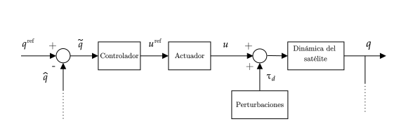
Control de orientación
Para controlar la orientación del satélite, las variables a controlar son aquellas sobre las cuales está definido el modelo rotacional del satélite, i.e., la velocidad angular \(\vec{\omega}\td\) y el parámetro que utilizamos para representar la orientación \(q\td\). Con ello, podemos construir el vector de estados como:
\[ x\td = \begin{bmatrix} \vec{\omega}\td \\ q\td \end{bmatrix} \]
En ese sentido, el problema del control de orientación puede ser formulado de la siguiente manera:
Problema de control de orientación
Diseñar una ley de control \(\vec{u}\td\) tal que
\[ x\td \to x^{\tref}\td \]
donde \(x^{\tref}\td\) es la referencia de \(x\td\) que describe el comportamiento deseado del satélite.
- La referencia \(x^{\tref}\td\) es la variable que indica el comportamiento rotacional total del satélite. Para definir la referencia, tenemos que difinir los modos de control.
- El par \(\vec{u}\td\) es la entrada de control de nuestro sistema. Este par puede ser generado utilizando diferentes fenómenos externos o internos del satélite. A los dispositivos que se encargan de generar esta acción se les conoce como:
Control
Actuadores
▸ Actuadores
Actuadores
- Un actuador es un elemento físico encargado de convertir una señal de control en una acción de control que influye en el comportamiento de un sistema dinámico.
- Constituye el vínculo entre el dominio del control \(u\ls{\tref}\td\) (señales e información) y el dominio de la dinámica física \(u\td\) (fuerzas y momentos).
- La naturaleza del actuador determina:
- El tipo de energía que emplea o transforma.
- El rango, la resolución y la direccionalidad de la acción.
- Su dinámica interna (tiempo de respuesta, no linealidades, saturación).
- Su modelado es esencial para el diseño de sistemas de control.
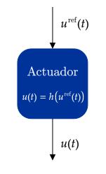
- Según la fuente de energía que sustenta su acción, los actuadores se clasifican en:
- Pasivos: Modifican el comportamiento del sistema utilizando únicamente propiedades físicas inherentes y sin un suministro de energía externo.
- No introducen energía neta. Pueden almacenar o disipar.
- Aportan estabilidad o amortiguamiento natural.
- Activos: Generan pares mediante un suministro de energía externo.
- Consumen energía neta.
- Su desempeño depende de la eficiencia de conversión energética.
- Ambos tipos suelen combinarse: los pasivos contribuyen a la estabilidad estructural, mientras que los activos permiten el control preciso de la dinámica.
- En el ADCS del satélite, los actuadores generan los pares de control necesarios para modificar o mantener la orientación del satélite. Estos pares de control pueden tener varios canales de entrada.
\[ \begin{split} I_b\ls{b}\dot{\vec{\omega}}_{h,b}\td = & -S(\ls{b}R_i \td \ls{i}\vec{\omega}_{i,h}\td +\ls{b}\vec{\omega}_{h,b}\td )\left(I_b(\ls{b}R_i \td \ls{i}\vec{\omega}_{i,h}\td +\ls{b}\vec{\omega}_{h,b}\td )+\textcolor{teal}{\sum_{j=1}^{a}\ls{b}R_j\td I_j\ls{j}\vec{\omega}_{b,j}\td }\right) \\ & -I_b\ls{b}R_i \td \ls{i}\dot{\vec{\omega}}_{i,h}\td -I_bS(\ls{b}R_i \td \ls{i}\vec{\omega}_{i,h}\td )\ls{b}\vec{\omega}_{h,b}\td +\textcolor{red}{\ls{b}\vec{\uptau}_c\td }-\ls{b}\vec{r}_c\td \times\ls{b}\vec{f}_{c}\td \\ & \textcolor{blue}{-\sum_{j=1}^{a}\ls{b}R_j\td S(\ls{j}\vec{\omega}_{b,j}\td )I_j\ls{j}\vec{\omega}_{b,j}\td -\sum_{j=1}^{a} \ls{b}R_j\td I_j\ls{j}\dot{\vec{\omega}}_{b,j}\td }. \end{split} \]
- La acción del actuador se modela como un par \(\vec{u}\) resultante de todas las entradas de control. Para ello, se requiere la capacidad de convertir una señal de mando \(^b\vec{u}^{\tref}\td\) en una acción física.
- Los actuadores en satélites pueden clasificarse según su procedencia del par generado:
- Internos: almacenan y modifican la distribución del momento angular.
- Externos: intercambian momento agular con el entorno.
- En particular, debido al almacenamiento de momento angular, los actuadores internos también generar un efecto residual en el par giroscópico total del satélite.
Actuadores pasivos
- Los actuadores pasivos no requieren una fuente de energía externa para operar; su acción deriva de propiedades físicas o interacciones naturales con el entorno.
- En el contexto del ADCS, su función principal es proporcionar:
- Estabilización natural o amortiguamiento del movimiento rotacional.
- Reducción del momento angular inicial (detumbling).
- Apuntamiento aproximado hacia una dirección preferida (nadir o campo magnético terrestre).
- Su efecto puede modelarse como un par que depende del estado dinámico o de campos externos.
- Son comunes en misiones de bajo costo o en etapas iniciales de estabilización, donde la precisión fina no es prioritaria.
- Los más comunes son:
- Boom por gradiente gravitatorio.
- Yo-yo’s.
- Imán permanente.
Boom por gradiente gravitatorio
- El boom de gradiente gravitatorio desplaza el centro de masa del satélite sobre el eje de mayor inercia.
- Esto genera un par debido a la variación del campo gravitacional a lo largo del cuerpo, análogo al par de perturbación por gradiente gravitatorio.
- El par \(\:^{b}\vec{\uptau}_{\text{bg}}\) puede aproximarse mediante
\[ \begin{split} \:^{b}\vec{\uptau}_{\text{bg}} =\frac{3\mu}{\|\:^{b}\vec{r}_c\|^5}\; \:^{b}\vec{r}_c \times I_b\td \:^{b}\vec{r}_c \end{split} \]
donde:
- \(\:^{b}\vec{r}_c\) es el vector de posición del nuevo centro de masa relativo al origen del marco inercial \(i\), representado en el marco \(b\).
- \(I_b\td\) es el nuevo tensor de inercia del satélite en el marco \(b\).
- \(\mu = 3.986\times 10^{14}\,\text{m}^3\text{s}^{-2}\) es el parámetro gravitacional estándar.
- Canal de entrada: par de entrada externa \(\:^{b}\vec{\uptau}_{\delta}\) (Es un fenómeno que sale de la hipótesis de cuerpo rígido).
- Principio de funcionamiento: despliegue o extensión de una masa auxiliar a lo largo del eje principal para aumentar la diferencia de inercia.
- Efecto: alinea el eje de mayor inercia con la dirección nadir, dado que esto implica el mínimo potencial gravitacional total del satélite.
- Ventajas: operación pasiva, sin consumo energético.
- Limitaciones: baja velocidad de respuesta y sensibilidad a variaciones orbitales. Adicionalmente, durante la fase de despliegue, se produce un par adicional en el modelo dinámico debido a cambios en el tensor de inercia, i.e., \(\frac{\text{d}}{\text{d}t}I_b\td\). Sin embargo, este fenómeno puede ser despreciado sin consideramos que la fase de despliegue es suficientemente lenta.
Yo-yo Despin
- Son dispositivos que utilizan dos masas conectadas mediante cables que se extienden desde el cuerpo del satélite, incrementando el momento de inercia sobre el eje principal.
- El principio de funcionamiento se basa en la conservación del momento angular total: \[ h = I_b\td \,\omega\td = \text{cte.} \]
De modo que, al aumentar \(I_b\td\), la velocidad angular disminuye: \[ \dot{\omega}\td= -I_b^{-1}\td \dot{I}_b\td \omega\td \] - Durante el despliegue, el cambio temporal en \(I_b\td\) introduce un par pasivo de frenado:
\[ ^{b}\vec{\uptau}_{\text{yy}}\td = -\dot{I}_b\td \,^{b}\vec{\omega}_{h,b}\td \]
- Canal de entrada: par de entradas externas \(\:^{b}\vec{\uptau}_{\delta}\). Sin embargo, realmente el par generado por este dispositivo forma parte de la mecánica rotacional del satélite considerando que su cuerpo es flexible.
- Efecto: reducción rápida de la velocidad inicial hasta alcanzar una rotación lenta.
- Ventajas:
- Reducción rápida de la velocidad angular sin consumo de energía.
- Mecanismo simple y confiable.
- Limitaciones:
- Solo puede activarse una vez (no reversible).
- El desprendimiento puede inducir pequeños pares residuales.
- Se utiliza principalmente en misiones sin control activo durante el despliegue o en etapas iniciales de estabilización.
- Ejemplos:
Imanes permanentes
- Un imán permanente (dipolo) integrado al satélite genera un momento magnético constante \(\:^{b}\vec{m}_\text{pm}\) en el marco del cuerpo.
- Este momento interactúa con el campo magnético terrestre \(\:^{b}\vec{B}\td\) produciendo un par que tiende a alinear el eje asociado al dipolo con las líneas del campo local:
\[ ^{b}\vec{\uptau}_{\text{pm}}\td = \:^{b}\vec{m}_{\text{pm}} \times \:^{b}\vec{B}\td \]
donde:
- \(\:^{b}\vec{m}_{\text{pm}}\) es el momento dipolar magnético fijo debido al imán permanente.
- \(\:^{b}\vec{B}\td\) es el campo magnético terrestre representado en el marco \(\mathcal{F}^b\).
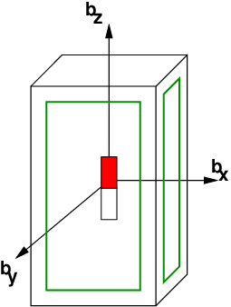
- Canal de entrada: par de entradas externas \(\:^{b}\vec{\uptau}_{\delta}\).
- Principio de funcionamiento: alineación del dipolo magnético del satélite con las líneas del campo terrestre.
- Efecto: estabilización a lo largo del vector del campo geomagnético local (sin control activo).
- Ventajas:
- Simplicidad mecánica y bajo costo.
- No requiere energía ni electrónica adicional.
- Funciona de forma continua en órbitas bajas.
- Limitaciones:
- Par de baja magnitud.
- Sensible a variaciones locales del campo magnético debido a elementos internos del satélite.
- Apuntamiento delimitado por la dirección de la lineas del campo magnético terrestre. El diseño de la misión debe considerar este aspecto.
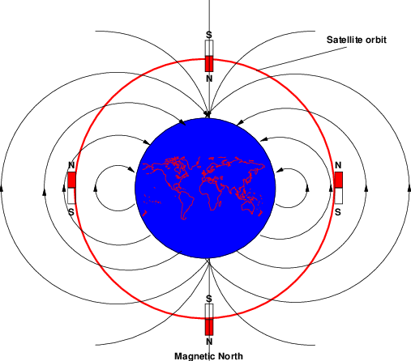
Actuadores activos
- Los actuadores activos requieren una fuente de energía para generar los pares de control necesarios para modificar la orientación del satélite.
- Su principio general es:
\[ \:^{b}\vec{\uptau}_{ctrl}\td = f\big(u_{\tref}\td , E\td \big), \]
donde \(E\td\) representa la energía o potencia suministrada.
- Según su principio de operación, pueden dividirse en:
- Magnéticos: magnetopares.
- Propulsión: propulsores de gas frío o eléctricos.
- Mecánicos: ruedas de reacción, ruedas de momento, CMG.
Magnetopares
- Los magnetopares generan par mediante la interacción del campo magnético terrestre \(\:^{b}\vec{B}\td\) y el momento magnético inducido por bobinas montadas en el cuerpo del satélite.
- El par generado se modela como:
\[ ^{b}\vec{\uptau}_{\text{mt}}\td = \:^{b}\vec{m}_{\text{mt}}\td \times \:^{b}\vec{B}\td \]
donde:
- \(\:^{b}\vec{m}_{\text{mt}}\td = [\,^{b}m_x\td ,\,^{b}m_y\td ,\,^{b}m_z\td \,]^\top\) es el momento magnético generado por las bobinas.
- \(\:^{b}m_n = h(N,I_n\td ,A,\mu_r)\), donde \(N\) es el número de espiras, \(A\) transversal de la bobina, \(\mu_r\) es la permeabilidad magnética del núcleo y \(I_n\td\) es la corriente en la bobina en el eje \(n\).
- \(\:^{b}\vec{B}\td\) es el campo magnético local en el marco del cuerpo.
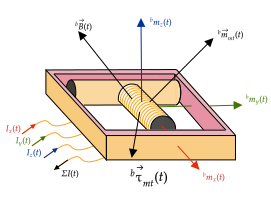
- Los magnetopares presentan la siguiente restricción:
\[ ^{b}\vec{\uptau}_{\text{mt}}\td \perp \:^{b}\vec{B}\td \]
es decir, únicamente puedo generar par en el plano normal a \(\:^{b}\vec{B}\td\). - Considere que la ley de control define una señal de control \(\:u^{\tref}\td\). El par físicamente realizable es la componente perpendicular de \(u\td\) con respecto campo magnético local:
\[ \:^{b}\vec{\uptau}_{\text{mt}}= \:u^{\tref}_\perp =u^{\tref}-u^{\tref}_\parallel = u^{\tref} - \frac{u^{\tref}\cdot\:^{b}\vec{B}}{\|\:^{b}\vec{B}\|^2}\:^{b}\vec{B} \]
- Ahora, el par se maximiza cuando \(\:^{b}\vec{m}_{\text{mt}} \perp \:^{b}\vec{B}\):
\[ \|\:^{b}\vec{\uptau}_{\text{mt}}\|= \|\:^{b}\vec{m}_{\text{mt}}\|\,\|\:^{b}\vec{B}\|\sin(\alpha), \]
Para maximizar la eficiencia energética del magnetopar, el momento magnético requerido se obtiene de:
\[ \:^{b}\vec{m}_{\text{mt}}= \frac{\:^{b}\vec{B}\times\:^{b}\vec{\uptau}_{\text{mt}}}{\|\:^{b}\vec{B}\|^2} \]
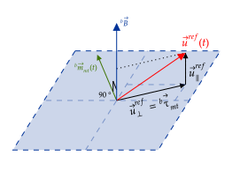
Magnetopares
- Banco de pruebas: Simulador de campo magnético terrestre (Jaula Helmholtz).
- Canal de entrada: Pares externos \(\:^{b}\vec{\uptau}_{\delta}\).
- Ventajas:
- Bajo consumo y masa reducida.
- Sin partes móviles ni desgaste mecánico.
- Ideal para desaturación de ruedas o control en LEO.
- Limitaciones:
- Par limitado y dependiente de la dirección y la magnitud de \(\:^{b}\vec{B}\).
- No controlable en la dirección de \(\:^{b}\vec{B}\), dado que \(sin(\alpha) = 0\).
- Ejemplos:
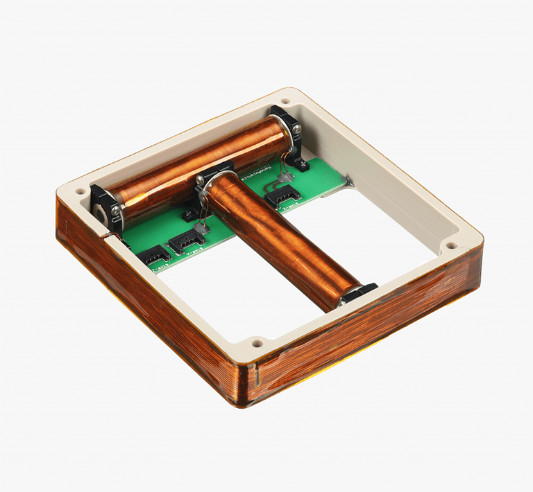
Propulsores
Utilizan la expulsión de masa para generar fuerza y momento sobre la plataforma.
\[ \begin{aligned} \:^{b}\vec{f}_{n}\td & = \dot{m}_n\td \:^b\vec{v}_{e,n}\td + \big(P_{e,n}\td -P_0\big)\:^b\vec{A}_n, \\[4pt] \:^{b}\vec{\uptau}_{\text{th}}\td & = \:^{b}\vec{r}_{1}\times \:^{b}\vec{f}_{1}\td + \:^{b}\vec{r}_{2}\times \:^{b}\vec{f}_{2}\td . \end{aligned} \]
donde:
- \(\dot{m}_n\): flujo másico de la tobera.
- \(\:^b\vec{v}_{e,n}\): velocidad de eyección relativa de la tobera \(n\) expresada en marco cuerpo.
- \(P_{e,n}\) es la presión interna del propelente.
- \(P_0\) es la presión del ambiente.
- \(\:^b\vec{A}_n\): vector normal al área de salida .
- \(\:^b\vec{r}_{\text{th}}\): vector de brazo de palanca desde el centro de masa del satélite al punto de aplicación.
- Canal de entrada: Par de entradas externas \(\:^{b}\vec{\uptau}_{\delta}\).
- Principio de funcionamiento: Convierte energía almacenada (química o eléctrica) en una fuerza expulsando masa a alta velocidad.
- Tiene que aplicarse dos fuerza con la misma magnitud pero dirección contraria sobre el plano normal al vector de giro del satélite. Esto para evitar desplazamientos translacionales debido al empuje.
- Control:
- Continuo: variación del flujo másico (propulsores iónicos).
- Discreto: activación de toberas mediante pulsos(gas frío).
- Ventajas:
- Es el actuador con mayor capacidad de par que puede tener un satélite.
- Aplicables en maniobras de desaturación o de traslación orbital.
- Limitaciones:
- Consumo de propelente → vida útil finita.
- Requieren sistemas presurizados o de almacenamiento energético.
- Alta complejidad.
- Ejemplos:
Actuadores internos
Los actuadores internos generan pares sobre el satélite mediante la variación del momento angular interno del sistema. Recordando que el momento angular total del satélite está dado por \[ h\td =h_0\td +h_s\td +h_w\td =h_{\text{sat}}\td +h_{\text{int}}\td \equiv \text{constante} \]
donde \(h_{\text{sat}}\td=h_0\td+h_s\td\) y \(h_{\text{int}}=h_w\td\). Dado el principio del momento angular, si el momento angular \(h_{\text{int}}\) incremente, el momento angular \(h_{\text{sat}}\) tiene que disminuir, y viceversa. La reducción de \(h_{\text{sat}}\) implica también una reducción en la velocidad angular del satélite. Su comportamiento dentro del satélite se expresa mediante las siguientes ecuaciones:
\[ \begin{split} \ls{b}\vec{\uptau}_{\text{int}}\td & = \,\ls{b}\dot{\vec{h}}_{\text{int}}\td =\ls{b}\vec{\uptau}_{\text{p}}\td +\ls{b}\vec{\uptau}_{\text{q}}\td , \end{split} \]
donde:
\[ \begin{split} \ls{b}\vec{h}_{\text{int}}\td & = \displaystyle\sum_{j=1}^{a} \ls{b}R_j\td I_j \ls{j}\vec{\omega}_{b,j}\td , \\ \ls{b}\vec{\uptau}_{\text{p}}\td & =\sum_{j=1}^{a}\ls{b}R_j\td S(\ls{j}\vec{\omega}_{b,j}\td )I_j\ls{j}\vec{\omega}_{b,j}\td , \\ \ls{b}\vec{\uptau}_{\text{q}}\td & =\sum_{j=1}^{a} \ls{b}R_j\td I_j\ls{j}\dot{\vec{\omega}}_{b,j}\td . \end{split} \]
Suposición
El cuerpo \(j\) satisface las siguientes suposiciones:
- Tiene cuerpo símetrico con densidad constante y uniforme, i.e, \(I_j=\text{diag}(\text{I}_{xx,j},\text{I}_{yy,j},\text{I}_{zz,j})\).
- Sólo gira alrededor del eje \(^{b}\hat{z}_j\), i.e, \(\ls{j}\vec{\omega}_{b,j}\td =[0\quad 0\quad \omega_{z,j}\td ]^{\top}\).
Bajo la anterior suposición, se obtiene que:
\[ \begin{split} \ls{b}\vec{h}_{\text{int}}\td & = \displaystyle\sum_{j=1}^{a} \ls{b}R_j\td I_j \ls{j}\vec{\omega}_{b,j}\td , \\ & =\displaystyle\sum_{j=1}^{a}\begin{bmatrix} ^{b}\hat{x}_j & ^{b}\hat{y}_j & ^{b}\hat{z}_j \end{bmatrix}\begin{bmatrix} I_{xx,j} & 0 & 0 \\ 0 & I_{yy,j} & 0 \\ 0 & 0 & I_{zz,j} \end{bmatrix} \begin{bmatrix} 0 \\ 0 \\ \omega_{z,j}\td \end{bmatrix}, \\ & =\displaystyle\sum_{j=1}^{a}I_{zz,j}\omega_{z,j}\td \ls{b}\hat{z}_j, \\ \end{split} \]
Ruedas de momento
Dispositivo rotativo conformado por un volante de inercia que almacena un momento angular constante mediante un motor que lo hace girar a alta velocidad.
\[ ^{b}\vec{h}_{\text{mw}}=I_w\,^{b}\vec{\omega}_{\text{mw}} \]
donde:
- \(I_w\) es el momento de inercia del volante con respecto a su eje de rotación.
- \(^{b}\vec{\omega}_{\text{mw}}=\omega_{\text{mw}}\ls{b}\hat{e}\), donde \(\omega_{\text{mw}}\) es la velocidad angular y \(\hat{e}\) es el eje de giro.
El principio de funcionamiento se basa en la conservación del momento angular. En este dispositivo, la orientación del eje de rotación es fija, y la velocidad angular se mantiene constante. Esto implica que \(\ls{b}\vec{\tau}_{\text{mw}}\td =0\).
Estructura
Volante de inercia
- El volante de inercia es un dispositivo mecánico rotativo diseñado para almacenar energía cinética mediante su momento de inercia.
- En esencia, es un disco que gira a alta velocidad y resiste cambios en su movimiento angular.
- Para optimizar el uso de la masa del voltante, se suele concentrar la mayor parte de esta fuera de su eje de rotación. Con ello, se puede aumentar el momento de inercia del volante.
\[ \begin{split} I_w=\frac{1}{2}\pi\rho\left[h_o(r_o^4-r_i^4)+h_i(r_i^4-r_m^4)+h_o(r_m^4-r_j^4)\right] \end{split} \]
Motor
Debido a la necesidad de tener una velocidad angular considerablemente alta, se prefiere el uso de motores DC sin escobillas (BLDC, por sus siglas en inglés). Tal como lo dice su nombre, estos motores no tienen las escobillas de los motores DC convencionales.
- La ventaja de esto es que la fricción es prácticamente nula, lo cual permite una mayor velocidad angular.
- De igual manera, el mantenimiento es escaso. Ideal para sistemas espaciales.
- Sin embargo, esto implica la implementación de un sistema de control especial conocido como controlador electrónica de velocidad (ESC, por sus siglas en inglés).
- Canal de entrada: No genera par por sí mismo, pero la cantidad de momento angular almacenado por el volante se ve reflejado en el par giroscópico total \(\vec{\uptau}_{\alpha}\).
- Ventajas:
- Estabilización pasiva sin consumo energético desde el momento que se alcanza la velocidad de giro.
- Aumenta la rigidez giroscópica del satélite. Utilizado para misiones cuyo modo de control buscan un momento angular constante.
- Configuración mecánica sencilla y robusta.
- Limitaciones:
- Difícil de reorientar (orientación única).
- Desgaste mecánico de los rodamientos.
No obstante, la principal aplicación de estos dispositivos surge en el análisis de:
- Cambios en la magnitud de la velocidad angular.
- Variaciones en la orientación del eje de rotación.
Suposición
El cuerpo \(j\) satisface las siguientes suposiciones: - Tiene cuerpo símetrico con densidad constante y uniforme, i.e, \(I_j=\text{diag}(\text{I}_{xx,j},\text{I}_{yy,j},\text{I}_{zz,j})\). - Sólo gira al redor del eje \(^{b}\hat{z}_j\), i.e, \(\ls{j}\vec{\omega}_{b,j}\td =[0\quad 0\quad \omega_{z,j}\td ]^{\top}\).
Bajo la anterior suposición, se obtiene que:
\[ \begin{split} \ls{b}\vec{\uptau}_{\text{q}}\td & = \displaystyle\sum_{j=1}^{a} \ls{b}R_j\td I_j \ls{j}\dot{\vec{\omega}}_{b,j}\td , \\ & =\displaystyle\sum_{j=1}^{a}\begin{bmatrix} ^{b}\hat{x}_j & ^{b}\hat{y}_j & ^{b}\hat{z}_j \end{bmatrix}\begin{bmatrix} I_{xx,j} & 0 & 0 \\ 0 & I_{yy,j} & 0 \\ 0 & 0 & I_{zz,j} \end{bmatrix} \begin{bmatrix} 0 \\ 0 \\ \dot{\omega}_{z,j}\td \end{bmatrix}, \\ & =\displaystyle\sum_{j=1}^{a}I_{zz,j}\dot{\omega}_{z,j}\td \ls{b}\hat{z}_j, \\ & =\begin{bmatrix} \ls{b}\hat{z}_1 & \ls{b}\hat{z}_2 & \cdots & \ls{b}\hat{z}_a \end{bmatrix}\begin{bmatrix} I_{zz,1}\dot{\omega}_{z,1}\td \\ I_{zz,2}\dot{\omega}_{z,2}\td \\ \vdots \\ I_{zz,a}\dot{\omega}_{z,a}\td \end{bmatrix}=D \begin{bmatrix} \vec{\uptau}_{1}\td \\ \vec{\uptau}_{2}\td \\ \vdots \\ \vec{\uptau}_{a}\td \end{bmatrix} \end{split} \]
Ruedas de reacción
Dispositivo rotativo similar a la rueda de momento, pero donde el par de control se obtiene al acelerar o desacelerar el rotor.
\[ \uptau_{n} = I_{w,n}\,\dot{\omega}_{n} \]
donde:
- \(I_{w,n}\): momento de inercia del volante.
- \(^{b}\omega_{n}\): rapidez angular de la rueda \(n\) en el marco del cuerpo.
El par total de un arreglo es la combinación de los pares de cada rueda:
\[ ^{b}\vec{\uptau}_{\text{rw}} = D\,\begin{bmatrix} \uptau_{1}\td \\ \uptau_{2}\td \\ \vdots \\ \uptau_{n}\td \end{bmatrix} \]
donde \(D\) es la matriz de distribución del arreglo.
Arreglo ortogonal
\[ \begin{split} D=\left[\begin{matrix} 1 & 0 & 0 \\ 0 & 1 & 0 \\ 0 & 0 & 1 \end{matrix}\right] \end{split} \]
Arreglo ortogonal redundante
\[ \begin{split} D=\left[\begin{matrix} 1 & 0 & 0 & \frac{1}{\sqrt{3}} \\ 0 & 1 & 0 & \frac{1}{\sqrt{3}} \\ 0 & 0 & 1 & \frac{1}{\sqrt{3}} \end{matrix}\right] \end{split} \]
Arreglo tetraédrico
\[ \begin{split} D=\left[\begin{matrix} 0 & 0 & \frac{1}{3}\sqrt{6} & -\frac{1}{3}\sqrt{6} \\ 0 & -\frac{2}{3}\sqrt{2} & \frac{1}{3}\sqrt{2} & \frac{1}{3}\sqrt{2} \\ -1 & \frac{1}{3} & \frac{1}{3} & \frac{1}{3} \end{matrix}\right] \end{split} \]
Arreglo piramidal
\[ \begin{split} D=\left[\begin{matrix} \cos(\beta) & 0 & -\cos(\beta) & 0 \\ 0 & \cos(\beta) & 0 & -\cos(\beta) \\ \sin(\beta) & \sin(\beta) & \sin(\beta) & \sin(\beta) \end{matrix}\right] \end{split} \]
| Arreglo | Ventajas | Desventajas |
|---|---|---|
| Ortogonal | Diseño simple. Desacoplamiento directo por eje. Fácil control y asignación de par. | Sin redundancia. La falla de un actuador compromete el control completo. |
| Ortogonal redundante | Mantiene simplicidad del arreglo ortogonal con tolerancia a fallas. Permite redistribución de par. | Mayor masa, volumen y consumo. La asignación de control se vuelve más compleja. |
| Tetraédrico | Redundancia uniforme en los tres ejes. Buena distribución geométrica del par. | Integración mecánica más compleja. Mayor volumen interno. Acoplamiento entre ejes más fuerte. |
| Piramidal | Buena redundancia tridimensional. Mejor aprovechamiento de volumen. Configuración ampliamente utilizada en satélites. | Requiere selección adecuada del ángulo \(\beta\). Asignación de par más compleja que el arreglo ortogonal. |
Debido a sus ventajas, hay una tendencia al uso de arreglos piramidales. Un valor típico es \(\beta=26.565 ^\circ\). Con ello el par máximo proyectado en los tres ejes del satélite se iguala.
Ejemplo:
Considere un arreglo de ruedas de reacción en arreglo piramidal con \(\beta=26.565 ^\circ\). Considere que el par máximo de cada rueda de reacción es \(|\uptau|_{\max}.\)
\[ \uptau_{\text{rw}}=\begin{bmatrix} \uptau_x \\ \uptau_y \\ \uptau_z \end{bmatrix}=\frac{1}{\sqrt{5}}\begin{bmatrix} 2 & 0 & -2 & 0 \\ 0 & 2 & 0 & -2 \\ 1 & 1 & 1 & 1 \end{bmatrix}\begin{bmatrix} \uptau_1 \\ \uptau_2 \\ \uptau_3 \\ \uptau_4 \end{bmatrix}=\frac{1}{\sqrt{5}}\begin{bmatrix} 2\uptau_1-2\uptau_3 \\ 2\uptau_2-2\uptau_4 \\ \uptau_1+\uptau_2+\uptau_3+\uptau_4 \\ \end{bmatrix} \]
de ello, observamos que \(\max{|\uptau_x|}=\max{|\uptau_x|}=\max{|\uptau_x|}=\frac{4}{\sqrt{5}}|\uptau|_{\max}\).
- Canal de entrada: Par \(\vec{\uptau}_\eta \td\).
- Ventajas:
- Son lo actuadores más utilizados dada su relación entre costo y rendimiento.
- Sin consumo de propelente.
- Limitaciones:
- El motor alcanza una velocidad máxima. Esto implica que el volante de inercia no puede acelerar más \((\dot{\omega}_{n}=0)\). A este fenómeno se le llama saturación. Si desacelaramos después de conseguir el apuntamiento, perdemos el mismo debido a que se genera par sobre el satélite definido por la propia desaceleración. Por ello, requieren sistemas de desaturación (magnetopares o propulsores).
- Desgaste mecánico en los rodamientos.
- Ejemplos:
Suposición
El cuerpo \(j\) satisface las siguientes suposiciones:
- Tiene cuerpo símetrico con densidad constante y uniforme, i.e, \(I_j=\text{diag}(\text{I}_{xx,j},\text{I}_{yy,j},\text{I}_{zz,j})\).
- Sólo gira al redor del eje \(^{b}\hat{z}_j\), i.e, \(\ls{j}\vec{\omega}_{b,j}\td =[0\quad 0\quad \omega_{z,j}\td ]^{\top}\).
Bajo la anterior suposición, se obtiene que:
\[ \begin{split} \ls{b}\vec{\uptau}_{\text{p}}\td & =\sum_{j=1}^{a}\ls{b}R_j\td S(\ls{j}\vec{\omega}_{b,j}\td )I_j\ls{j}\vec{\omega}_{b,j}\td , \\ & =\sum_{j=1}^{a}\ls{b}R_j\td S(\ls{j}\vec{\omega}_{b,j}\td )\ls{j}\vec{h}_{\text{w}}, \\ & =\sum_{j=1}^{a}S(\ls{b}\vec{\omega}_{b,j}\td )\ls{b}\vec{h}_{\text{w}}, \\ & =\sum_{j=1}^{a} \ls{b}\vec{\omega}_{b,j}\td \times \ls{b}\vec{h}_{\text{w}}, \\ \end{split} \]
Giroscopio de momento controlado (CMG)
Dispositivo formado por una rueda de momento montada sobre un cardán móvil.
El par se genera al cambiar la orientación del eje de rotación del volante:
\[ ^{b}\vec{\uptau}_{\text{cmg}} = \,^{b}\vec{\omega}_g \times \,^{b}\vec{h}_{\text{w}}(\theta_g) \]
donde:
- \(\:^{b}\vec{h}_{\text{w}}(\theta_g) = I_w\,^{b}\vec{\omega}_w(\theta_g)\) es el momento angular del volante en función del ángulo del cardán.
- \(\:^{b}\vec{\omega}_g\) es la velocidad angular del cardán (gimbal).
- \(\theta_g\) es el ángulo de rotación del cardán respecto a su eje.
- Principio de funcionamiento:
- El volante mantiene un momento angular almacenado \(\:^{b}h_w\) constante.
- Al girar el cardán, la dirección de \(\:^{b}h_w\) cambia, generando un par giroscópico sobre el cuerpo.
- El efecto es análogo a la precesión.
- Canal de entrada: par \(\:^{b}\vec{\uptau}_{\zeta}\).
- Ventajas:
- Gran capacidad de generar par sin variar la velocidad del volante.
- Bajo consumo energético (sólo movimiento del cardán) en comparación a RW.
- Alta precisión y capacidad de maniobra.
- Limitaciones:
- Complejidad mecánica y de control, presencia de singularidades similar a RPY, lo cual se puede evitar incluyendo más CMG.
- Alto costo y masa.
- Ejemplos:
| Actuador | CMG | Ruedas de reacción | Magnetopares | Propulsores |
|---|---|---|---|---|
| Rango de par | \(10^{-1}\)–\(10^{2}\) N·m | \(10^{-4}\)–\(10^{-1}\) N·m | \(10^{-6}\)–\(10^{-3}\) N·m | \(10^{-2}\)–\(10^{3}\) N·m |
| Precisión típica de apuntamiento | \(<0.001^\circ\)–\(0.05^\circ\) | \(0.01^\circ\)–\(0.1^\circ\) | \(1^\circ\)–\(5^\circ\) | \(0.01^\circ\)–\(0.1^\circ\) |
| Consumo de energía | Alto | Moderado | Muy bajo | Muy alto |
| Masa / Volumen | Altos | Moderados | Muy bajos | Altos |
| Vida útil | Alta | Alta | Muy alta | Baja |
| Tipo de misión típica | Maniobras grandes / telescopios | Observación / apuntado fino | Detumbling / control LEO | Reorientación rápida / órbita |
| Actuador | Ventajas | Desventajas |
|---|---|---|
| Magnetopares | - Muy bajo consumo energético. - Sin partes móviles. - Capaces de desaturar actuadores internos. - Bajo costo y masa mínima. |
- Par limitado (\(10^{-6}\)–\(10^{-3}\) N·m). - Solo útil en órbitas bajas (LEO). - Baja precisión (\(>1^\circ\)). |
| Ruedas de reacción | - Control fino (\(\sim0.01^\circ\)). - Sin consumo de propelente. - Amplio rango de par (\(10^{-4}\)–\(10^{-1}\) N·m). |
- Saturación del momento angular. - Desgaste mecánico y térmico. |
| CMG | - Alto par (\(10^{-1}\)–\(10^{2}\) N·m). - Alta precisión (\(<0.01^\circ\)). - Ideal para grandes plataformas. |
- Complejidad mecánica. - Singularidades y mantenimiento. - Mayor masa y consumo de energía. |
| Propulsores | - Gran par y empuje (hasta \(10^3\) N·m). - Capaces de desaturar actuadores internos. - Reorientación y maniobras orbitales. |
- Vida útil limitada por propelente. - Alto consumo energético y masa. - Requieren un subsistema de propulsión completo. |
Control
Conceptos de control
▸ Conceptos de control
Objetivos del control
El propósito fundamental del control automático es lograr que la salida del sistema siga un comportamiento deseado, pese a perturbaciones o incertidumbres.
Un sistema de control bien diseñado debe cumplir con los siguientes objetivos:
- Estabilidad: la respuesta del sistema permanece acotada ante perturbaciones o cambios en las condiciones iniciales.
- Desempeño: mantiene un desempeño aceptable ante variaciones de parámetros o modelos inexactos.
El diseño de control busca un equilibrio entre estos criterios según los requerimientos del sistema y de su respuesta.
Planteamiento matemático general
Todo sistema físico puede representarse mediante un conjunto de ecuaciones que describen su comportamiento dinámico. Dicho conjunto se denomina ecuaciones de estado, y se puede representar de la siguiente manera:
\[ \dot{x}\td = f(x\td , u\td , d\td , t) \tag{46}\]
\[ y\td = g(x\td , u\td , t) \]
donde:
- \(x\td \in \mathbb{R}^{n}\): vector de estados (variables internas del sistema).
- \(u\td \in \mathbb{R}^{r}\): entrada de control o señal aplicada por el actuador.
- \(d\td \in \mathbb{R}^{p}\) : perturbaciones externas no deseadas.
- \(y\td \in \mathbb{R}^{m}\): salida o variable medida.
- \(f(\cdot), g(\cdot)\): funciones (posiblemente no lineales) que describen la dinámica.
El problema de control consiste en diseñar una ley de control:
\[ u\td = K(x\td , t) \]
tal que la salida \(y\td\) siga una referencia \(r\td\) y el sistema mantenga estabilidad y desempeño deseado.
Concepto general de estabilidad
El análisis de estabilidad en sistemas dinámicos se realiza con respecto a un punto de equilibrio del sistema, y no sobre cualquier trayectoria arbitraria o el sistema en general.
Definición de punto de equilibrio:
Un punto \(x^\star\) se denomina punto de equilibrio si:
\[ f(x^\star,0,0,t) = 0 \qquad \forall t \]
es decir, si el sistema permanece constante en \(x^\star\) cuando parte de esa condición inicial.
- El estudio de estabilidad busca determinar cómo se comporta el sistema cuando se perturba ligeramente de \(x^\star\).
- Si las trayectorias cercanas regresan o permanecen próximas a \(x^\star\), el equilibrio se considera estable.
- Si las trayectorias se alejan de \(x^\star\), el equilibrio se considera instable.
- Dependiento del comportamiento de las trayectorias del sistema cerca de \(x^\star\), se puede determinar el tipo de estabilidad.
Estabilidad
Definición: Un punto de equilibrio \(x^\star\) es estable si, ante perturbaciones pequeñas, las trayectorias del sistema permanecen dentro de una vecindad acotada de \(x^\star\).
Condición:
\[ \forall \varepsilon > 0,\, \exists \delta > 0:\; \|x(0)-x^\star\|<\delta \Rightarrow \|x\td -x^\star\|<\varepsilon, \;\forall t\ge0 \]
El sistema no diverge ante perturbaciones pequeñas, pero no necesariamente converge al equilibrio. A este tipo de estabilidad se le conoce como estabilidad de Lyapunov.
Estabilidad asintótica
Definición: El punto de equilibrio \(x^\star\) es asintóticamente estable si es estable y, además,
\[ \lim_{t \to t_f} \|x\td -x^\star\| = 0 \]
El sistema no solo permanece cerca del equilibrio, sino que converge gradualmente hacia él con el tiempo.
Este tipo de estabilidad es deseable en sistemas físicos que deben regresar a su estado de equilibrio después de una perturbación.
Estabilidad exponencial
Definición: El equilibrio \(x^\star\) es exponencialmente estable si existe \(k,\alpha>0\) tal que:
\[ \|x\td -x^\star\| \le k\,\|x(0)-x^\star\| e^{-\alpha t} \]
- La convergencia es asintótica con una tasa exponencial.
- La rapidez de convergencia depende del valor de \(\alpha\).
Estabilidad en tiempo finito
Definición: El sistema es estable en tiempo finito si alcanza exactamente el equilibrio \(x^\star\) en un tiempo finito \(T(x_0)\):
\[ x\td = x^\star, \quad \forall t \ge T(x_0) \]
- El error desaparece completamente después de un tiempo finito.
- Se logra con leyes de control no lineales discontinuas y de alta complejidad.
- Ideal en sistemas que requieren respuesta rápida y robusta.
Las propiedades de estabilidad pueden clasificarse según la región del espacio de estados donde se cumplen:
- Estabilidad local: la condición de estabilidad se cumple sólo para trayectorias que inician en una vecindad pequeña alrededor del equilibrio \(x^\star\).
- Estabilidad global: el sistema permanece estable para cualquier condición inicial \(x(0)\in\mathbb{R}^n\).
En la práctica:
- En sistemas físicos reales (con ruido, incertidumbres y saturaciones), la única propiedad que puede garantizarse experimentalmente es la estabilidad. Por ello también se le conoce como estabilidad práctica.
- Este tipo de estabilidad asegura que el sistema se mantendrá dentro de una región segura de operación, aunque no necesariamente converja al equilibrio exacto.
- Lograr tipos de estabilidad más estrictas (asintótica, exponencial o en tiempo finito) puede ofrecer ventajas como:
- Convergencia más rápida.
- Mayor rechazo a perturbaciones.
- Mejor precisión o desempeño transitorio.
- Para probar si un punto de equilibrio es estable se utiliza:
- Estabilidad en el sentido de Lyapunov
- Criterio de Routh-Hurwitz.
- Criterio de Nyquist.
Estabilidad entrada–salida
Es común que en la práctica no se cuente con las mediciones de los estados internos. Es por ello que es conveniente definir la estabilidad mediante la entrada y la salida del sistema. La estabilidad entrada–salida analiza la relación entre las señales externas del sistema.
Definición: Un sistema de la forma Ecuación 46 es estable E/S si:
\[ \|u\td \| < \infty \Rightarrow \|y\td \| < \infty \]
es decir, toda entrada acotada produce una salida acotada (propiedad BIBO(Bounded Input-Bounded Output)).
Interpretación:
- Evalúa la respuesta del sistema sin necesidad de conocer los estados internos.
- Garantiza que el sistema no amplifique señales limitadas hasta valores infinitos.
La estabilidad E/S se complementa con la estabilidad interna.
Control
Perfil de orientación
▸ Perfil de orientación
Perfil de orientación
Definición
El perfil de orientación de una misión espacial es el conjunto de fases operacionales del satélite relacionadas con el control de orientación, definidas de acuerdo con el estado actual de la misión y los objetivos del vehículo.
Cada fase establece:
- el objetivo de orientación,
- la referencia de apuntamiento,
- la estrategia de estabilización,
- la gestión del momento angular,
- y la configuración del sistema ADCS.
Conceptos asociados
- Tipos de apuntamiento .
- Tipos de estabilización.
- Gestión del momento angular.
- Modos de control.
El control asociado a cada fase debe satisfacer el problema de control de orientación.
Problema de control de orientación
Diseñar una ley de control \(\vec{u}\td\) tal que
\[ x\td \to x^{\tref}\td \]
donde \(x^{\tref}\td\) es la referencia de \(x\td\) que describe el comportamiento deseado del satélite.
Tipos de apuntamiento
El tipo de apuntamiento define la orientación que debe mantener el satélite según la misión o tarea que realiza. El tipo de apuntamiento seleccionado define sobre qué marco de referencia vamos a definir nuestras referencias.
Tipos de apuntamiento:
Inercial: fija respecto a un marco inercial. \[ ^{b}q_i^\tref \equiv \text{constante}, \ls{b}\vec{\omega}_{i,b}^\tref=0 \]
Nadir: eje principal apuntando hacia el centro de la Tierra. \[ ^{b}q_h^\tref \equiv \text{constante}, \ls{b}\vec{\omega}_{h,b}^\tref=0 \Rightarrow \ls{b}\vec{\omega}_{i,b}^\tref=\ls{b}\vec{\omega}_{i,h} \]
Seguimiento: orientación variable siguiendo un objetivo o trayectoria. \[ ^{b}q_i^\tref\td , \ls{b}\vec{\omega}_{i,b}^\tref\td \quad \text{o} \quad \:^{b}q_h^\tref\td , \ls{b}\vec{\omega}_{h,b}^\tref\td, \]
dependiendo en qué marco sea más práctico definir el objetivo.
Tipos de estabilización
El tipo de estabilización define la estrategia física utilizada para mantener la orientación del satélite frente a perturbaciones externas.
- Gravity-gradient stabilization: la orientación se estabiliza pasivamente mediante el gradiente gravitacional terrestre.
- Spin stabilization: el satélite rota alrededor de un eje principal para generar rigidez giroscópica. Esto implica que todo el satélite gira al rededor de su eje principal.
- Dual-spin stabilization: una parte del vehículo rota para generar rigidez giroscópica mientras otra permanece desacoplada para carga útil o antenas.
- Three-axis stabilization: la orientación se controla activamente sobre los tres ejes mediante actuadores.
La elección del tipo de estabilización define los siguiente aspectos de los actuadores:
- Tipo.
- Cantidad.
- Capacidad.
- Disposición física dentro del satélite.
Gestión del momento angular
La gestión del momento angular define la estrategia utilizada para almacenar, redistribuir y descargar el momento angular interno generado por los actuadores del ADCS. Recordando que el momento angular total del satélite es
\[ \vec{h}=h_{\text{sat}}\td +h_{\text{int}}\td , \]
- Momentum-bias: existe un momento dominante almacenado sobre un eje preferente.
\[ \|\vec{h}_{\text{int}}\|\gg 0 \]
La rigidez giroscópica contribuye parcialmente mantener la orientación el vehículo ante perturbaciones (similar a Dual-Spin Stabilization). Sin embargo, esto implica consumo constante de energía y desgaste mecánico de los actuadores.
- Zero-momentum: las ruedas almacenan poco momento promedio.
\[ \vec{h}_{\text{int}} \approx 0 \]
El control depende principalmente de acción activa de los actuadores pero con una reducción bastante importante del consumo de energía y del desgaste mecánico. No obstante, los actuadores no aportan tiene rigidez giroscópica al vehículo.
La elección entre estas estrategias define los siguientes aspectos de los actuadores internos
- Consumo energético.
- Capacidad.
- Actuadores auxiliares dedicados a la gestión de momento angular (e.g. magnetopares o propulsores).
Modos de control
Los modos de control definen la configuración operacional del sistema ADCS durante una fase específica de la misión. Cada modo de control establece el objetivo de control, los sensores y actuadores operativos, la precisión requerida, y la estrategia de control utilizada.
Detumbling mode
- Primer modo de control después del despliegue.
- Objetivo principal:
\[ \|\vec{\omega}\|\rightarrow 0 \]
- No busca una orientación precisa, únicamente busca frenar el satélite.
- Sensores típicos: magnetómetros, sensores solares gruesos, giroscopios.
- Actuadores típicos: magnetopares.
Safe mode
- Modo de supervivencia ante fallas o perdidas de estabilidad.
- Objetivo principal: mantener potencia, comunicaciones y estabilidad básica.
- Generalmente utiliza apuntamiento solar para maximizar generación eléctrica.
- No busca máxima precisión de orientación.
- Sensores típicos: magnetómetros, sensores solares gruesos, giroscopios.
- Actuadores típicos: magnetopares y ruedas de reacción.
Acquisition mode
- Objetivo principal: \[ \hat{q} \rightarrow q \] es decir, obtener la primer estimación de la orientación del vehículo antes de la operación nominal.
- Sensores típicos: todos.
- Actuadores típicos: magnetopares o ruedas de reacción, únicamente para mejorar la calidad de la determinación.
Slew mode
- Reorientación controlada desde la orientación actual hasta una orientación deseada.
- Objetivo principal: \[ q \rightarrow q^\tref\td \]
- Utilizado durante la comunicación con un objetivo, maniobras de observación y seguimiento de trayectorias.
- La referencia de orientación varía continuamente durante la maniobra.
- Sensores típicos: todos.
- Actuadores típicos: ruedas de reacción, CMG y propulsores.
Pointing mode
Modo nominal de alta precisión utilizado durante la operación de la carga útil.
Objetivo principal: \[ q \rightarrow q^\tref, \qquad \vec{\omega} \rightarrow \vec{\omega}^\tref \] dependiendo el tipo de apuntamiento.
Busca minimizar errores de orientación y vibraciones durante la misión.
Utilizado en observación terrestre, astronomía, instrumentos ópticos o experimentos que requieran una alta estabilidad.
Requiere estimación precisa de orientación y velocidad angular.
Sensores típicos: todos.
Actuadores típicos: ruedas de reacción y CMG.
Momentum dumping mode
- Modo utilizado para descargar momento acumulado en ruedas de reacción o CMGs.
- Objetivo principal: \[ \|\vec{h}_w\| \rightarrow 0. \]
- Las perturbaciones externas y las maniobras provocan acumulación progresiva de momento en los actuadores internos.
- Busca evitar saturación y recuperar capacidad de control.
- Es el puente entre las dos estrategias de gestión de momento angular.
- Sensores típicos: todos.
- Actuadores típicos: magnetopares y propulsores.
Perfil de orientación: Satélite de observación terrestre
| Fase | Modo de control | Apuntamiento | Objetivo principal |
|---|---|---|---|
| Despliegue | Detumbling | Libre | Reducir velocidades angulares iniciales. |
| Supervivencia inicial | Safe mode | Apuntamiento al sol | Garantizar potencia y comunicaciones básicas. |
| Inicialización | Acquisition mode | Libre | Estimar la orientación. |
| Operación nominal | Pointing mode | Apuntamiento a nadir | Mantener precisión durante adquisición de imágenes. |
| Comunicación | Slew mode | Seguimiento | Reoriención del satélite en dirección a la estación terrena. |
| Desaturación | Momentum dumping mode | Libre | Descargar momento acumulado en ruedas de reacción. |
Control
Controlador
▸ Controlador
Controlador
- Un controlador es un dispositivo que ajusta el comportamiento de un sistema dinámico con el objetivo de alcanzar un estado deseado \(\xref\).
- Procesa el error de orientación \(\tx \td\) mediante una ley de control que genera la señal \(u^{\tref}\td\) aplicada a los actuadores:
- En un sistema de control de orientación, el controlador determina los pares de control \(u\td\) necesarios para compensar perturbaciones y alcanzar la orientación de referencia.
- La implementación puede ser:
- Centralizada: ejecutada por la OBC.
- Descentralizada: mediante una unidad de procesamiento dedicada al ADCS.
Error de apuntamiento
El error de apuntamiento cuantifica la desviación entre la orientación actual y la orientación deseada del satélite.
Roll-Pitch-Yaw
\[ \begin{aligned} \tw\td &= \bwib^{\tref}\td-\bwib\td,\\ \begin{bmatrix} \tphi\td\\ \ttheta\td\\ \tpsi\td \end{bmatrix} &= \begin{bmatrix} \phi^{\tref}\td\\ \theta^{\tref}\td\\ \psi^{\tref}\td \end{bmatrix} - \begin{bmatrix} \phi\td\\ \theta\td\\ \psi\td \end{bmatrix} \end{aligned} \]
Objetivo
\[ \tx\td= \begin{bmatrix} \tw\td\\ \tphi\td\\ \ttheta\td\\ \tpsi\td \end{bmatrix} \rightarrow 0 \]
Matrices de rotación
\[ \begin{aligned} \tw\td &= \bwib^{\tref}\td-\bwib\td,\\ \tR\td &= \bRi^{\tref}\td\bRi^\T\td,\\ \ttheta\td &= \cos^{-1}\left(\frac{\operatorname{tr}(\tR\td)-1}{2}\right) \end{aligned} \]
Objetivo
\[ \tx\td= \begin{bmatrix} \tw\td\\ \ttheta\td \end{bmatrix} \rightarrow 0 \]
Cuaterniones
\[ \begin{aligned} \tw\td &= \bwib^{\tref}\td-\bwib\td,\\ \tq\td &= \bqi^\tref\td \otimes \bqi^{\star}\td \end{aligned} \]
Objetivo
\[ \begin{aligned} \tw\td &\rightarrow 0,\\ \tq\td &\rightarrow \begin{bmatrix} 1\\ 0\\ 0\\ 0 \end{bmatrix},\\ &\Leftrightarrow\\ \tx(t) &= \begin{bmatrix} \tw\td\\ \tqv\td \end{bmatrix} \rightarrow 0 \end{aligned} \]
donde \(\tqv\td\) es la parte vectorial de \(\tq\td\).
Es importante enfatizar que estamos asumiendo que conocemos exactamente las variables del sistema \(x\td\) para definir el error. En la práctica (y como vimos en la sección de determinación), el mejor caso posible es conocer un estimado \(\hx\td\), y con ella construir el error \(\tx\td=\xref\td - \hx\td\)
Ley de control
- Una ley de control es una expresión matemática que define cómo debe generarse la señal de control \(\uref \td\) a partir del error para lograr el objetivo de control.
- Si podemos medir el error: \[ u\td = f(\tx\td) \]
- Cada enfoque requiere condiciones específicas sobre el sistema para ser implementadas. Es decir, no todos los enfoques funcionan para cualquier sistema dinámico, sólo para alguna familia de sistemas dinámicos.
- Dado que la ley de control depende del error, es común que se analice la estabilidad de la dinámica del error y no del sistema dinámico en el que se implementa la ley de control.
- Por tal motivo, vamos a empezar desglosando la dinámica del error de apuntamiento.
Dinámica del error de apuntamiento en el caso inercial
Considere el modelo rotacional del satélite en coordenadas inerciales:
\[ \begin{split} \J\dvw\td & =-S(\vw)(\J\vw\td+\h_{\inte}\td)+\uptau_{\inte}\td+\uptau_{\ext}\td, \\ \dq\td & =-\frac{1}{2}\mathbf{\w}\td \otimes \q\td, \end{split} \]
donde \(\vw=\bwib\), \(\q=\bqi\), \(\vtau_{\inte}=\dot{\h}_{\inte}\) son los pares asociados a los actuadores internos (ruedas de reacción o CMG), \(\vtau_{\ext}=\vtau_\act+\vtau_{\per}\), \(\vtau_{\per}\) son los pares asociados a perturbaciones y \(\vtau_{\act}\) son los pares asociados a actuadores externos (magnetopares o propulsores). Despreciamos el término asociado al centro de masas \(\s{b}{\vec{r}}{c}\times\s{b}{\vec{f}}{c},\) debido a que asumimos un único cuerpo central.
Definimos el error de velocidad angular y orientación como
\[ \begin{split} \tw & =\vwref-\vw, \\ \tq & =\qref\otimes\q^{*}. \end{split} \]
La dinámica de \(\tw\td\) es
\[ \begin{split} \J\dtw\td & =\J\dvwref\td-\J\dvw\td \\ & =S(\vw\td)\left(\J\vw\td+\h_{\inte}\td\right)-\uptau_{\inte}\td-\uptau_{\ext}\td+\J\dvwref\td \\ & =S(\vwref\td-\tw\td)\left(\J(\vwref\td-\tw\td)+\h_{\inte}\td\right)-\uptau_{\inte}\td-\uptau_{\ext}\td+\J\dvwref\td \\ & =S(\tw\td)\left(\J\tw\td-\h_{\inte}\td-\J\vwref\td\right)-\uptau_{\inte}\td-\uptau_{\ext}\td+\uptau_{\feed}\td, \end{split} \]
donde
\[ \uptau_{\feed}\td=S(\vwref\td)\left(\J\vw\td+\h_{\inte}\td\right)+\J\dvwref\td. \]
La dinámica de \(\tq\td\) es
\[ \begin{split} \dq\td & = \dqref\td\otimes\q^{*}\td + \qref\td\otimes\dot{\q}^{*}\td \\ & = -\frac{1}{2}\vwref\td\otimes\qref\td\otimes\q^{*}\td +\frac{1}{2}\qref\td\otimes\q^{*}\td\otimes\vw\td \\ & = -\frac{1}{2}\vwref\td\otimes\tq\td +\frac{1}{2}\tq\td\otimes\vw\td \\ & = -\frac{1}{2}\vwref\td\otimes\tq\td +\frac{1}{2}\tq\td\otimes(\vwref\td-\tw\td) \\ & = -\frac{1}{2}\tw\td\otimes\tq\td +\frac{1}{2}\left(\tq\td\otimes\vwref\td-\vwref\td\otimes\tq\td\right). \end{split} \]
Si descomponemos \(\tq\td\) en su parte escalar \(\tqc\td\) y vectorial \(\tqv\td\), la dinámica de \(\tq\td\) se puede escribir como
\[ \tq\td= \begin{bmatrix} \tqc\td \\ \tqv\td \end{bmatrix}, \qquad \tw\td\equiv \begin{bmatrix} 0 \\ \tw\td \end{bmatrix}, \qquad \vwref\td\equiv \begin{bmatrix} 0 \\ \vwref\td \end{bmatrix}. \]
\[ \begin{split} \dtqc\td & =\frac{1}{2}\tqv^{\top}\td\tw\td, \\ \dtqv\td & =-\frac{1}{2}\tqc\td\tw\td-\frac{1}{2}S(\tqv\td)\tw\td+S(\tqv\td)\vwref\td. \end{split} \]
Dinámica del error de apuntamiento en el marco inercial
\[ \begin{split} \J\dtw\td & =S(\tw\td)\left(\J\tw\td-\h_{\inte}\td-\J\vwref\td\right)-\uptau_{\inte}\td-\uptau_{\ext}\td+\uptau_{\feed}\td, \\ \dtqc\td & =\frac{1}{2}\tqv^{\top}\td\tw\td, \\ \dtqv\td & =-\frac{1}{2}\tqc\td\tw\td-\frac{1}{2}S(\tqv\td)\tw\td+S(\tqv\td)\vwref\td. \end{split} \tag{47}\]
\[ \uptau_{\feed}\td=S(\vwref\td)\left(\J\vw\td+\h_{\inte}\td\right)+\J\dvwref\td. \]
Dinámica del error de apuntamiento en el caso orbital
Considere el modelo rotacional del satélite en coordenadas orbitales:
\[ \begin{split} \J\dvw\td & =-S(\vw\td+\vwh\td)\left(\J(\vw\td+\vwh\td)+\h_{\inte}\td\right)+\J S(\vwh\td)\vw\td+\uptau_{\inte}\td+\uptau_{\ext}\td, \\ \dq\td & =-\frac{1}{2}\mathbf{\w}\td \otimes \q\td, \end{split} \]
donde \(\vw=\bwhb\), \(\q=\bqh\), \(\vwh=\bwih\), \(\vtau_{\inte}=\dot{\h}_{\inte}\) y \(\vtau_{\ext}=\vtau_\act+\vtau_{\per}\).
Despreciamos el término asociado al centro de masas \(\s{b}{\vec{r}}{c}\times\s{b}{\vec{f}}{c}\), debido a que asumimos un único cuerpo central. Además, despreciamos el término \(-\J\dvwh\td\), debido a su baja influencia en la dinámica.
Definimos el error de velocidad angular y orientación como
\[ \begin{split} \tw & =\vwref-\vw, \\ \tq & =\qref\otimes\q^{*}. \end{split} \]
La dinámica de \(\tw\td\) es
\[ \begin{split} \J\dtw\td & = \J\dvwref\td-\J\dvw\td \\ & = S(\vw\td+\vwh\td)\left(\J(\vw\td+\vwh\td)+\h_{\inte}\td\right) -\J S(\vwh\td)\vw\td \\ & \quad -\uptau_{\inte}\td-\uptau_{\ext}\td+\J\dvwref\td \\ & = S(\vwref\td+\vwh\td-\tw\td) \left( \J(\vwref\td+\vwh\td-\tw\td)+\h_{\inte}\td \right) \\ & \quad -\J S(\vwh\td)(\vwref\td-\tw\td) -\uptau_{\inte}\td-\uptau_{\ext}\td+\J\dvwref\td \\ & = S(\tw\td) \left( \J\tw\td-\h_{\inte}\td-\J(\vwref\td+\vwh\td) \right) \\ & \quad -\J S(\vwh\td)\tw\td -\uptau_{\inte}\td-\uptau_{\ext}\td+\uptau_{\feed}\td, \end{split} \]
donde
\[ \uptau_{\feed}\td= S(\vwref\td+\vwh\td) \left( \J(\vw\td+\vwh\td)+\h_{\inte}\td \right) -\J S(\vwh\td)\vwref\td +\J\dvwref\td. \]
La dinámica de \(\tq\td\) es idéntica al caso inercial:
\[ \begin{split} \dtqc\td & =\frac{1}{2}\tqv^{\top}\td\tw\td, \\ \dtqv\td & =-\frac{1}{2}\tqc\td\tw\td-\frac{1}{2}S(\tqv\td)\tw\td+S(\tqv\td)\vwref\td. \end{split} \]
Dinámica del error de apuntamiento en el marco orbital
\[ \begin{split} \J\dtw\td & = S(\tw\td) \left( \J\tw\td-\h_{\inte}\td-\J(\vwref\td+\vwh\td) \right) \\ & \quad -\J S(\vwh\td)\tw\td -\uptau_{\inte}\td-\uptau_{\ext}\td+\uptau_{\feed}\td, \\ \dtqc\td & =\frac{1}{2}\tqv^{\top}\td\tw\td, \\ \dtqv\td & =-\frac{1}{2}\tqc\td\tw\td-\frac{1}{2}S(\tqv\td)\tw\td+S(\tqv\td)\vwref\td. \end{split} \tag{48}\]
\[ \uptau_{\feed}\td= S(\vwref\td+\vwh\td) \left( \J(\vw\td+\vwh\td)+\h_{\inte}\td \right) -\J S(\vwh\td)\vwref\td +\J\dvwref\td. \]
Objetivo de control
A partir de las dinámicas de error desarrolladas previamente, buscamos diseñar una ley de control tal que el error de apuntamiento converja al origen.
Definimos el estado de error como
\[ \tx\td= \begin{bmatrix} \tw^{\top}\td & \tqv^{\top}\td \end{bmatrix}^{\top}. \]
Dependiendo del modo de control utilizado, se empleará la dinámica de error correspondiente. El objetivo es garantizar que
\[ \tx=0 \]
sea un punto de equilibrio estable del sistema en lazo cerrado. Para lograr lo anterior, debemos encontrar una entrada de control
\[ u\td=\uptau_{\inte}\td+\uptau_{\act}\td, \]
tal que la dinámica del error satisfaga propiedades adecuadas de estabilidad. En general, la ley de control deberá:
- estabilizar el error angular \(\tw\td\),
- estabilizar el error de orientación \(\tqv\td\),
- rechazar perturbaciones externas \(\uptau_{\per}\td\),
- y compensar los términos de acoplamiento no lineal \(\uptau_{\feed}\td\).
Análisis de estabilidad
Las dinámicas de error obtenidas previamente corresponden a sistemas no lineales acoplados.
Debido a la presencia de:
- productos cruz,
- términos de acoplamiento giroscópico,
- cinemática basada en cuaterniones,
- y perturbaciones externas,
no es posible analizar la estabilidad utilizando directamente herramientas lineales clásicas.
En consecuencia, necesitamos una herramienta que permita analizar estabilidad directamente sobre la dinámica no lineal del sistema.
Los teoremas de estabilidad de Lyapunov proporcionan precisamente este marco de análisis.
Idea fundamental de Lyapunov
La idea central del método de Lyapunov consiste en construir una función escalar
\[ V(\tx):\mathbb{R}^{n}\rightarrow\mathbb{R}, \]
denominada función de Lyapunov, que represente una medida de energía o error del sistema.
Si \(V(\tx)\) satisface:
- \(V(\tx)>0\) para todo \(\tx\neq0\),
- \(V(0)=0\),
- \(\dot{V}(\tx)=\frac{\partial V}{\partial \tx}\dot{\tx}\leq0\),
entonces el origen \(\tx=0\) es un punto de equilibrio estable localmente.
Además, si
\[ \dot{V}(\tx)<0, \qquad \forall \tx\neq0, \]
entonces el origen es asintóticamente estable localmente.
Por tanto, el diseño del controlador consistirá en forzar que \(\dot{V}(\tx)\) sea semidefinida negativa o definida negativa.
Estrategia de diseño
La metodología que seguiremos será:
- proponer una función candidata de Lyapunov \(V(\tx)\), donde \(\tx=[\tw^{\top},\tqv^{\top}]^{\T}\),
- calcular \(\dot{V}(\tx)\) utilizando la dinámica del error,
- diseñar la entrada de control \(u\td\) para garantizar que \(\dot{V}(\tx)\leq0\),
- concluir estabilidad mediante los teoremas de Lyapunov y teoremas adicionales.
Observación
La función de Lyapunov no necesariamente debe corresponder a una energía física real del sistema. En principio, cualquier función escalar que satisfaga las propiedades de positividad y decrecimiento temporal puede utilizarse para demostrar estabilidad.
Sin embargo, en sistemas mecánicos es común construir funciones de Lyapunov utilizando términos asociados a la energía cinética, potencial o medidas geométricas del error, ya que esto suele simplificar el análisis y el diseño del controlador.
Ejemplo: Sistema rotacional de un eje
Considere la dinámica rotacional de un sistema de un solo eje:
\[ J\dot{\omega}\td=u\td,\qquad \dot{\theta}\td=\omega\td, \]
donde \(\theta\td\) representa la orientación angular, \(\omega\td\) representa la velocidad angular, \(J>0\) es el momento de inercia y \(u\td\) es la entrada de control.
Definimos los errores de orientación y velocidad angular como
\[ \tilde{\theta}\td=\theta^\tref\td-\theta\td, \qquad \tilde{\omega}\td=\omega^\tref\td-\omega\td. \]
Para una referencias constante,
\[ \omega^\tref\td=0, \qquad \dot{\omega}^\tref\td=0, \]
la dinámica del error queda
\[ J\dot{\tilde{\omega}}\td=-u\td, \qquad \dot{\tilde{\theta}}\td=\tilde{\omega}\td. \]
Considere la siguiente ley de control
\[ u\td=\gamma_{1}\tilde{\theta}\td+\gamma_{2}\tilde{\omega}\td, \]
donde \(\gamma_{1}, \gamma_{2} \in \mathbb{R}\) , con \(\gamma_{2}>0\) y \(\gamma_{1}>0\).
Proponga la siguiente función candidata de Lyapunov:
\[ V(\tx)=\frac{1}{2}J\tilde{\omega}^{2}\td+\frac{1}{2}\gamma_{1}\tilde{\theta}^{2}\td. \]
Claramente,
\[ V(\tx)>0, \qquad \forall \tx\neq0, \]
y
\[ V(\mathbf{0})=0. \]
Derivando respecto al tiempo:
\[ \begin{split} \dot{V}(\tx) & = J\tilde{\omega}\td\dot{\tilde{\omega}}\td + \gamma_{1}\tilde{\theta}\td\dot{\tilde{\theta}}\td \\ & = \tilde{\omega}\td(-u\td) + \gamma_{1}\tilde{\theta}\td\tilde{\omega}\td \\ & = -\tilde{\omega}\td \left( \gamma_{1}\tilde{\theta}\td + \gamma_{2}\tilde{\omega}\td \right) + \gamma_{1}\tilde{\theta}\td\tilde{\omega}\td \\ & = -\gamma_{2}\tilde{\omega}^{2}\td \leq0. \end{split} \]
Por tanto, el origen es estable localmente. Sin embargo, este resultado únicamente garantiza que \(\dot{V}(\tx)\leq0\), es decir, que la energía del sistema no incrementa con el tiempo y no nos da información sobre la estabilidad de \(\ttheta\td\).
Observe que
\[ \dot{V}(\tx)=0 \]
ocurre únicamente cuando
\[ \tilde{\omega}\td=0. \]
Sin embargo, si \(\tilde{\omega}\td=0\), entonces \(\dot{\tilde{\omega}}\td=0\). Con ello, la dinámica del sistema implica
\[ 0=-u\td. \]
Sustituyendo la ley de control:
\[ 0= -\gamma_{1}\tilde{\theta}\td -\gamma_{2}\tilde{\omega}\td. \]
Como \(\tilde{\omega}\td=0\) y \(\gamma_{1}>0\),
\[ \tilde{\theta}\td=0. \]
Por tanto, el único punto en el que \(\dot{V}(\tx)=0\) es el origen del espacio de estados:
\[ \tilde{\theta}\td=0, \qquad \tilde{\omega}\td=0, \]
y con ello, podemos concluir que el origen es asintóticamente estable. Este análisis esta generalizado en el teorema de invariancia de LaSalle.
Análisis de estabilidad: caso inercial
Considere la siguiente función candidata de Lyapunov:
\[ V(\tx)=\frac{1}{2}\tw^{\top}\td\J\tw\td+\gamma_{1}\tqv^{\top}\td\tqv\td+\gamma_{1}(1-\tqc\td)^{2}. \]
Debido a que \(\J=\J^{\top}>0\):
\[ V(\tx)>0,\qquad \forall\tx\neq\mathbf{0}. \]
Derivando con respecto al tiempo:
\[ \dot{V}(\tx) =\frac{1}{2}\dot{\tw}^{\top}\td\J\tw\td+\frac{1}{2}\tw^{\top}\td\J\dtw\td+\gamma_{1}\dtqv^{\top}\td\tqv\td+\gamma_{1}\tqv^{\top}\td\dtqv\td-2\gamma_{1}(1-\tqc\td)\dtqc\td. \]
Como cada término es escalar:
\[ a=a^{\top}, \]
entonces
\[ \dot{V}(\tx)=\tw^{\top}\td\J\dtw\td+2\gamma_{1}\tqv^{\top}\td\dtqv\td-2\gamma_{1}(1-\tqc\td)\dtqc\td. \]
Sustituyendo la dinámica de \(\tqv\td\) y \(\tqc\td\) de la Ecuación 47:
\[ \dot{V}(\tx) =\tw^{\top}\td\J\dtw\td+2\gamma_{1}\tqv^{\top}\td\left(-\frac{1}{2}\tqc\td\tw\td-\frac{1}{2}S(\tqv\td)\tw\td+S(\tqv\td)\vwref\td\right)-2\gamma_{1}(1-\tqc\td)\left(\frac{1}{2}\tqv^{\top}\td\tw\td\right). \]
Entonces,
\[ \dot{V}(\tx) =\tw^{\top}\td\J\dtw\td-\gamma_{1}\tqc\td\tqv^{\top}\td\tw\td-\gamma_{1}\tqv^{\top}\td S(\tqv\td)\tw\td+2\gamma_{1}\tqv^{\top}\td S(\tqv\td)\vwref\td-\gamma_{1}\tqv^{\top}\td\tw\td+\gamma_{1}\tqc\td\tqv^{\top}\td\tw\td. \]
De aquí, \(x^{\top}S(x)=\mathbf{0}\) (producto cruz), entonces:
\[ \dot{V}(\tx)=\tw^{\top}\td\J\dtw\td-\gamma_{1}\tqv^{\top}\td\tw\td. \]
Sustituyendo la dinámica de \(\J\tw\td\) de la Ecuación 47:
\[ \dot{V}(\tx) =\tw^{\top}\td\left[S(\tw\td)\left(\J\tw\td-\h_{\inte}\td-\J\vwref\td\right)-\uptau_{\inte}\td-\uptau_{\ext}\td+\uptau_{\feed}\td\right]-\gamma_{1}\tqv^{\top}\td\tw\td. \]
Como \(\tw^{\top}\td S(\tw\td)=\mathbf{0}\):
\[ \dot{V}(\tx)=-\tw^{\top}\td\left(\uptau_{\inte}\td+\uptau_{\ext}\td-\uptau_{\feed}\td+\gamma_{1}\tqv\td\right). \]
Como
\[ \uptau_{\ext}\td=\uptau_{\act}\td+\uptau_{\per}\td, \]
entonces
\[ \dot{V}(\tx) =-\tw^{\top}\td\left(u\td+\uptau_{\per}\td-\uptau_{\feed}\td+\gamma_{1}\tqv\td\right). \]
donde
\[ u\td=\uptau_{\inte}\td+\uptau_{\act}\td, \]
y considere la ley de control
\[ u\td=\gamma_{2}\tw\td-\gamma_{1}\tqv\td+\uptau_{\feed}\td. \]
donde \(\gamma_{1}, \gamma_{2} \in \mathbb{R}\) , con \(\gamma_{2}>0\) y \(\gamma_{1}>0\). Entonces
\[ \begin{split} \dot{V}(\tx) & =-\tw^{\top}\td\left(\gamma_{2}\tw\td-\gamma_{1}\tqv\td+\uptau_{\feed}\td+\uptau_{\per}\td-\uptau_{\feed}\td+\gamma_{1}\tqv\td\right) \\ & =-\tw^{\top}\td\left(\gamma_{2}\tw\td+\uptau_{\per}\td\right) \end{split} \]
Finalmente,
\[ \dot{V}(\tx)=-\gamma_{2}\|\tw\td\|^{2}-\tw^{\top}\td\uptau_{\per}\td. \tag{49}\]
Análisis de estabilidad: caso orbital
Considere la misma función candidata de Lyapunov:
\[ V(\tx)=\frac{1}{2}\tw^{\top}\td\J\tw\td+\gamma_{1}\tqv^{\top}\td\tqv\td+\gamma_{1}(1-\tqc\td)^{2}. \]
Derivando con respecto al tiempo:
\[ \dot{V}(\tx)=\tw^{\top}\td\J\dtw\td+2\gamma_{1}\tqv^{\top}\td\dtqv\td-2\gamma_{1}(1-\tqc\td)\dtqc\td. \]
Sustituyendo la dinámica de \(\tqv\td\) y \(\tqc\td\) de la Ecuación 48:
\[ \dot{V}(\tx) =\tw^{\top}\td\J\dtw\td+2\gamma_{1}\tqv^{\top}\td\left(-\frac{1}{2}\tqc\td\tw\td-\frac{1}{2}S(\tqv\td)\tw\td+S(\tqv\td)\vwref\td\right)-2\gamma_{1}(1-\tqc\td)\left(\frac{1}{2}\tqv^{\top}\td\tw\td\right). \]
Entonces,
\[ \dot{V}(\tx) =\tw^{\top}\td\J\dtw\td-\gamma_{1}\tqc\td\tqv^{\top}\td\tw\td-\gamma_{1}\tqv^{\top}\td S(\tqv\td)\tw\td+2\gamma_{1}\tqv^{\top}\td S(\tqv\td)\vwref\td-\gamma_{1}\tqv^{\top}\td\tw\td+\gamma_{1}\tqc\td\tqv^{\top}\td\tw\td. \]
De aquí, \(x^{\top}S(x)=\mathbf{0}\), entonces:
\[ \dot{V}(\tx)=\tw^{\top}\td\J\dtw\td-\gamma_{1}\tqv^{\top}\td\tw\td. \]
Sustituyendo la dinámica de \(\tw\td\) de la Ecuación 48:
\[ \dot{V}(\tx) =\tw^{\top}\td\Big[S(\tw\td)\left(\J\tw\td-\h_{\inte}\td-\J(\vwref\td+\vwh\td)\right)-\J S(\vwh\td)\tw\td-\uptau_{\inte}\td-\uptau_{\ext}\td+\uptau_{\feed}\td\Big]-\gamma_{1}\tqv^{\top}\td\tw\td. \]
Como \(\tw^{\top}\td S(\tw\td)=\mathbf{0}\):
\[ \dot{V}(\tx)=-\tw^{\top}\td\left(\J S(\vwh\td)\tw\td+\uptau_{\inte}\td+\uptau_{\ext}\td-\uptau_{\feed}\td+\gamma_{1}\tqv\td\right). \]
Como
\[ \uptau_{\ext}\td=\uptau_{\act}\td+\uptau_{\per}\td, \]
entonces
\[ \dot{V}(\tx)=-\tw^{\top}\td\left(\J S(\vwh\td)\tw\td+u\td+\uptau_{\per}\td-\uptau_{\feed}\td+\gamma_{1}\tqv\td\right), \]
donde
\[ u\td=\uptau_{\inte}\td+\uptau_{\act}\td. \]
Considere la ley de control
\[ u\td=\gamma_{2}\tw\td-\gamma_{1}\tqv\td+\uptau_{\feed}\td. \]
Entonces
\[ \begin{split} \dot{V}(\tx) & =-\tw^{\top}\td\left(\J S(\vwh\td)\tw\td+\gamma_{2}\tw\td-\gamma_{1}\tqv\td+\uptau_{\feed}\td+\uptau_{\per}\td-\uptau_{\feed}\td+\gamma_{1}\tqv\td\right) \\ & =-\tw^{\top}\td\left(\left[\gamma_{2}I+\J S(\vwh\td)\right]\tw\td+\uptau_{\per}\td\right). \end{split} \]
Finalmente,
\[ \dot{V}(\tx)=-\tw^{\top}\td\Gamma\tw\td-\tw^{\top}\td\uptau_{\per}\td. \tag{50}\]
donde
\[ \Gamma=\left[\gamma_{2}I+\J S(\vwh\td)\right] \]
Apuntamiento en el caso inercial
Considere las siguientes condiciones:
\[ \qref=\text{constante}, \qquad \vwref\td=\mathbf{0}, \qquad \dvwref\td=\mathbf{0}, \qquad \uptau_{\per}\td=\mathbf{0}. \]
Entonces,
\[ \tw\td=-\vw\td, \qquad \tq\td=\qref\otimes\q^{*}\td, \qquad \uptau_{\feed}\td=\mathbf{0}. \]
Considere la ley de control
\[ u\td=\gamma_{2}\tw\td-\gamma_{1}\tqv\td. \]
Sustituyendo en la Ecuación 49:
\[ \dot{V}(\tx)=-\gamma_{2}\|\tw\td\|^{2}. \]
Como \(\gamma_{2}>0\):
\[ \dot{V}(\tx)\leq0, \qquad \forall\tx\neq\mathbf{0}. \]
Por el teorema de Lyapunov, el origen es estable. Para analizar estabilidad asintótica, considere
\[ \dot{V}(\tx)=0. \]
Esto ocurre únicamente cuando
\[ \tw\td=\mathbf{0}. \]
Para que el sistema permanezca en este conjunto, debe cumplirse además
\[ \dtw\td=\mathbf{0}. \]
Sustituyendo en la dinámica del error:
\[ \mathbf{0}=-u\td. \]
Como
\[ u\td=\gamma_{2}\tw\td-\gamma_{1}\tqv\td, \]
y \(\tw\td=\mathbf{0}\):
\[ \gamma_{1}\tqv\td=\mathbf{0}. \]
Debido a que \(\gamma_{1}>0\):
\[ \tqv\td=\mathbf{0}. \]
Por tanto, el origen:
\[ \tw\td=\mathbf{0}, \qquad \tqv\td=\mathbf{0}, \]
es un punto de equilibrio asintóticamente estable. Esto nos permite concluir que la ley de control
\[ u\td=\gamma_{2}\tw\td-\gamma_{1}\tqv\td, \]
es suficiente para lograr el apuntamiento inercial. Esto el útil, por ejemplo, en el safe mode, ya que podemos definir el apuntamiento al sol en coordenadas inerciales.
Considere ahora
\[ \uptau_{\per}\td\neq\mathbf{0}. \]
En este caso, la derivada de Lyapunov queda
\[ \dot{V}(\tx)=-\gamma_{2}\|\tw\td\|^{2}-\tw^{\top}\td\uptau_{\per}\td. \]
Utilizando Cauchy-Schwarz:
\[ |\tw^{\top}\td\uptau_{\per}\td| \leq \|\tw\td\|\,\|\uptau_{\per}\td\|. \]
Entonces,
\[ \dot{V}(\tx)\leq-\gamma_{2}\|\tw\td\|^{2}+\|\tw\td\|\,\|\uptau_{\per}\td\|. \]
Factorizando:
\[ \dot{V}(\tx)\leq-\|\tw\td\|\left(\gamma_{2}\|\tw\td\|-\|\uptau_{\per}\td\|\right). \]
Por lo tanto:
\[ \dot{V}(\tx)<0 \qquad \text{si} \qquad \|\tw\td\|>\frac{\|\uptau_{\per}\td\|}{\gamma_{2}}. \]
De manera equivalente,
\[ \dot{V}(\tx)=0 \qquad \text{si} \qquad \|\tw\td\|=\frac{\|\uptau_{\per}\td\|}{\gamma_{2}}. \]
Esto define una región alrededor del origen donde el análisis de Lyapunov no permite concluir estabilidad asintótica. Sin embargo, aumentando \(\gamma_{2}\), dicha región puede hacerse arbitrariamente pequeña. En consecuencia, el origen presenta estabilidad práctica.
Dimensionamiento de \(\gamma_{2}\)
Si se conoce una cota superior para las perturbaciones externas,
\[ \|\uptau_{\per}\td\|\leq\tau_{\max}, \]
y además se especifica un slew rate máximo permitido por la carga útil,
\[ \|\tw\td\|\leq\omega_{\max}, \]
entonces puede obtenerse una estimación mínima para \(\gamma_{2}\) a partir de
\[ \gamma_{2}>\frac{\tau_{\max}}{\omega_{\max}}. \]
Esto permite relacionar directamente el diseño del controlador con los requerimientos de misión y las capacidades de rechazo de perturbaciones del sistema.
Apuntamiento en el caso orbital
Considere las siguientes condiciones:
\[ \qref=\text{constante}, \qquad \vwref\td=\mathbf{0}, \qquad \dvwref\td=\mathbf{0}, \qquad \uptau_{\per}\td=\mathbf{0}. \]
Con ello:
\[ \tw\td=-\vw\td, \qquad \tq\td=\qref\otimes\q^{*}\td, \qquad \uptau_{\feed}\td=\mathbf{0}. \]
Entonces, la derivada de Lyapunov Ecuación 50 queda
\[ \dot{V}(\tx)=-\tw^{\top}\td\Gamma\tw\td, \]
donde
\[ \Gamma=\left[\gamma_{2}I+\J S(\vwh\td)\right]. \]
Para garantizar que
\[ \dot{V}(\tx)<0, \qquad \forall\tw\neq\mathbf{0}, \]
la matriz \(\Gamma\) debe ser definida positiva. Esto puede resolverse arbitrariamente utilizando programación lineal. Pero, analicemos un caso particular.
Considere el caso particular de una órbita circular:
\[ \vwh= \begin{bmatrix} 0 \\ -\omega_{0} \\ 0 \end{bmatrix}, \]
donde \(\omega_{0}=\sqrt{\frac{\mu}{a^3}}\) es el movimiento angular medio y un tensor de inercia diagonal
\[ \J=\text{diag}(I_{xx},I_{yy},I_{zz}). \]
Entonces,
\[ \Gamma= \begin{bmatrix} \gamma_{2} & 0 & -\omega_{0}I_{xx} \\ 0 & \gamma_{2} & 0 \\ \omega_{0}I_{zz} & 0 & \gamma_{2} \end{bmatrix}. \]
Debido a que \(\Gamma\) no es simétrica, utilizamos el criterio de Sylvester sobre su parte simétrica. Recordando que toda matriz puede separarse en una parte simétrica y una parte antisimétrica,
\[ \Gamma=\Gamma_{s}+\Gamma_{a}=\frac{1}{2}\left(\Gamma+\Gamma^{\top}\right)+\frac{1}{2}\left(\Gamma-\Gamma^{\top}\right), \]
donde
\[ \Gamma_{s}=\frac{1}{2}\left(\Gamma+\Gamma^{\top}\right). \]
es la parte simétrica de \(\Gamma\), y es igual a
\[ \Gamma_{s}= \begin{bmatrix} \gamma_{2} & 0 & \frac{\omega_{0}}{2}(I_{zz}-I_{xx}) \\ 0 & \gamma_{2} & 0 \\ \frac{\omega_{0}}{2}(I_{zz}-I_{xx}) & 0 & \gamma_{2} \end{bmatrix}. \]
Criterio de Sylvester
Sea \(A=A^{\top}\in\mathbb{R}^{n\times n}\) una matriz simétrica. Entonces, \(A\) es definida positiva si y solo si todos sus menores principales son positivos:
\[ \det(A_{1})>0,\qquad \det(A_{2})>0,\qquad \ldots,\qquad \det(A_{n})>0, \]
donde \(A_{i}\) corresponde a la submatriz principal de dimensión \(i\times i\).
\[ \det(\Gamma_{1})=\det \left|\gamma_{2}\right|=\gamma_{2}>0, \qquad \det(\Gamma_{2})=\det \left|\begin{matrix} \gamma_{2} & 0\\ 0 & \gamma_{2}\end{matrix}\right| \gamma_{2}^{2}>0, \]
y
\[ \det(\Gamma_{3})=\det (\Gamma_s) = \gamma_{2}\left(\gamma_{2}^{2}-\frac{\omega_{0}^{2}}{4}(I_{zz}-I_{xx})^{2}\right). \]
Por tanto, una condición suficiente para estabilidad es
\[ \gamma_{2}> \frac{\omega_{0}}{2}|I_{zz}-I_{xx}|. \]
Entonces, si \(\gamma_{2}\) es suficientemente grande, la matriz \(\Gamma\) es definida positiva y en consecuencia, junto con el teorema de invarianza de LaSalle, el origen presenta estabilidad asintótica.
Apuntamiento orbital
Considere ahora
\[ \uptau_{\per}\td\neq\mathbf{0}. \]
Entonces,
\[ \dot{V}(\tx)=-\tw^{\top}\td\Gamma\tw\td-\tw^{\top}\td\uptau_{\per}\td. \]
Si \(\Gamma>0\), existe un \(\lambda_{\min}(\Gamma)>0\) tal que
\[ \tw^{\top}\td\Gamma\tw\td\geq\lambda_{\min}(\Gamma)\|\tw\td\|^{2}. \]
Entonces,
\[ \dot{V}(\tx)\leq-\lambda_{\min}(\Gamma)\|\tw\td\|^{2}+\|\tw\td\|\,\|\uptau_{\per}\td\|. \]
Factorizando:
\[ \dot{V}(\tx)\leq-\|\tw\td\|\left(\lambda_{\min}(\Gamma)\|\tw\td\|-\|\uptau_{\per}\td\|\right). \]
Por tanto,
\[ \dot{V}(\tx)<0 \qquad \text{si} \qquad \|\tw\td\|>\frac{\|\uptau_{\per}\td\|}{\lambda_{\min}(\Gamma)}. \]
Esto define una región alrededor del origen donde el análisis de Lyapunov no permite concluir estabilidad asintótica. Sin embargo, aumentando \(\gamma_{2}\), el valor de \(\lambda_{\min}(\Gamma)\) incrementa y dicha región puede hacerse arbitrariamente pequeña. En consecuencia, el origen presenta estabilidad práctica.
Apuntamiento a nadir
Un caso particular de este tipo de apuntamiento es cuando la referencia de apuntamiento es
\[ \qref=\begin{bmatrix} 1&0&0&0 \end{bmatrix}^\T. \]
Si aplicamos la ley de control
\[ u\td=\gamma_{2}\tw\td-\gamma_{1}\tqv\td, \]
donde \(\gamma_2\) satisface
\[ \Gamma \succ 0, \qquad \lambda_{\min}(\Gamma)>\frac{\tau_{\max}}{\omega_{\max}} \]
con \(\tau_{\max}\) es una cota superior para las perturbaciones externas y \(\omega_{\max}\) es un slew rate permitido por la carga útil, entonces los marco de referencia \(^{h}\mathcal{F}\) y \(^{b}\mathcal{F}\) se acoplan, y con ello, se logra el apuntamiento a nadir.
Seguimiento de trayectorias
En los casos anteriores se asumió
\[ \vwref\td=\mathbf{0}, \qquad \dvwref\td=\mathbf{0}, \qquad \Rightarrow \uptau_{\feed}\td=\mathbf{0}. \]
Sin embargo, en problemas de seguimiento de trayectorias:
\[ \vwref\td\neq\mathbf{0} \qquad \dvwref\td\neq\mathbf{0},\qquad \Rightarrow \uptau_{\feed}\td \neq \mathbf{0}. \]
Observe que este término contiene los acoplamientos dinámicos asociados a la trayectoria de referencia, pero que puede ser construida debido a que podemos medir cada uno de los términos con los conforman. Entonces, para lograr seguimiento, es suficiente compensar dicho término mediante la ley de control:
\[ u\td=\gamma_{2}\tw\td-\gamma_{1}\tqv\td+\uptau_{\feed}\td. \]
Bajo esta elección, la dinámica de Lyapunov conserva la misma estructura obtenida para los casos de apuntamiento.
Interpretación de la ley de control
La ley de control propuesta para los casos inercial y orbital está dada por
\[ u\td=\gamma_{2}\tw\td-\gamma_{1}\tqv\td+\uptau_{\feed}\td. \]
Observe que:
- El término \(-\gamma_{1}\tqv\td\) es proporcional al error de orientación.
- El término \(\gamma_{2}\tw\td\) es proporcional al error de velocidad angular.
- El término \(\uptau_{\feed}\td\) compensa los acoplamientos dinámicos no lineales.
Por tanto, la estructura del controlador corresponde a un controlador proporcional-derivativo (PD) con compensación dinámica, donde \(\gamma_1=k_p\) es la ganancia proporcional y \(\gamma_2=k_d\) es la ganancia derivativa. Una extensión de este controlador ocurre cuando también compensamos la perturbación por gradiente gravitatorio. A este controlador se le llama controlador PD+.
Ahora, si bien encontramos cotas para \(k_d\), esto no garantiza que las trayectorias satisfagan algún criterio de desempeño. Para ello, podemos utilizar un controlador LQR. Desafortunadamente, ya no me da tiempo de explicarlo.
Control
Control B-dot
▸ Control B-dot
Control B-dot
El control B-dot es una estrategia simple para realizar el detumbling (reducir la velocidada angular) inicial de un satélite usando únicamente magnetopares y las lecturas del magnetómetro. El control B-dot consiste en generar un par de amortiguamiento de la siguiente forma:
Ley de control:
\[ \ls{b}\vec{m}_{\text{mt}}\td = k_b\,\ls{b}\dot{\vec{B}}_{\text{mf}}\td \]
donde \(k_b > 0\) es una ganancia de amortiguamiento.
- Si el satélite gira, el vector del campo magnético medido cambia en el tiempo.
- La derivada \(\ls{b}\dot{\vec{B}}_{\text{mf}}\) es proporcional a la velocidad angular.
- Generar un dipolo opuesto a esa variación produce un par que disipa energía.
¿Por qué decimos que se genera un par de amortiguamiento?
El campo magnético terrestre puede considerarse casi constante en un intervalo de tiempo suficientemente corto, dado que su variación debida al movimiento orbital es mucho más lenta que la dinámica rotacional del satélite. Por lo tanto, en el marco inercial se cumple:
\[ \left(\frac{d}{dt}\right) \ls{i}\vec{B}_{\text{mf}}\approx 0 \]
No obstante, la derivada en el marco del cuerpo viene dada por (recordando la derivada de un vector en un marco en rotación):
\[ \ls{b}\dot{\vec{B}}_{\text{mf}}\td = -\ls{b}\vec{\omega}_{i,b}\td \times \ls{b}\vec{B}_{\text{mf}}\td \]
Sustituyendo en la ley de control:
\[ \ls{b}\vec{m}_{\text{mt}}\td = - k_b\,\ls{b}\vec{\omega}_{i,b}\td \times \ls{b}\vec{B}_{\text{mf}}\td \]
El par magnético generado es:
\[ \ls{b}\vec{\uptau}_{\text{mt}}\td = \ls{b}\vec{m}_{\text{mt}}\td \times \ls{b}\vec{B}_{\text{mf}}\td \]
Dado que el par depende de la velocidad angular, podemos asegurar que genera amortiguamiento.
Características principales:
- Método no lineal, simple y robusto.
- No requiere modelo dinámico del satélite.
- Utiliza únicamente el magnetómetro y los magnetopares.
Apuntamiento final:
- No impone una orientación deseada ni depende del error de orientación.
- Sólo reduce la velocidad angular; la orientación final es arbitraria.
- Puede permanecer una ligera rotación alrededor del vector \(\ls{b}\vec{B}_{\text{mf}}\).
Limitaciones:
- No sirve para apuntamiento fino dado a que sólo es un término proporcional.
- Depende del ruido del magnetómetro y del algoritmo para determinar la derivada del campo magnético.
- No genera par cuando \(\ls{b}\vec{\omega}_{i,b} \parallel \ls{b}\vec{B}_{\text{mf}}\).
Control
Generación de par
▸ Generación de par
- Hasta el momento hemos visto dos estrategias de control para el apuntamiento de satélites:
- Control PID \(\vec{u}^{\tref}\td =-k_p\,\tqv\td -k_d\,\tw\td +\uptau_{\text{feed}}\).
- Control B-dot \(\vec{u}^{\tref}\td =(k_b\,\ls{b}\dot{\vec{B}}_{\text{mf}})\times \ls{b}\vec{B}_{\text{mf}}\).
- Ambas estrategias generan un par de control \(\vec{u}^{\tref}\td\) que es aplicado al satélite mediante los actuadores disponibles.
- Sin embargo, no hemos analizado a detalle cómo se genera ese par de control con los actuadores físicos.
- Dependiendo del tipo, la generación de par depende directamente o indirectamente de una variable física del propio actuador.
- Magnetopares: el par generado depende de la corriente que fluye en las bobinas \(I_{\text{mt}}\td\).
- Ruedas de reacción: el par generado depende de la velocidad angular de las ruedas \(\omega_{\text{rw}}\td\).
- Propulsores: el par generado depende de la fuerza de empuje \(f_{\text{th}}\td\).
- CMG: el par generado depende de la velocidad angular del cardán \(\ls{b}\vec{\omega}_{g}\td\).
- Esto implica tener un lazo de control adicional capaz de regular la variable física del actuador para generar el par de control deseado.
Magnetopares: generación de par
Un magnetopar es una bobina que genera un dipolo magnético proporcional a la corriente que circula:
\[ \ls{b}\vec{m}_{\text{mt}}\td = N A\, I_{\text{mt}}\td \, \hat{n}. \]
Este dipolo interactúa con el campo magnético terrestre:
\[ \ls{b}\vec{\uptau}_{\text{mt}}\td = \ls{b}\vec{m}_{\text{mt}}\td \times \ls{b}\vec{B}_{\text{mf}}\td, \]
generando un par sobre el cuerpo del satélite.
Por lo tanto, la variable física que controla el par es la corriente en la bobina:
\[ I_{\text{mt}}\td \quad\Rightarrow\quad \ls{b}\vec{m}\td \quad\Rightarrow\quad \ls{b}\vec{\uptau}_{\text{mt}}\td. \]
El actuador no controla directamente el par, sino el dipolo magnético que puede inducir, el cual depende de:
- número de vueltas \(N\),
- área transversal \(A\),
- orientación fija de la bobina \(\hat{n}\),
- corriente aplicada \(I_{\text{mt}}\td\).
Algoritmo: Generación de las referencias de corriente
Entrada: \(\vec{u}_{\text{mt}}^{\tref}\td\)
Salida: \(\ls{b}\vec{I}_{\text{mt}}^{\tref}\td\)
- Calcular el par máximo que puede generar el magnetopar en la orientación actual del campo magnético terrestre:
\[ \:^{b}\vec{\uptau}_{\text{mt}}^{\tref} = \vec{u}_{\text{mt}}^{\tref} - \frac{\vec{u}_{\text{mt}}^{\tref}\cdot\:^{b}\vec{B}} {\|\:^{b}\vec{B}\|^2} \:^{b}\vec{B} \]
- Calcular el momento magnético requerido:
\[ \:^{b}\vec{m}_{\text{mt}}^{\tref} = \frac{\:^{b}\vec{B}\times\:^{b}\vec{\uptau}_{\text{mt}}^{\tref}} {\|\:^{b}\vec{B}\|^2} \]
- Calcular la corriente requerida:
\[ \ls{b}\vec{I}_{\text{mt}}^{\tref}\td = (\vec{N}\vec{A})^{-1} \:^{b}\vec{m}_{\text{mt}}^{\tref} \]
donde
\[ \vec{N}=\operatorname{diag}(N_x,N_y,N_z), \qquad \vec{A}=\operatorname{diag}(A_x,A_y,A_z), \]
son matrices diagonales con el número de vueltas y el área transversal de cada magnetopar, respectivamente.
Ahora que ya conocemos la corriente requerida para generar el par deseado en cada eje,
\[ \ls{b}\vec{I}_{\text{mt}}^{\tref}\td= \begin{bmatrix} I_x^{\tref} & I_y^{\tref} & I_z^{\tref} \end{bmatrix}^{\T}, \]
es necesario implementar un lazo de control que regule la corriente en cada magnetopar.
Primero, se modela la dinámica eléctrica de la bobina. Cada bobina puede representarse mediante un circuito RL en serie:
\[ \frac{\mathrm{d}}{\mathrm{d}t}I_n\td = \frac{1}{L_n}V_n\td - \frac{R_n}{L_n}I_n\td, \qquad n=x,y,z. \]
donde \(L_n\) y \(R_n\) son la inductancia y la resistencia de la bobina en el eje \(n\), respectivamente, y \(V_n\td\) es el voltaje aplicado.
La inductancia \(L_n\) depende de la geometría de la bobina y del material del núcleo (si existe), mientras que la resistencia \(R_n\) depende del material del conductor, de su longitud y de su sección transversal.
La resistencia puede calcularse como
\[ R_n = \rho \frac{l_{\text{wire}}}{A_{\text{wire}}}, \]
donde \(\rho\) es la resistividad del material del alambre, \(l_{\text{wire}}\) es la longitud total del conductor y \(A_{\text{wire}}\) es el área de su sección transversal.
La inductancia de una bobina cuadrada puede aproximarse mediante
\[ L_n = \frac{\mu_0\mu_rN_n^2l_{\text{side}}}{2} \left( \ln\left(\frac{1.27\,l_{\text{side}}}{r_{\text{wire}}}\right)-1 \right), \]
donde \(\mu_0\) es la permeabilidad del vacío, \(\mu_r\) es la permeabilidad relativa del núcleo (si existe), \(N_n\) es el número de vueltas, \(l_{\text{side}}\) es la longitud de un lado de la bobina cuadrada y \(r_{\text{wire}}\) es el radio del alambre.
La inductancia de un solenoide puede aproximarse mediante
\[ L_n = \mu_0\mu_r \frac{N_n^2A}{l_{\text{coil}}}, \]
donde \(A\) es el área de la sección transversal del solenoide y \(l_{\text{coil}}\) es su longitud.
Para generar la corriente deseada \(I_n^{\tref}\td\), puede implementarse un controlador PID para cada eje:
\[ V_n\td = k_p\,e_{I_n}\td + k_i\int e_{I_n}\td\,\mathrm{d}t + k_d\frac{\mathrm{d}}{\mathrm{d}t}e_{I_n}\td, \]
donde
\[ e_{I_n}\td = I_n^{\tref}\td - I_n\td \]
es el error de corriente en el eje \(n\).
- Finalmente, el voltaje \(V_{n}\) puede aplicarse físicamente mediante una fuente de voltaje controlada. Dicho circuito puede implementarse con un convertidor boost o un puente H. El voltaje aplicado comunmente se controla mediante señales PWM (señales cuadradas de ciclo de trabajo variable).
- La limitante física es la corrinte máxima que puede soportar la bobina sin dañarse y el voltaje máximo que puede aplicarse.
Ruedas de reacción: generación de par
Una rueda de reacción genera par sobre el satélite por conservación del momento angular.
El momento angular de la rueda es
\[ h_{\text{rw},n}\td = I_{\text{rw},n}\,\omega_{\text{rw},n}\td, \]
donde \(I_{\text{rw},n}\) es el momento de inercia de la rueda en el eje \(n\) y \(\omega_{\text{rw},n}\td\) su velocidad angular.
El par ejercido sobre el cuerpo del satélite es
\[ \ls{b}\vec{\uptau}_{\text{rw}}\td = \ls{b}\dot{\vec{h}}_{\text{rw}}\td = I_{\text{rw}} \ls{b}\dot{\vec{\omega}}_{\text{rw}}\td. \]
Por lo tanto, la variable física que controla el par es la aceleración de la rueda:
\[ \dot{\omega}_{\text{rw},n}\td \quad\Rightarrow\quad \uptau_{\text{rw},n}\td. \]
El actuador no controla directamente el par, sino la velocidad angular \(\omega_{\text{rw},n}\td\) mediante el voltaje aplicado al motor.
Para un conjunto de \(N_{\text{rw}}\) ruedas, el par que generan se relaciona con el par requerido mediante
\[ \vec{u}_{\text{rw}}^{\tref}\td = D\,\vec{\uptau}_{\text{rw}}\td, \]
donde \(D\in\mathbb{R}^{3\times N_{\text{rw}}}\) es la matriz de distribución.
Para obtener el par requerido de cada rueda,
\[ \ls{b}\vec{\uptau}_{\text{rw}}^{\tref}\td = D^{\dagger}\, \vec{u}_{\text{rw}}^{\tref}\td, \]
donde \(D^{\dagger}\) es la pseudoinversa de Moore–Penrose de \(D\),
\[ D^{\dagger} = (D^{\top}D)^{-1}D^{\top}. \]
La pseudoinversa de Moore–Penrose proporciona la solución de mínimos cuadrados al sistema sobredeterminado o subdeterminado; es decir, minimiza la norma del par total aplicado:
\[ \min_{\ls{b}\vec{\uptau}_{\text{rw}}\td} \|\vec{\uptau}_{\text{rw}}\td\|^2 \quad \text{sujeto a} \quad \vec{u}_{\text{rw}}^{\tref}\td = D\,\ls{b}\vec{\uptau}_{\text{rw}}\td. \]
Con ello se obtiene el par individual requerido para cada rueda:
\[ \ls{b}\vec{\uptau}_{\text{rw}}^{\tref}\td = \begin{bmatrix} \uptau_{\text{rw},1}^{\tref}\td & \uptau_{\text{rw},2}^{\tref}\td & \cdots & \uptau_{\text{rw},N_{\text{rw}}}^{\tref}\td \end{bmatrix}^{\top}. \]
Una vez obtenido el par requerido en cada rueda,
\[ \ls{b}\vec{\uptau}_{\text{rw}}^{\tref}\td = \begin{bmatrix} \uptau_{\text{rw},1}^{\tref}\td & \uptau_{\text{rw},2}^{\tref}\td & \cdots & \uptau_{\text{rw},N_{\text{rw}}}^{\tref}\td \end{bmatrix}^{\top}, \]
es necesario convertir ese par en una referencia de velocidad angular.
La relación entre el par y la aceleración de la rueda es
\[ \dot{\omega}_{\text{rw},n}\td = \frac{\uptau_{\text{rw},n}^{\tref}\td}{I_{\text{rw},n}}, \]
donde \(I_{\text{rw},n}\) es el momento de inercia del volante de inercia en el eje \(n\).
La velocidad angular de referencia se obtiene integrando la aceleración:
\[ \omega_{\text{rw},n}^{\tref}\td = \omega_{\text{rw},n}(t_0) + \int_{t_0}^{t} \dot{\omega}_{\text{rw},n}(\tau)\, \mathrm{d}\tau, \]
donde \(\omega_{\text{rw},n}(t_0)\) es la velocidad angular inicial de la rueda en el instante \(t_0\).
Para fines de control de una rueda de reacción, un motor BLDC puede modelarse como un motor de corriente directa equivalente, donde la conmutación electrónica se promedia en el tiempo.
Ecuación eléctrica (modelo RL con fuerza contraelectromotriz):
\[ L_{\text{rw}} \frac{\mathrm{d}I_{\text{rw}}\td}{\mathrm{d}t} = V_{\text{rw}}\td - R_{\text{rw}}I_{\text{rw}}\td - K_e\omega_{\text{rw}}\td, \]
donde:
- \(L_{\text{rw}}\) es la inductancia equivalente del devanado.
- \(R_{\text{rw}}\) es la resistencia del devanado.
- \(V_{\text{rw}}\td\) es el voltaje aplicado (controlado mediante PWM).
- \(I_{\text{rw}}\td\) es la corriente del motor.
- \(K_e\) es la constante de fuerza contraelectromotriz.
Ecuación mecánica del volante de inercia:
\[ I_{\text{rw}} \dot{\omega}_{\text{rw}}\td = K_tI_{\text{rw}}\td - b_{\text{rw}}\omega_{\text{rw}}\td, \]
donde:
- \(I_{\text{rw}}\) es el momento de inercia del volante.
- \(K_t\) es la constante de torque del motor.
- \(b_{\text{rw}}\) es el coeficiente de fricción viscosa.
El objetivo del controlador es regular la velocidad de la rueda:
\[ e_{\omega_{\text{rw},n}}\td = \omega_{\text{rw},n}^{\tref}\td - \omega_{\text{rw},n}\td. \]
El voltaje de control aplicado al motor BLDC se calcula mediante un controlador PID. En la práctica, el controlador más utilizado es un PI, ya que el término derivativo puede amplificar el ruido en la medición de velocidad:
\[ V_{\text{rw},n}\td = k_p\,e_{\omega_{\text{rw},n}}\td + k_i \int_{0}^{t} e_{\omega_{\text{rw},n}}(\tau)\, \mathrm{d}\tau. \]
El voltaje \(V_{\text{rw},n}\td\) se implementa físicamente mediante modulación PWM sobre los drivers del puente completo (full bridge), entregando un voltaje promedio proporcional al ciclo de trabajo aplicado.
La velocidad angular puede medirse mediante las lecturas de los sensores Hall integrados en el motor BLDC:
\[ \theta_{\text{rw},n}\td = f(h_a,h_b,h_c), \qquad \omega_{\text{rw},n}\td = \dot{\theta}_{\text{rw},n}\td. \]
Límites impuestos por el hardware:
- \(|V_{\text{rw},n}\td| \le V_{\max}\).
- \(|\omega_{\text{rw},n}\td| \in \{0\}\cup[\omega_{\min},\omega_{\max}]\) (las ruedas no pueden operar de forma continua a velocidades muy bajas).
- \(|I_{\text{rw}}\td| \le I_{\max}\).
Saturación de las ruedas de reacción
Las ruedas de reacción almacenan momento angular:
\[ h_{\text{rw},n}\td = I_{\text{rw},n}\, \omega_{\text{rw},n}\td. \]
La velocidad tiene un límite físico:
\[ |\omega_{\text{rw},n}\td| \le \omega_{\text{rw},\max}, \]
impuesto por las limitaciones mecánicas del motor, el calentamiento del devanado y la capacidad del driver de potencia.
Cuando
\[ \omega_{\text{rw},n}\td \rightarrow \omega_{\text{rw},\max}, \]
la rueda ya no puede aumentar su momento angular:
\[ \dot{h}_{\text{rw},n}\td = 0 \quad\Rightarrow\quad \uptau_{\text{rw},n}\td = 0. \]
Esto implica que la rueda deja de ser capaz de generar par y el satélite pierde capacidad de control en esa dirección. Este fenómeno se conoce como saturación de las ruedas de reacción:
\[ \ls{b}\vec{h}_{\text{rw}}\td = \begin{bmatrix} h_{\text{rw},1}\td & h_{\text{rw},2}\td & \cdots & h_{\text{rw},N_{\text{rw}}}\td \end{bmatrix}^{\top} \rightarrow \vec{h}_{\text{rw},\max}. \]
Para recuperar la capacidad de control es necesario descargar el momento angular utilizando actuadores no saturables, como los magnetopares.
La desaturación consiste en extraer el momento angular acumulado en las ruedas y transferirlo al ambiente mediante magnetopares.
Para desaturar, los magnetopares generan un par que actúa en sentido contrario al momento almacenado en las ruedas:
\[ \dot{\vec{h}}_{\text{rw}}\td = \ls{b}\vec{\uptau}_{\text{rw}}\td = -\ls{b}\vec{\uptau}_{\text{mt}}\td. \]
El objetivo del algoritmo es
\[ \lim_{t\to t_f} \vec{h}_{\text{rw}}\td = \vec{0} \qquad \text{o} \qquad \vec{h}_{\text{rw}}\td = \vec{h}_{\text{rw},\text{nom}}. \]
La referencia del dipolo magnético para la desaturación suele calcularse como
\[ \ls{b}\vec{m}_{\text{mt}}^{\tref}\td = -k_d\, D\, \ls{b}\vec{h}_{\text{rw}}\td, \]
donde \(k_d>0\) es la ganancia de desaturación.
De esta forma, el par magnético transfiere el momento angular acumulado al campo magnético terrestre, restaurando la capacidad de control del satélite.
Aquí se termina el curso.
¡Gracias por todo su esfuerzo!